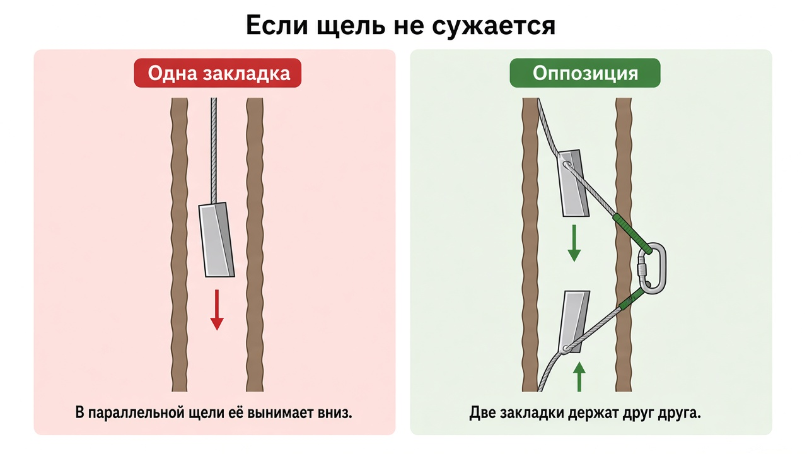
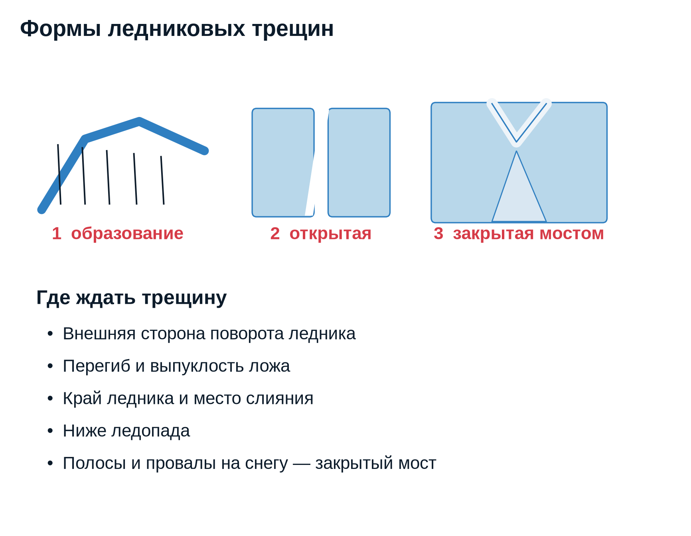
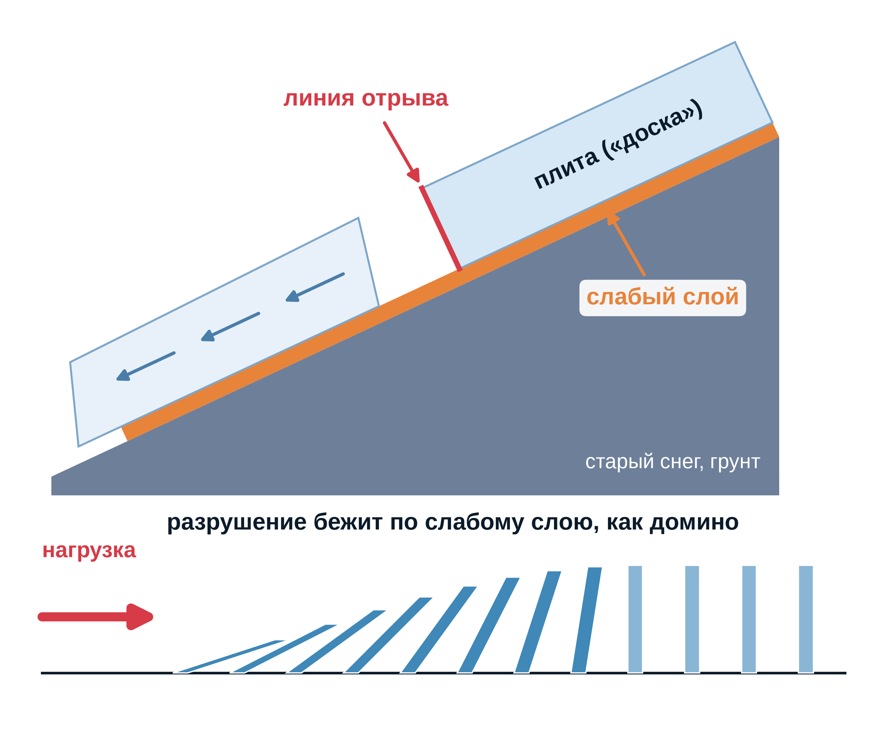
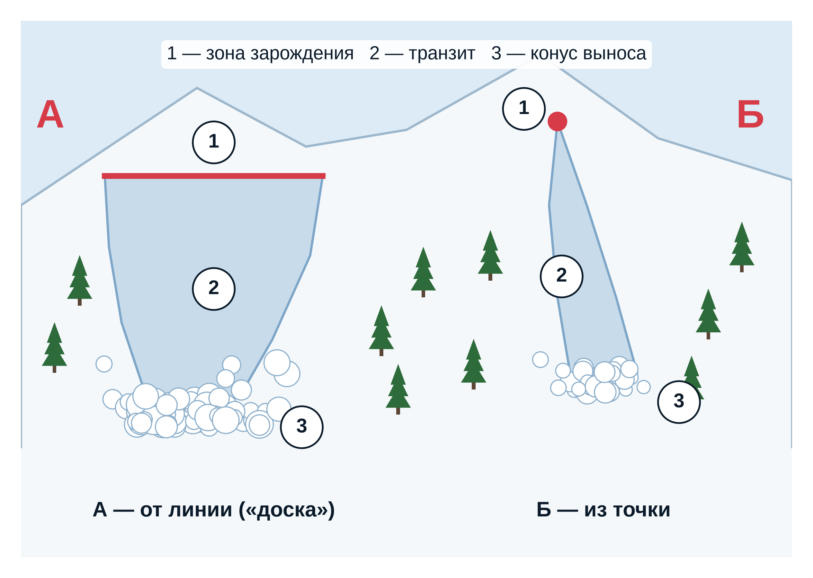
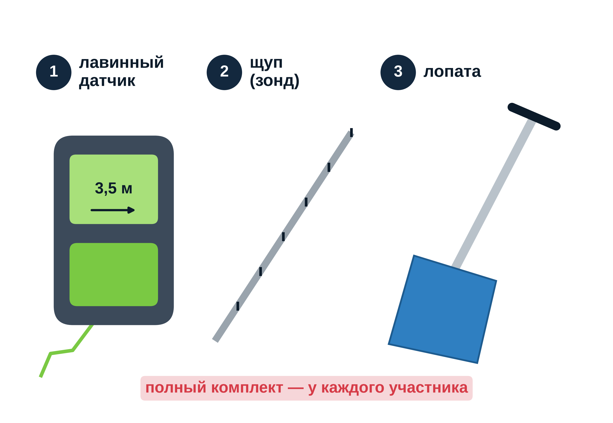

Черновик для замечаний к тексту и к рисункам. Курс не опубликован и не даёт допуска.
Откуда взялась школа
Днём рождения альпинизма считают 8 августа 1786 года: Мишель Паккард и охотник Жак Бальма поднялись на Монблан. Первовосхождение — первое в истории восхождение на вершину. В 1829 году Килар Хаширов первым поднялся на Восточную вершину Эльбруса. Группа Флоренса Грова с Ахией Соттаевым вышла на Западную в 1874 году, но высшая точка точно не подтверждена. Документально подтверждённое восхождение Андрея Пастухова относится к 1890 году, записку нашли в 1935-м. Устав Русского горного общества утвердили в конце 1900 года, учредительное собрание прошло весной 1901-го: общество строило приюты на Кавказе и выдавало книжки проводникам.
Серьёзный разговор о страховке начался в 1865 году на Маттерхорне. Группа Эдварда Уимпера достигла вершины, на спуске сорвавшийся увлёк троих, лопнула самая слабая верёвка, и погибли четверо. Семеро шли одной связкой без промежуточных точек. Связка без точек срыв не держит, снаряжение берут под нагрузку. В 1929 году Василий Семеновский провёл в Безенги сборы «Рабфак во льдах»: месяц техники, страховки и быта. Затем открылись лагеря в Баксане, Цее, на Домбае и в Адыл-су, а значок «Альпинист СССР» 1934 года потребовал единой классификации, в которой участвовал Борис Делоне.
В 1933 году на пик Коммунизма, тогда пик Сталина, 7495 м, поднялся один Евгений Абалаков. Семитысячник начинается от 7000 м, восьмитысячник — от 8000 м, таких вершин на Земле четырнадцать. В 1936 году на Хан-Тенгри, 6995 м, спуск в бурю тяжело обморозил Виталия Абалакова и погубил Лоренца Саладина. С этого спуска главным принципом стала безопасность: подготовка, постепенная акклиматизация, промежуточные лагеря и спасотряд наготове. Спуск входит в маршрут, на него оставляют силы, время и погодное окно. Пик Победы 1956 года, одиннадцать человек на вершине, показал потолок этого стиля.
Две катастрофы на пике Ленина показали цену отступления: в августе 1974 года восемь альпинисток погибли в урагане на спуске, а в июле 1990-го ледовая лавина после землетрясения накрыла лагерь около 5300 м и погубила 43 человека. Система лагеря собралась из этих уроков. Разряды ведут с 1946 года, шестая категория вошла в классификацию в 1965-м, жетон «Спасательный отряд» с 1963 года позже стал обязательным для первого разряда. В 1947 году Иван Антонович провёл на Домбае первые официальные соревнования по скалолазанию, в 1967-м федерация вступила в UIAA, Международный союз альпинистских ассоциаций, а жетон «Снежный барс» дают за все семитысячники бывшего Союза. Экспедиция 1982 года прошла Эверест по контрфорсу юго-западной стены: до неё советские альпинисты не бывали выше 7600 м, а с 4 по 9 мая на вершину поднялись одиннадцать человек, первыми Владимир Балыбердин и Эдуард Мысловский. Рядом стоят Хиллари и Тенцинг Норгей на Эвересте 29 мая 1953 года, бескислородное восхождение Месснера и Хабелера в 1978-м, все четырнадцать восьмитысячников у Месснера в 1986-м, южная стена Лхоцзе в 1990-м, западная стена Макалу и «Золотой ледоруб» команды Сергея Ефимова в 1997-м, первое зимнее восхождение на К2 в январе 2021 года.
Федерация альпинизма России объединяет 64 региональные федерации и развивает ледолазание, скайраннинг и ски-альпинизм. В декабре 2019 года ЮНЕСКО включило альпинизм в список нематериального культурного наследия. Сегодня ходят малыми группами, с минимумом снаряжения и максимумом свободного лазания. Альпинизм в этом курсе — восхождения на вершины и маршруты по скалам, снегу и льду со специальной техникой и снаряжением. Восхождение — подъём на вершину по определённому маршруту вместе со спуском, и такие единицы идут в книжку альпиниста и в документы для аттестации.
Первопрохождение — первое прохождение нового пути на уже покорённую вершину. Инструктор-методист учит внутри спортивной системы. Инструктор-проводник аттестован по закону о туризме, и право работать даёт запись в реестре. Разряд, даже высокий, права водить клиентов за плату не даёт.
Учебные группы
В лагере группу до сих пор зовут НП-1, НП-2, СП, СС и ВСМ. Программа ФАР называет те же ступени языком закона о физической культуре и спорте. Спортивно-оздоровительный этап, СО, раньше в программе отсутствовал и не обязателен: его проводят отдельно или внутри начальной подготовки, а первым этапом может быть сразу НП. Начальная подготовка, НП, имя сохранила. Учебно-тренировочный этап, УТ, заменил спортивную подготовку, СП. Спортивное совершенствование, СС, имя сохранило.
Высшее спортивное мастерство, СМ, — прежний ВСМ, внутри него уровни СМ-1, СМ-2 и СМ-3. Квалификационный уровень — объём знаний, умений и зачётных восхождений, после которого человека ставят в следующую группу, и этот уровень не является ни разрядом, ни категорией маршрута. Этап закрыт, когда пройдены все занятия, зачёты сданы с положительной оценкой и сделаны зачётные восхождения. Инструктор пишет закрытие в книжку альпиниста, часть II «Квалификационные уровни альпиниста». Следующую группу комплектуют после закрытия предыдущего этапа. На СО приходят те, кто альпинизмом ещё не занимался: отдельная подготовка до выезда не обязательна, нужны нормативы по общей физической подготовке и допуск врача.
Человек узнаёт рельеф и опасности, вяжет узлы, ходит по перилам, по некрутому снегу и по льду до 30° в кошках, переправляется простым бродом и переносит легко пострадавшего. Зачёт — одно восхождение 1Б с инструктором. Если лёд и снег на сборе провести не удалось, а остальные занятия и восхождение 1Б сделаны, выдают удостоверение и знак «Альпинист России», пропущенное добирают на НП или позже. В старой речи лагеря этот сезон называли НП-1. Значок 1934 года «Альпинист СССР» сегодняшним знаком не является, и путаница этих двух документов завышает опыт. Начальная подготовка начинается до выезда и продолжается в горах, половинным набором тем её не закрывают.
Человек ходит по простому рельефу, страхует через плечо, поясницу, выступ и устройство, собирает станцию на двух и трёх точках, идёт по закрытому леднику в связке, переправляется вброд и по перилам. Зачётные восхождения, все с инструктором: два маршрута 1Б, два 2А и один 2Б. Этот набор совпадает с третьим разрядом. Второй год лагеря называли НП-2, отдельного кода НП-2 теперь нет. Учебно-тренировочный этап в лагере делили на СП-1, начало второго разряда, и СП-2, его закрытие и первый опыт руководства. Срок в программе — два года, он может быть другим, и тогда пропорционально времени меняют объём физической подготовки, а не список умений.
К концу человек ходит по рельефу 3Б, сам задерживается при срыве на снегу, организует станцию и спуск группы по закреплённой верёвке, оказывает первую помощь и с инструктором поднимает пострадавшего из трещины. Он умеет руководить восхождением 2-й категории: оформить выход, держать решение и не отдавать безопасность на голосование. Зачёт — пять восхождений с инструктором и одно руководителем, по норме второго разряда: два 3Б, три 3А и одно 2Б руководителем. Второй разряд программа называет началом подготовки к сложным восхождениям. На спортивном совершенствовании выполняют первый разряд. Человек идёт свободным лазанием и с ледовыми инструментами по рельефу 5А, проходит короткие сложные куски на искусственных точках, организует спуск группы из двух–шести человек и транспортировку малой группой.
Зачёт — восхождения 4А–5А в спортивных группах и руководство 3А–3Б, расчётные два года. Быстрее или медленнее меняется физическая подготовка, список восхождений остаётся. Высшее мастерство рассчитано на три года, срок тоже может сдвинуться, и каждый уровень начинается после предыдущего. СМ-1 — восхождения 5Б с положительной аттестацией. СМ-2 — 5Б, в том числе 5Б в двойке по комбинированному маршруту, затем 6А с положительной аттестацией. СМ-3 — 6А и затем 6Б с положительной аттестацией.
Здесь человек сам выбирает маршрут по уровню и форме, планирует автономный выход, ночёвку в любую погоду и запасной сход. Восхождение без положительной аттестации в уровень не встаёт. Первое восхождение сложнее программы этапа разрешено, занятия им не заменяют. Для первых 2А, 2Б и 3А нужны учебный цикл этой сложности и один маршрут предыдущей полукатегории. Для первых 3Б и выше нужны полный цикл и уже два маршрута предыдущей полукатегории. Скальный маршрут с пометкой «ск» требует занятий по скалам и спасработам данной сложности. Комбинированный и ледово-снежный, пометки «к» и «лс», добавляют снег, микст и лёд. Выход на лёд после сданных скал и пропущенного льда оставляет человека без приёмов этого пути.
Разряды и звания
Разряды считают по Единой всероссийской спортивной классификации, нормы классического альпинизма — по Правилам вида спорта «альпинизм» с изменениями приказа Минспорта от 14 февраля 2024 года № 170. Классы: технический, высотно-технический, высотный, ледово-снежный и первопрохождений. Запись «2/3А» значит два восхождения категории 3А. Одна звёздочка — одно из отмеченных восхождений ледово-снежное или комбинированное, две — двойка, три — человек шёл руководителем, четыре — первопрохождение. Более сложное восхождение заменяет более простое. Зачёт идёт в группе от двух человек, разряды выполняют по порядку, и первый не закрывают без второго.
Третий разряд одинаков для мужчин и женщин: одно 2Б, два 2А и два 1Б, тот же набор, которым закрывают НП. Его засчитывают на соревнованиях не ниже чемпионата муниципального образования, судьи видят действия на месте. Второй разряд тоже одинаков: два 3Б, три 3А и одно 2Б руководителем, вместо него можно засчитать руководительское 2А, соревнования того же уровня. Все маршруты, пройденные только участником, второй разряд не закрывают. Первый разряд у мужчин: два 5А, одно из них ледово-снежное или комбинированное, одно 4Б, одно 4Б в двойке, одно 4А, одно 4А в двойке и одно 3Б руководителем, которое можно заменить руководительским 3А. У женщин: два 5А, одно из них ледово-снежное или комбинированное, два 4А, два 4Б и одно 3Б руководителем либо одно 3А руководителем.
Присваивают на соревнованиях не ниже других официальных соревнований субъекта Российской Федерации. Кандидат в мастера спорта у мужчин — одно 6А, два 5Б, из них одно ледово-снежное или комбинированное, и одно 5А в двойке. У женщин — два 5Б, из них одно ледово-снежное или комбинированное. КМС присваивают не ниже чемпионата федерального округа, двух и более округов, Москвы или Санкт-Петербурга. Мастер спорта считается баллами за четыре года: не меньше 25, из них не меньше 10 на чемпионатах России и из этих десяти не меньше пяти в дисциплине «класс — технический». Место на чемпионате России даёт 10, 8, 7, 6, 5, 4, 3, 2 и 1 балл с первого по девятое.
На чемпионате округа, двух и более округов, Москвы или Санкт-Петербурга — 5, 4, 3, 2 и 1 с первого по пятое. Сами маршруты дают 1 балл за 5Б, 2 за 6А, 3 за 6Б и ещё балл за двойку, или за первопрохождение либо первовосхождение, или за зиму, или за высоту выше 6900 м. Мужчине нужно одно 6Б, женщине — одно 6А. Мастер спорта международного класса у мужчин — три 6Б, среди них одно в двойке и одно первопрохождение. У женщин — два 6Б, и среди них одно ледово-снежное или комбинированное, либо в двойке, либо первопрохождение. МСМК присваивают на международных соревнованиях не ниже других международных из единого календарного плана.
Повторно разряд закрывают одним восхождением участником: КМС — маршрут 5Б, первый разряд — 5А, второй — 3Б, третий — 2Б. Заслуженный мастер спорта — почётное звание, в таблице ЕВСК его нет, и числом шестёрок его не закрывают. Учебный этап говорит, какую группу комплектовать. Разряд говорит, что засчитано по классификации. Категория от 1Б до 6Б оценивает альпинистский маршрут, правовая от I до VI — туристский. Ни этап, ни разряд, ни жетон «Спасательный отряд», ни знак «Альпинист России» права на платную услугу не дают. Его даёт запись в реестре на нужные вид и категорию. Выход с клиентами по разряду или по группе СП — работа без допуска.
Категории маршрутов и участки
Цифра маршрута ничего не значит, пока не названа шкала. У вершины своя категория трудности по рекомендациям ФАР от 9 сентября 2002 года, у перевала — по методике категорирования горных перевалов, у туристского маршрута в законе — от I до VI по приказу Минэкономразвития № 340 и распоряжению Правительства № 1365-р. Знаки 1Б, 2А и III друг в друга не переводятся. Маршруты восхождений делят на шесть категорий, от 1Б до 6Б. Со второй по шестую у каждой две полукатегории: А проще, Б сложнее. Полукатегория — эта половинка.
В категорию входит только путь подъёма. Подход и спуск описывают в отчёте отдельно, при траверсе спуск считают с последней вершины. Для классификации траверс — прохождение не меньше двух вершин, когда спуск с предыдущей идёт к следующей, а не обратно по пути подъёма. Одна вершина с возвратом тем же путём траверсом не является. В широком смысле так называют и гребневой путь через несколько вершин, и движение поперёк склона. Безенгийская стена даёт образец первого смысла: тринадцать километров гребня, Гестола, Катынтау, Джангитау и Шхара 5193 м, траверсы 5Б и 6А, первый с востока на запад в 1938 году, первый зимний в 2014 году.
Оценку ставят при обычной погоде и обычном рельефе, по всем участкам вместе. Предварительную дают первопроходцы сравнением с маршрутами той же полукатегории, которые сами ходили. Окончательную присваивает только классификационная комиссия ФАР, 6Б после её рекомендации утверждает правление, и до решения категорию первопрохождения в книжку не пишут. Рядом с категорией стоят пометки. «пв» — первовосхождение, «пп» — первопрохождение, «вар» — вариант, «ком» — комбинация пройденных участков, «е» — шлямбуры, «з» — зима, и это не седьмая категория, «д/гр» — зачёт только конкретной группе, для учёбы не рекомендован. Ниже классифицированных лежат некатегорийные маршруты: они легкодоступны, специальная подготовка и снаряжение не нужны.
1А доступен, части группы уже нужна первоначальная подготовка, на отдельных участках страхуют верёвкой. 1Б длиннее: нужен объём, который рекомендации называют программой НП-1, на маршруте работают снаряжением и приёмами страховки, обычно ночуют под маршрутом, такие пути рекомендуют на знак «Альпинист России». С 2А полукатегорию определяют сравнением с классическими маршрутами, а не таблицей метров. Крымская 1Б короче и технически плотнее кавказской, и крымскую таблицу на большой горный маршрут не переносят. Категория пути собирается из участков. Маршрут делят по характерным местам, свободное лазание и искусственные точки пишут раздельно.
Градация участка — оценка куска, а не всего восхождения. Свободное лазание имеет шесть градаций, у каждой ступени «−» и «+»: I очень лёгкое, II лёгкое, III среднее, IV трудное, V очень трудное, VI чрезвычайно трудное. Градация VI — участок над надёжной страховкой, предельно сложный рельеф и очень маленькие зацепки. Его свободным лазанием идут лучшие в лучшей форме, в хороших условиях и современной обуви, на грани срыва. Дальше в описании указывают незащищённость, ориентировку, видно ли напарника, камнепад и лавины, условия страховки, длину, набор, время и число крючьев, места без возврата и возможный аварийный спуск. Искусственные точки опоры — точки, на которые опираются или за которые подтягиваются.
А1 — одиночные крючья и подсаживание, рельеф прост и надёжен. А2 — серия точек при том же простом рельефе. А3 — большие серии, нужна вторая верёвка, рельеф сложнее, на пути карнизы и навесы. А4 — большие серии, снова вторая верёвка, рельеф сложный и ненадёжный, карнизы большие. Буква «е» после градации значит шлямбуры или отверстия под скайхуки, запись «V+е» — пятая градация, верхняя ступень, и шлямбуры. Стационарные шлямбуры на схеме обозначают «Т».
Эта буква категорией маршрута не является и восток не обозначает. Перевалы идут шкалой н/к, 1А, 1Б, 2А, 2Б, 3А, 3Б, выше 3Б её нет. Звезда, например 2А*, значит, что от сезона и снега перевал может стать на полукатегорию труднее, группе нужен опыт следующей. У 3Б* нужен опыт не меньше двух перевалов 3Б. В зачёт звезду не оставляют, по факту пишут однозначную категорию. По методике 1А — склоны до 30°, пологие ледники без трещин, самостраховка ледорубом, несколько часов, точек нет.
1Б — склоны 20–45°, закрытые ледники, одновременное движение, до суток и до пяти точек. 2А — та же крутизна и несложные ледопады, попеременная или перильная страховка, кошки, до суток и примерно 5–10 точек. 2Б — круче 45°, стены до 10–15 м, дюльфер, не меньше суток. 3А — склоны 45–65°, стены в одну–две верёвки, искусственные опоры, до двух суток. 3Б — те же формы длиннее, непрерывная страховка, возможны висячие ночёвки, не меньше двух суток. Перевал 2А и маршрут 2А на вершину описывают разное: у перевала смотрят склон, лёд, точки и время, у вершины — путь подъёма рядом с классикой той же полукатегории.
В договоре стоит правовая категория от I до VI. От неё зависит право вести группу: в реестре нужны тот же вид и та же категория либо работа в бригаде на одну выше. «Горный маршрут III категории» — правовая запись, альпинистская 3Б и перевал 3А в неё не подставляются. Цифра без имени шкалы — повод спросить. Французские F, PD, AD, D, TD и ED описывают маршрут целиком, от «легко» до «экстремально трудно».
Официального перевода в 1Б–6Б нет, соответствие остаётся грубым ориентиром, путь сверяют по описанию. В категории для проводника сидят техника, протяжённость, высота и серьёзность. Погода и длина дня делают простой маршрут серьёзным, описание сверяют со свежими отчётами. Это теория: навык чтения категории и ведения группы осваивают очно, а текст не является допуском и не заменяет аттестацию.
Черновик для замечаний к тексту и к рисункам. Курс не опубликован и не даёт допуска.
Закон и определение
Главный документ туристской отрасли — федеральный закон «Об основах туристской деятельности в Российской Федерации» № 132-ФЗ 1996 года. В нём определены инструктор-проводник, туристский маршрут и аттестация. Последняя большая редакция этих норм — закон № 63-ФЗ от 23 марта 2024 года, он действует с 1 июня 2024 года. За туристскую отрасль на федеральном уровне отвечает Министерство экономического развития. Регионы относят конкретные маршруты к требующим сопровождения. Аттестацию проводят уполномоченные организации из перечня Правительства, в их числе Федерация альпинизма России.
Нормы за последние годы менялись, поэтому в работе держатся действующей редакции и отдельно отмечают места, где банк аттестации сформулирован иначе. Инструктор-проводник — лицо, прошедшее аттестацию, которое сопровождает туристов и обеспечивает их безопасность на туристском маршруте определённых Правительством вида и категории сложности. Такой маршрут закон называет туристским маршрутом, требующим специального сопровождения. Туристский маршрут — путь следования туристов по туристским ресурсам. Аттестация и безопасность в этом определении стоят как обязанности. На маршрутах, которые сопровождения не требуют, аттестация не обязательна.
Трудовой договор с туроператором и статус самозанятого аттестацию не заменяют. Выход с клиентами по договору с фирмой, но без записи в реестре на нужные вид и категорию, оставляет работу без того права, которое закон связывает с аттестацией. Как конкретный маршрут попадает в перечень, видно по цепочке документов. Распоряжение Правительства № 1365-р от 1 июня 2024 года утверждает виды таких маршрутов: пешеходные, горные, альпинистские, водные, спелеологические и другие, и критерии шести категорий сложности. Приказ Минэкономразвития № 340 устанавливает порядок отнесения маршрута и то, как размещают сведения о нём.
Само отнесение делает регион и публикует сведения на официальном сайте. На маршрут формируется паспорт, его прикладывают к уведомлению о выходе группы. Первое действие перед работой — найти маршрут в сведениях региона и узнать его вид и категорию. Выход «по памяти, что здесь всегда водили» оставляет группу на пути, чью правовую категорию с реестром не сверили.
Когда без проводника нельзя
Аттестованный проводник обязателен, когда туристам оказывают услугу на маршруте, требующем специального сопровождения. Туроператор продаёт тур, организация или предприниматель ведёт группу за плату, и сопровождать должен инструктор-проводник, аттестованный на этот вид и эту категорию. Если маршрут сопровождения не требует или группа идёт самостоятельно, без услуги, например спортивный поход, нормы об услугах проводника не применяются. По статье 14.51 Кодекса об административных правонарушениях штрафуют за сопровождение без инструктора-проводника или неаттестованным лицом, за работу без нагрудной карточки и за ненаправленное уведомление. Если пострадали люди, вопрос переходит в уголовную ответственность. Штраф приходит за форму работы, ещё до разговора о том, хватало ли человеку техники.
Маршрут может быть объективно сложным и при этом отсутствовать в сведениях региона о маршрутах, требующих сопровождения. Формально аттестация для такой работы по закону не обязательна. Гражданская и уголовная ответственность за безопасность услуги остаётся: если клиент пострадал, суд оценивает, была ли услуга безопасной. Поэтому работают так же, как на спецмаршруте: договор, инструктаж, проверка снаряжения, план действий при чрезвычайной ситуации. Отдельная ловушка — платный «клуб», «школа» или «спортивный поход». Если организация или человек получает плату за сопровождение группы по маршруту, требующему сопровождения, проверяющие и суд оценят это как услугу, каким бы ни было название.
Спортивный поход, выпущенный МКК, остаётся самодеятельной группой без услуги. Сомнение разрешают в сторону правил оказания услуг, потому что название «поход» само по себе плату за сопровождение не прячет. Российская аттестация не даёт права работать в горах другой страны, даже если клиенты российские. Правила страны узнают заранее: где-то нужна местная лицензия, где-то обязателен местный гид или проводник, где-то разрешение на восхождение. Договор и страховой полис должны учитывать страну, высоту и вид активности. Инструктор, который везёт группу по российской карточке за рубеж, встречает границу права на первом контроле или уже после происшествия, когда полис и местные правила не совпадают с тем, что обещали клиенту. Соседняя ошибка домашняя: считать, что сложный маршрут внутри России «сам» требует аттестации, хотя регион его не отнёс, и наоборот, считать необязательность аттестации разрешением работать без договора и инструктажа.
Категории по закону и профстандарт
Закон говорит, кто такой инструктор-проводник, а профессиональный стандарт говорит, что он должен уметь. Это документ Министерства труда, приказ № 914н от 24 декабря 2021 года, он действует с 1 сентября 2022 года по 2028 год. Стандарт утверждает трудовые функции, необходимые знания и умения, требования к образованию и опыту. Функции выстроены вокруг подготовки и планирования маршрута, сопровождения и обслуживания туристов и обеспечения безопасности, включая действия в аварийной ситуации. Трудовой договор и закон о туризме этого набора не описывают. На вопрос, какой документ утверждает трудовые функции и требования к образованию, ответ — профессиональный стандарт.
Поиск этих требований в тексте договора приводит к чужому документу и пропускает то, по чему спрашивают на аттестации и при разборе работы. Правовые категории сложности установлены распоряжением № 1365-р. Их шесть, обозначаются римскими цифрами, и инструктора аттестуют на конкретные вид и категорию, записанные в реестре. Критерии для горных и альпинистских маршрутов описывают рельеф. Первая категория — простые травянистые, осыпные и снежные склоны до 30° и пологие ледники без трещин. Вторая — несложные скалы, склоны средней крутизны, закрытые ледники со скрытыми трещинами.
Дальше рельеф круче, длиннее и сложнее, вплоть до стен в 60° и круче на шестой категории. В критериях даны ориентиры по альпинистской шкале: первая категория соответствует 1Б, вторая — 2А и 2Б, и так до шестой, примерно 6А–6Б. Категорию конкретного маршрута берут из сведений региона, а не из этого ориентира. Ориентир помогает понять рельеф и опасен, если подставить его вместо правовой категории. Альпинистская 3Б, поход третьей категории сложности и правовая III — три разные записи. Для законной работы значение имеют правовая категория из сведений региона и та, что стоит в реестре.
Альпинистские и туристские шкалы помогают понять реальную сложность и найти отчёты. Фраза «аттестован на третью» без вида маршрута и без цифры из реестра не называет путь, который человеку можно возглавлять. Выход на маршрут 3Б или в поход третьей категории только потому, что в реестре стоит «третья», выводит за допуск, даже если технически маршрут по силам. Зеркальная ошибка — отказаться от маршрута, который по сведениям региона лежит в своей категории, лишь потому что альпинистская полукатегория выглядит выше привычной римской цифры, без сверки описания.
Походы, перевалы и гиды
Параллельно живёт система спортивного туризма. Горные походы делят на шесть категорий сложности, от первой до шестой, а для новичков есть походы первой, второй и третьей степени сложности. Категорию похода определяют продолжительность, протяжённость и набор препятствий. Основное препятствие в горах — перевал. Перевалы бывают некатегорийные, их обозначают «н/к», и категорийные: 1А, 1Б, 2А, 2Б, 3А и 3Б. Звёздочка, например «3А*», значит, что перевал сложнее типичного для своей полукатегории.
Упрощённо ключевые перевалы растут вместе с категорией похода: в первой это 1А, во второй 1Б, в третьей 2А, и так до 3Б в шестой. В зачёт идут и вершины, и траверсы. Оценка похода только по дням и километрам пропускает набор перевалов, из которого категория складывается. Спортивную группу выпускает маршрутно-квалификационная комиссия, МКК. Федерация спортивного туризма России, ФСТР, и региональные федерации такие комиссии создают. Руководитель подаёт заявку, комиссия проверяет опыт руководителя и участников, маршрут, запасные варианты, аварийные выходы и снаряжение.
Если всё в порядке, группа выпущена, и комиссия заверяет маршрутную книжку: документ с маршрутом, составом, контрольными сроками и отметками в пути. После похода группа пишет отчёт, комиссия засчитывает поход. Отчёты лежат в библиотеках, например ФСТР и московской федерации ФСТ-ОТМ, и для проводника это главный источник сведений о перевалах. Выпуск МКК относится к самодеятельным группам. При оказании услуги он не заменяет ни аттестацию, ни уведомление, и заверенная книжка в платной группе создаёт вид законного выхода, которого без записи в реестре нет. В Альпах и многих других странах горный гид — регулируемая профессия, а высший стандарт задаёт Международная федерация ассоциаций горных гидов.
По-английски её обозначают IFMGA, по-французски UIAGM, основана она в 1965 году. Гид этого уровня годами проходит курсы и экзамены по скалолазанию, ледовому и комбинированному альпинизму и лыжным маршрутам, со стажировкой под надзором опытных гидов. Для российского проводника это ориентир культуры работы: решение принимают по условиям на месте, число клиентов на одного гида зависит от сложности маршрута, квалификацию постоянно поддерживают. Международный союз альпинистских ассоциаций — другая организация, Федерация альпинизма России состоит в нём. Союз задаёт стандарты безопасности снаряжения, ведёт спортивные вопросы и предлагает национальным федерациям стандарты подготовки инструкторов и лидеров, горных гидов он не аттестует. Членство федерации, принятое за международный допуск гида, подменяет одну организацию другой. Это теория: навык сопровождения группы осваивают очно, а текст не является допуском и не заменяет аттестацию.
Черновик для замечаний к тексту и к рисункам. Курс не опубликован и не даёт допуска.
Путь к аттестации и экзамен
Порядок аттестации установлен Положением об аттестации инструкторов-проводников, постановлением Правительства № 1003 от 1 июня 2022 года, с изменениями. Путь идёт по шагам. Сначала профессиональное обучение по программе инструктора-проводника. Затем опыт: для горных и альпинистских маршрутов, например, не меньше двенадцати восхождений, из них не меньше двух той категории, на которую аттестуются, и есть альтернативные варианты через походы. Дальше документы о подготовке по первой помощи, медицинское заключение об отсутствии противопоказаний и справка об отсутствии судимости. Затем заявление в уполномоченную организацию, квалификационный экзамен, запись в реестре и нагрудная карточка.
Экзамен сдают лично, он состоит из двух частей. Тест — двадцать пять вопросов, случайно выбранных из утверждённого перечня, на него дают шестьдесят минут. Зачёт — не меньше двадцати верных ответов. Шесть ошибок уже дают неудовлетворительный результат, и к практической части соискателя не допускают. Возраст, в том числе старше семидесяти лет, сам по себе основанием для отказа не является. Практическое задание соискатель выбирает по билету и выполняет при комиссии, со снаряжением, в том числе на реальном рельефе.
Решение комиссия принимает в день заключительного этапа. Отказ можно обжаловать в Министерство экономического развития в течение десяти рабочих дней. Аттестацию проводят уполномоченные организации из перечня, утверждённого распоряжением Правительства № 1156 от 16 мая 2024 года. По альпинистским маршрутам это Федерация альпинизма России, по пешеходным и горным туристским — также Федерация спортивного туризма России, и какая организация аттестует, зависит от вида маршрута. Проводники, которых в 2024 году внесли в реестр по упрощённой процедуре, по спискам туроператоров, должны были пройти полную переаттестацию до 1 октября 2026 года. Экзамен принимает аттестационная комиссия, в неё входят и представители МЧС. Заявление «не в ту» организацию по виду маршрута затягивает допуск: комиссия принимает экзамен в пределах своего вида, и альпинистский пакет, поданный в туристскую комиссию, или наоборот, своего экзамена не проходит.
Реестр, срок и границы работы
Достоверные сведения обо всех аттестованных проводниках лежат в едином федеральном реестре инструкторов-проводников на ресурсах Министерства экономического развития. Работать можно со дня включения в реестр и только на указанные там виды и категории. Проводник получает нагрудную идентификационную карточку с номером записи и QR-кодом, ведущим в реестр. В банке аттестации право на оказание услуг подтверждает именно нагрудная карточка. По закону право даёт запись в реестре, а карточка позволяет быстро её проверить, и работа без карточки — отдельный штраф. Карточка в рюкзаке, а не на груди, для проверки равна отсутствию карточки.
Инструктор показывает запись клиенту ссылкой ещё до договора, чтобы вид и категория были видны до денег и до выхода. Закон требует планового подтверждения соответствия каждые пять лет со дня включения в реестр, возможно и внеплановое подтверждение. В банке аттестации правильный ответ о сроке — до даты, указанной в реестре: ни десять лет, ни два года верными не являются. Если уклониться от подтверждения, действие аттестации прекращают. Руководителем группы проводник работает только на маршрутах тех вида и категории, на которые аттестован, и он же руководит бригадой. В составе бригады, под руководством руководителя группы с нужным допуском, проводник вправе работать на маршруте на одну категорию выше, но не более. Проводник второй категории может работать на третьей только в такой бригаде. Самостоятельный выход «на категорию выше, потому что рядом опытный» без статуса бригады и без руководителя с допуском этой категорией не покрыт.
Договор, выход и уведомление
Правила оказания услуг инструктора-проводника утверждены постановлением Правительства № 761 от 1 июня 2024 года. До договора турист узнаёт перечень услуг, сроки и цену, а также то, что зависит от него самого: противопоказания, физическую подготовку и нужный опыт. Ему дают ссылку на запись проводника в реестре. Договор заключают в любой форме. В нём указан статус каждого проводника, руководитель группы или член бригады, и адрес для претензий. О маршруте договор сообщает вид и категорию, препятствия, телефоны экстренной связи, возможности спасения и эвакуации, выдаваемое снаряжение и ожидаемую погоду.
Устный рассказ на вокзале этих сведений не заменяет: потом нечего показать, если турист скажет, что о категории и о погоде он не слышал. До выхода организация или проводник сообщает туристу о необходимости медицинского страхования и страхования от несчастных случаев и выдаёт снаряжение по договору. Руководитель группы направляет уведомление о сопровождении и изучает план: основной и запасной варианты, аварийные выходы, участки повышенной сложности, ночлеги, укрытия, пункты медицинской помощи и связи, погоду. Затем он проверяет групповое и личное снаряжение и убеждается, что у туристов нет противопоказаний, а подготовка и опыт соответствуют маршруту. Инструктаж по безопасности проводят очно, ссылка в мессенджере его не заменяет. Пропущенный очный инструктаж оставляет группу без доказанного разговора о правилах, и на маршруте «я же писал в чат» эту дыру не закрывает.
На маршруте проводник контролирует соблюдение туристами требований личной безопасности, предупреждает об угрозе жизни и здоровью, помогает при несчастном случае, оказывает первую помощь, организует доставку пострадавшего к врачу и сообщает о происшествии спасателям. У туриста свои обязанности. До выхода он честно рассказывает о физической подготовке, противопоказаниях и опыте и проходит инструктаж. На маршруте он соблюдает требования безопасности, сразу сообщает об ухудшении самочувствия и выполняет требования проводника. Если турист нарушает, его предупреждают прямо, при свидетелях, и записывают время и суть. Когда нарушение создаёт риск для жизни или здоровья, правила разрешают приостановить услугу и сообщить на базу или туроператору.
Предупреждение «между делом», без свидетелей и без записи, потом нечем подтвердить. Правила прямо перечисляют, что должно быть у проводника на маршруте. Схема маршрута с категорией сложности включает основной и запасной варианты, аварийные выходы, категории локальных препятствий, точки эвакуации, пункты медицинской помощи, места, где можно пополнить воду, и план действий группы при чрезвычайной ситуации. Карта района показывает основной и вспомогательные маршруты, направления движения, ночлеги и ориентиры. Список туристов содержит фамилию, имя, возраст и телефон. С ними идёт аптечка первой помощи.
По сути это тактический план и план действий при чрезвычайной ситуации. Схема «в телефоне у базы» на маршруте без связи для группы не существует, и инструктор обнаруживает это в тот момент, когда план уже нужен. Уведомление о сопровождении — информирование МЧС о группе в электронной форме. Порядок установлен постановлением Правительства № 760 от 1 июня 2024 года. Направляет его инструктор-проводник со статусом руководителя группы, не позднее даты начала маршрута, через личный кабинет в едином реестре, с электронной подписью, и к уведомлению прикладывают паспорт маршрута. Система передаёт его в территориальный орган МЧС того региона, где проходит маршрут, в региональный орган надзора за проводниками и в организацию, которая аттестовала проводника.
После маршрута руководитель отправляет уведомление о завершении, не позже контрольной даты, указанной в первом уведомлении. Уведомление, которое отправил член бригады, а не руководитель, или которое ушло после старта, эту обязанность не исполняет. Контрольный срок — время, к которому группа обязана сообщить, что вышла с маршрута. Если сообщения нет, спасатели начинают действовать как при чрезвычайной ситуации, вплоть до поиска. Срок назначают реалистично, с запасом на непогоду, а о задержке сообщают заранее. Для проводника, работающего по услуге, это контрольная дата уведомления о завершении.
Самодеятельные группы и одиночные туристы регистрируются в МЧС через онлайн-форму на официальном сайте: состав, руководитель, телефоны, маршрут и сроки. Заявку обрабатывают в течение суток и передают спасательным подразделениям. Вернувшись, сразу сообщают о сходе с маршрута, иначе спасатели ищут тех, кто уже дома. Забытое снятие с учёта тратит чужой поиск на пустую долину.
Отказ, страхование и ответственность
Правила разрешают не заключать договор в трёх случаях. На эти даты оказать услугу невозможно. Из-за погоды, чрезвычайной ситуации, особого противопожарного режима или режима контртеррористической операции безопасность не обеспечить. Безопасность не обеспечить конкретному туристу из-за его здоровья, подготовки или опыта. Если такие обстоятельства выяснились при проверке перед выходом, руководитель группы вправе отказать туристу в услуге. На маршруте проводник вправе приостановить услугу, если возникла угроза жизни или здоровью, в том числе из-за чрезвычайной ситуации или ухудшения погоды.
Претензию рассматривают и отправляют туристу официальный ответ, лучше письменно: разговор по телефону и ожидание повторного письма этого не заменяют. Срок для требования вернуть деньги по закону о защите прав потребителей — десять дней, а там, где закон срок не установил, правила дают двадцать рабочих дней. Договор, переписку и записи о ходе маршрута хранят: это защита проводника, когда события восстанавливают по бумагам. До выхода туриста информируют о необходимости медицинского страхования и страхования от несчастных случаев. Заставить купить полис нельзя, объяснить, зачем он нужен, — работа проводника. Обычная туристическая страховка часто исключает альпинизм, горный туризм или работу выше определённой высоты.
В полисе проверяют вид активности, предельную высоту, регион и даты, а также покрытие поиска и эвакуации, включая вертолёт. Поисково-спасательные работы государственных спасателей бесплатны, экстренную медицинскую помощь гражданам России оказывают по полису обязательного медицинского страхования. Страховка от несчастного случая даёт выплату при травме, полис может покрыть платную эвакуацию, перевозку домой и лечение, которое в обязательное страхование не входит. Для иностранного клиента и для работы за рубежом без полиса не обойтись. Себе проводнику разумно оформить страховку от несчастного случая и добровольное страхование ответственности, копии полисов и телефоны страховщиков держать вместе со списком группы. Ответственность проводника бывает трёх видов.
Административная — штрафы за сопровождение без инструктора-проводника или неаттестованным лицом, за работу без нагрудной карточки и без уведомления, за нарушения на особо охраняемых природных территориях по статье 8.39 Кодекса об административных правонарушениях. Гражданская — возмещение вреда здоровью и имуществу туриста и ответственность по закону о защите прав потребителей. Уголовная — статья 238 Уголовного кодекса, оказание услуг, не отвечающих требованиям безопасности жизни или здоровья потребителей. Если по неосторожности погиб человек, это часть вторая статьи, гибель двух и более — часть третья, оба случая тяжкие преступления. Отдельно по статье о причинении смерти по неосторожности такое деяние не квалифицируют: её применяют, когда признаков услуги нет. Бросить туриста в опасности, если о нём обязаны заботиться, — отдельное преступление, оставление в опасности. Уголовная ответственность всегда личная: её не переложить на туроператора и не снять распиской. Это теория: навык оказания услуги осваивают очно, а текст не является допуском и не заменяет аттестацию.
Черновик для замечаний к тексту и к рисункам. Курс не опубликован и не даёт допуска.
Режим особой охраны
ООПТ — особо охраняемая природная территория. Это участки земли, воды и воздушного пространства, где находятся природные комплексы и объекты особой ценности. Правовая основа — федеральный закон № 33-ФЗ «Об особо охраняемых природных территориях» 1995 года. Главное понятие — режим особой охраны. Это система ограничений деятельности человека, которая служит природоохранным целям. Режим не сводится к запрету любого присутствия человека и не означает круглосуточную работу охраны.
Ограничение хозяйственной деятельности — один из самых эффективных методов охраны: территория восстанавливается, когда на неё перестают давить. ООПТ бывают федерального, регионального и местного значения. Инструктор, который слышит «заповедник» и решает, что «людей туда не пускают вовсе» или что «раз стоит кордон, значит, везде можно по тропе», читает режим слишком грубо и либо срывает разрешённый путь, либо заводит группу туда, куда режим не пускает. Границу узнают заранее, а не по ощущению «здесь красиво и редко». Точный признак на месте — информационные и охранные знаки, стенды и аншлаги: ими обозначают границы и правила. Оборудованные тропы и необычная растительность признаком не являются: тропы есть везде, а редкие растения встречаются и за пределами ООПТ.
В горах знак может стоять только у дороги, а граница уходит по хребту, поэтому смотрят официальные карты, сведения на сайте территории, положение о ней и спрашивают администрацию. Особенно внимательно смотрят маршруты через перевалы: одна сторона хребта может оказаться заповедной, и спуск в эту долину запрещён. Группа, которая «срезала» день через незнакомый перевал, обнаруживает запрет уже на седловине, когда обход стоит не час, а весь запасной план. Правила оказания услуг прямо требуют соблюдать правила организации туризма, если маршрут проходит по особо охраняемой территории. Порядок на практике такой. Узнают режим, функциональные зоны и правила посещения на сайте или в администрации.
Оформляют разрешение и оплачивают посещение, если это требуется. Регистрируют группу. На инструктаже объясняют, где можно идти, где ставить палатки и разводить огонь, что нельзя собирать. На маршруте держатся разрешённых троп и мест стоянок, весь мусор выносят с собой. На выходе отмечаются, если это предусмотрено правилами. Пропущенная регистрация или неоплаченное посещение останавливают группу на кордоне в день, когда график уже некуда сдвигать.
Заповедник, парк и заказник
Государственный природный заповедник — самый строгий режим: природа полностью изъята из хозяйственного использования. В нём не запрещены научная деятельность и экологический мониторинг, ради них он и существует. Познавательный туризм допускается только на специально выделенных участках и по разрешению администрации. Обычные походы, восхождения, охота и рыбалка запрещены. Национальный парк сочетает охрану с регулируемым туризмом, его территория делится на функциональные зоны: заповедную, особо охраняемую, рекреационную и другие. В парке разрешены регулируемый туризм и отдых, познавательная и образовательная деятельность по правилам и зонам.
Охота там запрещена, сбор грибов и ягод возможен лишь в отдельных зонах. Инструктор, который ведёт восхождение по заповеднику так, как по национальному парку, подменяет два режима и получает запрет там, где рассчитывал на тропу. Природный парк — похожая по смыслу территория регионального значения. Заказник создают для сохранения или восстановления отдельных природных комплексов, и запрещено в нём то, что им вредит: охота, вырубка леса и прочее, конкретный список лежит в положении о заказнике. Походы через заказник, как правило, разрешены. Памятник природы — отдельный уникальный природный объект регионального или федерального значения: водопад, пещера, скала, ледник.
Есть ещё дендрологические парки и ботанические сады. Ошибка «заказник равен заповеднику» заставляет группу делать длинный обход там, где путь открыт, а ошибка «в заказнике можно всё, кроме таблички» приводит к рубке, костру или сбору там, где положение это прямо запрещает. Самая высокогорная ООПТ России — национальный парк «Приэльбрусье», созданный в 1986 году: в его границах Эльбрус, 5642 м. Посещение многих национальных парков платное и требует регистрации группы, альпинистские и туристские группы дополнительно уведомляют спасателей. Район Домбая входит в Тебердинский национальный парк.
У Белухи на Алтае — Катунский заповедник и природный парк «Белуха». Заповедник «Галичья гора» и национальный парк «Русская Арктика» тоже ООПТ, но не горные: первый в Липецкой области, второй на арктических островах. Путаница «любая известная гора — заповедник» или «Приэльбрусье — заповедник» меняет набор разрешений. На Эльбрусе инструктор готовит регистрацию и оплату парка, а не режим полного изъятия территории из использования.
Группа, наследие и ответственность
За нарушение режима установлена административная и гражданская ответственность. Штраф идёт по статье 8.39 Кодекса об административных правонарушениях, возможно изъятие орудий и добычи, причинённый вред возмещают по специальным таксам, нарушенное восстанавливают. Так звучит и правильный ответ в банке аттестации. Если нарушение причинило значительный ущерб, наступает уголовная ответственность по статье 262 Уголовного кодекса, а за незаконную охоту, рубку или пожар — по своим статьям. Исключения из реестра проводников или «чёрного списка» посетителей как наказания за нарушение режима закон не предусматривает. Расчёт «заплатим штраф и пойдём» не учитывает таксы за вред и уголовную статью при значительном ущербе, а расчёт «нас вычеркнут из реестра за костёр» подменяет законное наказание слухом.
Кроме природы, в горах охраняется история. На Алтае, в Туве, на Кавказе на маршрутах встречаются курганы, наскальные рисунки — петроглифы, каменные изваяния, старые башни и святилища. Многие из них — объекты культурного или археологического наследия, они охраняются законом, повреждение влечёт административную и уголовную ответственность. Правило для группы простое: ничего не копать, не брать на память, не сдвигать камни, не ставить палатки и не жечь костёр на курганах. Есть и почитаемые места.
Белуха и плато Укок для многих алтайцев священны, у перевалов и родников стоят обо, каменные пирамиды, и висят ленточки. Их не снимают, не разбирают и не превращают в фон для шуточных фото. Перед маршрутом узнают у местных жителей, проводников и в администрации парка, что принято в этом районе, и говорят об этом на инструктаже. Камень «на сувенир» с кургана и ленточка «на удачу» с обо для группы выглядят мелочью, а для режима и для людей, которым место принадлежит, это повреждение и неуважение.
Пограничная зона
Многие горные районы лежат у государственной границы. Главный Кавказский хребет выходит на границу с Грузией и Азербайджаном, Алтай — к Казахстану, Китаю и Монголии, Саяны и Тыва — к Монголии. Вдоль границы установлена пограничная зона с пограничным режимом: правилами въезда, пребывания и передвижения по закону «О Государственной границе Российской Федерации» и правилам пограничного режима, утверждённым ФСБ России. Как правило, для въезда нужен пропуск, его выдаёт пограничное управление ФСБ. Ближе всего к линии границы — пограничная полоса, туда без особых оснований нельзя. Правила оказания услуг прямо требуют соблюдать пограничный режим, если маршрут заходит в пограничную зону.
Инструктор, который проверяет только национальный парк и не смотрит, не задевает ли перевал или верховья долины полосу у границы, собирает группу к посту, где её развернут. Порядок оформления начинают с карты и сведений пограничного управления: иногда в зону попадает только перевал или верховья долины. Местный порядок узнают отдельно, требования в разных районах отличаются, а для иностранных граждан всегда строже и дольше. Заявление подают заранее, с запасом в несколько недель, со списком группы и паспортными данными, маршрутом и сроками. Пропуск бывает личный или коллективный. На маршруте у каждого участника при себе паспорт, у руководителя — пропуск.
Не оформили пропуск — группу развернут на первом посту, и маршрут сорван. Запас «оформим на месте за день» для иностранного участника и для района со своим порядком обычно короче, чем нужно управлению. Правила для группы в зоне простые, и нарушать их нельзя. Паспорт у каждого участника, пропуск у руководителя. Группа идёт только по заявленному маршруту и в заявленные сроки. К линии границы не подходят, пограничные знаки и сооружения не трогают и не фотографируют.
Встретив наряд, руководитель спокойно предъявляет документы и объясняет маршрут. Если маршрут пришлось изменить, например из-за погоды спуститься в другую долину, по возможности сообщают об этом пограничникам и спасателям. Нарушение режима — административный штраф, для группы ещё задержание до выяснения и сорванный маршрут. Спуск «в соседнюю долину, там проще» без сообщения уводит заявленный маршрут в незаявленный и встречает наряд уже как нарушение, а не как изменение плана. Это теория: навык работы на охраняемой территории и в пограничной зоне осваивают очно, а текст не является допуском и не заменяет аттестацию.
Черновик для замечаний к тексту и к рисункам. Курс не опубликован и не даёт допуска.
Кто перед кем отвечает
Туроператор формирует туристский продукт: трансфер, проживание, программу, сопровождение, и продаёт его туристу сам или через турагента. Турагент продаёт тур от имени туроператора. Исполнитель услуги инструктора-проводника — тот, кто заключил с туристом договор на сопровождение: организация, индивидуальный предприниматель или сам проводник, например в статусе самозанятого. Правила оказания услуг называют их лицами, оказывающими услуги инструктора-проводника. Бригада — проводники, которых привлёк исполнитель, ими руководит руководитель группы. Регресс — право того, кто возместил вред потерпевшему, потребовать деньги с фактического виновника.
Этим словом заканчиваются истории, где туроператор сначала заплатил клиенту, а потом пришёл к проводнику. Инструктор, который думает, что «перед клиентом отвечает только фирма», не видит ни свою услугу, ни регресс. Проводник работает по одной из трёх схем, и от неё зависит, кто и за что платит. Трудовой договор с туроператором или клубом делает его работником. Вред, который работник причинил при исполнении трудовых обязанностей, возмещает работодатель, это статья 1068 Гражданского кодекса. Работник застрахован от несчастных случаев на производстве, при травме на маршруте ему положены выплаты.
Работодатель потом может взыскать с работника ущерб, но в пределах, которые ограничивает Трудовой кодекс. Договор подряда, гражданско-правовой договор с туроператором, делает проводника исполнителем для туроператора. Ответственность перед ним определяют договор и общие правила о возмещении вреда, ограничений Трудового кодекса нет, а обязательная страховка от несчастного случая есть, только если её прямо прописали. Самозанятый или индивидуальный предприниматель, который сам заключает договор с туристом, становится исполнителем услуги для потребителя: возврат денег, неустойка и возмещение вреда предъявляют ему, страховку он оформляет сам. Перед туристом туроператор отвечает за неоказание или ненадлежащее оказание всех услуг, входящих в тур, независимо от того, кто должен был их оказывать. Так сказано в статье 9 закона об основах туристской деятельности.
Турист, пострадавший на маршруте, вправе предъявить требования туроператору, даже если вёл группу приглашённый проводник. Исполнитель, заключивший с туристом договор на сопровождение, отвечает за свою услугу. Внутри цепочки работодатель отвечает за работника, а тот, кто возместил вред, может предъявить регресс к фактическому виновнику, например к проводнику-подрядчику. Уголовная ответственность за небезопасную услугу всегда личная: в реальных делах осуждают и организатора, и гидов. Штрафы за работу без аттестации, карточки или уведомления тоже налагают на конкретного человека. Решения на маршруте принимает проводник, и ссылка «мне так сказал менеджер» эти решения с него не снимает.
Соглашение и давление
В соглашении с туроператором до сезона письменно закрепляют, кто заключает договор с туристом и кто, следовательно, исполнитель услуги. Там же фиксируют статус в каждом туре, руководитель группы или член бригады, и кто направляет уведомление о сопровождении: по правилам это руководитель группы. Отдельно пишут, кто выдаёт снаряжение туристам, кто проверяет его и выбраковывает. Закрепляют право отменить, перенести или изменить выход по безопасности без штрафа и без потери оплаты, и то, как оплачивается день, отменённый по погоде. Пишут, есть ли в программе резервные дни и что происходит, если клиент сходит с маршрута. Число проводников на группу — не меньше, чем требуют правила расчёта для этого вида и категории маршрута, которые утверждает уполномоченная организация.
Там же видно, кто отвечает за трансфер, приюты и связь с базой и кто оплачивает страховку проводника. Право отменить выход без санкций — главный пункт: без него каждое решение о безопасности превращается в спор о деньгах. Давление со стороны туроператора — обычная часть сезона. Клиенты уже прилетели, и отменять «нельзя». Второго гида нет, и предлагают вести одному. Резервного дня нет, послезавтра самолёт.
Доплатят, «кто там проверит». Опора в правилах такая. Правила оказания услуг разрешают отказать в договоре и приостановить услугу, если безопасность не обеспечить. Число проводников на группу определяется правилами расчёта, и туроператор не вправе его урезать. Если что-то случится, уголовная ответственность будет у проводника, а не у менеджера.
Ответ дают письменно, с причиной: прогноз, состояние группы, число гидов. Сразу предлагают безопасный вариант: другой маршрут, перенос, учебный день, второго гида. Переписку сохраняют: она покажет, кто и что решал. Устное «ну ладно, раз клиенты на месте» потом читается как собственное решение выйти, а не как чужое давление.
Что защищает проводника
Расписка «риск беру на себя», «претензий не имею», «за мою безопасность отвечаю я сам» защитой не является. Закон о защите прав потребителей запрещает включать в договор условия, которые исключают или ограничивают ответственность исполнителя, и такие условия ничтожны, то есть не действуют с самого начала. Гражданский кодекс отдельно говорит: соглашение об ограничении ответственности перед гражданином-потребителем ничтожно. Вред жизни и здоровью, причинённый вследствие недостатков услуги, исполнитель возмещает независимо от своей вины. Освобождает его только непреодолимая сила или нарушение потребителем установленных правил. Работает доказанное информирование: клиенту сообщили о рисках маршрута, объяснили правила безопасности, он прошёл инструктаж и подписал, что понял.
Если он потом нарушил эти правила, суд это обстоятельство учитывает. Пачка расписок при аварии остаётся пачкой ничтожных условий. Проводника защищают доказательства того, что он работал по правилам. До выхода это договор, где описаны маршрут, его опасности и обязанности туриста, анкета, где клиент сам написал о здоровье, лекарствах и опыте, и лист инструктажа с датой, темами и подписями. На маршруте это короткие записи в блокноте или телефоне: время, прогноз, состояние группы, принятые решения и их причины, трек навигатора, сообщения на базу. Если клиент отказался выполнить требование, его предупреждают при свидетелях и записывают.
После маршрута пишут короткий отчёт, особенно если были травма, сход или конфликт, документы хранят несколько лет, на претензию отвечают письменно в срок. Следователь и суд восстанавливают события по документам, и запись «девять тридцать, ветер пятнадцать метров в секунду, разворот» весит больше объяснений задним числом. Память группы через месяц расходится, запись времени и причины — нет. Сведения о здоровье — особая категория персональных данных. Обрабатывать их можно только с письменного согласия человека и только для заявленной цели. Сведения собирают заранее, в анкете с согласием: хронические болезни, перенесённые операции, лекарства, аллергии, опыт высоты, контакты близких.
Доступ — только у гидов группы и организатора. Анкеты не пересылают в общий чат группы и болезни клиента не обсуждают при других. Копия лежит в аптечке руководителя на случай вызова спасателей. После сезона сведения удаляют или передают на хранение организатору по договору. Сокрытие болезни — нарушение обязанностей туриста, а задача проводника — задать вопросы до выхода. Анкета в общем чате и рассказ о болезни клиента при группе нарушают режим этих сведений, даже если вопросы были правильными.
Страхование и дело на Эльбрусе
В полисе клиента проверяют покрытие. Вид активности назван прямо: горный туризм, альпинизм, восхождения. Предельная высота не ниже высоты маршрута. Есть поиск и эвакуация, включая вертолёт, совпадают регион и даты. Внутри страны гражданину России экстренную медицинскую помощь оказывают по полису обязательного медицинского страхования, государственные спасатели работают бесплатно. Страхование от несчастного случая даёт выплату при травме, полис может оплатить платную эвакуацию, перевозку домой, сопровождающего.
Иностранному клиенту нужен полис, действующий в России и покрывающий горы. За рубежом без полиса с горным покрытием выходить нельзя: эвакуация и лечение там стоят очень дорого. Если клиент отказался от расширенного полиса, заставить его по закону нельзя, но проинформировать обязаны, и делают это письменно. Если условия тура требуют горной страховки, в договоре отказывают по этим условиям. Устный отказ клиента «я сам разберусь» без записи оставляет проводника без доказательства, что разговор был. Своя страховка зависит от схемы работы.
По трудовому договору проводник застрахован от несчастных случаев на производстве, взносы платит работодатель. По договору подряда такая страховка есть, только если её прописали, у самозанятого её нет. Полис от несчастного случая с горным покрытием и нужной высотой на весь сезон тогда покупают сами. Второй полис — добровольное страхование ответственности: он покрывает требования клиентов о возмещении вреда. Предлагают его немногие страховщики, и в нём бывают исключения: высота, вид маршрута, работа без аттестации. Исключения читают до подписи.
Страховка не защищает от уголовной ответственности и избавляет от разорения по гражданскому иску. Полис «на всякий случай», в исключениях которого стоит высота маршрута или работа проводником, в день иска оказывается пустым. Дело сентября 2021 года на южном склоне Эльбруса показывает, как эти правила выглядят в приговоре. Организатор собрал группу из шестнадцати человек на Западную вершину. Привлечённые гиды не все соответствовали требованиям к квалификации, и их было значительно меньше, чем положено для такой группы. 23 сентября около двух часов ночи группа вышла на восхождение, несмотря на неблагоприятный прогноз, подготовку и состояние здоровья участников не оценили.
На высоте больше 5000 м одной из участниц стало плохо, один из гидов повёл её вниз, и на спуске она погибла от переохлаждения. Остальные продолжили подъём, хотя погода ухудшалась. Наверху гиды не смогли своими силами спустить группу и вовремя организовать эвакуацию. Погибли пятеро, девять человек получили травмы. В феврале 2025 года суд признал организатора и двух гидов виновными по части третьей статьи 238, небезопасная услуга, повлёкшая смерть двух и более лиц, и приговорил их к срокам от трёх лет двух месяцев до пяти лет семи месяцев колонии с запретом на два года заниматься туристской деятельностью. Из этого дела для проводника следуют прямые выводы.
Число и квалификация гидов — требование, а не вопрос экономии. Неблагоприятный прогноз — законное основание не выходить или перенести выход. Подготовку и здоровье клиентов проверяют до восхождения, а не на склоне. Когда один гид уходит вниз с заболевшим клиентом, у оставшихся становится меньше рук, и это повод пересмотреть решение для всей группы, а не идти дальше по плану. Разворот объявляют, пока люди ещё могут идти сами, а сил гидов должно хватить на спуск всей группы в худших условиях. Отвечает каждый гид, а не только организатор. Ссылка «мне так сказал старший» от приговора не спасает, а право отказаться от небезопасного выхода записано в правилах. Это теория: навык решений с туроператором и на маршруте осваивают очно, а текст не является допуском и не заменяет аттестацию.
Черновик для замечаний к тексту и к рисункам. Курс не опубликован и не даёт допуска.
Как рождаются горы
Земная кора разбита на огромные литосферные плиты, которые медленно движутся. Горы растут там, где плиты сталкиваются. Если океаническая плита подходит под континентальную, вдоль края вырастают хребты и вулканы, так устроены Анды. Если сталкиваются два континента и ни один не уступает, кора сминается в складки, и поднимаются самые высокие горы, например Гималаи. Там, где магма прорывается на поверхность, стоят вулканы, и на многие из них проложены альпинистские маршруты: Эльбрус, Ключевская сопка, Килиманджаро. Инструктор видит в этом не схему из учебника, а породу под ногами: от того, как гора собрана, зависит, будет ли скала монолитом или россыпью.
Горы не вечны. Вода, мороз, ветер и перепады температуры постоянно их разрушают, это называют выветриванием. Старые горы давно сглажены: Хибины вместо острых вершин держат плато. Молодые горы, как Кавказ, держат острые вершины и крутые склоны. Выветривание — источник осыпей, морен и камнепадов. Чем активнее разрушается порода, тем больше на склоне неустойчивых камней и тем осторожнее выбирают путь и время.
Горные породы делят на три группы по тому, как они образовались. Магматические возникли из застывшей магмы. Гранит прочный, с хорошим трением, на нём надёжно стоят закладки и френды, гладкие плиты проходят на трении, и из гранита и гнейса сложены многие классические маршруты Кавказа и Памира. На гребнях морозное выветривание всё равно раскалывает гранит на крупные блоки. Осадочные породы, например известняк, образовались на дне древних морей, из них сложены горы Крыма, и такой же известняк, как на Фиште, даёт карманы и острые кромки, в мокром очень скользкий, а крупные блоки в нём бывают живыми.
Метаморфические — сланец и гнейс — породы, переплавленные давлением и температурой, из гнейса сложен, например, Маттерхорн. Кристаллические сланцы слоятся плитками, и если слои лежат наружу, плитки отрываются. Вулканические горы, Эльбрус и Казбек, сложены лавами и туфами: скальные выходы обычно разрушены, на склонах много лежащих камней, хорошую точку страховки найти трудно. Перед выходом в новый район выясняют, из чего сложены скалы, и спрашивают местных инструкторов, где порода подводит.
Язык рельефа
Крупные формы задают карту района. Горная система — большой участок гор из хребтов и массивов, например Алтай или Тянь-Шань. Горный узел — самая высокая, сложная и оледенелая её часть. Горная цепь — последовательность хребтов, связанных общей геологической структурой. Горный массив — отдельный крупный участок с единой структурой, компактный, без выраженной вытянутости, например массив Монблана. Горный хребет — длинная узкая возвышенность, соединяющая вершины, с близкой высотой соседей.
Водораздел — линия, разделяющая бассейны рек: осадки расходятся на два противоположных склона. Отрог — короткий второстепенный хребет, отходящий от главного, через отроги часто идут перевальные пути. Понижение между хребтами — долина. Если её склоны круче 30°, это ущелье, а если круче 60° и она уже, чем глубина, — каньон. Висячая долина — боковая долина, устье которой висит высоко над дном главной: выход из неё часто идёт через сбросы и водопады. Прижим — место, где берег круто обрывается в реку: тропы нет, и приходится либо лезть по скалам, либо идти вброд.
Вершина — высшая точка горы, порога в сто или двести метров в этом определении нет. Выступы на гребне ниже вершины называют предвершинами, жандармами или башнями. Сама вершина бывает пиком, куполом, иглой, зубом или башней. Плато — обширная ровная возвышенность, как вершинные плато Хибин. Терраса, или полка, — небольшой пологий участок склона, где можно встать или поставить палатку. Разница плато и террасы — в размерах.
Принять террасу за «плато, где можно разбить лагерь на всю группу» значит не увидеть, что полка кончается через несколько шагов. Названия форм — общий язык описаний. Хребет — вытянутая цепь вершин. Гребень — линия стыка противоположных склонов, он лежит в линии хребта. Ребро — вторичный гребень, который примыкает сбоку и уходит в долину. Контрфорс похож на ребро, но это массивный скальный выступ, который как будто поддерживает склон, как контрфорс у стены собора.
Его описывают и как неявно выраженный гребень, и как систему коротких скальных выступов на крутом склоне. На аттестации отвечают так: контрфорс — выступ скалы, поддерживающий склон, а ребро — линия склона. Седловина лежит между вершинами, и не всякая седловина — перевал: перевалом называют наиболее простой путь из одной долины в другую. Жандарм — скальный зуб на гребне. Взлёт — крутой участок. Ступень — почти отвес, а если она пересекает большую часть склона, её называют поясом.
Стена — склон круче 60°. Плита — небольшой гладкий скальный участок одинаковой крутизны: на ней мало зацепов и важна техника трения. Подмена ребра контрфорсом в описании ставит группу на линию склона там, где путь идёт по массивному выступу, или наоборот. По пути к вершине встречаются свои формы. Предвершина — массивное поднятие гребня чуть ниже вершины, в плохую видимость её легко принять за вершину, поэтому ориентиры вершины выясняют заранее. Перемычка — узкая часть гребня между вершинами или выступами, скальная, снежная или ледовая.
Плечо — относительно пологий участок между двумя взлётами, удобное место для отдыха. Сброс — короткий крутой участок по ходу спуска. Камин и расщелина различаются шириной. В узкую расщелину, или щель, входит рука, нога или часть тела. Камин настолько широк, что в нём помещается человек целиком и лезет враспор, это вертикальная трещина. Заклинившиеся в камине камни называют пробкой.
Осыпь — скопление обломков, снесённых водой или обвалом, мелкая или крупная, живая, когда камни сдвигаются под ногой, или устойчивая. Цирк — глубокая впадина-амфитеатр, окружённая крутыми склонами с трёх сторон. Кар — чаша поменьше, выработанная небольшим ледником. Мульда — чашеобразное углубление на снежном склоне или леднике: в солнечный день в ней жарко, как в вогнутом зеркале, и снег быстро раскисает. Внутренний угол похож на раскрытую книгу, внешний — выступающее ребро из двух граней. Остановка в мульде «где снег мягкий» к полудню оставляет группу в раскисшей чаше.
Кулуар и живая скала
Кулуар — широкий желоб на склоне. Он сформирован тем, что по нему стекает: талая вода, лавины и камнепады. Кулуары бывают скальными, снежными и ледовыми. Вместе с осыпями они — главные русла камнепадов. Самое опасное место — дно, особенно желоб посередине: туда собирается всё, что падает сверху. Безопаснее двигаться вдоль бортов, а на повороте кулуара — вдоль выпуклого борта.
Проходить кулуары лучше рано утром, пока камни скованы морозом. Группа, растянутая по дну «где логичнее идти», стоит на линии всего, что летит сверху, и сбитый ногой камень успевает разогнаться до тех, кто ниже. Разрушенную, живую скалу почти всегда видно заранее. Свежие светлые сколы на тёмной, загоревшей скале значат, что отсюда недавно что-то упало. Свежая осыпь и обломки у подножия стены значат, что склон активно разрушается. Слои породы, наклонённые наружу, лежат как черепица и съезжают.
Трещины, которые отделяют от массива целые блоки, камни на полках и уступах выше пути, глухой звук, если простучать выступ кулаком или ледорубом, тоже выдают отслоение: монолит звенит, отслоившийся кусок гудит. Зацеп, который шевелится под рукой, следы падения камней на снежнике под стеной, мокрые полосы и натёки показывают, что вода работает в трещинах. В жаркий сезон в трещинах тает лёд, который зимой держал камни. Сомнительный зацеп нагружают вниз и к скале, а не на себя, вес переносят плавно и держат три точки опоры. Участников ставят так, чтобы никто не оказался под тем, кто лезет. Нагрузка зацепа «на себя» отрывает то, что ещё держалось при нагрузке вниз и в скалу.
Если над путём нависает живая стена, участок проходят рано утром, быстро и плотной группой, без остановок, а места отдыха выбирают в стороне от линии падения. Привал прямо под стеной, «где ровно», ставит людей на выкат. Если путь идёт по гребню из рыхлых блоков, участники идут по одному, и никто не стоит ниже того, кто движется. Если надёжную точку страховки не найти, ищут крупный проверенный выступ, через который можно страховать, или меняют путь: станция на сомнительном блоке опаснее, чем её отсутствие. Верёвка, протянутая по разрушенной скале, сама сбивает камни на тех, кто ниже. Технику страховки на скалах разбирают отдельно, здесь решение раньше приёма: не стоять на линии падения и не вешать станцию на блок, который уже звенит глухо.
Как читать описание
Описание написано на языке рельефа, и в нём есть свои ловушки. Орографически левый и правый берег, борт или склон определяют, стоя лицом вниз по течению реки или ледника. Поднимаясь по долине, орографически левый берег видят справа от себя. В описаниях скальных маршрутов часто пишут «левее по ходу», то есть для идущего вверх. Если в тексте не сказано, какая система, сверяются с фото и картой. Путаница левого и правого разворачивает группу в соседний кулуар, и ошибка обнаруживается, когда ориентир «у второго жандарма» на этом склоне не находится.
Ориентиры смены пути — «до плеча», «у второго жандарма», «по полке направо» — отмечают на карте и фото заранее. Время в отчёте — время автора, сильной двойки без клиентов. Для группы с клиентами оно будет больше. Год и сезон тоже читают: ледники отступают, снежники стаивают, и описание десятилетней давности может вести на лёд или в бергшрунд, которого тогда не было. Снимок склона «в лоб» скрадывает крутизну, снимок сбоку её показывает. Вера времени автора без запаса и снимок в лоб, принятый за пологий склон, собирают день, который не вмещается в свет.
Типичные ошибки уводят группу не туда. Предвершину в облаке принимают за вершину и поворачивают вниз раньше времени или спускаются не по тому склону. Из двух-трёх похожих кулуаров выбирают не тот, обычно ближний. Путают орографически левый и правый. Недооценивают расстояние: в чистом горном воздухе всё кажется ближе, и до перевала «рукой подать» оказывается три часа. Идут по описанию другого сезона и не отмечают заранее точки смены пути, а потом ищут их в тумане. Каждый ориентир описания заранее находят на карте и на фото, а на маршруте отмечают, какие уже пройдены. Это теория: навык чтения рельефа на месте осваивают очно, а текст не является допуском и не заменяет аттестацию.
Черновик для замечаний к тексту и к рисункам. Курс не опубликован и не даёт допуска. Рисунков в уроке: 2, они стоят под текстом.
Как устроен ледник
Ледник рождается там, где за год выпадает больше снега, чем успевает растаять. На Кавказе это высоты примерно от 3000 до 3500 м: на западе ниже, на востоке выше. Снег копится, уплотняется и превращается в лёд. Лёд под своим весом медленно стекает вниз по долине и принимает её форму. Скорость зависит от размера и уклона. Небольшие каровые ледники смещаются на несколько метров в год, крупные долинные ледники Кавказа — на десятки метров, а в ледопадах лёд движется ещё быстрее, до сотен метров в год.
Сверху ледник питается снегом, внизу тает, а камни, которые он несёт и откалывает, складываются в морены. Ледник живой: каждый год появляются новые трещины и исчезают старые, и описание прошлого сезона может уже не совпадать с тем, что видно на месте. Наверху лежит область питания, где снег накапливается. Слежавшийся зернистый снег, который уже не снег, но ещё не лёд, называют фирном. Летом на леднике видна снеговая линия, граница между заснеженной верхней частью и открытой нижней. Гляциологи различают климатическую снеговую линию, среднюю многолетнюю высоту, выше которой снег не успевает стаять, и сезонную границу снега на конкретном леднике, которая к концу лета поднимается.
Инструктору важна вторая: она показывает, где кончается голый лёд с видимыми трещинами и начинается снег, который их прячет. Ниже этой границы — открытый ледник, выше — закрытый, полностью покрытый снегом. Один и тот же ледник бывает одновременно и открытым, и закрытым, а граница за лето поднимается. Нижняя часть, сползающая по долине, — язык ледника. Камни, которые ледник несёт и откладывает, — морены: боковые вдоль краёв, срединные там, где сливаются два ледника, конечные у языка и донные под льдом. По морене часто идёт тропа, но камни на ней лежат неустойчиво.
Долинные ледники текут по долинам. Каровые лежат в чашах-карах и языка не имеют. Висячие держатся на крутых склонах и опасны обвалами льда. Нунатак — отдельная скала, обтекаемая ледником, скальный пик, со всех сторон окружённый льдом. «Бараньи лбы» — округлые скальные выступы, которые ледник отполировал и оставил после отступления, лазать по ним почти не за что. Ранклюфт, его пишут и «рантклюфт», — щель, которая вытаивает между тёплой скалой и снегом или льдом: тёплая скала растапливает снег рядом с собой. На выходе со снега на скалы это обычная ловушка.
Трещины, мосты и сераки
Трещины появляются там, где лёд растягивается, и разбросаны они не случайно. Поперечные рождаются на перегибах ложа, где уклон растёт, и бывают глубиной 30–40 м, часто сериями, одна за другой. Продольные появляются там, где середина ледника течёт быстрее краёв, которые цепляются за скалы. На повороте внешний край растягивается сильнее, там трещин больше, внутренний сжат, и путь обычно прокладывают ближе к нему. У скальных бортов край цепляется за скалу, середина уходит вперёд, и вдоль бортов образуются краевые трещины, косые к направлению движения. Выход с ледника на морену или на скалы из-за этого опасен.
Слияние двух ледников и места, где из-под льда выступает скала, тоже рвут лёд. Ниже ледопада, где лёд снова выполаживается, и у подножия крутых склонов трещины ждут отдельно. Ровная середина пологого участка и вогнутые, сжатые участки обычно спокойнее. Бергшрунд, подгорная трещина, — глубокая трещина у верхнего края ледника, там, где движущийся лёд отрывается от крутого склона. Его приходится пересекать почти на каждом восхождении. В банке аттестации его описывают как глубокую трещину между ледником и скалой у его начала, этот ответ и засчитывают.
С ранклюфтом его не смешивают: ранклюфт вытаивает на границе ледника и скал, бергшрунд — отрыв движущегося льда у начала крутого склона. Когда поднимаются по снежному склону к выходу скал, наибольшая опасность — провалиться в бергшрунд или ранклюфт. Этот участок идут в связке и проверяют снег перед собой. Ледопад — участок ледника с крутым перепадом, где лёд трескается и образует трещины и сераки. Серак — ледяная башня, бывает выше десяти метров. Сераки падают в любое время суток, независимо от погоды, потому что ледник движется всегда.
Под ними не останавливаются, не отдыхают и не ставят лагерь. Если обойти участок нельзя, заранее смотрят вероятную линию падения и выката, намечают укрытие и проходят опасную зону максимально быстро и без остановок. Для самопроверки: сераки, бергшрунды и трещины — ледовый рельеф, а жандарм и эрозионные долины, промытые водой, к ледовому рельефу не относятся. Через трещины часто перекинуты снежные мосты, остатки снега или лавинные выносы. Утром, после ночного мороза, мост держит лучше, днём раскисает и слабеет. Ледник поэтому проходят рано, а сомнительный мост — только со страховкой.
Мост, скорее всего, держит, если сейчас утро после мороза, мост толстый и широкий, видны края трещины, по которым можно оценить толщину, а щуп не проваливается. Сомнительно, если мост тонкий и провисший, солнце уже греет ледник, а края не видны и толщину не оценить. Первым делом ищут обход по краю трещины, даже если он длиннее. Если обхода нет и мост выглядит надёжно, его проходят по одному, перпендикулярно трещине, без прыжков, на натянутой верёвке, а напарник страхует с надёжной точки. Если мост раскис днём, возвращаются и проходят утром.
Как идти через зону трещин
Закрытую трещину не видно, но снег часто её выдаёт. Ложбинка или едва заметный провал поперёк направления движения ледника — снег просел над пустотой. Полоса другого цвета или фактуры, матовая на блестящем снегу, сероватая на белом, особенно заметна при низком солнце утром и вечером. Снег просел в следе того, кто идёт впереди. Открытая трещина сбоку от пути почти наверняка продолжается под снегом поперёк пути: трещины идут семействами. Дырка в снегу, через которую видна темнота, бугор и сразу за ним понижение, снежный надув над краем, старые следы, которые без видимой причины обходят место, щуп или древко ледоруба, провалившиеся в пустоту, — всё это признаки.
Самая коварная ситуация — ровный свежий снег в плохую видимость: признаков нет совсем. Тогда опираются на карту, на то, где трещины должны быть по рельефу, и на движение в связке. Путь прокладывают поперёк трещин, а не вдоль. Если идти вдоль, вся связка может оказаться над одной трещиной, и провалятся двое сразу. Поворот проходят ближе к внутренней, сжатой стороне. Чужому следу не доверяют вслепую: вчерашний мост сегодня мог раскиснуть, а след мог пройти по нему с большим риском, чем кажется.
В связке верёвка всё время натянута, первый проверяет подозрительный снег щупом или древком ледоруба, а связки идут не точно след в след друг другу, чтобы одна трещина не захватила двоих. Остановки делают вне зоны трещин, на гребне морены или на заведомо сплошном участке, и никто не отвязывается «на минуту» сфотографироваться. Инструктор держит в поле зрения каждую связку. Прокладка пути по карте и снимку заранее отмечает, где группа идёт в связках, а где можно обойти.
Морена, озёра и отступающий лёд
Язык многих ледников Кавказа, Алтая и Памира покрыт мореной, и лёд под ней не виден. Такой ледник называют покрытым мореной, а в обиходе — чёрным. Сверху хаос камней, а под ними, иногда в нескольких сантиметрах, лёд. Вал боковой или конечной морены часто тоже хранит внутри лёд, это морена с ледяным ядром: её склоны медленно сползают, камни на них лежат на грани. Там, где лёд под камнями тает, образуются воронки и провалы, это термокарст. В стенках воронок виден голый лёд, присыпанный камнями, и на нём очень скользко.
На открытом льду встречаются ледниковые колодцы, вертикальные промоины, куда уходит талая вода, а внутри ледника — полости и каналы с водой, которые иногда прорываются. Идут по гребням морен и по вершинам бугров, обходя воронки сверху, в касках, с дистанцией, чтобы сдвинутый камень не попал в соседа, и со свободными руками: палки часто мешают. Не останавливаются под стенками воронок и под крутыми склонами морен. Камни лежат на льду и едут под ногой вместе с соседними, стенки термокарста осыпаются, берег у ледникового озера часто подмыт и обрушается. Лагерь не ставят на морене с ледяным ядром, за ночь площадка уйдёт, у подножия моренного вала и на краю воронки или озера. Хорошее место — старая, заросшая травой терраса в стороне от русел.
Отступая, ледники оставляют озёра. Моренное озеро подпружено валом конечной морены, часто с ледяным ядром. Если вал размывается, тает или в озеро падает лёд или скальный обвал, вода прорывается и уходит вниз по долине вместе с камнями, так рождается селевой поток. Озёра на самом леднике, в воронках и у края льда, могут уйти внезапно, через внутриледниковые каналы. Признаки опасности: озеро заметно выросло по сравнению с прошлыми сезонами, вал размыт или в нём промоины, вода сочится сквозь тело морены, над озером висит ледник или нависают свежие обвальные стенки. В долине ниже такого озера лагерь не ставят в русле и на конусах выноса, особенно в жару и в ливень.
20 сентября 2002 года вечером в Кармадонском ущелье Северной Осетии с отрога горы Джимарайхох на ледник Колка обрушилась масса висячего льда. Ледник сорвался с ложа, и ледово-каменный поток со скоростью 150–200 км/ч прошёл почти 20 км по долине реки Геналдон. Погибли и пропали без вести 125 человек, в том числе съёмочная группа Сергея Бодрова-младшего. Колка и раньше двигалась рывками, такое событие было известно и в начале XX века, но столь стремительного сброса никто не ожидал. Ниже висячих и пульсирующих ледников, ледниковых озёр и в узких долинах под ними дно долины не считают безопасным только потому, что здесь всегда стоят. События редки и непредсказуемы по времени, поэтому снижают не вероятность, а время пребывания: не ночуют в зоне выноса и проходят её без остановок.
Перед поездкой узнают у местных служб, нет ли в районе ледников и озёр под наблюдением. Ледники тают вслед за потеплением климата. Ледник Безенги с конца XIX века отступил больше чем на полтора километра. За двадцать лет, с 2000 по 2020 год, ледники Большого Кавказа потеряли почти четверть площади, и таяние ускоряется. Трещины и бергшрунды открываются раньше и осложняют подходы.
Снежные маршруты превращаются в ледовые или вовсе стаивают. Камнепадов становится больше, на месте отступивших языков появляются моренные озёра. Старые описания из-за этого проверяют особенно внимательно. Это теория: навык движения по леднику осваивают очно, а текст не является допуском и не заменяет аттестацию.
Рисунки урока
Рисунок урока 2.2Трещины: где и почемуРисунок урока 2.2Где ждать трещины
Черновик для замечаний к тексту и к рисункам. Курс не опубликован и не даёт допуска.
Высота и из чего складывается риск
Чем выше, тем ниже давление и температура и тем сильнее солнце. В среднем на каждый километр подъёма воздух становится холоднее примерно на шесть градусов, это вертикальный температурный градиент. Удобно помнить: каждые сто метров набора высоты — примерно как сто километров на север. Растения и животные меняются по высотным поясам, их пять, от леса до пояса вечных снегов. Поднимаясь на Эльбрус от подножия до ледников, проходят все климатические зоны континента. Граница альпийского пояса в Альпах проходит на высоте около 2200 м, на Восточном Кавказе — около 2800 м, а в Гималаях выше 3600 м.
Инструктор читает высоту маршрута как смену среды, а не только как набор метров: холод, солнце и пояс, в котором стоит лагерь, меняют и одежду, и время движения. Опасности в горах делят на две группы. Субъективные зависят от людей: неверно выбранный технический приём, неисправное снаряжение, слабая подготовка, маршрут не по силам. Их уменьшают обучением, тренировкой и честной оценкой возможностей. Объективные связаны с самой горной средой: камнепады, лавины, сераки, гроза, реки, землетрясения. Отменить их нельзя, и предсказать трудно, но можно выбирать, где и когда с ними встречаются.
Деление полезно, для решений его мало. Камнепад объективен, а сколько человек окажется под ним и как долго — выбор ведущего. Риск удобно раскладывать на множители: насколько вероятно событие, сколько минут группа проводит в зоне, сколько человек в зоне одновременно и каковы последствия, если событие случится. Удар камня в каске на пологой осыпи и тот же камень на крутом снегу над обрывом — разные исходы. Уменьшая любой множитель, уменьшают риск. Двадцать минут под стеной утром и два часа днём при той же стене — разные риски, и шесть человек, растянутых по кулуару, — шесть мишеней сразу. Грозе посвящён отдельный разговор о погоде, сераки и ледниковые озёра разобраны вместе с ледниками, лавинам отведён свой модуль. Здесь остаются камни, карнизы, обвалы, сели, реки и землетрясения, и решения, которые принимают до входа в зону, а не когда камень уже летит.
Камни, мерзлота и карнизы
Камни падают и с отвесных стен, и с некрутых склонов. Главная причина — перепад температур. Вода затекает в трещины, ночью замерзает и расширяет их, днём солнце растапливает лёд, и камень освобождается. Камни вытаивают из снега, лежат неустойчиво, их сбивают животные или люди выше. Опасные участки проходят рано утром, пока склон скован морозом: днём, когда солнце прогреет скалы, камнепадов больше. Наибольшая опасность — во второй половине дня, так и отвечают на аттестации.
Опасность растёт после дождя, в оттепель и тогда, когда выше идёт другая группа или пасутся туры. Каска на скалах, осыпях, моренах и в кулуарах обязательна. На снежном или травяном склоне камень летит почти беззвучно, поэтому смотрят вверх. Чаще всего руслом служат кулуары и осыпи: в желоб собирается всё, что падает со склона, а осыпь — камни, которые уже упали и всё ещё лежат неустойчиво. Опасны и подножия стен и сбросов. Правило «проходим рано, пока камни скованы морозом» работает, только если мороз был.
После тёплой облачной ночи, когда температура на высоте маршрута не опустилась ниже нуля, вода в трещинах не замёрзла, утреннего замка нет, и камни падают уже на рассвете. Проверяют это утром: есть ли корка на лужах и снегу, хрустит ли снег под ногой, что показывает термометр. Вторая причина — потепление. В высокогорье скалы скреплены многолетней мерзлотой, льдом в глубоких трещинах. В жаркие сезоны она тает всё глубже, и падают уже не отдельные камни, а целые блоки, в любое время суток, в том числе на северных стенах, которые раньше считались холодными и надёжными. В Альпах и на Кавказе жаркие лета последних лет сопровождаются крупными обвалами на классических маршрутах.
После тёплой ночи и в разгар жаркого лета опасный кулуар не проходят «потому что рано»: путь меняют или выход переносят. Увидели или услышали камень — громко кричат «Камень!», даже если не уверены, куда он летит. Те, кто ниже, не бегут вниз по линии падения, а уходят в укрытие под нависание или прижимаются к стене, закрывая голову. На открытом склоне, где укрытия нет, следят за камнем и в последний момент уходят с его линии вбок: камни прыгают непредсказуемо, поэтому раньше времени не дёргаются. В кулуаре группа идёт либо плотно, чтобы сбитый камень не успел разогнаться, либо по одному, от укрытия к укрытию, вдоль борта, а не по дну. До входа у всех застёгнуты каски, команда проговорена: участник не оглядывается и не спрашивает «где?», а сразу прижимается к укрытию и повторяет крик для тех, кто ниже.
Укрытия, нависания и выступы борта, намечают заранее. Хуже всего растянутая группа на одной линии падения. Ноги ставят мягко, на крупные устойчивые камни, рюкзаком о скалу не задевают. Останавливаются только в укрытии, инструктор стоит там, откуда видит всех, а на выходе пересчитывает людей. Остановка клиента посреди кулуара, чтобы снять фото или отдышаться, — то, о чём говорят на инструктаже заранее. Снежный карниз — снег, который ветер перевалил через гребень и навесил над склоном.
Как и серак, карниз может обрушиться в любой момент, в том числе под весом человека. Линия отрыва проходит не по краю, а гораздо ближе к гребню, чем кажется сверху, иногда в нескольких метрах от видимой кромки. По гребню с карнизами идут с наветренной стороны, с запасом, ниже вероятной линии отрыва, и не стоят под карнизом снизу. Подходить к краю, чтобы посмотреть вниз, нельзя. Если гребень узкий и запаса нет, связка идёт с попеременной страховкой через рельеф или с надёжной точки, а не одновременно на длинной верёвке.
Иногда в описаниях встречается совет: если напарник падает с карнизом, второй прыгает на другую сторону гребня. Это приём последней надежды, а не способ движения: он работает только на очень узком гребне и с короткой верёвкой, и рассчитывать на него нельзя. Основа безопасности — выбор линии. Шаг к кромке «посмотреть» ставит человека уже за линией отрыва, которая лежит ближе, чем кажется.
Сели, реки и землетрясения
Обвал — внезапное обрушение большой массы пород. Оползень — сползание грунта по склону, часто после затяжных дождей. Сель — грязекаменный поток, который несётся по руслу горной реки после ливня, бурного таяния в жару или прорыва ледникового озера. Сель приходит внезапно и сметает всё на пути. В сильный дождь и после него лагерь не ставят в руслах, на конусах выноса и у подножия свежих осыпей. Если слышен нарастающий гул в русле, сразу поднимаются на склон, вбок от потока, а не вниз по долине.
Бегство вниз по долине проигрывает потоку, который быстрее человека. Сель можно заметить за минуты до прихода. Сильный ливень, особенно после нескольких дождливых дней, или сильная жара, когда ледник бурно тает, уже повод смотреть на воду. Вода вдруг стала мутной, густой, цвета какао. Обманчивый признак: уровень реки резко упал, выше по течению поток мог перегородить русло завалом, и скоро он прорвётся. Нарастающий гул и грохот камней, который не похож на шум воды, земля дрожит под ногами, в воде брёвна, ветки и пена.
На конусах выноса свежие валы грязи и камней значат, что сели здесь уже ходили. Озеро выше по долине, которое выросло по сравнению с прошлыми годами, держит тот же запас воды. При любом из этих признаков группа немедленно поднимается на склон, вбок от русла, на высоту не меньше нескольких десятков метров над дном. Вещи бросают, переправу через русло в этот момент не начинают. Стоянка на конусе «где ровно и близко к воде» стоит как раз на том месте, которое предыдущий сель уже выложил. Горные реки быстрые.
Обычная скорость течения — 2–5 м/с, а на сливах, в узостях и в паводок больше. Даже по колено такой поток легко сбивает человека с ног, а ледяная вода быстро отнимает силы. Уровень меняется в течение дня: утром, пока ледники ещё не начали таять, воды меньше и течение слабее, к вечеру река поднимается. После жаркого дня или ливня в горах вода может подняться и ночью. Переправы планируют на утро. Переправа вечером «пока ещё по колено» встречает реку, которая за день уже набрала и скорость, и глубину.
Землетрясения в горах редко опасны самими толчками. Они вызывают обвалы, сели, обрушение сераков и лавины. Во время и после землетрясения уходят с осыпей, снежных склонов и из скальных кулуаров, держатся подальше от построек и не останавливаются под ледопадами. После крупного толчка обвалы и лавины продолжаются ещё часами, поэтому некоторое время наблюдают за склонами, а не возвращаются на осыпь, как только тряска стихла.
Решения до входа
Камнеопасный участок проходят, если ночью был мороз, кулуар до выхода из него будет в тени, а выше по склону никого нет. Ждут или ищут обход, если выше медленно идёт другая группа: её пропускают или договариваются. Ждут и тогда, когда камни постукивают уже утром или группа отстала от графика и выйти из кулуара до солнца не успевает. Не входят вовсе, если ночь была без заморозка, на снегу и скалах свежие следы камней, а солнце уже освещает верхнюю часть кулуара. Контрольное время назначают заранее, например: если к шести тридцати группа не у начала кулуара, идут по ребру. Тогда решение не приходится принимать на усталости и под давлением цели.
Лагерь ставят не в сухом русле, не на конусе выноса и не под свежей осыпью, а на террасе выше реки, в стороне от боковых ручьёв. В сильный ливень переправу не начинают, ночью дежурный следит за водой, и все заранее знают, куда уходить на склон. После землетрясения уходят с осыпей и из кулуаров, не стоят под ледопадами и крутыми снежными склонами и некоторое время наблюдают за склонами. Решения «идём, ждём, не входим» существуют до входа в зону. Группа, которая договаривается о них уже под желобом, выбирает из усталости и из желания успеть, а не из признаков ночи, солнца и воды. Это теория: навык решений под камнепадом, на гребне и у реки осваивают очно, а текст не является допуском и не заменяет аттестацию.
Черновик для замечаний к тексту и к рисункам. Курс не опубликован и не даёт допуска.
Воздух, влага и облака
Прогноз часто решает, выходить ли группе, а небо над хребтом подсказывает, когда пора поворачивать. Погода в горах складывается из температуры, влаги, давления и ветра, и все четыре меняются быстрее, чем в долине. Воздушная масса — большой объём воздуха с почти одинаковой температурой и влажностью. Относительная влажность показывает, сколько водяного пара уже есть в воздухе от максимума, который воздух способен удержать при этой температуре, и её выражают в процентах. Если воздух охладить, относительная влажность растёт, хотя самого пара не прибавилось. Точка росы — температура, при которой пар начинает конденсироваться, и из этого получаются облака, роса и туман. На маршруте смотрят, насколько утренний воздух уже близок к точке росы: душное сырое утро означает, что небольшого охлаждения хватит, чтобы небо затянуло.
Воздух поднимают и охлаждают три силы, и от того, какая работает, зависит вид облаков. Конвекция — подъём нагретого воздуха: днём солнце греет склоны, тёплый воздух уходит вверх, и из этого вырастают дневные кучевые облака и грозы. Орографический подъём — ветер упирается в хребет и гонит воздух вверх по склону, поэтому на наветренной стороне больше облаков и осадков, а подветренная может оставаться суше. Третья сила — граница двух воздушных масс; порядок её облаков и срок до осадков относятся к следующему уроку. Бывает и обратный ход температуры. Инверсия — слой, в котором с высотой становится теплее, а не холоднее. Утром она запирает в долинах холод и туман, и группа выходит из сырой низины в ясный воздух выше по склону; если принять долинный туман за общий обвал погоды, выход отменяют там, где над инверсией уже ясно.
Нагретый воздух расширяется, становится легче окружающего и поднимается, а охлаждённый сжимается, тяжелеет и опускается. Холодная масса, если её нагреть, расширяется и идёт вверх, тёплая при охлаждении садится вниз. Поднимаясь, воздух попадает туда, где давление ниже, снова расширяется и остывает. В среднем температура падает на шесть — шесть с половиной градусов на каждый километр, то есть примерно на один градус на каждые сто пятьдесят метров подъёма. Сухой воздух остывает быстрее, почти на градус на сто метров, насыщенный влагой — медленнее, потому что при конденсации выделяется тепло. Если в посёлке у подножия плюс пятнадцать, на четырёх тысячах метров будет около нуля, и прогноз на вершину без этой поправки врёт в тёплую сторону. Когда воздух остывает до точки росы, пар переходит в капли и кристаллы льда. Осадки выпадают тогда, когда капли и кристаллы вырастают и становятся слишком тяжёлыми, чтобы облако их держало.
Облако — воздух, который поднялся и остыл до точки росы. Небольшие кучевые облака днём читают как признак хорошей погоды: они не тянутся башнями и к вечеру часто тают. Перистые, перисто-слоистые и высоко-слоистые облака говорят о возможном ухудшении, особенно если перистые приходят нитями и густеют. Мощные кучево-дождевые облака приносят ливни и грозу. На маршруте смотрят, как облако меняется за час: спокойное кучевое, которое начало быстро расти вверх, уже не держит прежний смысл хорошей погоды. Дождаться дождя, хотя башни были видны с утра, значит оказаться на гребне в тот час, когда спуск длиннее, чем рост облака.
Линзы — чечевицеобразные облака, которые часто висят стопкой над вершинами. Чтобы такая линза образовалась, нужны очень сильный ветер на высоте, больше пятнадцати — двадцати метров в секунду, препятствие в виде горы и влажный воздух. Такие условия обычно складываются перед приходом тёплого фронта, поэтому линза — один из самых надёжных признаков скорого ухудшения. Даже если внизу тихо, на гребне под линзой ветер может сбивать с ног: нижняя долина не показывает, что происходит на высоте облака. Увидев линзу, сверяют её с давлением и с тем, густеют ли перистые, а не утешают группу тишиной у палаток. Линза может висеть и при тёплом сухом ветре с хребта, днями и без фронта; пока речь о том, как устроена погода, её держат как признак сильного ветра наверху.
Давление, циклон и антициклон
Погода во многом определяется давлением. На карте погоды буквой H отмечают области высокого давления, буквой L — низкого. Циклон — область низкого давления с вращающимся воздухом, вихрь размером от сотен до тысяч километров. В Северном полушарии воздух в циклоне вращается против часовой стрелки и поднимается, а поднимающийся воздух остывает, поэтому циклон приносит облачность, осадки и сильный ветер. Антициклон — область высокого давления с нисходящим воздухом: воздух опускается и вращается по часовой стрелке, погода ясная и устойчивая, ветер слабый. Опускающийся воздух уходит от точки росы, и облака рассеиваются. Циклоны и антициклоны обычно смещаются с запада на восток, антициклоны идут медленно и порой подолгу стоят на месте; на карте читают не только значок над районом, но и то, уходит ли циклон или только подходит с запада.
В банке аттестации вопрос об антициклоне устроен с ошибкой, и её держат отдельно от физики. По физике антициклон — область высокого давления с нисходящим воздухом и ясной погодой. В банке засчитывают ответ «область низкого давления с нисходящим воздухом, приносящая ясную погоду»: слово «низкого» там опечатка, давление в антициклоне высокое. Два других варианта, ураганный ветер и снежная буря, неверны, поэтому на аттестации выбирают вариант про нисходящий воздух и ясную погоду. На маршруте путаница обходится иначе. Если ясный устойчивый режим назвать циклоном, группа ждёт осадков там, где их не будет, а низкое давление, принятое за антициклон, застаёт её без запаса времени на спуск.
Давление в прогнозах и в часах показывают в гектопаскалях. Один гектопаскаль равен одному миллибару и примерно трём четвертям миллиметра ртутного столба. Изобары — линии равного давления на карте погоды; чем они гуще, тем сильнее ветер, потому что воздух быстрее течёт туда, где давление падает круче. Альтиметр в часах — тот же барометр-анероид: высоту он считает по давлению, поэтому при смене погоды плывёт и высота. Погрешность такого прибора около одного-полутора гектопаскалей, то есть десять — пятнадцать метров по высоте, и его калибруют на известных отметках. Барическая тенденция — изменение давления за последние три часа: быстрое падение ведёт к резкому, но короткому ухудшению, медленное — к затяжной непогоде. Если за ночь часы подняли стоянку метров на тридцать, давление упало и погода, скорее всего, портится; обрадоваться ночному набору и выйти на гребень, не спросив про барометр, значит принять ухудшение за высоту.
Ветер
В горах есть ветер с суточным ритмом, его называют горно-долинным. Утром солнце раньше освещает склоны и вершины, воздух там нагревается и поднимается, на его место тянется воздух из долины, и днём ветер дует вверх по долине. Вечером воздух в горах остывает быстрее, и ночью он стекает вниз. Пока цикл повторяется изо дня в день, погода устойчива, и район узнают по этому расписанию: вверх днём, вниз ночью. Если цикл нарушился, это признак перемен, даже когда небо ещё чистое. На седловинах и перемычках возникает эффект трубы, и ветер там заметно сильнее, чем на открытом склоне рядом. Бивуак на седловине ставят с учётом этой трубы, иначе палатку рвёт там, где в долине было тихо.
Муссон — сезонный ветер: летом он дует с океана на сушу и приносит дожди, зимой — с суши на океан. В Гималаях муссон определяет сезоны восхождений: ходят до него, весной, или после него, осенью. Даты выхода сверяют не только с прогнозом на завтра, но и с тем, начался ли уже сезон муссонных дождей. Это не суточный поток долины и не фронт одного дня: направление держится месяцами, и короткий утренний просвет его не отменяет. Перенести привычку летнего сезона на хребет, где лето закрыто муссоном, значит вывести группу в затяжные осадки, которые местный календарь уже закрыл.
Ветер меняет то, как мороз действует на кожу. Ветровое охлаждение — ощущаемая температура с учётом ветра. По таблице ветрового охлаждения метеослужбы Канады мороз минус десять при ветре тридцать километров в час ощущается как минус двадцать. Ветро-холодовой индекс, или индекс ветрового охлаждения, учитывает влияние ветра на восприятие холода и нужен, чтобы оценить риск обморожения. Когда ощущаемая температура опускается ниже минус двадцати восьми, открытая кожа может обморозиться за десять — тридцать минут. Многие прогнозные сервисы показывают этот индекс как температуру по ощущению, и на вершину смотрят и градусы, и ветер: тихий ноль и ноль при сильном ветре — разный риск для лица и пальцев. Одеть группу по столбику термометра в безветренном лагере и выйти на гребень, где тот же воздух уже обмораживает кожу, значит оставить открытыми щёки и пальцы на ветру. Этот текст — только теория и не даёт допуска на маршрут: навык читать небо, давление и ветер приобретают очно.
Черновик для замечаний к тексту и к рисункам. Курс не опубликован и не даёт допуска. Рисунков в уроке: 1, они стоят под текстом.
Тёплый и холодный фронты
Атмосферный фронт — переходная зона между двумя соседними воздушными массами с разными свойствами: температурой, влажностью и плотностью. В тёплом фронте тёплый воздух натекает на клин холодного и медленно поднимается по нему. Так образуется система облаков шириной четыреста — восемьсот километров, и она приходит в одном и том же порядке. Сначала перистые облака в виде параллельных нитей или волокон, которые со временем уплотняются, затем перисто-слоистые, часто с гало, светящимся кругом вокруг Солнца или Луны. Потом идут высоко-слоистые и, наконец, слоисто-дождевые с долгими осадками, а давление при этом падает. Если перистые нити густеют и давление падает, приближается тёплый фронт с ухудшением погоды.
Короткое правило, которое ждут на аттестации, звучит так: перисто-слоистые облака и гало оставляют запас до шести часов. На деле от гало до осадков чаще проходит двенадцать — двадцать четыре часа, а в горах рельеф может пригнать непогоду быстрее, чем на равнине. Шесть часов — не обещание ясной погоды, а срок, к которому группа уже должна быть в безопасности. Читать их как разрешение добрать вершину значит оставить пустой запас, когда осадки уже рядом. Гало сверяют с барометром и с тем, густеют ли нити, а не с одним кругом вокруг солнца. На бланке отвечают «до шести часов», на гребне считают, что к этому времени нужно уже быть ниже.
Холодный фронт устроен иначе: холодный воздух подныривает под тёплый и резко выталкивает его вверх, поэтому всё происходит быстро и бурно. Перед холодным фронтом ветер южный или юго-западный и усиливается. На западный и северо-западный он поворачивает уже при прохождении фронта и после него: принять западный ветер за признак «ещё до фронта» — частая путаница. Появляется дымка, хотя небо ещё чистое, давление падает, а иногда перед самым фронтом бывает обманчивый просвет. Главный признак — высокие кучевые облака в виде башен или рваных хлопьев при быстром падении давления. По ширине холодный фронт меньше тёплого, но осадков даёт больше и часто приносит грозы и шквалы. Шквал — резкий короткий порыв ветра перед грозой или холодным фронтом; на гребне он может сбить с ног, поэтому к его приходу нужно уже уйти вниз. После фронта давление быстро растёт, становится холодно и ясно; кто ждёт просвета наверху, встречает шквал уже без безопасного спуска.
Гроза на горе
Грозы, особенно местные, развиваются очень быстро, и почти всегда их можно заметить заранее, если смотреть, как растут кучевые. Облако-башня — слишком вытянутое по вертикали облако: гроза может начаться в любой момент. Если такая башня одна на общем фоне, скорее всего, будет короткий ливень с грозой. Если облака громоздятся массами с тёмными основаниями, возможна затяжная сильная гроза. Тревожные детали — вогнутая тёмная нижняя сторона, где идут сильные восходящие потоки, и плоская вершина-наковальня, вытянутая в одну сторону. Ждать грома, чтобы признать башню грозой, значит опоздать: к первому удару группа должна уже сходить с гребня.
Рядом с башней собираются и другие признаки близкой грозы. Душно и безветренно, кучевые быстро растут, основания темнеют. Облака уже в семь — девять утра — плохой знак на вторую половину дня, когда грозы случаются чаще всего. Между вспышкой и громом считают секунды: каждые три секунды — около километра. Если гром слышен меньше чем через тридцать секунд после вспышки, гроза ближе десяти километров, и это уже опасно. Правило тридцать на тридцать устроено по этим двум порогам: такой гром значит, что пора укрываться, а продолжать движение можно не раньше чем через тридцать минут после последнего грома. Признаки сильного электрического поля бывают даже при ясном небе: волосы поднимаются, металл жужжит, на остриях снаряжения видны искры, а у тёмной стены облаков налетает шквал. При таких признаках с гребня уходят, не дожидаясь дождя.
Самые опасные места — вершина и гребень: молния бьёт в выступающие точки рельефа, поэтому первое действие — уйти как можно ниже. Палатка не защищает. Под нависанием скалы ток может пройти искрой через тело, поэтому сидят не ближе метра от стен. Ищут сухое место, нишу или ложбину без стока воды, и не подходят к водопадам и ручьям. Телефон и рация молнию не притягивают. На аттестации иногда ждут ответа «выключить связь»; на практике связь оставляют включённой, потому что после удара нужно вызвать помощь. Металл не держат выше головы. На аттестации отвечают, что железные предметы складывают подальше от себя; на практике ледорубы, палки и скальное железо убирают в стороне от группы и лучше ниже по склону, а не в пятидесяти метрах выше, потому что на гребне такой отход отнимает время, которого нет.
Затем приседают на сложенный коврик или сухую верёвку, ноги вместе, голову вниз, руками обхватывают колени, и на землю не ложатся. Шаговое напряжение возникает, когда ток молнии растекается по земле: разность потенциалов появляется между широко расставленными ногами или вдоль лежащего тела. Поэтому ноги держат вместе, а позу лёжа не принимают даже на камне, который кажется сухим. Школа NOLS и Служба национальных парков США советуют рассредоточить группу хотя бы на пятнадцать метров, чтобы один удар не вывел из строя всех и было кому помочь, и не двигаться раньше чем через тридцать минут после последнего грома. Ранний выход, потому что дождь уже кончился, возвращает людей на гребень, пока гроза ещё рядом.
Приметы и прогноз
Признаки ухудшения видны и без прогноза, решение принимают по их совпадению. Давление падает, утренняя роса долго не высыхает, облака появляются уже в семь — девять утра. Перистые сами по себе говорят о скором изменении погоды, а если они густеют и затягивают небо — о приближении фронта. Над вершинами висят линзы, вокруг Солнца или Луны видно гало, облака на разных высотах идут в разные стороны. Ночью теплее, чем обычно, сбился привычный цикл горно-долинных ветров, инверсионный след самолёта не тает и долго висит. На аттестации классический набор звучит так: атмосферное давление падает, появляются перистые облака, вокруг Луны появляется гало. Два-три тревожных признака сразу — повод пересмотреть план и время разворота. Один перистый клок без падения давления ещё не повод ждать полного набора: так группа задерживается на гребне.
Обратные признаки говорят, что погода держится или улучшается, и они тоже не гарантия. Атмосферное давление растёт или стабильно, ночью холодно, небо ясное, утром обильная роса. Низкий ночной туман в долинах, который расходится утром, говорит об устойчивой хорошей погоде: он рассеивается сразу после восхода или в течение двух часов после рассвета. Днём появляются небольшие кучевые, к вечеру они тают. Горно-долинный ветер дует по расписанию, днём вверх и ночью вниз, а вечером стихает. На аттестации признак улучшения формулируют так: атмосферное давление растёт, ночью холодно, туман рассеивается сразу после восхода солнца. Росу после холодной ясной ночи читают как хороший признак, росу, которая долго не высыхает, — как плохой. Хорошие приметы не отменяют послеобеденную местную грозу летом, поэтому время разворота назначают всегда.
Горные прогнозы есть на сайтах yr.no, meteoblue, mountain-forecast и у местных служб и спасателей, которые знают район. В основе сайтов лежит численная модель атмосферы. Европейская ECMWF считает на сетке около девяти километров, американская GFS и немецкая ICON — около тринадцати, у Гидрометцентра России есть своя глобальная модель ПЛАВ. В такой сетке горы сглажены, поэтому смотрят нужную высоту. Берут три высоты: старт, середину маршрута и вершину; для Эльбруса это примерно три тысячи шестьсот, четыре тысячи шестьсот и пять тысяч шестьсот метров. Кроме температуры смотрят ветер, осадки и нулевую изотерму. Нулевая изотерма — высота, где температура воздуха ноль градусов: ниже осадки идут дождём, выше снегом, а если изотерма поднимается высоко, снег на маршруте раскисает, растут лавинная опасность и камнепад.
Модель прогоняют десятки раз с чуть разными начальными данными, и такой набор прогонов называют ансамблем. Сходятся прогоны — прогноз надёжнее, расходятся веером — погода неустойчива. Многие сервисы показывают мультимодельный, то есть сводный, прогноз нескольких моделей, и когда ECMWF, GFS и ICON расходятся, к цифре относятся осторожнее. С 2025 года европейский центр выпускает прогноз на основе искусственного интеллекта, ECMWF AIFS. На маршруте свежий прогноз можно получить через спутниковый мессенджер. Местную грозу над конкретным хребтом не предскажет ни одна модель, последнее слово за небом и барометром. По доверию срок такой: на трое суток прогноз обычно надёжен, при неустойчивой погоде даже к трём — четырём дням относятся осторожно, в устойчивом антициклоне можно смотреть на пять — семь дней.
Короткий местный прогноз и ветры хребта
Краткосрочный местный прогноз на шесть — двенадцать часов не заменяют перечнем примет. Ведут короткий журнал: давление каждые три часа, направление и сила ветра, облака, вечером температура и близость точки росы. Журнал сверяют с моделью, а не подменяют ею. Письменный вывод называют ожидаемое, уверенность и порог: решение меняют, если давление упадёт ещё на заранее назначенную величину или если башни вырастут до полудня. За ночь давление упало на четыре гектопаскаля, утром перистые густеют, ветер с юга усилился — это тёплый фронт, и выход на гребень переносят, даже если клиент уже собрался. Правило, по которому ветер показывает, где циклон: встают спиной к ветру, и центр низкого давления оказывается слева впереди. Так отличают фронт, который уходит, от фронта, который только подходит.
Фён — тёплый сухой ветер с хребта: резкое потепление, прозрачный воздух и линзы, которые могут висеть днями и не означать тёплый фронт. Для лавин он опасен быстрым прогревом снега, и ясное небо этого прогрева не отменяет. Ледниковый, или стоковый, ветер дует вниз по леднику, часто ночью и утром, и его путают с горно-долинным. Горно-долинный ветер обычно два — пять метров в секунду, а не шестьдесят — семьдесят километров в час: такие скорости — уже фён или сток. На гребне и открытом леднике при ветре сильнее примерно пятнадцати метров в секунду с клиентами не работают, потому что человека срывает, а страховку не удержать. Зимой и в межсезонье добавляют снегопад: интенсивность, видимость и метель, и это вход в разговор о лавинах. Принять фён за обычный горный ветер значит либо отменить выход из-за спокойного стока, либо выйти под срывной ветер. Этот текст — только теория и не даёт допуска на маршрут: навык заметить фронт, грозу и смену ветра приобретают очно.
Рисунки урока
Рисунок урока 3.2Тёплый фронт: в запасе около 6 часов
Черновик для замечаний к тексту и к рисункам. Курс не опубликован и не даёт допуска. Рисунков в уроке: 1, они стоят под текстом.
Карта и рельеф
Главный метод ориентирования в горах — сопоставлять описание и карту с тем, что видно вокруг. Компас и навигатор помогают, но направление выбирает человек, а не стрелка. Карта — двухмерное изображение трёхмерного рельефа. Масштаб один к пятидесяти тысячам означает, что в одном сантиметре пятьсот метров; для подготовки поездки обычно берут карты, где в сантиметре пятьсот метров или километр. Координаты точки определяют по рамке, поэтому карту складывают так, чтобы две перпендикулярные стороны рамки были открыты. Широта отсчитывается от экватора, долгота — от Гринвичского меридиана, и одна минута широты — примерно одна морская миля, тысяча восемьсот пятьдесят два метра. Система координат — основа, в которой построена карта: на старых российских картах это СК-42, в навигаторах WGS-84, и одна и та же точка может разъехаться на сто — сто пятьдесят метров, если системы не сверили до выхода.
Рельеф показывают горизонталями — линиями, которые соединяют точки одной высоты. Высота сечения — разница высот между соседними горизонталями, её подписывают под масштабом, например что сплошные горизонтали проведены через двадцать метров. Чем ближе горизонтали друг к другу, тем круче склон, и по этому сгущению заранее видны стены, кулуары и пологие полки. Бергштрих — короткий штрих на горизонтали, он показывает, куда склон идёт вниз. Без него легко перепутать гребень с ложбиной: рисунок линий похож, а вода и камни идут в противоположную сторону. Расстояние по карте — проекция на плоскость, реальный путь длиннее. В холмистой местности измеренное по карте умножают на один и одну десятую — один и две десятых, в горах — на один и две — один и три десятых. Кто идёт по карте как по линейке, приходит позже плана и тратит резерв ещё до технической части.
Ориентир — заметный объект, по которому определяют место и направление. Особенно ценны линейные ориентиры: гребень, река, край морены, тропа, потому что в них упираются, даже если точка на линии сместилась. Кроки — подробный глазомерный чертёж участка местности. Абрис — схема вдоль пути без масштаба, где по порядку отмечены ориентиры и повороты, и именно абрисы часто прикладывают к описаниям маршрутов. Абрис не заменяет карту с горизонталями: по нему видно, куда свернуть, но не видно, насколько крут соседний склон. Схему сверяют с картой до выхода и на маршруте держат обе, потому что словесный порядок поворотов без горизонталей легко перепутать на развилке, где две тропы уходят в одну сторону света.
Время хода
В горах пройденное расстояние считают в основном по времени. Если на этом рельефе идут примерно три километра в час, пятьсот метров — это десять минут. Для планирования есть правило шотландского альпиниста Уильяма Нейсмита: пять километров в час по ровному плюс час на каждые шестьсот метров набора высоты. Для группы с рюкзаками это оптимистичная оценка, поэтому закладывают запас, а не выходят по правилу минута в минуту. На коротких отрезках, где нужна точность, расстояние меряют верёвками: сто пятьдесят метров до поворота на леднике надёжнее отмерить тремя верёвками, чем по часам. Часы без запаса и без поверки на сегодняшнем снегу дают уверенность, которой на склоне нет, и группа оказывается над трещинами позже, чем считала. Правило Нейсмита отвечает на вопрос «успеем ли до темноты» только после того, как к нему прибавлен резерв на клиентов, а не на одиночный ход.
Компас, азимут и склонение
Для гор лучше компас с зеркалом и поправкой на магнитное склонение. Основание — прозрачная пластина, по её краю прокладывают направление на карте. Красный конец магнитной стрелки указывает на магнитный север. Вращающееся кольцо со шкалой градусов и линиями сетки поворачивают при переносе азимута, а индикатор азимута — точка, по которой читают значение. Зеркало и прорезь нужны, чтобы точно навестись на объект. Азимут — угол между направлением на север и направлением движения или на предмет, его отсчитывают от севера по часовой стрелке от нуля до трёхсот шестидесяти градусов. Если север географический, азимут истинный и его берут по карте; если магнитный, азимут магнитный и его показывает компас. Стальные и намагниченные предметы, ледоруб, телефон, рация, искажают стрелку, и азимут, снятый рядом с железом, уводит группу тем дальше, чем длиннее отрезок.
Стрелка компаса показывает не на географический, а на магнитный полюс, и он постоянно смещается. Магнитное склонение — разница между направлением на север по карте и по компасу. Восточное считают положительным, западное — отрицательным. В Приэльбрусье склонение около шести-семи градусов к востоку, в Хибинах — около пятнадцати. Учитывать его нужно, чтобы перенести маршрут с карты на местность и обратно: на десяти километрах ошибка в семь градусов уводит в сторону больше чем на километр. С карты на местность восточное склонение вычитают. Если на карте строго север, триста шестьдесят градусов, а склонение восемь градусов к востоку, на компасе ставят триста пятьдесят два. С местности на карту восточное прибавляют, и тот же пример читается обратно: к магнитному углу прибавляют те же восемь градусов.
На топографической карте склонение для данной местности показано отметкой у южной рамки листа: схема и подпись, величина склонения, год, на который оно дано, и годовое изменение. Карты бывают старыми, поэтому прибавляют изменение за прошедшие годы или берут свежее значение в калькуляторе склонения или в навигаторе. Цифра из старой легенды без поправки за годы уже не та, что в горах сегодня, и ход по ней спокойно уводит за километр на длинном плече. На той же схеме указано сближение меридианов — угол между линиями километровой сетки и истинным севером, обычно до двух-трёх градусов. Его учитывают, если азимут берут не по рамке карты, а по сетке. Кто вычитает склонение и забывает, от какой линии севера мерил угол, смешивает две поправки и получает ошибку, которой не было ни в одной из них по отдельности.
Стороны света без компаса
Определить стороны света можно и без приборов, когда компас потерян или стрелка врёт рядом с железом. В Северном полушарии Солнце в полдень стоит на юге, восходит на юго-востоке, а садится на юго-западе, летом в горах заметно севернее. За час оно смещается на пятнадцать градусов. Ночью ищут Полярную звезду: она всегда показывает на север. Найти её помогает Большая Медведица: линию через две крайние звёзды ковша продолжают примерно на пять таких расстояний. Полная Луна стоит напротив Солнца, поэтому в полночь она на юге. Светило даёт сторону света один раз, а дальше держатся местности, иначе часовой сдвиг солнца тихо меняет направление.
Идти по светилам весь день неудобно, и так не ходят. Сориентировавшись, привязываются к заметным ориентирам и двигаются по ним: за час солнце уходит на пятнадцать градусов, и направление «прямо на солнце» перестаёт быть тем же азимутом. Ночная привязка к Полярной звезде тоже только старт, дальше работают гребень, река и край морены. Летний закат в горах, принятый за строго западный, уводит к северу от нужной долины, и ошибка видна уже тогда, когда долина осталась сбоку. Компас после такой привязки всё равно сверяют, как только железо перестало влиять на стрелку. Этот текст — только теория и не даёт допуска на маршрут: навык читать карту и компас приобретают очно.
Черновик для замечаний к тексту и к рисункам. Курс не опубликован и не даёт допуска.
Ход по азимуту
На маршруте карту и компас применяют вместе, а не достают, когда путь уже потерян. Ориентирование карты — повернуть её так, чтобы направления совпали с местностью: по линейному ориентиру, когда река на карте идёт вдоль реки на земле, или по компасу, поставив север карты на север. Обратный азимут — направление назад: если угол меньше ста восьмидесяти градусов, прибавляют сто восемьдесят, если больше — отнимают. От бивака на объект взяли сто тридцать градусов, вернуться можно по азимуту триста десять. Обратный азимут нужен и для возврата по своему пути, и для засечки. Кто записывает только прямой угол, в тумане ищет дорогу «примерно назад» и сходит с линии, по которой пришёл.
Азимут с карты переносят на местность одним порядком. Край компаса соединяет точку стояния с целью, передняя часть смотрит на цель. Кольцо поворачивают так, чтобы север шкалы совпал с севером карты, а линии сетки на кольце легли параллельно сетке карты. Записанный угол истинный: его поправляют на склонение и выставляют на кольце уже магнитным. Компас держат горизонтально и поворачиваются вместе с ним, пока стрелка не совпадёт с направляющей, и тогда указатель показывает путь. На линии намечают ориентир, доходят до него и повторяют, иначе длинный ход копит ошибку шага. Ледоруб или телефон у стрелки смещает весь отрезок так же, как при первой съёмке угла.
Засечка, упреждение и обход
Своё место находят обратной засечкой. Сначала грубо понимают, у какого ледника, реки или гребня стоят, затем берут два ориентира, которые есть и на карте, и на местности, лучше две отдельные вершины. Направления на них разводят на девяносто — сто двадцать градусов: при остром угле линии почти совпадают и точка плывёт. Азимут на каждый ориентир переводят в истинный с учётом склонения и проводят на карте от ориентира в обратную сторону. Место — пересечение линий, третий ориентир служит проверкой. Засечка без склонения сажает группу в точку, которой на склоне нет, и следующий азимут уходит уже от неё.
Упреждение азимута — намеренный промах в известную сторону. Точный ход на хижину у реки всё равно может промахнуться, и у воды неясно, идти вверх или вниз по течению. Азимут заранее смещают на три — пять градусов, например вниз по течению: выйдя к реке, знают, что хижина выше, и идут вдоль берега. Так выходят на любую точку линейного ориентира: мост, перевал на гребне, тропу. Без упреждения оба направления вдоль берега выглядят одинаково, и светлый час уходит на неверную сторону.
Трещину или обрыв, через которые направление нужно сохранить, сначала обходят к ориентиру по ту сторону, если он есть: вдоль края и прямо на него. Часть группы может ждать, пока другая обойдёт и встанет напротив. Если край опасен, а препятствие большое, идут по перпендикулярам. Поворачивают на девяносто градусов, считают расстояние и идут исходным азимутом, пока препятствие не останется позади. Обратный поворот на девяносто градусов и то же расстояние возвращают на исходную линию, последний поворот восстанавливает первоначальный азимут. Ошибка в шагах на боковом колене выводит параллельным курсом мимо цели при верной стрелке.
План, приборы и потерянный путь
План готовят в лагере и сначала решают, выходить ли: туман, снегопад и пурга оставляют почти слепое движение. Путь делят на прямые отрезки между ориентирами, лучше линейными — гребень, река, край морены, — и помечают зоны, куда нельзя напрямую, трещины и обрывы. На отрезок записывают азимут, обратный азимут, расстояние, набор и время. Сумма — подъём, спуск и резерв; в примере это семь часов сорок минут на подъём, три часа на спуск и час резерва. Копия плана есть у каждой связки. Без своей копии связка в тумане не продолжит отрезок и не развернётся по обратному азимуту.
Трек рисуют дома по описанию маршрута и свежему снимку, а не по чужому следу: тот мог идти по закрытому леднику или по летнему снегу. На линии ставят точки решения: разворот, вода, ночёвка. Профиль и время считают с запасом на клиентов, а не на одиночку. Слой крутизны показывает склоны круче тридцати градусов, и это уже лавинное решение. Файл кладут на два-три устройства и оставляют контактному лицу вместе с контрольным сроком. Трек в одном телефоне пропадает вместе с батареей, и дома не знают, когда ждать сообщения.
Приёмник считает расстояние до спутника по времени прихода сигнала. Для координат и высоты нужно не меньше четырёх спутников в прямой видимости. Систем четыре: американская GPS, российская ГЛОНАСС, европейская Galileo и китайская BeiDou, и приём нескольких сразу помогает в ущелье, где видна лишь полоска неба. На открытом месте точность порядка трёх — десяти метров, у стен отражение от скал бросает точку на десятки метров, а облака, туман и ночь приёму не мешают. На аттестации недостатки формулируют так: нужны несколько спутников в прямой видимости и зависимость от батарей. Без запасного питания и без отметки на карте погасший экран не оставляет перехода на компас.
Смартфон берут в горы с картами, скачанными до выезда: без связи онлайн-карта пуста. OsmAnd, Locus Map и Organic Maps держат офлайн топографию и карты OpenStreetMap. Офлайн-карта лежит в памяти и работает без мобильной связи. Трек, записанная линия пути, передают файлом GPX, а путевые точки — сохранённые координаты развилок, начала спуска, лагеря и возможных ночёвок — дублируют на бумаге. Чужой трек из сети мог быть снят в другом сезоне и при другом состоянии ледника. На морозе литий-ионная батарея садится так, что телефон гаснет при половине заряда: аппарат, пауэрбанк и кабель носят у тела, экран не держат включённым, включают авиарежим, а на мокрый экран и перчатки нужен чехол. Телефон дублирует навигатор или карту с компасом и не заменяет их.
Если путь потерян, работает правило STOP американских служб национальных парков и лесов. Сначала останавливаются: идти наугад значит уходить всё дальше от известного места. Затем думают, где последний раз место было точным, сколько прошли и в каком направлении. Потом осматриваются: ориентиры вокруг, карта, трек, свои следы. После этого составляют план, и чаще всего он состоит в возврате к последней известной точке. Когда видимости нет и время на исходе, остаются, укрываются и сообщают о себе, а не спускаются в незнакомое ущелье. В банке аттестации на вопрос, как выйти к жилью с большей вероятностью, засчитывают ответ «двигаться вдоль реки или ручья вниз по течению».
В тайге и невысоких горах ход вниз по течению классический: вода стекает к долинам, люди живут у рек. В высоких горах ручей уходит в каньон, срывается водопадом или сбросом, по которому не пройти ни вниз, ни обратно, а ночёвка у русла опасна паводком и селем. На маршруте порядок другой, чем строчка бланка. Сначала правило STOP и попытка связаться со спасателями, затем возврат к последней точке, где место было известно. Если спускаться всё же решили, идут вдоль долины по тропе или по склону над берегом, не по самому руслу, и не в незнакомое ущелье в темноте и в туман. На аттестации выбирают «вниз по течению», на маршруте держат эти оговорки: буквальный бланк в каньоне оставляет группу без хода вниз и назад.
Белая мгла
Полевые приёмы белой мглы взяты из курса тренировок Хилла и Джонстона «Навыки альпинизма» (Шотландия, 2000). Они добавляются к азимуту, засечке и счёту расстояния и не заменяют карту. Британская сетка координат и британская поправка склонения на наши листы не переносятся: на них работают широта, долгота и склонение из легенды у рамки. Чужая поправка с тех карт даёт чужой угол и уводит с плато к обрыву. Компас в такой мгле нужен, но край он один не показывает: пропадает ощущение крутизны.
Калибровка шага — число пар шагов на сто метров ровного места. У взрослого обычно выходит около 55–65, но цифра годится только для той поверхности, на которой её мерили. Снег, крутизна, ветер, рюкзак и другая обувь меняют длину шага. Вчерашний счёт с тропы не считают сегодняшним счётом по снегу. На маршруте считают пары, сверенные накануне пешком, а не по памяти о «своём обычном» шаге. Ошибка шага сажает группу на другую горизонталь при верном азимуте.
Точка штурма — крупный и заметный объект рядом с мелкой целью. Сначала выходят на озеро, гребень или слияние ручьёв и только оттуда коротким отрезком идут на саму цель. Ошибка на коротком отрезке меньше, чем на длинном: тот же снос в градусах на коротком плече оставляет цель в виду, а на длинном уводит так, что её уже не увидеть. Точку закладывают в план ещё в лагере, пока снег не закрыл мелкие формы. Без неё азимут ведёт прямо на хижину или тур, и снос ветром не подсказывает, в какую сторону добирать.
В тумане и белой мгле высота по часам или альтиметру становится линией положения. Чтобы не свалиться в цирк, идут по одной горизонтали, а не вниз на глаз. Впереди выбирают ловящий ориентир — тропу, морену, ручей, — в который нельзя не упереться. Человек-вешка идёт впереди, направляющий сзади поправляет его криком. На сложном участке ставят свои вешки, чтобы вернуться тем же ходом. Край цирка и зону трещин обходят по высоте, а не по азимуту вслепую; на леднике те же приёмы, что при движении по закрытому льду. Ровный на вид снег без линии высоты и без ловящего ориентира кончается карнизом или трещиной, пока стрелка ещё показывает нужный градус.
В белой мгле снежок, брошенный вперёд, даёт глазу точку и показывает, есть ли впереди обрыв: если он пропадает сразу, впереди пустота. Край обрыва зимой не берут как направляющую, там часто карниз. Если идти вдоль него всё же приходится, ближайший к краю идёт на верёвке, а остальные — в стороне, порядка десяти метров, и готовы удержать. Когда азимут меняется часто и счёт шагов плывёт, мерной лентой служит верёвка известной длины, около 50 метров: её длина не зависит от усталости и от снега под ногой. Цепочка по краю без этой дистанции и без верёвки на ближайшем отдаёт карнизу сразу нескольких. Этот текст — только теория и не даёт допуска на маршрут: навык держать направление в тумане и в белой мгле приобретают очно.
Черновик для замечаний к тексту и к рисункам. Курс не опубликован и не даёт допуска. Рисунков в уроке: 2, они стоят под текстом.
На высоте доля кислорода в воздухе та же, что на равнине, но давление ниже, и в каждом вдохе кислорода меньше. Около пяти с половиной тысяч метров кислорода во вдохе вдвое меньше. Гипоксия — нехватка кислорода в органах и тканях. Организм отвечает горной болезнью, и у неё две опасные формы. Высотный отёк лёгких — жидкость в лёгких: одышка в покое, кашель, иногда с пенистой мокротой, хрипы, резкая слабость. Высотный отёк мозга — жидкость в тканях мозга и рост давления внутри черепа: непроходящая головная боль, шаткая походка, спутанность, странное поведение. Оба могут собраться за часы, главное лечение — немедленный спуск.
Первый ответ приходит за минуты: дыхание чаще и глубже, пульс в покое выше обычного, а за одну–три недели растёт число эритроцитов и гемоглобина, и кровь несёт больше кислорода. Это акклиматизация. Работоспособность падает на десять процентов на каждую тысячу метров выше полутора километров, поэтому день планируют с запасом. До двух с половиной тысяч метров большинство поднимается сразу, выше без акклиматизации обычно начинается гипоксия, у чувствительных — с двух тысяч. Выше трёх тысяч ночёвку поднимают не больше чем на пятьсот метров за сутки и каждые три–четыре дня оставляют день без набора. Выше пяти тысяч трёхсот метров жить постоянно нельзя, силы тают и у акклиматизированного, а выше семи тысяч организм только тратит резервы.
Горная болезнь и обычные ощущения
Признаки горной болезни — головная боль, одышка, отсутствие аппетита, тошнота и рвота, слабость, головокружение, плохой сон и нарушенная координация. Они приходят обычно через шесть–двенадцать часов после подъёма. Пока не доказано иное, плохое самочувствие на высоте считают горной болезнью. Клиент часто объясняет то же усталостью, простудой или ужином и молчит, чтобы не подвести группу и не потерять вершину. Каждого спрашивают отдельно: как спал, болит ли голова, ел ли утром. Общий вопрос на палатку собирает тишину, и больной остаётся в графике наверх.
Периодическое дыхание во сне — несколько глубоких вдохов и пауза на десять–пятнадцать секунд — обычная реакция дыхательного центра, хотя сосед будит инструктора. Утренний отёк лица, век и кистей без головной боли и одышки част, учащённое мочеиспускание входит в акклиматизацию и служит хорошим знаком. Сухой воздух першит, сон хуже, сны ярче, одышка на подъёме сильнее, но на привале должна быстро уходить. Об этом говорят на первом брифинге, и тогда симптомы называют честнее. Если одышка держится в покое, кашель крепнет и силы падают, это уже выход из нормы. Подпись «просто высота» оставляет человека на ночь там, где отёк набирает ход.
Риск выше после уже бывшего отёка лёгких или мозга: повтор приходит легче, и это видно из анкеты до поездки. Так же действует быстрый набор, когда с равнины в тот же день поднимаются канаткой к трём тысячам восьмистам. Хуже переносят высоту жители равнин, люди после простуды и с инфекцией. Тренированность от горной болезни не защищает: сильный участник уходит далеко от помощи, а желающий вершины любой ценой прячет симптомы. Снотворное и алкоголь угнетают дыхание во сне и усиливают гипоксию. За этими людьми смотрят с первого дня, потому что пропущенный вечерний опрос наутро уже становится решением о спуске.
Тяжесть, отёк лёгких и приборы
Шкала Лейк-Луиз задаёт четыре вопроса: головная боль, тошнота и аппетит, усталость, головокружение, каждый от нуля до трёх баллов. Головная боль и сумма от трёх после недавнего подъёма означают горную болезнь. Три–пять баллов — лёгкая форма: отдых, выше не идти. Шесть–девять — умеренная: набор прекращают, а если за сутки лучше не стало, спускаются. Шаткая походка, спутанность или одышка в покое требуют спуска сразу хотя бы на пятьсот–тысячу метров. Координацию проверяют проходом по прямой, приставляя пятку к носку. Без этого прохода и вечернего взгляда опросник остаётся бумагой.
Отёк лёгких шкала не ловит: вопросов о дыхании в ней нет, и начинается он тихо, иногда без головной боли. Вчерашний ровный ход сегодня сменяется отставанием, более сильной одышкой и сухим кашлем, на привале человек долго не отдыхивается, пульс покоя растёт, сатурация ниже соседей. Дальше хрипы слышны ухом у спины, синеют губы и ногти, мокрота становится пенистой, ночью лёжа он просит сесть. Это вторая или третья ночь на новой высоте. Кашель с одышкой и падением темпа считают отёком лёгких, пока не доказано иное: подпись «бронхит» задерживает спуск на ночь.
Пульсоксиметр показывает сатурацию, насыщение крови кислородом. На равнине это девяносто шесть–девяносто девять процентов, на четырёх–пяти тысячах бывает и восемьдесят, на четырёх тысячах у одного здорового восемьдесят пять, у другого восемьдесят. Всех меряют утром и вечером в покое, после пяти минут сидения, тёплыми руками, и сравнивают с собой вчера и с группой. Цифра как у группы, растущая день ото дня, при проходящей на привале одышке обычна. Ниже на пять–десять пунктов или падение от ночи к ночи вместе с кашлем значит: выше не идут и смотрят снова через несколько часов. Разрыв больше десяти пунктов, одышка в покое, хрипы и синие губы — повод вниз, решение при этом принимают по человеку. Холодные пальцы, движение и лак портят замер, а рост утреннего пульса покоя на двадцать процентов и больше показывает, что ночь сил не вернула. Падение до шестидесяти четырёх процентов на четырёх тысячах восьмистах через несколько дней кончилось эвакуацией с отёком лёгких.
Акклиматизация
Привыкание к высоте занимает от недели до месяца. Ступенчатая акклиматизация устроена так: подъём, спуск ниже на отдых, новый подъём ещё выше и снова вниз. На графике линия похожа на пилу, отсюда правило «работай высоко, спи низко». Во сне приспособление закрепляется лучше всего, поэтому перед вершиной нужна ночёвка минимум на тысячу метров ниже. Для пика Ленина такой ночёвкой служит вершина Раздельная, шесть тысяч сто метров. Ночёвка у вершины эту работу отнимает.
На ускоренном Эльбрусе третья ночь проходит около двух тысяч трёхсот метров, четвёртая — на четырёх тысячах ста, скачок почти на тысячу восемьсот при правиле не больше пятисот выше трёх тысяч. Канатка и ратрак поднимают за час, отпуск короткий, выходы до трёх тысяч восьмисот скачок смягчают и не снимают. Горная болезнь в первую такую ночь обычна, отёки тоже бывают. В график ставят ночёвку на трёх с половиной — трёх тысячах восьмистах, резервный день, опрос и сатурацию дважды в сутки. До поездки говорят, что это компромисс и на вершину поднимутся не все. Болезнь предупреждают тем же рядом: пятьсот метров ночёвки, питьё, углеводы, лёгкие первые дни, без снотворного и алкоголя.
Ацетазоламид, в России известный как диакарб, ускоряет акклиматизацию, дексаметазон применяют при тяжёлой горной болезни и отёке мозга. Это рецептурные препараты с противопоказаниями, их назначает врач заранее или по связи. Инструктор без медицинского образования их не назначает и не раздаёт. Лекарство помогает выиграть время и спуск не заменяет. С симптомами выше не идут, при ухудшении спускаются, заболевшего одного вниз не отправляют и одного не оставляют. Таблетка от головы без повторного взгляда маскирует отёк.
Спуск и возвращение наверх
Спутанность на высоте дают несколько состояний. При отёке мозга недавно набрана высота, головная боль не проходит, походка шаткая, к ночи хуже. Низкий сахар бывает у голодного или у человека с диабетом после своих таблеток или инсулина, от сладкого лучше за десять–пятнадцать минут. Гипонатриемия возникает после жаркого дня с большим объёмом воды и без соли: мутит, отекают руки. Переохлаждение видно по мокрой одежде, ветру и дрожи, в том числе уже прекратившейся. Угарный газ даёт головную боль и сонливость сразу нескольким после готовки в закрытой палатке, удар или падение оставляют в подозрении травму головы. Причин часто две сразу, и пока они не ясны, действуют как при отёке мозга и спускаются.
Короткий осмотр сужает круг. У человека и соседей узнают еду, питьё, готовку в палатке, удар и лекарства. Ходьбой пятка к носку, датой, местом и утренними делами проверяют голову, рядом смотрят одышку, кашель и сатурацию на фоне группы. Холодная мокрая кожа на груди и шее указывает на переохлаждение, горячая и сухая — на перегрев. Тому, кто в сознании и глотает уверенно, дают сладкий тёплый чай и ждут пятнадцать минут, а из палатки с горелкой всех выводят на воздух. Если лучше не стало, остаются спуск с сопровождением и связь с врачом.
При трёх–пяти баллах, ровном шаге, ясной речи и сатурации как у группы человека наблюдают на месте и выше не ведут. Умеренная болезнь, сатурация заметно ниже группы, кашель и отставание останавливают набор: день на этой высоте или на день ниже, и полный спуск, если за сутки улучшения нет. Шаткость, спутанность, одышка в покое и ухудшение после отдыха требуют спуска сейчас. Трёхсот–пятисот метров часто хватает для заметного облегчения, около тысячи дают его вернее, а утра и вертолёта не ждут, если путь вниз открыт. Ожидание рассвета при уже тяжёлом состоянии оставляет отёк на те часы, когда он растёт быстрее всего.
Человека, который еле стоит, спускают сразу, с двумя сильными: один ведёт, второй страхует и несёт вещи, остальные с помощником выше не идут. На Эльбрусе вызывают ратрак или снегоход, в лагере зовут соседей, спасателям и врачу сообщают сразу: по связи врач может назначить лекарство. Шатающегося ведут на короткой верёвке или под руки, на сложном рельефе — в связке с верхней страховкой, несущего спускают на подручных носилках. Если путь закрыт, остаются кислород, портативная барокамера, тепло и связь. Кто идёт, где фонари и как вызвать транспорт, решают дома. Один на спуске или один в приюте при ухудшении остаётся без рук.
После обычной горной болезни вверх возвращаются через сутки без симптомов и без таблеток, которые их прячут, и идут медленнее, с опросом и сатурацией утром и вечером. После отёка лёгких решает врач после полного выздоровления, и вершина в этой коммерческой программе обычно не состоится. После отёка мозга выше в этой программе не идут: нужен осмотр, повтор вероятен, клиенту называют факты ночи и этот риск. На пяти тысячах трёхстах в пятую ночь тот же рисунок: отставание, кашель «из города», сатурация семьдесят при восьмидесяти у группы и ночная просьба сесть. Спуск в связке с двумя, кислород и звонок врачу к утру на четырёх тысячах двухстах дают улучшение и подтверждение отёка, хотя вечером хватало кашля, отставания и десяти пунктов разрыва.
Это только теория: она не является допуском к работе с группой, а оценку состояния и спуск больного отрабатывают очно.
Рисунки урока
Рисунок урока 5.1Акклиматизация идёт пилойРисунок урока 5.1Эльбрус: ускоренный график на 8 дней
Черновик для замечаний к тексту и к рисункам. Курс не опубликован и не даёт допуска.
С каждой тысячей метров вверх воздух холоднее примерно на шесть градусов, а ветер этот холод усиливает: минус десять при ветре тридцать километров в час ощущается как минус двадцать. Внутри тела, там, где сердце, мозг и печень, температура держится около тридцати шести и шести — тридцати семи градусов, в руках и ногах — около тридцати трёх. На холоде организм сначала греет жизненно важные органы и сужает сосуды конечностей, поэтому первыми стынут пальцы, нос и уши. Когда внутренняя температура падает до тридцати пяти и ниже, начинается переохлаждение, гипотермия. Группа, которая ждёт вечера, пропускает человека, у которого уже не застёгивается молния.
Тепло уходит пятью путями. Излучение отдаёт его всей открытой поверхностью: по площади головы это около десятой части, а когда остальное одето, открытые голова и шея остаются главной дырой, которую закрывают шапка и капюшон. Проведение — контакт со снегом, камнем и мокрой одеждой, она проводит тепло во много раз сильнее сухой. Конвекция — ветер, сдувающий тёплый слой у кожи. Испарение уносит тепло с потом, затем мокрое бельё продолжает остужать, поэтому на подъёме слой снимают, а на привале сразу надевают тёплое. С дыханием на высоте уходят и тепло, и вода: воздух холодный, сухой, и вдохов много. Сухо, без ветра и на коврике тепло сохраняется, а пропущенный слой на остановке быстро превращает вспотевшего в зябнущего.
От холода держатся одеждой, едой и взаимным взглядом. Бельё отводит влагу, утеплитель держит тепло, мембрана закрывает ветер и осадки, запасные перчатки и носки лежат за пазухой, а в ботинке пальцы свободно шевелятся. Еда и питьё служат топливом для собственного тепла, круговые махи руками и ногами загоняют кровь в пальцы. Алкоголь расширяет сосуды и ускоряет потери, курение сосуды сужает. На ветру смотрят на лица друг друга: белое пятно на щеке человек сам не видит. Привал ставят за ветром и на коврике, пуховку надевают сразу, не дожидаясь дрожи. Минута «посидеть как есть» к концу привала забирает силы на согревание.
Переохлаждение
Переохлаждение начинается с сильной дрожи, невнятной речи, неуверенной походки и неловких пальцев, которые не могут застегнуть молнию. Человек становится апатичным или раздражительным, путается в словах и плохо соображает. Опасный рубеж — прекращение дрожи: это не согревание, а истощение, и температура продолжает падать. Сильнее рискуют уставшие, голодные, травмированные, выпившие, дети и подростки. Спутанность здесь легко принять за каприз. Ветер, мокро, усталость и вечер — время смотреть каждого, включая молчаливого.
Стадии считают по внутренней температуре, хотя в поле её почти не измерить. Лёгкое переохлаждение — от тридцати пяти до тридцати двух: интенсивная дрожь, невнятная речь, неуверенный шаг, неловкие руки, и человека ещё можно согреть на месте. Умеренное — от тридцати двух до двадцати восьми: дрожь слабеет и пропадает, мышцы перестают слушаться, наступает ступор, человек сворачивается калачиком. Тяжёлое — ниже двадцати восьми: сознание потеряно, сердцебиение и дыхание очень слабые, высок риск остановки сердца. При умеренном и тяжёлом человека перемещают бережно и горизонтально и сразу вызывают спасателей. Резкий подъём при ступоре опасен для сердца, а сами приёмы согревания отрабатывают на занятии по первой помощи.
Обычный термометр под мышкой на холоде показывает что угодно, поэтому стадию читают по признакам и проверяют каждые десять–пятнадцать минут. Человек дрожит, в сознании, но неловок и путается — это лёгкая степень, его греют сами. Дрожь слабеет или прошла, он вял и идти не может — умеренная: бережное горизонтальное положение и вызов. Без сознания, но дышит — тяжёлая: горизонтально, изоляция, тепло к туловищу, вызов. Нет признаков жизни — реанимация, и её продолжают долго. Динамика важнее одного взгляда: тот, кто на прошлом привале ещё дрожал, а сейчас затих и путается сильнее, уже перешёл рубеж.
Первыми стынут предсказуемые люди. Хлопок и джинсы намокают и греть перестают, тесные ботинки и три пары носков пережимают сосуды, пустой завтрак и пустая фляга оставляют тело без топлива. Уставший, который отстаёт и уже не двигается активно, остывает быстрее идущих. Худой человек и подросток несут меньший запас тепла. Курильщик, человек с диабетом или болезнью сосудов и тот, кто уже обмораживался, повреждают ткани легче, мокрые перчатки делают то же с пальцами. Молчаливый не жалуется, пока не станет совсем плохо. На холодном ветру его проверяют первым: показать руки, пошевелить пальцами ног, посмотреть лицо.
Обморожение и сырость
Обморожение — повреждение тканей холодом, чаще пальцев, носа, ушей и щёк. Его дают тесная обувь, долгое висение в беседке с пережатыми сосудами, мокрая одежда, ветер, обезвоживание, гипоксия, курение и прошлые обморожения. Четыре степени в первые часы выглядят одинаково и проявляются после согрева, через сутки–двое. Первая белеет и немеет, потом краснеет, отекает и за дни проходит. Вторая за первые сутки даёт пузыри с прозрачной жидкостью и заживает за недели, обычно без рубца. Третья — пузыри с кровью и рубец на всю толщу кожи, четвёртая — омертвение до кости, почернение и часто ампутация. Любое обморожение с пузырями или долгим онемением показывают врачу. Белое пятно, которое решили отогреть ходьбой, за сутки уходит в более тяжёлую степень.
Время открытой кожи считают по ощущаемой температуре с учётом ветра. До минус двадцати семи риск невелик, но на долгом ветру щёки и нос всё равно проверяют. При ощущаемых минус двадцати восьми кожа может обмёрзнуть за десять–тридцать минут: так бывает, например, при минус двадцати и ветре около двадцати километров в час. При минус сорока срок сжимается до пяти–десяти минут, лицо закрывают баффом или маской, капюшон затягивают. При минус сорока восьми и ниже открытая кожа стынет за две–пять минут. Вершинный день на Эльбрусе зимой или ранней весной легко даёт такие цифры, и это повод заранее решить, есть ли у каждого маска, тёплые рукавицы и запасная пара. Выход без заранее надетой маски оставляет без защиты того, у кого она лежит внизу.
Траншейная стопа — холодовая травма без замерзания ткани, от сырости и холода. Название помнит солдат, неделями стоявших в мокрых окопах. В горах она приходит в затяжную сырость Хибин, Урала, Полярного Урала и осеннего Кавказа, при нуле — плюс десяти, когда ботинки мокрые день за днём. Стопа бледнеет, холодеет, отекает и немеет, после согрева краснеет и сильно болит, иногда неделями, а опасности человек не чувствует. Каждый вечер обувь снимают, ноги сушат и осматривают, надевают сухие носки и в мокром не спят. Если уже случилось, нужны сухо, тепло, приподнятые ноги, без растирания, и показ врачу. Пропущенный вечер на сыром маршруте к третьему дню даёт стопу, на которой уже не идти.
Контроль на холоде складывается из коротких повторов. Утром сверяют одежду с прогнозом: сухие носки, бафф или маска, тёплые рукавицы и запас, а на привале сразу появляются пуховка, еда и тёплое питьё. На ветру раз в час смотрят лица, просят пошевелить пальцами ног и показать руки. На сильном ветре добавляют затянутый капюшон, очки и привал спиной к ветру. Вечером осматривают ноги тех, кто день провёл в мокрых ботинках, ночью надевают сухие носки, кладут в спальник бутылку с тёплой водой и сушат перчатки со стельками на себе. Эти повторы снимают большинство холодовых травм. День без них заканчивается белым пятном, которое увидели уже в палатке.
Жара и солнце
В безветренный солнечный день закрытый ледниковый цирк греет сверху и отражением от снега, а тёплая одежда, тяжёлый рюкзак и малое питьё добавляют своё. Перегрев виден по слабости, головной боли, тошноте, рвоте, частому пульсу и судорогам мышц. Спутанность, странное поведение или потеря сознания означают тепловой удар. Красного, мокрого и вялого останавливают, уводят в тень или под тент, снимают лишнее, дают пить глотками и мочат шею: через полчаса обычно можно идти спокойным темпом. Прекратившийся пот, горячая сухая кожа, рвота и путаная речь уже требуют экстренной помощи. Закрытый ледник поэтому проходят до десяти–одиннадцати часов, слой снимают до подъёма, привалы ставят в тени и у воды. Подъём в пуховке к полудню приводит к той самой красной вялости.
Ультрафиолет растёт примерно на десять–двенадцать процентов с каждой тысячей метров, свежий снег отражает до восьмидесяти–девяноста процентов лучей, и облучение идёт сверху и снизу. Главная опасность — ожог незащищённой кожи и повреждение глаз, а повторяющиеся ожоги повышают риск рака кожи. Крем с фактором защиты пятьдесят обновляют каждые два часа, на снегу и весной — каждый час, губы закрывают гигиенической помадой, на голове — шляпа с полями, бафф и закрытая одежда. Облака ультрафиолет пропускают, поэтому пасмурный снег обжигает так же. Выход на снег и лёд без очков, хотя бы третьей категории, оставляет роговицу без защиты. Крем, забытый в рюкзаке до обеда, к вечеру уже не отменяет ожог, полученный за утро.
Категория очков показывает, сколько видимого света пропускает фильтр, а защиту от ультрафиолета даёт любая с пометкой о полной защите. Вторая годится для облака, тумана и леса и на ярком снегу тяжела. Третья — основной выбор для снега и ледника: рельеф виден и в пасмурную погоду. Четвёртая нужна на большой высоте и очень ярком снегу, например на вершинном гребне Эльбруса в солнце. В ней темно в тени и в сумерках, за руль в ней нельзя. Фотохром от второй до четвёртой удобен, но на морозе меняет тон медленнее, а глаза закрывают сбоку щитками или изогнутой оправой. На аттестации могут ждать ответ «на снегу только четвёртая», и его засчитывают. На практике для ледника берут третью, четвёртую оставляют высоте и самому яркому снегу, а единственную пару со дна рюкзака к полудню теряют или ломают.
Снежная слепота — ожог роговицы ультрафиолетом. Её не чувствуют сразу: резь, песок в глазах, слёзы и боль от света приходят через шесть–двенадцать часов, часто ночью в палатке, и человек не может открыть глаза. Обычно всё проходит за один–три дня, но эти дни он почти слеп, и группа ведёт его. Защита — очки третьей категории с боковыми щитками, на большой высоте и очень ярком снегу — четвёртой, в том числе в облачность и в туман. В крайнем случае глаз закрывают повязкой или картонкой с узкими прорезями. Час на леднике «в облаке и так темно» как раз и даёт ночь, когда идти дальше может только тот, кого ведут за руку.
Это только теория: она не является допуском к работе с группой, а распознавание холода, жары и помощь пострадавшему отрабатывают очно.
Черновик для замечаний к тексту и к рисункам. Курс не опубликован и не даёт допуска.
Адаптация — приспособление организма к меняющимся условиям или к нагрузке, и акклиматизация к высоте есть её частный случай. Выносливость — способность долго работать, преодолевая утомление, и в горах она нужнее силы. Функциональные резервы — запас, за счёт которого в трудную минуту человек работает сильнее обычного. Запас конечен. Утомление — временное снижение работоспособности после работы, восстановление возвращает силы сном, едой, питьём и отдыхом. У тренированного ниже пульс покоя, и отдыхает он быстрее. Задача на маршруте — чтобы у группы этот запас оставался на спуск. День, выжатый до дна на подъёме, оставляет ошибки там, где внимание уже слабое.
Пульс, частота сердечных сокращений, в покое у взрослого обычно шестьдесят–восемьдесят ударов в минуту, у тренированных меньше. Максимум грубо оценивают как двести двадцать минус возраст. Артериальное давление — давление крови на стенки артерий. Его записывают двумя числами, например сто двадцать на восемьдесят: первое при сокращении сердца, второе при расслаблении. На высоте давление и пульс обычно растут, и человеку с гипертонией до поездки нужна консультация врача. Утренний пульс покоя служит простым индикатором: если он вырос против привычного, ночь восстановления не дала. Группа, которую ведут по вчерашнему плану при выросшем утреннем пульсе, к обеду уже работает на резерве.
Аэробная работа идёт с достаточным кислородом: жиры и углеводы окисляются полностью, и так можно идти часами. Ходьба, бег трусцой, лыжи и подъём с рюкзаком как раз этот режим. Когда нагрузка становится слишком интенсивной, кислорода не хватает, и мышцы переходят на анаэробный гликолиз, расщепление глюкозы без кислорода. С этим гликолизом связана выработка молочной кислоты, и такого режима хватает на минуты: рывок, бег, крутой взлёт. Современная физиология уточняет, что лактат мышцы не «отравляет», а крепатура на следующий день связана с микротравмами волокон. Вывод для гор прежний: кислорода там меньше, и в анаэробную зону человек попадает быстрее. Темп, который внизу был разговорным, на высоте уже жжёт ноги и кончается через короткий взлёт.
Зоны и утомление
Пульсовые зоны считают в процентах от максимального пульса. Первая, пятьдесят–шестьдесят, служит разминке и восстановлению; вторая, шестьдесят–семьдесят, — долгая аэробная работа, на которой говорят полными фразами; третья, семьдесят–восемьдесят, темповая, и говорить уже трудно. Четвёртая, восемьдесят–девяносто, — порог, где быстро растёт лактат; пятая, девяносто–сто, — максимум на минуты. Многодневный маршрут проходят во второй зоне, а без пульсометра работает разговорный тест: если фраза целиком не выговаривается, темп высок. На высоте при том же шаге пульс выше, поэтому шаг укорачивают. Связка, которую подтянули в четвёртую зону на первом же взлёте, к станции приходит без запаса на спуск.
Утомление видно утром и на ходу. Пульс покоя выше обычного, сон плохой, аппетита нет, человек раздражителен или апатичен. На маршруте он спотыкается, отстаёт, забывает пристегнуться и ошибается в простых действиях. Большинство несчастий случается на спуске, когда силы кончились, а внимание ослабло. Если признаки копятся несколько дней, это уже переутомление: восстановления не хватает, резервы исчерпаны. Тогда снижают нагрузку, дают день отдыха и пересматривают цель. Продолжение по плану через силу оставляет ту самую ошибку на верёвке, которую утром ещё можно было не допустить.
Подготовка и первый день
Основа подготовки — аэробная работа: ходьба, бег, лыжи, велосипед, плавание три–четыре раза в неделю за два–три месяца до выезда. К ней добавляют силу ног и корпуса и выходы с рюкзаком: лестницы, холмы, длинные прогулки по пять–восемь часов. Технику доводят до автоматизма ещё внизу, потому что при гипоксии думать трудно: узлы, верёвка и снаряжение должны получаться без размышления. Новые ботинки и прочее снаряжение опробуют до похода. Первый час маршрута в неразношенной обуви даёт мозоль, а узел, который «вспомнят на станции», на высоте вспоминается дольше, чем позволяет рельеф.
До выезда клиент заполняет анкету: хронические болезни, постоянные лекарства, аллергии, высотный и походный опыт, подготовка. Болезни сердца, высокое давление, диабет, астма, недавние операции и травмы, беременность требуют консультации врача о поездке в горы. Противопоказания определяет врач. В первый день делают лёгкий тестовый выход и смотрят темп, как быстро пульс падает на привале и как человек чувствует себя вечером. Если подготовки не хватает на заявленную цель, об этом говорят в первый день. Разговор, отложенный до полки под вершиной, оставляет человека без выбора и группу без запаса времени.
Сердце — самый недооценённый риск горного выхода. Среди мужчин старше сорока внезапная остановка сердца стоит среди главных причин гибели рядом с падениями, и случается она чаще на обычном подъёме, чем на сложном рельефе. Риск выше всего в первый день: город, сразу большая нагрузка, высота, холод и мало питья. Сердце, которое внизу справлялось, этой суммы не выдерживает. В анкете спрашивают не только о болезнях сердца, но и о давлении, курении, лишнем весе, регулярной нагрузке дома и об инфарктах у близких родственников до пятидесяти пяти лет. Несколько факторов риска — повод пройти нагрузочную пробу у врача до поездки. Первый день при этом оставляют лёгким: спокойный темп, частые привалы, питьё. «Размяться покруче, пока свежие» как раз и попадает в этот первый, самый уязвимый день.
Нагрузку прекращают сразу при давящей или жгучей боли за грудиной, которая может отдавать в левую руку, челюсть или спину. Так же действуют при одышке не по нагрузке, холодном поте, резкой бледности и страхе, при перебоях, когда сердце «выскакивает» или колотится без причины, при обмороке или ощущении, что сознание вот-вот уйдёт. Отдельная группа — признаки инсульта: внезапная слабость или онемение руки и ноги с одной стороны, перекошенное лицо, нарушенная речь. Человек часто говорит, что отдохнёт и пройдёт. Его останавливают, сажают и дальше, тем более вверх, не ведут, помощь вызывают. Дальнейшую помощь показывают на занятии по первой помощи. Короткий привал «и дальше в графике» при боли за грудиной оставляет группу с человеком, которого уже нельзя было вести.
Лекарства и договорённости
Постоянные лекарства меняют картину, и о них узнают заранее. Бета-блокаторы от давления и аритмии не дают пульсу расти: на подъёме он может быть около ста, хотя человек на пределе, поэтому его ведут по разговорному тесту и самочувствию. Мочегонные ускоряют обезвоживание и потерю солей, таблетки от диабета и инсулин на большой нагрузке могут резко снизить сахар, снотворные и успокоительные угнетают дыхание во сне и усиливают гипоксию. Средства, разжижающие кровь, делают опасной любую травму головы и любое кровотечение: после удара по голове такого человека эвакуируют, даже если он чувствует себя обычно. Гормональные контрацептивы при обезвоживании и долгой неподвижности, например в непогоду в палатке, повышают риск тромбов. Инструктор лекарства не отменяет и не назначает: он знает список и учитывает его, когда читает состояние. Пульс «сто, значит легко» у человека на бета-блокаторе прячет предел до того момента, когда фраза уже не выговаривается.
Хроническая болезнь сама по себе горы не закрывает, если есть договорённость. При давлении, которое под контролем и против которого врач не возражает, человек идёт со своими таблетками на весь срок и ещё на несколько дней. На высоте давление растёт, и при сильной головной боли его измеряют: у группы для этого может быть автоматический тонометр. При диабете с собой глюкометр и полоски, сахар меряют чаще обычного, быстрые углеводы лежат в кармане, инсулин на морозе держат у тела. Группа знает низкий сахар: потливость, дрожь, раздражительность, спутанность. При астме ингалятор лежит в кармане, темп ровный, лицо на холоде закрыто баффом, потому что холодный воздух и рывок провоцируют приступ. Приступ, который после ингалятора не проходит, уже повод звать помощь. Ингалятор на дне рюкзака на ветреном взлёте находится позже, чем нужно приступу.
Разговор о здоровье начинают до оплаты, анкетой, а не в автобусе по дороге в горы. Неясное уточняют лично и спокойно: как давление ведёт себя на нагрузке, когда был последний приступ. При рисках — сердце, давление, диабет, недавняя операция — клиента просят спросить врача до поездки и сообщить его мнение. Решение о болезни остаётся за врачом, решение о маршруте — за инструктором: проще цель, особый темп, точка разворота, кто идёт рядом. Всё, о чём договорились, записывают. Это защищает и клиента, и того, кто ведёт. Устная оговорка в первый вечер к утру уже звучит по-разному у двоих, и спор о ней начинается там, где нужно идти.
Темп и восстановление
Классическая схема хода — пятьдесят минут движения и десять минут привала, первый привал раньше, через двадцать–тридцать минут, чтобы подогнать снаряжение. Темп держат такой, при котором можно говорить. Самый слабый идёт сразу за ведущим и фактически задаёт шаг, тогда группа не растягивается. На привале через одну–две минуты пульс должен заметно упасть. Если он не падает, а человек бледен и молчит, это сигнал. На высоте добавляют шаг с паузой: на каждом шаге короткая остановка на прямой ноге, вес на скелете. Сильный, пущенный вперёд «он сам догонит», растягивает группу, а слабый сзади остаётся без темпа и без присмотра.
Восстановление — такая же часть работы, как сам ход. Сон семь–девять часов, на высоте он хуже, поэтому ложатся раньше. Сразу после дня пьют пол-литра — литр тёплого и едят: углеводы восстанавливают запас энергии, белок нужен мышцам, и это лучше успеть в первый час. Мокрое бельё меняют на сухое. Лёгкая растяжка занимает пять–десять минут. Каждые три–четыре ходовых дня оставляют день отдыха или облегчённый день. Без этого растут утомление, ошибки и травмы. Третий день подряд «без потери темпа» к спуску приходит группой, которая спотыкается на ровном.
Это только теория: она не является допуском к работе с группой, а контроль пульса, темпа и состояния отрабатывают очно.
Черновик для замечаний к тексту и к рисункам. Курс не опубликован и не даёт допуска.
Питьевой режим — такой порядок питья, при котором обезвоживание не успевает накопиться. Даже небольшое обезвоживание снижает силы и повышает риск горной болезни и обморожений. В горах воду теряют с потом и с дыханием сухим холодным воздухом. Ориентир на высотах до пяти тысяч — полтора–два литра питья в день, а с супами и чаем на активном маршруте обычно нужно три–четыре литра жидкости в сутки. Лёгкая жажда означает, что организм уже немного обезвожен, поэтому пьют понемногу и часто. Утром термос заливают заранее: тёплое на холоде пьют охотно, холодную воду из бутылки откладывают. Привал, на котором фляги остались полными, к вечеру даёт тёмную мочу и головную боль, которую легко списать на высоту.
Обезвоживание видно по жажде, тёмной и редкой моче, сухости во рту и потрескавшимся губам, головной боли, слабости, частому пульсу, головокружению при вставании и судорогам мышц. Многие из этих признаков похожи на горную болезнь и на перегрев, и часто они идут вместе. На высоте жажда ослаблена, на морозе пить просто не хочется, поэтому о глотке напоминают на каждом привале. Удобная договорённость — несколько глотков у каждого на остановке и взгляд, у кого фляга всё ещё полна. Полная фляга при тёмной моче к следующему дню добавляет и слабость, и холод в пальцах.
В банке аттестации ответ про ледниковую воду такой: в талой воде мало солей и минералов, поэтому она плохо утоляет жажду, а ледяная может простудить. На практике талая вода обезвоживание снимает, соли человек получает с едой, а простуду вызывают вирусы. Опасна связка из большого объёма чистой воды без еды и соли. Ледяную воду пьют мало, она забирает тепло, а ручей ниже стоянок и пастбищ бывает грязным. Снег по той же причине не едят: греть его телом — лишняя потеря тепла. На холоде пьют тёплое, соль восполняют солёной едой, супами, изотониками и порошками для регидратации. Обратная крайность — гипонатриемия, нехватка натрия, когда за жаркий день выпито очень много воды и не съедено солёного: тошнота, головная боль, слабость и спутанность легко спутать с горной болезнью или тепловым ударом. Правило здесь двойное: пить по режиму и при этом не заливаться водой без соли.
Как сделать воду безопасной
Вода из ручьёв и рек бывает заражена животными и людьми выше по течению, особенно у пастбищ и стоянок. Самый надёжный способ — кипячение: оно убивает всё, достаточно довести до кипения, а выше двух тысяч метров, где вода кипит при более низкой температуре, кипятят три минуты. Таблетки — хлор, диоксид хлора или йод — работают через тридцать минут и до четырёх часов, в холодной и мутной воде дольше, мутную сначала отстаивают. Фильтр с порами около двух десятых микрона задерживает бактерии и простейших. Вирусы он не берёт, если это не специальный очиститель. Замёрзший половолоконный фильтр может испортиться, поэтому ночью его кладут в спальник. Глоток «из чистого на вид ручья» под стоянкой к утру останавливает группу вернее непогоды.
Кишечная инфекция передаётся чаще через руки дежурных и общую посуду, чем через саму воду. Поэтому вода обработана, на руки перед готовкой и после туалета идёт антисептик, общую посуду ополаскивают кипятком. Если у кого-то началось, пьют часто и понемногу, лучше раствором регидратационного порошка, а если его нет — подсоленным сладким чаем. Заболевшему дают отдельную кружку и ложку и к готовке не допускают. Кровь в стуле, высокая температура, рвота, при которой пить уже нельзя, вялость и редкая тёмная моча — повод спустить человека и показать врачу. Понос на высоте быстро даёт обезвоживание, а оно усиливает горную болезнь и холодовую травму. Лекарства здесь не назначают: это занятие по первой помощи. Общая ложка «чтобы не мыть» за день разносит ту же инфекцию на всю палатку.
Из чего состоит рацион
Белки служат строительству, восстановлению и сохранению тела: из них строятся мышцы, ферменты и гормоны, и после тяжёлой работы без белка мышцы не восстанавливаются. В белке четыре килокалории на грамм. Жиры — самый мощный источник энергии, девять килокалорий на грамм, вдвое больше, чем у белков и углеводов, но усваиваются они медленно и годятся для долгой работы и для ужина перед восхождением. Углеводы дают быструю энергию, четыре килокалории на грамм, и составляют основу рациона: при интенсивной работе мышцы жгут сахар крови. Их делят на быстрые и медленные по гликемическому индексу, показателю того, как быстро сахар из продукта попадает в кровь. На высоте углеводы особенно ценны: на единицу энергии им нужно меньше кислорода. Ужин из одного жира на большой высоте остаётся в желудке, а силы на утро не прибавляет.
Белками богаты рыба, мясо, бобы — фасоль, горох, чечевица, — а также яйца, сыр, сухое молоко и сублимированное мясо. Жирами богаты колбаса, орехи, сыр, сало, сливочное масло, бекон, шоколад и халва. Углеводами богаты хлеб, фрукты, шоколад, мёд, крупы, макароны, картофель, сахар, сухофрукты и печенье. Шоколад попадает в жиры и в углеводы сразу, сыр — в белки и в жиры. Яблоки, груши и инжир — это углеводы. Раскладка, где «фрукт посчитали жиром», к третьему дню оставляет группу без того сахара, на котором она фактически идёт.
Средний взрослый внизу расходует около двух тысяч двухсот килокалорий в сутки. В горах расход может удвоиться и утроиться: на маршруте нужно четыре тысячи и больше, в холод и на высоте ещё больше. Удобное деление дня, и именно его в банке аттестации считают правильным: сорок процентов калорий на завтрак, двадцать на перекусы и сорок на ужин. По составу ориентир — около шестидесяти процентов энергии из углеводов, четверть из жиров и пятнадцать процентов из белков. Примерный дневной рацион на восхождении — четыре тысячи четыреста килокалорий. День, в котором весь запас съели ужином, к обеду следующего перехода уже пуст.
Раскладка, высота и газ
Раскладка — план питания по дням и приёмам пищи, с весом и калорийностью, и начинают её с людей. Учитывают аллергии: орехи, мёд, молоко и глютен бывают опасны, у аллергика должно быть своё лекарство. Учитывают непереносимость, диеты, вегетарианство, религиозные ограничения и вкусы, потому что нелюбимое на высоте есть не станут. Дальше граммы: обычно шестьсот–девятьсот граммов сухих продуктов на человека в день, около четырёх тысяч килокалорий. Перекус на ходу выбирают богатым углеводами: сухофрукты, батончики, шоколад, печенье, и каждый получает свою долю утром в карман. Еда, которую человек не ест, в рюкзаке весит столько же, сколько съеденная, и к перевалу группа голодна при полном мешке.
Пример дня собирается так. Завтрак: сто граммов крупы, сухое молоко, сыр, колбаса, чай с сахаром — около полутора тысяч килокалорий. Перекус: сухофрукты, орехи, батончики и шоколад, около двухсот пятидесяти граммов и тысячи килокалорий. Ужин: суп, макароны или пюре с мясом и сладкое к чаю — ещё около полутора тысяч. Вместе выходит около восьмисот граммов и четырёх тысяч килокалорий на человека. Соль, специи и чай идут сверх этого счёта. У группы всегда есть еда и газ хотя бы на один аварийный день, на непогоду или задержку. День без такого запаса в туман у перевала превращается в голодную ночёвку.
На высокогорье аппетит часто пропадает из-за гипоксии и акклиматизации: хуже и хочется есть, и усваивается съеденное, а при горной болезни добавляется тошнота. Сублиматы и ледниковая вода тут ни при чём. Человек ест меньше, чем тратит, и на долгой экспедиции худеет на несколько килограммов. Берут еду, которую участники любят, меняют вкусы и едят часто понемногу. Лучше идут супы, каши, сладкий чай, жидкая и тёплая пища. Жирное на большой высоте усваивается хуже, поэтому основу держат на углеводах. Следят, чтобы каждый ел и без аппетита: голодный быстрее мёрзнет и устаёт. Тарелка, отодвинутая «потом», к ночи оставляет человека холоднее соседей по палатке.
В баллонах смесь бутана, изобутана и пропана. Обычный бутан кипит около нуля, при минус половине градуса, и на морозе почти не испаряется: баллон «не тянет». Изобутан работает до минус двенадцати, пропан — до минус сорока двух, поэтому на холод берут зимние смеси с большой долей изобутана и пропана. Баллон держат в тепле, за пазухой или в спальнике, на части горелок работают с перевёрнутым баллоном и жидкой подачей. Греть баллон огнём нельзя. Если вода уже жидкая, хватает тридцати–пятидесяти граммов газа на человека в сутки. Если воду топят из снега, нужно сто–сто пятьдесят. Раскладка, посчитанная по летней норме на снежную ночёвку, к утру второго дня остаётся без кипятка.
Группа из шести человек на семь дней, из которых пять ночёвок у воды и две на снегу, считается так. У воды берут сорок граммов на человека: шесть на сорок на пять дней дают тысячу двести граммов. На снегу берут сто двадцать: шесть на сто двадцать на два дня дают тысячу четыреста сорок. Аварийный день считают снежным, это ещё семьсот двадцать. Вместе около трёх тысяч четырёхсот граммов, восемь баллонов по четыреста пятьдесят, а зимой и на большой высоте норму на снегу берут ближе к ста пятидесяти. Баллоны кладут в разные рюкзаки и взвешивают до выхода и на маршруте; пустой весит около двухсот граммов, и его уносят с собой. Весь газ в одном рюкзаке уходит вниз вместе с тем участником, которого спустили.
Ошибки раскладки такие: мало карманного питания, и группа голодает между завтраком и ужином; жирную тушёнку и сухари на высоте перестают есть, одну кашу за неделю к четвёртому дню не доедают, забытая соль через пару жарких дней даёт судороги и слабость. Неучтенная аллергия или диета оставляет человека без еды. Нет аварийного дня, газ посчитан без топки снега, вся еда одного вида лежит в одном рюкзаке: если этот рюкзак ушёл вниз или в трещину, ужина нет. Раскладку проверяют до выхода и ещё раз на первой ночёвке. На кухне газ экономят крышкой, ветрозащитой и кастрюлей с теплообменником, снег топят, оставляя на дне немного воды, иначе он пригорает. Горелка в закрытой палатке даёт угарный газ без запаха: человек засыпает и не просыпается, поэтому готовят в тамбуре или под тентом с открытой вентиляцией и без присмотра горелку не оставляют. Кипяток и огонь палатки добавляют ожоги, поэтому баллоны, горелку и прокладки проверяют до выхода, а газа берут с запасом минимум на день.
Это только теория: она не является допуском к работе с группой, а расчёт раскладки и работу горелки на морозе отрабатывают очно.
Черновик для замечаний к тексту и к рисункам. Курс не опубликован и не даёт допуска.
Инструктор отвечает за то, с чем выходят участники: ботинки к кошкам, срок каски, посадка обвязки. Одеваются слоями. Нижнее термобельё отводит пот: синтетика почти не держит воду, забирает влагу и быстро сохнет, и в банке аттестации выбирают формулировку «хорошо впитывает влагу и быстро сохнет». Меринос греет влажным и меньше пахнет, хлопок мокрым охлаждает, и в горы его не берут. Средний слой, флис, пух или синтетика, утепляет, несколько тонких удобнее одного толстого, внешний закрывает ветер и осадки. Слой снимают до пота и надевают до холода. Хлопковая толстовка «на всякий случай» на мокром привале остужает быстрее, чем согревает.
Мембрана — плёнка в ткани куртки: воду снаружи не пускает, пар изнутри выпускает, водостойкость меряют столбом воды, для гор берут от десяти тысяч миллиметров. Пар выходит, когда внутри теплее и влажнее, а под сильной нагрузкой человек всё равно потеет, поэтому на подъёме слои снимают. Пропитка заставляет воду скатываться, её обновляют, иначе ткань намокает и мембрана перестаёт дышать. Пух теплее на свой вес и хорошо сжимается, но намокнув слипается и почти не греет. Синтетика тяжелее, греет влажной и быстрее сохнет, поэтому пух оставляют сухому холоду, а синтетику — сырости. Пуховка под мокрым ливнем к вечеру уже не греет.
Спальник выбирают по температурам стандарта: комфорт — спят расслабленно и не мёрзнут, лимит — спят свернувшись, на пределе, без переохлаждения. Ориентир — комфорт, экстремальная цифра рекламы описывает другой режим. Пух рекомендуют для сухого холода, высотных восхождений и сухого снега, в затяжную сырость надёжнее синтетика. Коврик держит тепло снизу, его меряют показателем R, на снегу нужен показатель четыре и выше или два коврика. Мешок «до минус двадцати» из рекламы на снегу без коврика оставляет человека дрожать.
Обувь, кошки и мелочи
Ботинки и кошки подбирают по жёсткости. B0 — мягкие треккинговые, кошки на них не ставят; B1 — полужёсткие, только C1; B2 — жёсткие, рант сзади, C1 и C2; B3 — ранты спереди и сзади, все кошки, включая автоматы. C1 крепятся ремнями или корзинками почти на любую подходящую обувь, C2 — полуавтомат со скобой сзади, C3 — автомат с двумя скобами. Автомат на мягком ботинке слетает на первом склоне. Сменные передние зубья меняют, когда зуб сточен или сломан, антиналипы обязательны: без них снег налипает комом и человек срывается. Кошки, подогнанные впервые на леднике, на этом склоне и проверяются.
У каждого проверяют короткий список. Очки на снегу и леднике — третьей категории, на высоте и очень ярком снеге — четвёртой: ожог глаз выводит человека на сутки. Если на аттестации ждут «только четвёртую», такой ответ засчитывают, на практике для ледника основная — третья. Две пары перчаток и рукавицы нужны, потому что одна пара промокает, рядом шапка, бафф и крем с высоким фактором защиты. Налобный фонарь с запасными батареями берётся и на дневной выход: задержка до темноты случается чаще, чем кажется. Вода или термос, личная аптечка и постоянные лекарства, спасательное одеяло, телефон с зарядом и документы в непромокаемом пакете весят немного и как раз их не хватает на вынужденной ночёвке. Фонарь, оставленный в лагере «мы же днём», к ночи уже не найти.
Обвязка, каска, карабин
Страховочная система — то, к чему крепят верёвку и самостраховку. Основная в альпинизме — беседка, пояс и ножные обхваты: пояс сидит выше тазовых костей и не должен соскользнуть даже вниз головой. Полная система добавляет грудную обвязку и нужна с тяжёлым рюкзаком, для детей и на закрытом леднике, чтобы при рывке или падении в трещину человек не перевернулся вниз головой. Перед выходом смотрят пряжки: у многих они автоматические, у старых ленту проводят обратно по инструкции. Ножные обхваты проверяют на перекрут, точку привязки — на потёртости, она изнашивается первой. Беседка ниже костей при срыве съезжает туда, где удержать уже нечего.
Каска защищает голову от камней и от удара при срыве. Альпинистская сертифицирована по EN 12492: её испытывают на удар сверху и сбоку и на прочность подбородочного ремешка, который не должен расстёгиваться от рывка. Велосипедная и строительная для гор не годятся. Каску надевают на скалах, осыпях, в кулуарах, на леднике и под стенами, везде, где сверху может прилететь камень или лёд. Срок службы указан в паспорте. Для пластика это обычно до десяти лет от даты изготовления. После сильного удара, при трещинах, вмятинах или разрушенном подвесе каску выбраковывают, даже если снаружи она выглядит целой. Каска «ещё походит», снятая на кулуаре из-за жары, пропускает тот камень, ради которого её и несли.
Карабины сертифицируют по EN 12275, тип — буква на спинке: B — базовый, H или HMS — грушевидный под узел UIAA, X — овальный, K — для виа феррат. Вдоль оси с закрытой защёлкой прочность не меньше двадцати килоньютонов, обычно двадцать два–двадцать пять, поперёк и с открытой защёлкой около семи. Для страховки, станции и самостраховки берут карабин с муфтой, резьбовой или автоматической, муфту закручивают и проверяют пальцами. Тугая защёлка, трещины, глубокие канавки и острые заусенцы — повод выбраковать. Карабин без муфты на самостраховке открывается там, где она должна была остаться закрытой.
Зимой, весной и на лавиноопасном снегу лавинный набор — личное снаряжение, как каска, и он у каждого: откапывают те, кто остался на поверхности. Датчик носят на теле под курткой, на передаче, с утра; щуп — от двух метров сорока, лучше около трёх; лопата металлическая, с удлиняемой ручкой, пластиковая отскакивает от плотного снега. Перед выходом каждый прибор проверяют на передачу и на приём. Рюкзак с подушкой полезен и набор не заменяет, подробно о лавинах — отдельный модуль. Один датчик на группу оставляет под снегом того, у кого прибора не было.
Маркировка, срок и рюкзак
Страховочное снаряжение относится к средствам защиты от падения с высоты, и маркировка на нём рабочая. Знак CE с четырёхзначным номером означает соответствие европейскому регламенту о средствах защиты, номер указывает орган, который изделие проверил. Буквы EN и номер — европейский стандарт на конкретный вид: верёвку, карабин, каску. Знак UIAA добровольный, требования союза альпинистских ассоциаций часто строже европейского стандарта. К изделию прилагается паспорт: срок службы, проверка, хранение, уход. Номер партии нужен, когда производитель отзывает бракованную серию. Снаряжение без маркировки и неизвестного происхождения в страховочную цепь не ставят. «Похожий» карабин с рынка без этих знаков на станции становится самым слабым звеном.
Номера находят на изделии и понимают, к чему они относятся. Динамическая верёвка — EN 892, статическая — EN 1891, репшнур — EN 564, петли из ленты — EN 566. Карабины — EN 12275, страховочные устройства — EN 15151, закладки и френды — EN 12270 и EN 12276, ледобуры — EN 568. Обвязки — EN 12277, каски — EN 12492, кошки — EN 893, ледорубы и ледовые инструменты — EN 13089. Изделие без такого номера оставляет вопрос к происхождению. Верёвка, на которой стандарта нет, в связку не попадает, даже если на ощупь она «как настоящая».
На ледорубе по EN 13089 стоит буква. T означает технический инструмент из материалов повышенной прочности: он рассчитан на альпинизм и ледолазание с ударом, когда клюв вбивают в лёд и на нём висят. B означает базовый класс: походы, простые снежные склоны и самозадержание, ударную нагрузку он держит меньше. В банке аттестации правильным считают ответ, что буква «В» обозначает ледоруб с изогнутым лезвием для вертикальных склонов. По стандарту буква означает класс прочности. На аттестации выбирают ответ банка, снаряжение выбирают по стандарту. Длину подбирают по задаче: на крутом рельефе короче, на простых склонах и для опоры на ходу длиннее. Базовый ледоруб, взятый «потому что буква есть» на крутой лёд, ломается на той нагрузке, для которой нужна буква T.
Срок зависит от материала и от того, как снаряжением пользуются. Осматривают его до и после выхода, а после сильного срыва или удара, например если карабин упал на скалы, выбраковывают даже без видимых повреждений. Текстиль стареет от времени, солнца и химии: по паспорту обычно до десяти лет от изготовления даже без использования, при частой работе — год-два и меньше. У металла срока нет, пока нет износа, трещин и коррозии. Групповое и прокатное ведут по журналу и хранят сухим, в темноте, вдали от бензина, кислот и аккумуляторов. Верёвка, зиму пролежавшая рядом с канистрой, к лету уже не та, какой её внесли в журнал.
Из работы выводят верёвку, у которой видна сердцевина, сползает оплётка, есть вздутия, оплавления, жёсткие или подозрительно мягкие участки. Любой текстиль после кислоты из аккумулятора или растворителя бракуют сразу, даже если пятна не видно. Каска с трещинами и вмятинами, карабин с тугой защёлкой, заусенцами и глубокими канавками, которые режут верёвку, погнутые зубья кошек и трещины на ледорубе идут туда же. Туда же — изделие без маркировки и паспорта. Сомнение решается выбраковкой. Выброшенный карабин стоит дешевле одной ошибки на станции.
Рюкзак проверяют вечером, а не в три часа ночи. Пояс сидит на гребне таза, плечевые лямки не несут основной вес, длина спины подобрана по человеку. Тяжёлое лежит у спины на уровне лопаток, спальник и сменное — в гермомешках. Под рукой, не на дне: тёплая куртка, очки, фонарь, вода и личная аптечка. Ориентир веса на дневном выходе заметно меньше, чем «сколько влезло». Если рюкзак тяжелее договорённого или нужное лежит на дне, вещи перекладывают. Если человек с таким весом не проходит разминку, маршрут укорачивают или его оставляют в лагере. Аптечка на дне находится после того, как она уже была нужна.
Проверка — процесс, а не взгляд на кучу вещей. Список уходит клиенту до поездки, прокат бронируют по размеру. Вечером накануне каждый надевает ботинки, кошки, обвязку и каску. Кошки проверяют подъёмом ноги и ударом носком, не одними защёлками. Новые ботинки без разноски дают мозоли в первый час, и это повод сменить обувь или укоротить день. Решение одно из трёх: заменить вещь, ограничить маршрут или снять человека с выхода. Обида клиента аргументом не служит, об этом говорят спокойно и сразу. Выход в три часа ночи с непроверенными кошками проверяет их уже на первом жёстком снегу.
Это только теория: она не является допуском к работе с группой, а подгонку обвязки, кошек и выбраковку отрабатывают очно.
Черновик для замечаний к тексту и к рисункам. Курс не опубликован и не даёт допуска.
Групповое снаряжение — всё, что нужно группе в целом: верёвки, железо, палатки, кухня, аптечка, ремонтный набор и связь. Список составляет руководитель по маршруту и составу, а распределяют вещи по силам участников. Каждый знает, у кого что лежит: аптечка в рюкзаке ушедшего вперёд бесполезна. Аварийное не собирают так, чтобы оно оказалось у одного человека, запасная горелка и газ едут в разных рюкзаках. Перед выходом групповое проверяют так же, как личное: верёвки по журналу, горелки пробным запуском, аптечку по описи. Вечер, на котором «кто-нибудь нёс ремнабор», наутро обнаруживает, что шины для дуги нет ни у кого.
Железом называют снаряжение точек страховки на скалах. Закладку, или стопер, заклинивают в сужении трещины. Гекса и эксцентрик при рывке поворачиваются и распирают трещину, френд пружинными кулачками держит параллельные стенки. Шлямбур вкручивают в просверленное отверстие, скальный крюк забивают молотком, во льду точку делает ледобур. Отдельно стоит снаряжение искусственных точек опоры, когда лезут, нагружая железо весом тела. Коперхед — мягкая медная головка на тросике, её вминают в трещину, скайхук — крючок на зацепку. Они держат вес человека и не рассчитаны на рывок при срыве. Скайхук, повешенный «как обычная точка», при срыве эту точку не даёт.
Горелки бывают газовые и мультитопливные. Газовые просты и чисты, но в мороз давление в баллоне падает и пламя слабеет: баллон держат в тепле и берут зимнюю смесь с пропаном. Бензиновые и мультитопливные надёжнее в мороз и на большой высоте, им нужны уход и навык. Горелка с реактором, теплообменником и закрытым пламенем быстро кипятит и экономит газ, но выделяет много угарного газа, поэтому готовить на ней безопаснее на открытом воздухе, в месте, закрытом от ветра: в палатке и в пещере она опаснее, чем кажется по скорости кипения. Топливо считают так же, как в уроке о питании: тридцать–пятьдесят граммов газа на человека в сутки, если вода уже жидкая, и сто–сто пятьдесят, если её топят из снега. Цифра «двести граммов» завышена примерно вдвое: расчёт по ней тащит лишние баллоны, а расчёт без топки снега оставляет группу без кипятка.
Групповая аптечка собирается под маршрут, высоту и состав: перевязка, средства иммобилизации, обезболивающие, препараты от горной болезни по назначению врача, спасательные одеяла. Её ведут по описи и проверяют сроки годности. Кроме неё у каждого своя аптечка и свои постоянные лекарства. Как пользоваться содержимым, показывают на занятии по первой помощи. Ремонтный набор спасает поход от сломанной дуги и порванного ботинка: нитки, иглы, заплаты, клей, шина для дуги палатки, запчасти и ключ для горелки, армированный скотч, пластиковые стяжки, мультитул. Ремнабор, как и аптечку, проверяют до выхода. Дуга, сломанная на ветру без запасной шины, к ночи оставляет палатку без формы.
Связь входит в безопасность группы. Рации работают внутри группы и с базой, частоту и время сеансов договаривают заранее, и заранее же узнают, где есть сотовая сеть: оттуда звонят по номеру сто двенадцать. Где сети нет, выручает спутник: телефон даёт голос почти везде, мессенджер отправляет сигнал бедствия, сообщения и трек. До поездки проверяют, работает ли сервис в регионе и куда уходит сигнал бедствия. Навигация — прибор или телефон с офлайн-картами, записанным треком и запасом питания, а бумажная карта и компас остаются в рюкзаке, потому что электроника на морозе садится. Тревога, отправленная в сервис, которого в этом хребте нет, до спасателей не доходит.
Где ставить лагерь
При выборе места бивуака первое — безопасность. Вода, ровная площадка и вид идут следом. Лагерь стоит много часов, ночью люди спят и угрозы не видят. Над площадкой не должно быть склона с камнепадом, лавинного пути, снежного карниза, ледопада с сераками. Палатки не ставят в руслах, на конусах выноса и в селевых логах, у самой воды горной реки, на гребне в грозу, под сухими деревьями и у края обрыва. Площадку осматривают днём: свежие камни на снегу и борозды говорят сами за себя. Красивая полка под сераком удобна ровно до того часа, когда серак падает.
Для базового лагеря спокойнее карман морены, понижение между боковой мореной и склоном долины, и подальше от склонов. Вал морены прикрывает от ветра, склоны далеко, вода часто рядом. Вода нужна близко, но площадка выше уровня паводка и следов прошлых разливов. Палатку ставят к ветру торцом, узкой стороной, чтобы парусность была меньше, вход — с подветренной стороны. Думают и об утре: где начинается путь и куда раньше придёт солнце. Удобный выход на рассвете экономит час. Лагерь в красивом устье долины на самом ветру за ночь вытягивает оттяжки и не даёт выспаться.
Берег горной реки опасен внезапным подъёмом воды. Днём ледник тает, к вечеру и ночи вода прибывает, дождь в верховьях даёт паводок, даже если над лагерем ясно. Палатки ставят выше следов воды. На скальной террасе нужны закреплённые перила и отсутствие камнепада сверху. Ночью участники остаются в обвязках и привязаны. Рядом с пастбищем вода загрязнена скотом, её кипятят, а собаки и скот растаскивают продукты и вещи, поэтому по лагерю дежурят. Ночёвка «у самой воды, так ближе носить» к утру оказывается в русле, которого вечером не было.
Палатка, пещера и холодная ночь
Палатки делают двухслойными, чтобы конденсат не оседал на спящих. Влага дыхания проходит внутреннюю палатку и садится на внешний тент, между слоями остаётся воздух. Однослойные легче, конденсата внутри больше. Все оттяжки ставят с вечера: в шторм наружу выходить не захочется. Вентиляционные клапаны держат открытыми и в мороз, иначе внутри сыро, а при горелке опасно. На снегу площадку утаптывают, с наветренной стороны ставят стенку из блоков. Колышки в снегу не держат, якорями служат закопанные мешки со снегом, ледорубы и камни. Палатка, поставленная плашмя к ветру и без вечерних оттяжек, к полуночи уже хлопает так, что спать в ней нельзя.
Угарный газ не имеет ни цвета, ни запаха. Горелка в палатке, снежной пещере или закрытом тамбуре выделяет его больше, чем кажется, особенно если котёл стоит близко к пламени. Отравление часто случается во сне: человек просто не просыпается. Признаки — головная боль, тошнота, слабость, сонливость, их легко спутать с горной болезнью. Готовят на открытом воздухе, в месте, закрытом от ветра. Если погода заставляет готовить в тамбуре, вход и клапаны открыты, горелку не оставляют без присмотра и с горящей горелкой не ложатся. При подозрении всех выводят на воздух, дают кислород, если он есть, и эвакуируют. «Пять минут, пока закипит, и клапан прикроем» как раз и есть эти минуты без тяги.
На снежном плато без палатки лучшая ночёвка — снежная пещера: внутри около нуля, как бы ни мело снаружи, и для неё нужен глубокий надув, от двух метров. Вход делают ниже спальной площадки, тёплый воздух поднимается и остаётся внутри, холодный стекает к выходу. Без отдушины в своде копится углекислый газ, а при горелке ещё и угарный, и люди задыхаются во сне. Отдушину прочищают, лопату держат внутри, потому что вход за ночь заносит. Иглу из блоков плотного снега строится дольше, траншея быстрее, это яма под тентом или блоками, а на лавиноопасном склоне укрытий не копают. Пещера без отдушины к утру тише снаружи и опаснее внутри.
Горелку в снежной пещере ставят у входа. Посредине тяги нет, и угарный газ собирается под сводом. Её не зажигают, чтобы ещё поспать, пока закипает вода: без тяги газ собирается под сводом как раз утром, когда люди ещё лежат. Выйти на минуту в метель без тёплой одежды, фонаря и верёвки, доведённой до входа, — частый способ потерять пещеру: метёт, след закрывается, дверь в двух шагах уже не найти. Металл внутри потеет, поэтому лопату и пилу сразу убирают в пакет. На спальнике мокрый металл выстужает пух и мочит то, на чём спят. Пещера, в которой горелка пыхтит посредине, а лопата лежит на мешке, к утру даёт и головную боль, и мокрый спальник.
Холодная ночёвка — вынужденная ночь без палатки и спальника. К ней чаще приводит нарушение тактического плана и неверная оценка времени: поздний выход, медленный темп, отказ от времени разворота. Погода и нехватка снаряжения здесь следствие, а не первая причина. Больше всего помогают тент, горелка и котелок: укрыться от ветра и получить горячее питьё. К ним добавляют пуховку, коврик или сиденье и фонарь. На месте уходят от ветра, садятся на рюкзаки и верёвку, держатся вместе, пьют горячее, меняют сырые перчатки на сухие. Если связь есть, сообщают о себе, чтобы поиск не начался раньше времени. Время разворота, отменённое «вершина уже близко», к ночи оставляет группу на этом сиденье из рюкзаков.
Кишечная инфекция останавливает группу надёжнее непогоды. Воду ниже стоянок и пастбищ кипятят или фильтруют. Руки моют или протирают антисептиком перед едой и после туалета, особенно дежурные. Зубы чистят тёплой кипячёной водой: ледяная из ручья или озера может быть загрязнена, а холод раздражает горло и зубы. Посуду моют вдали от ручья, остатки еды в воду не сливают. Туалет и мусор — предмет следующего урока. Общая кружка и чистка зубов из лужи под палаткой к утру дают ту же остановку, что и пустой газовый баллон.
Это только теория: она не является допуском к работе с группой, а установку лагеря и снежных укрытий отрабатывают очно.
Черновик для замечаний к тексту и к рисункам. Курс не опубликован и не даёт допуска.
Горы — хрупкая среда, и инструктор отвечает за то, что группа оставит после себя. Самый распространённый мусор в высокогорье сегодня — пластик: бутылки, упаковка, пакеты, газовые баллоны в пластиковой оболочке. Иногда его пытаются спрятать в ледниковую трещину, но ледник движется и тает, через годы мусор выходит наружу и загрязняет лёд и воду внизу, и никакая трещина для этого не годится. Вторая беда — сокращение горных лесов из-за вырубок, пожаров от костров и перевыпаса. Ледники и горные ручьи кормят питьевой водой долины, поэтому мыло, паста и остатки еды в ручей не попадают. Трещина, которая «всё равно никому не видна», через годы становится мусором в той воде, которую группа сама же набирает ниже по долине.
Девиз «Не оставляй следов» пришёл из международной программы Leave No Trace. Смысл в том, чтобы оставить природу такой, какой она была до прихода туристов: следы не прячут, их не создают. В программе семь принципов, и первый — планировать и готовиться. Хорошая подготовка сама снижает вред: группа, которая знает, где вода, дрова и туалет, не ищет их по живому склону. Второй принцип — ходить и ночевать на прочных поверхностях: по тропе, на камнях и на старых стоянках, луг под палатку для этого не отдают. Прочная поверхность уже держит ногу и палатку. Мягкая почва и альпийская трава от того же шага получают новую тропу. Срезка серпантина «чтобы короче» за сезон становится рытвиной, по которой потом идёт вода.
Третий принцип — правильно убирать отходы. Всё, что принесли, уносят, включая чужое, если оно уже лежит на стоянке. Туалет делают не ближе шестидесяти метров от воды, лучше около ста, чтобы сток не попал в ручей, из которого ниже набирают питьё. Мытьё посуды и себя ставят в стороне от ручья, без мыла и химии в воде. На выходе пустой баллон, упаковку и чужой пакет, найденные у старой стоянки, уносят вместе со своим: трещина их не переработает. Стоянка, с которой унесли только «своё», а чужие обёртки оставили «они же не наши», к следующему сезону выглядит так же, как до уборки. Группа, которая моет кастрюли в заводи, оставляет пену в той воде, которую ниже наберут в термос.
Четвёртый принцип — оставлять найденное: камни, цветы, старые предметы и всё, что лежит на месте, остаются там. Сувенир, который берёт каждая группа, опустошает полку, которая до этого выглядела нетронутой. Пятый принцип сводит костры к минимуму и отдаёт готовку горелке: огонь разводят только там, где это разрешено и где дрова не из живых деревьев, а выше леса готовят на горелке. Заповедники и национальные парки добавляют свои правила, разрешённые маршруты и стоянки, пропуска и запреты, и их читают до выхода. Костёр на альпийском лугу «на один вечер» оставляет пятно, а живое дерево, взятое на дрова, в парке ещё и нарушает режим, о котором группа не прочитала дома.
Животные и другие люди
Шестой принцип — уважать диких животных. Это значит наблюдать издалека, не подходить ради фото, не трогать детёнышей и не кормить. Прикорм нарушает привычный образ жизни и миграции, приводит к агрессии и к зависимости от людей. Сурки, лисы, вороны и медведи быстро учатся, что у палаток есть еда. Хлеб, крупа и макароны, оставленные на ночёвке, привлекают животных, меняют их поведение, разносят болезни и сбивают экосистему. Продукты поэтому хранят закрытыми и подальше от палаток, остатки уносят. Кормление «он такой голодный» на следующий год приводит к зверю, который уже не уходит от людей и подходит к рукам.
Седьмой принцип — уважать других людей. Не шумят, уступают тропу, не занимают чужие места. Стоянку, на которой уже есть палатки, не обступают вплотную. Музыку и громкий разговор слышно дальше, чем кажется в тихой долине. Группа, которая ставится на чужие колышки «тут ровнее», оставляет хозяевам стоянку, на которой им уже негде спать. Шум у чужого лагеря рано утром будит тех, кто вышел на маршрут позже и имел право на сон. Чужую стоянку не занимают, даже если на ней ровнее и ближе к воде: хозяева тогда ищут новое место и топчут ещё живой луг.
Бивуак устраивают там, где до этого уже стояли другие. Старая стоянка почву уже нарушила, новая — ещё один вытоптанный участок. На альпийских лугах ходят только по тропам: так не вытаптывают хрупкую растительность, не разгоняют эрозию почвы и сохраняют биоразнообразие. Тропа, даже мокрая и неудобная, держит след в одном месте. Обход лужи по траве становится второй тропой, и луг между тропами пропадает. Инструктор, который сам срезает угол, учит группу тому же срезу. Этот срез остаётся виден с противоположного склона.
Встреча с медведем
Встреча с медведем на десяти–двенадцати метрах требует трёх действий: не бежать, не смотреть прямо в глаза и медленно отходить назад. Бег включает у хищника погоню, а бегает медведь намного быстрее человека. Прямой взгляд он читает как вызов. Отходят медленно, лицом к зверю, говорят спокойно и негромко, группу держат вместе. Рюкзак с едой не бросают: для медведя люди станут местом, где есть добыча. Лучше встречи не допускать. На тропе в зарослях и у ручья шумят, чтобы зверь ушёл заранее, продукты держат закрытыми и подальше от палаток. Тихий ход «чтобы не спугнуть» в кустах у воды как раз и сокращает дистанцию до тех десяти метров, на которых выбирать уже поздно.
Учить группу этому примером и практикой действеннее, чем угрозами и постоянными напоминаниями. До выхода хватает короткого брифинга: правила района, где туалет, куда мусор. Дальше группа смотрит на инструктора. Если он первым поднимает чужую обёртку, участники повторяют. Практика — общая уборка стоянки и короткое объяснение, почему место оставляют таким. Перед уходом стоянку осматривают сами: на ней не должно остаться ничего, кроме примятой травы. Напоминание без собственного наклона за бумажкой группа слышит и не повторяет. Стоянка, с которой ушли «вроде чисто», на следующий день показывает забытый пакет именно тому, кто придёт следом.
Пустой газовый баллон весит немного и всё равно едет вниз: пластиковая оболочка вокруг него — тот же мусор, что бутылка и пакет. Оставленный у камней «на обратном пути», он часто так и остаётся, потому что обратный путь идёт другой тропой или в тумане. На выходе площадку осматривает инструктор. Баллон, который группа собиралась забрать завтра, к утру уже чужой мусор на чужой стоянке. Трещина, пакет и обёртка здесь одно и то же: вниз уезжает то, что привезли, и то, что нашли.
Это только теория: она не является допуском к работе с группой, а организацию стоянки и инструктаж о правилах района отрабатывают очно.
Черновик для замечаний к тексту и к рисункам. Курс не опубликован и не даёт допуска.
Цепь страховки
Страховка — система мер и средств, которая не даёт человеку упасть или ограничивает последствия срыва. На срыве она работает как цепь, и держит человека самое слабое звено: дорогое снаряжение прочность не поднимает. В цепь входят обвязка и узел страхуемого, верёвка, карабины и промежуточные точки, станция, страховочное устройство и страхующий со своей самостраховкой. Новая верёвка ничего не решает, если узел завязан неверно, карабин стоит поперёк оси или страхующий отпустил свободный конец. Чаще всего слабое звено — человек: незакрученная муфта, непроверенный узел, внимание, ушедшее в разговор. Цепь проверяют до старта: в рывке узел уже не поправить.
Фактор и сила рывка
Фактор рывка — отношение глубины падения к длине выданной верёвки, которая этот рывок гасит. Чем он больше, тем меньше верёвки приходится на каждый метр полёта и тем резче останавливается тело. При страховке через верёвку фактор не бывает больше двух. Срыв на десять метров при пяти метрах верёвки даёт фактор два: ведущий падает ниже станции, не вщёлкнув ни одной точки, и энергию принимает короткий кусок вместе со станцией и страхующим. Тот же полёт при тридцати метрах выданной верёвки даёт фактор около одной трети, и рывок намного мягче: решает длина верёвки, которой есть где растянуться.
Петля самостраховки из ленты почти не растягивается, поэтому даже срыв с фактором один может разорвать её и травмировать человека. На самостраховке выше точки не поднимаются: провис сначала выбирается вхолостую, а потом останавливает тело почти без амортизации. Инструктор смотрит длину уса и отсутствие слабины до того, как человек начинает работать руками у станции. Длинный ус «для удобства» создаёт как раз ту высоту, которой лента не прощает.
Сила рывка — максимальная нагрузка на человека и на всю цепь в момент задержания. Динамическая верёвка гасит её растяжением. Стандарт Международного союза альпинистских ассоциаций и европейский стандарт проверяют верёвку нормальным рывком: груз восемьдесят килограммов падает с фактором около одной целой семидесяти семи сотых. В банке аттестации записано одна целая семьдесят восемь сотых — это то же испытание, разница только в округлении. Предел силы рывка — двенадцать килоньютонов; половинную верёвку испытывают грузом пятьдесят пять килограммов, и предел для неё — восемь килоньютонов. В реальном срыве рывок обычно меньше лабораторного, потому что страхующий подаётся вперёд, а верёвка трётся о точки.
Верхняя точка, через которую идёт верёвка, работает как блок. На неё приходится нагрузка с двух ветвей, от сорвавшегося и от страхующего, и из-за трения в карабине она примерно в одну целую шесть десятых раза больше, чем сила на сорвавшегося. Поэтому верхнюю точку ставят самой надёжной на участке. Слабая верхняя точка вылетает первой, и следующая принимает рывок уже с добавленной слабиной.
Как рывок доходит до тела
Энергию срыва забирают растяжение верёвки и движение страхующего, а трение этому мешает. Чем больше динамической верёвки выдано, тем мягче остановка. Мокрая, обледеневшая и много раз нагруженная верёвка жёстче и при том же факторе бьёт резче. Страхующий смягчает рывок подшагом или подскоком навстречу: торможение становится постепенным, это и называют динамической страховкой. Стоять при ней прямо под ведущим нельзя: рывок протащит страхующего в стену, а камень попадёт сверху, поэтому место заранее берут у стены и сбоку от линии падения.
Зигзаг верёвки через точки тормозит её на каждом перегибе. В амортизации тогда участвует короткий участок над верхней точкой, рывок жёстче, а ведущему тяжело выбирать верёвку. Карабины с оттяжками и удлинённые петли уменьшают это трение: они выпрямляют линию и оставляют верёвке длину, которая может растянуться. Крутой зигзаг удлиняют оттяжкой: точка в стороне от линии добавляет перегиб и укорачивает работающий кусок.
Глубину срыва ведущего считают до того, как он уйдёт вверх. Он пролетит до последней точки и столько же ниже неё, то есть вдвое больше своей высоты над точкой, плюс слабина и растяжение верёвки. С трёх метров над точкой это шесть метров и больше. Первую точку ставят сразу после выхода со станции: без неё срыв с фактором до двух приходит прямо на станцию и на страхующего. Если ниже полка, уступ или земля, точки ставят чаще, потому что человек долетит до препятствия раньше, чем верёвка успеет растянуться.
Рывок приходит на тело через обвязку. Основа — нижняя беседка: она передаёт нагрузку на ножные обхваты и таз. Грудную добавляют при риске переворота вниз головой, с тяжёлым рюкзаком, у детей и при высоком центре тяжести, и то же правило действует на закрытом леднике, урок 9.3. Полная система распределяет рывок равномерно на ноги и корпус, без перегрузки поясницы и груди, как отвечает банк аттестации, но грудная из-за этого не обязательна всегда. Верёвку вяжут в обе петли привязки: одна петля выводит половину системы из цепи. Долгое зависание без опоры за десятки минут может лишить сознания, поэтому зависшего сразу разгружают петлёй под ногу или опорой, а без опоры спасают.
Верхняя, нижняя и одновременная страховка
При верхней страховке верёвка идёт от участника вверх, к станции или через верхнюю точку. Срыв короткий, растягивается в основном сама верёвка, фактор рывка мал. Так страхуют второго в связке, новичков и клиентов, и участник группы, если это возможно, всегда идёт с верхней страховкой. Нижняя страховка устроена иначе: ведущий поднимается выше точек и вщёлкивает верёвку по ходу, а срыв равен двойной высоте над последней точкой. Здесь нужны частые надёжные точки, особенно в начале верёвки, и внимательный страхующий. Ведущим идёт тот, кто участок проходит уверенно: на нижней страховке не учатся лазить.
Попеременная страховка значит, что движется один, а второй страхует его со станции, после чего роли меняются. На сложном рельефе это медленный и единственно правильный способ. Одновременная страховка быстрее: оба идут сразу, верёвка между ними проходит через точки или огибает выступы, но поймать срыв в движении трудно, потому что страхующий сам идёт. Поэтому одновременно идут там, где срыв маловероятен, на простом рельефе, и связка опытная. По закрытому леднику в связке идут всегда: трещину не видно, и верёвка задерживает провалившегося.
Правило курса одно для скал, снега и льда: между партнёрами всё время есть минимум одна-две промежуточные точки или надёжный рельеф — выступ, гребень, перегиб, за который заведена верёвка. Верёвка почти натянута, в руке лежат пара колец на мелкие рывки. Блок-зажим на одной из точек пропускает верёвку вверх и блокирует её, если сорвался идущий ниже: рывок приходит на точку, а не сдёргивает первого. Порядок этой работы — в уроке 8.4. Одновременно не идут на голой верёвке, на крутом льду и твёрдом фирне, где срыв сразу набирает скорость, и с клиентом, который часто теряет равновесие: его ведут попеременно или на короткой верёвке, урок 11.3.
На сложном или крутом участке, с новичком и там, где срыв грозит травмой, берут верхнюю: инструктор проходит первым, делает станцию и принимает клиента сверху, как описано в уроке 7.5. На простом рельефе, когда клиент идёт рядом, работает короткая верёвка и гасит потерю равновесия, пока та не стала срывом. Одинаковый для всей группы участок — траверс, переправа, крутой спуск — закрывают перилами, и каждый идёт по ним со своей самостраховкой. Нижнюю страховку клиент получает только тогда, когда страхует инструктора, идущего первым. Чем дороже ошибка и чем слабее клиент, тем ближе выбранный способ к верхней страховке.
Движение без верёвки
На скалах держат три точки опоры: переносят одну руку или одну ногу, три остальные держат тело. Гимнастическая страховка делается руками, без верёвки, на боулдеринге или невысоком участке, и её цель — не дать опрокинуться на спину и удариться головой, а не поймать полный вес на руки. Страховка через поясницу, как записано в банке аттестации, организуется на простых склонах, на коротких подъёмах и спусках и тогда, когда другого способа нет. На практике это приём для снега: страхующий сидит в выкопанной ступени, упирается ногами и держит короткий участок. На скалах её почти вытеснили станция и устройство, и через корпус страхуют только на простом месте, когда точка рядом невозможна. Верёвку заводят и за выступ, через перегиб или вокруг вбитого ледоруба, но выступ, который кажется достаточным, при рывке может её отдать, и такой приём не заменяет станцию.
Команды связки
Связка работает по коротким громким командам, одинаковым для всех. Их проговаривают до выхода, а с клиентом пробуют вслух ещё на земле. «Страховка готова!» значит, что страхующий на самостраховке, верёвка в устройстве и можно двигаться; ответ — «Иду!». Если клиент ждёт разрешения, инструктор говорит «Пошёл!», и тот отвечает «Иду!». «Выбери!» просит убрать слабину, «Выдай!» — дать верёвку. «Держи!» просит натянуть и держать, когда человек хочет сесть в обвязку или вот-вот сорвётся, а «Держу!» значит, что верёвку уже можно нагружать: без ответа крик мог уйти в ветер.
«Закрепился!» сообщает, что ведущий встал на самостраховку на станции и страховку можно снимать. Ответ — «Страховку снял!», и только после этого верёвку выбирают. Второй, до которого верёвка натянулась, кричит «Выбрана!», и лидер заряжает устройство. «Пять метров!» значит, что верёвки осталось пять метров и пора искать станцию. Страховку не снимают, пока не услышали и не поняли «Закрепился!». Слова «есть», «готово», «давай» и «окей» в связке не используют: их легко принять за соседнюю команду и снять верёвку с человека, который ещё не закрепился.
«Верёвка!» кричат перед броском верёвки вниз, чтобы стоящий ниже успел отойти. «Свободно!» имеет одно значение: человек снялся с верёвки и стоит на самостраховке, верёвка или пролёт перил свободны, следующий может начинать. В значении «выдай» это слово не говорят, два смысла уже приводили к авариям. При опускании инструктор говорит «Опускаю!», клиент садится в обвязку и отвечает «Опускай!». «Стоп!» может крикнуть любой, и движение, спуск или выбирание прекращают сразу. «Камень!» кричит тот, кто увидел падающий камень: всем прижаться к склону и закрыть голову, не смотреть вверх.
Когда голос не доходит, заранее договариваются о рывках верёвки. В курсе три сильных рывка от ведущего означают «Закрепился!». Страховку снимают только тогда, когда после сигнала верёвка свободно пошла вверх: ведущий её выбирает, а не просит выдать ещё. Есть сомнение — страховку оставляют и переходят на рацию: раннее снятие оставляет человека без защиты.
На скальном маршруте первым идёт инструктор, и страховать его иногда приходится клиенту. На аттестации это первое задание: организовать страховку инструктора туристом. Клиенту объясняют три вещи: рука на тормозной ветви всегда, даже на полуавтомате, потому что тонкая или обледеневшая верёвка может проскальзывать; стоять у стены и не под ведущим, чтобы рывок не протащил страхующего и камень не попал в него; слабину в руках не копить, она прибавляется к глубине срыва. Сам инструктор проверяет зарядку устройства, самостраховку клиента и то, что команды произнесены вслух. Такая страховка — запас, а не план: инструктор лезет с запасом, ставит частые точки у станции и не выходит туда, где срыв реален.
Само движение на скалах отрабатывают с инструктором: этот текст — только теория и не является допуском.
Черновик для замечаний к тексту и к рисункам. Курс не опубликован и не даёт допуска.
Динамическая верёвка
Динамическая верёвка — то звено цепи, которое забирает энергию срыва в своё растяжение. По стандарту EN 892 таких верёвок три типа, и тип написан знаком на конце. Цифра один в кружке — одинарная: одна жила вщёлкивается во все точки и может страховать сама. Дробь одна вторая — половинная; в русской традиции её называют двойной. Две жилы вщёлкивают попеременно, каждую в свои точки: на извилистом маршруте меньше трения, и спуститься можно на полную длину. Знак бесконечности — сдвоенная: обе жилы всегда вместе и в каждую точку идут парой, по отдельности такая жила не работает.
Одинарная и сдвоенная проходят испытание грузом восемьдесят килограммов, предел силы рывка — двенадцать килоньютонов. Половинную испытывают грузом пятьдесят пять килограммов, предел — восемь килоньютонов. Многие современные тонкие верёвки сертифицированы сразу по трём типам и несут все три знака: смотреть нужно на знак, а не на толщину на глаз. Если половинную вщёлкнуть одну, как одинарную, испытание, на которое она рассчитана, уже не то, и запас, написанный для пары, не действует. Инструктор сверяет знак на конце с тем, как верёвку вщёлкивают на маршруте.
На бирке четыре главные цифры. Число стандартных срывов — не меньше пяти для одинарной и половинной и не меньше двенадцати для сдвоенной. Это запас прочности, а не число срывов, которые верёвке разрешено пережить в жизни. Сила рывка одинарной — не более двенадцати килоньютонов, и чем цифра меньше, тем мягче верёвка ловит. Статическое удлинение под весом восьмидесяти килограммов — не более десяти процентов для одинарной: по нему видно, насколько верёвка тянется просто под висящим человеком. Динамическое удлинение при первом срыве — не более сорока процентов. Рядом на бирке диаметр, вес метра, длина и пропитка: водоотталкивающая обработка замедляет намокание.
Статическая верёвка
Статическая верёвка по стандарту EN 1891 почти не растягивается, около пяти процентов под нагрузкой. Тип А — основной, тип Б — тоньше и слабее. Её берут на перила, спуск, подъём по верёвке и спасательные работы: под весом она не пружинит, и человек не прыгает на каждом шаге. Страховать ведущего снизу на статике нельзя. Она не гасит энергию, и срыв даже на несколько метров даёт огромный рывок на человека и на точки. Если статической «хватит, она же крепче», соседнее решение подменяет амортизатор канатом, и фактор, который динамика ещё прощает, статика передаёт в тело почти целиком.
Рядом с основной верёвкой лежат вспомогательные материалы. Репшнур по стандарту EN 564 идёт на схватывающие узлы и петли. Петли из ленты по стандарту EN 566 идут на станции и оттяжки. Прочность у них своя, в килоньютонах, и её не путают с прочностью динамической верёвки. Репшнур и ленту не ставят вместо основной верёвки: они не рассчитаны на то, чтобы растяжением гасить срыв ведущего. Инструктор отличает бухту, которой страхуют, от шнура, которым вяжут схватывающий.
Уход и выбраковка
Верёвку портят острые кромки, падающие камни, кислоты, растворители и долгий ультрафиолет. На неё не наступают, особенно в кошках: зубья режут сердцевину так, что снаружи оплётка ещё выглядит целой. Мокрая динамическая верёвка тяжелее, и её динамическая прочность снижается: стандартных срывов она выдерживает меньше. На морозе мокрая верёвка обледеневает и плохо идёт через устройство. Водоотталкивающая пропитка замедляет намокание, поэтому на снег и лёд берут пропитанные верёвки и сушат их в тени, вдали от огня. Огонь греет оплётку так же неравномерно, как кромка перетирает её под нагрузкой.
Выбраковывают верёвку, когда видна сердцевина, есть вздутия, жёсткие или провалившиеся участки, после экстремального срыва и по сроку из паспорта. Вздутие и провал — это уже не «потёртость», а место, где сердцевина не держит ровно, и следующий рывок придётся на соседние пряди. Верёвку прогоняют через руки до выхода, а не смотрят только на конец с биркой. Сомнительный участок не оставляют «досмотреть после маршрута»: в цепи он уже сейчас.
Карабин и килоньютон
Прочность снаряжения пишут в килоньютонах. Один килоньютон — примерно сто килограммов силы, вес груза около ста килограммов. Типичный карабин держит двадцать два — двадцать пять килоньютонов вдоль оси и около семи поперёк или с открытой защёлкой. Петля из ленты обычно держит двадцать два килоньютона, репшнур — в зависимости от диаметра. Двенадцать килоньютонов — предел силы рывка верёвки в испытании, его считают границей того, что выдерживает тело. Цифра на карабине не обещает, что точка выдержит столько же: прочность станции задают скала, лёд и то, как точка сделана.
Карабин отдаёт полную прочность только вдоль оси, когда нагрузка приходит к спинке. Поперёк, с открытой защёлкой, через кромку скалы или рычагом он ломается при гораздо меньшей нагрузке: те же семь килоньютонов вместо двадцати с лишним. Буквы HMS или буква H в кружке значат, что карабин сертифицирован под узел УИАА. Это широкий грушевидный карабин, в котором узел свободно перекидывается. Асимметричный карабин лёгок и прочен, овальный берут для блоков и устройств. Оттяжка — два карабина на короткой ленте, она выносит верёвку от скалы и выпрямляет линию.
Для станции, страховки и самостраховки берут только карабины с муфтой, и муфту проверяют, сжимая защёлку пальцами. Закрученная муфта не даёт защёлке открыться. Карабин без муфты на станции может открыться, когда на него сядет вес. Муфту проверяют на каждом карабине, который держит человека.
Страховочные устройства
Страховочные устройства делятся по тому, кто держит верёвку. Корзинка тормозит её трением, а держит рука страхующего. С двумя жилами она годится для половинных верёвок и для спуска. Модели с верхним режимом позволяют страховать одного или двух вторых прямо со станции: при рывке верёвка заклинивается. Полуавтомат сам заклинивает верёвку при рывке, но это не автомат, и рука на свободном конце обязательна. Узел УИАА — страховка без устройства, на грушевидном карабине HMS. Он надёжен и перекручивает верёвку. Для всех трёх способов рука страхующего не отпускает свободный конец: устройство и узел готовят торможение, а останавливает рука.
Инструктору основной инструмент — корзинка с верхним режимом, его же называют режимом автоблокировки. Ею страхуют ведущего снизу, принимают одного или двух клиентов сверху, спускаются по двум жилам, а в спасработах она работает блокиратором обратного хода в полиспасте. Полуавтомат удобен для страховки ведущего и для опускания, но многие модели работают только с одинарной верёвкой и в узком диапазоне диаметров. Тонкая или обледеневшая верёвка может проскальзывать, поэтому диапазон смотрят в паспорте устройства, а не по привычке. Если устройство упало, страхуют и спускаются узлом УИАА на грушевидном карабине.
Любое устройство проверяют до нагрузки. Тянут ветвь страхуемого и смотрят, что верёвка блокируется или тормозится. Если она свободно идёт в ту сторону, куда её потянул бы сорвавшийся, зарядка перевёрнута, и рывок выберет верёвку вместо того, чтобы её остановить. Верхний режим подробно — в уроке 7.5. Здесь правило одно: зарядил — потянул ветвь, рука осталась на свободном конце.
Узлы привязывания и узлы на карабине
Основной узел привязывания к обвязке — восьмёрка, завязанная встречно, проведением конца по рисунку узла. Рисунок парный и ровный, его видно глазами, и ошибка в нём не прячется. Восьмёрка-проводник — петля на конце или в середине верёвки, её вщёлкивают в карабин. Булинь — петля вокруг опоры, дерева или камня. После нагрузки он легко развязывается, но без нагрузки может распуститься, поэтому на нём обязателен контрольный узел. Хвост любого узла оставляют не короче ладони, около десяти сантиметров: короткий хвост при затяжке уходит в узел. Один узел, завязанный без ошибки, полезнее набора, который вяжут по памяти и не проверяют.
На карабине станции работают три узла. Стремя, или выбленочный узел, — самостраховка основной верёвкой: длину легко менять, не отстёгиваясь от станции. Узел УИАА, или полустремя, — страховочный узел на грушевидном карабине. Через него страхуют и спускают партнёра, когда устройства нет или оно упало. Блокировка узла УИАА фиксирует верёвку и освобождает руки, например чтобы закрепить сорвавшегося. Эти узлы инструктор вяжет вслепую, в перчатках и одной рукой. Сама вязка отрабатывается на занятиях: по описанию рисунок понятен, а рука под нагрузкой учится отдельно.
Схватывающие узлы и связка верёвок
Схватывающий узел вяжут репшнуром на основной верёвке. Под нагрузкой он зажимает её, без нагрузки сдвигается рукой. Прусик — кольцо из репшнура пяти — семи миллиметров, держит в обе стороны: на него поднимаются по верёвке и страхуются на перилах. Автоблок, французский схватывающий, ставят для самостраховки на спуске. Его легко двигать рукой, и он схватывает, если руку отпустили. Репшнур берут заметно тоньше основной верёвки: слишком толстый не зажимает оплётку, и узел, который должен остановить, проскальзывает вместе с падением.
Верёвки связывают под задачу. Встречная восьмёрка — надёжная связка двух верёвок, после нагрузки её тяжело развязать, поэтому её не ставят там, где узел скоро придётся распустить. Для спуска чаще берут плоский проводник с хвостами около тридцати сантиметров: он легче проходит через перегибы, когда верёвку сдёргивают. Плоскую восьмёрку для связки не вяжут, она может скататься. Ленту соединяют в кольцо встречным узлом, и хвосты оставляют длинными: лента скользкая, короткий хвост уползает.
Узлы для работы с клиентом
Альпийская бабочка — петля в середине верёвки. В неё встёгивают клиента в связке, ею же вяжут тормозные узлы на леднике, и она держит нагрузку в трёх направлениях. Двойной грейпвайн, или двойной рыбацкий, собирает кольцо из репшнура и связывает верёвки. Он очень надёжен и почти не развязывается, поэтому его не ставят там, где узел потом придётся отпустить под нагрузкой. Стопорный узел на конце — половина грейпвайна, его называют бочонком. Он не проскакивает через устройство, и конец верёвки не уезжает в спуск незаметно.
Блокировка узла УИАА — узел-мул с контрольным узлом поверх. Её главное свойство в том, что она развязывается под нагрузкой, плавно: сначала снимают контрольный, потом мул, и верёвка снова идёт через узел УИАА. Поэтому её ставят там, где потом придётся опускать. Узел Гарда — верёвка, продетая через два одинаковых карабина: она идёт в одну сторону и не идёт обратно, это блокиратор обратного хода для полиспаста. Под нагрузкой Гарду не освободить, и опускать через неё нельзя. Парсел-прусик — ус из репшнура семи — восьми миллиметров с регулирующим схватывающим узлом. Длину самостраховки им меняют, и на нём же подвешиваются при спуске с пострадавшим. Как работать этими узлами под нагрузкой — в уроке 7.5.
Любой узел проверяют каждый раз, и не только своими глазами. Рисунок правильный, пряди лежат ровно и не перекручены, узел затянут, хвост не короче десяти сантиметров. Верёвка проведена через обе петли обвязки, как требует производитель, контрольный узел стоит там, где он нужен. Партнёры смотрят узлы друг друга. Типичная авария начинается с незаконченной восьмёрки: человек отвлёкся на разговор и ушёл на маршрут с узлом, который ещё не замкнут. Проверка занимает несколько секунд и закрывает звено, которого без неё в цепи нет.
Вязку узлов и работу с устройством отрабатывают на скалах с инструктором: этот текст — только теория и не является допуском.
Черновик для замечаний к тексту и к рисункам. Курс не опубликован и не даёт допуска.
Точка страховки
Точка страховки — закреплённый элемент, к которому крепят верёвку. Её делают на рельефе: петля вокруг выступа, крупного блока или живого дерева. Или ставят снаряжение: шлямбур, скальный крюк, закладку, френд, во льду — ледобур. Скала должна быть монолитом. Выступ простукивают, и «живой» камень, который гудит или качается, не берут: он оторвётся вместе с петлёй. Точка обязана держать в направлении будущей нагрузки. Закладка, поставленная на рывок вниз, может выскочить, если рывок придёт вверх или вбок. Петлю не кладут на острые кромки: под нагрузкой лента режется о ребро так же, как верёвка о край полки.
Старым шлямбурам с ржавчиной и крючьям, забитым неизвестно когда, верят только вместе с другими точками. Одна такая точка может держать вес и не держать рывок, и проверить её историю по виду нельзя. Инструктор спрашивает не «стоит ли железо», а «что останется, если вот это вылетит». Соседнее решение — опереться на единственный старый крюк, потому что он уже в скале, — отдаёт всю цепь неизвестному металлу.
На снегу и льду точки другие, а вопрос тот же: держит ли она в направлении нагрузки. Ледобур закручивают в плотный лёд, перпендикулярно поверхности или чуть под углом, сняв рыхлый верхний слой. Станция — минимум два ледобура. Ледоруб, вбитый в плотный снег по самую головку, годится для самостраховки и страховки на простом склоне и не годится для рывка с большим фактором: снег вокруг него просто вырывается. Самая надёжная точка в снегу — якорь. Ледоруб или мешок со снегом закапывают горизонтально поперёк нагрузки, и ту же роль выполняют снежная штанга, забитая или закопанная поперёк, и снежная тумба.
Для спуска во льду делают проушину, абалаковскую петлю: два канала ледобуром, сходящиеся внутри, и через них продевают репшнур. Каналы держат шнур телом льда, отдельного крюка не остаётся внизу. Подробно эта точка — в уроке 9.2. Здесь важно, что снег и лёд не прощают точку «примерно в ту сторону»: направление нагрузки проверяют так же, как на скале.
Станция
Станция соединяет несколько точек и распределяет нагрузку. Требования к ней собраны в английское слово ERNEST, а коротко по-русски это надёжная, равномерная станция без удлинения. Равномерность значит, что нагрузка приходит на все точки сразу, а не висит на одной, пока остальные стоят для вида. Надёжность, или дублирование, значит минимум две независимые точки: отказ одной не роняет станцию. Без удлинения значит, что вылетевшая точка не оставляет провис, который ударит по оставшимся отдельным рывком. Простая станция обходится меньшим числом узлов, каждую точку берут прочной саму по себе, и собирают быстро: станцию, которую строят час, на маршруте уже считают плохой. Ни одно из этих требований не стоит выше надёжности.
Чаще станцию собирают связанной петлёй. Петлю или репшнур вщёлкивают во все точки, сводят ветви к направлению нагрузки и вяжут узел-пучок. Получается центральная точка, и при отказе одной точки удлинения нет: оставшаяся ветвь уже короткая. Скользящая петля сама выравнивает нагрузку, когда направление меняется, но при отказе точки даёт удлинение и рывок. Поэтому на ветвях вяжут ограничители, узлы, которые не пускают петлю вытянуться на всю длину. Без ограничителя отказ одной точки превращает спокойный вес в рывок по оставшейся.
Угол между ветвями решает, какую долю несёт каждая точка. До шестидесяти градусов точка держит чуть больше половины нагрузки. При ста двадцати градусах каждая держит нагрузку целиком: станция из двух точек по прочности равна одной. Петля, протянутая через две точки треугольником, многократно перегружает их, и так не делают. В ошибках курса слишком широкий угол, шире прямого, стоит рядом с треугольником. Инструктор смотрит не только на узлы, но и на то, как широко разошлись ветви: красивая сборка с тупым углом отдаёт каждой точке полный вес.
Спусковая станция рассчитана на статическую нагрузку, на вес спускающегося, и может не выдержать динамический рывок с большим фактором. Со спусковой станции ведущего не страхуют. На спуске двигаются плавно, без рывков и прыжков: прыжок превращает статику в тот фактор, на который станция не считалась. Страховочная станция должна держать срыв с фактором до двух. Это минимум две надёжные точки и первая промежуточная точка сразу над станцией, чтобы срыв ведущего не пришёлся прямо на неё. Спусковая станция тоже дублирована. На одной точке не спускаются, если её можно продублировать.
Правило «минимум две» относится к точкам, которые могут отказать. Бесспорная точка — монолитный блок размером с автомобиль, толстое живое дерево с крепкими корнями — держит станцию одной петлёй, и это не ошибка. На аттестационной трассе станции бывают одно-, двух- и трёхточечные, их выбирают по рельефу. Два новых шлямбура или два ледобура в хорошем льду — обычная станция. Если точки съёмные и каждая вызывает хотя бы небольшое сомнение — закладки, френды, старые крючья, — их ставят три и соединяют так, чтобы отказ одной не уронил станцию. Проверочный вопрос один: если вот эта точка вылетит, что останется.
Самостраховка
Самостраховка — закрепление себя к точке или к перилам собственной петлёй, усом, или основной верёвкой. Лучший вариант на станции — основная динамическая верёвка, закреплённая стременем на карабине с муфтой. Длину можно менять, не отстёгиваясь, и верёвка немного гасит рывок. Ус из динамической верёвки гасит его тоже. Петли из ленты, особенно из тонкой сверхпрочной, не растягиваются: срыв на ней даже на полметра может порвать ленту. Поэтому самостраховка короткая и без провиса, человек не поднимается выше точки, на которой стоит, и муфта карабина закручена. Длинный провис сначала выбирается вхолостую, а потом останавливает тело на материале, которому нечем растянуться.
Основной верёвкой и узлом стремя страхуются охотнее всего: длина регулируется, а верёвка динамическая. Хороши усы из динамической верёвки и регулируемые, парсел-прусик или заводской ус с регулятором. Петля из ленты допустима, только если она короткая, без провиса и человек не поднимается выше точки. Дейзи-чейн, лента с кармашками, ловит иначе: карабин, вщёлкнутый в два соседних кармана, держится лишь на тонкой прошивке между ними, и при нагрузке прошивка рвётся. Клиентам такую ленту не дают, а если она уже есть, карабин встёгивают в один карман или в конец, не в два сразу. Ус, завязанный из ленты обычным узлом, со временем ползёт, поэтому берут сшитые петли.
Придя на точку, откуда будет страховка туриста, инструктор первым делом надёжно закрепляет свою самостраховку. Только после этого он проверяет точки и станцию, организует страховку участника и подаёт команду. Если инструктор сорвётся или поскользнётся, пока возится с верёвкой, группа останется без руководителя и без страховки. Удобный обзор, желание подняться повыше и комфорт участника ждут своей очереди. Порядок «сначала себя» действует на станции, на перилах и на краю трещины при спасработах. Соседнее действие — сначала зарядить клиента, а самому встать на самостраховку потом — оставляет оба веса на незакрытой точке.
Проверка
Правило «партнёр проверяет партнёра» работает перед каждым стартом, спуском и переходом, и каждый смотрит не только на себя. По обвязке проходят пряжки, пояс и ножные обхваты, затем узел привязывания и хвост: незастёгнутый обхват или короткий хвост выводят человека из цепи ещё до рывка. Карабины берут с муфтой, муфты закручивают пальцами, а устройство тянут за ветвь страхуемого, чтобы увидеть, что верёвка идёт в нужную сторону. На конце верёвки должен быть узел, каска застёгнута, самостраховка вщёлкнута в станцию, а не в петлю одной точки, и команды уже оговорены. Проверку делают вслух и пальцем, даже с опытным партнёром: опытные ошибаются от привычки и спешки. Фраза «я пристегнулся» эту проверку не заменяет, потому что рука часто встёгивает ус не туда, куда смотрели глаза.
Чужую станцию смотрят по тем ошибкам, которые повторяются. Точка одна или «живая», петля лежит на острой кромке, и тогда отказ или порез ленты роняют всё сразу. Скользящая петля без ограничителей, слишком широкий угол ветвей и петля, протянутая треугольником, либо бьют рывком при отказе точки, либо отдают каждой точке полный вес. Самостраховка, вщёлкнутая в одну ветвь, а не в центральную точку, незакрученная муфта и ведущий, который ушёл и долго не ставит первую точку, переносят слабое место с железа на человека. Подходя к станции, задают тот же вопрос, что и к отдельной точке: что будет, если вылетит вот эта. Ответ «ничего не останется» значит, что станция ещё не собрана и движение с неё не начинают.
Станция, на которой стоят клиенты, — рабочее место на несколько минут или на несколько часов, и порядок на ней задаёт инструктор. Сам он стоит на основной верёвке, закреплённой стременем: длину можно менять и двигаться по полке. Центральную точку делают выше пояса, так удобнее страховать, и клиенты не висят на ней в неудобной позе. Каждый клиент встёгивает ус в центральную точку, а не в одну ветвь петли, и инструктор проверяет это глазами. Клиента, который пойдёт первым, ставят сбоку, чтобы он не перелезал через остальных. Рюкзаки, перчатки и ледоруб пристёгивают: уроненная вещь — и потеря, и камень для тех, кто ниже. Никто не отстёгивается без команды инструктора. Отстёгивание «на секунду, поправить каску» как раз и оставляет человека без единственной связи со станцией.
Станцию собирают на скалах с инструктором: этот текст — только теория и не является допуском.
Черновик для замечаний к тексту и к рисункам. Курс не опубликован и не даёт допуска. Рисунков в уроке: 1, они стоят под текстом.
Перила
Перила — закреплённая верёвка, по которой группа поднимается, спускается или траверсирует на самостраховке. Навешивает их самый опытный, инструктор или ведущий. Он проходит участок с нижней страховкой, и лезет первым всегда на динамической верёвке: статика не погасит срыв на этом ходе. Наверху он делает станцию минимум на двух точках, натягивает верёвку и закрепляет её. На длинных участках и на перегибах ставят промежуточные точки. Пролёт становится короче, маятник меньше, и на каждом пролёте может быть свой человек. Без точки на перегибе сорвавшегося раскачивает в сторону, и длина перил превращается в радиус удара о стену.
На острых кромках ставят протекторы. Верёвка под весом перетирается быстро, и протёртый участок потом держит уже не тот, кто его навесил, а следующего. Если для перил есть статическая верёвка, её поднимают с собой или вытягивают наверх и навешивают вместо динамической или рядом с ней: по статике меньше пружинит, и на зажиме подниматься легче. Нет статики — перила вешают на той же динамической, хорошо её натянув. Провис, доходящий до полки, превращает срыв в удар о полку, даже если узел и зажим исправны. Когда всё готово, звучит команда «Перила готовы!».
По перилам идут всегда с самостраховкой. На подъёме это зажим или прусик на верёвке, соединённый с обвязкой усом. На траверсе ус с карабином скользит по перилам. На пролёте между точками — один человек: срыв одного сдёрнет второго, если они на одной свободной верёвке. Промежуточную точку, самое опасное место, проходят на двух усах: сначала вщёлкивают второй ус за точкой, потом отстёгивают первый, и хотя бы одна самостраховка не прерывается. Инструктор показывает перестёжку внизу и проверяет каждого до выхода: на перегибе руки уже заняты удержанием.
Клиенты ошибаются в трёх соседних местах, и каждое ломает самостраховку по-своему. Зажим или прусик, который тянут на себя под углом, не схватывает. Слишком длинный ус не даёт дотянуться до зажима, если клиент повис. Полный вес на перилах вместо шага ногами быстро забирает силы, и человек висит там, где должен идти. Ошибки инструктора с другой стороны: он ушёл наверх, и внизу никто не видит, как клиенты встали на перила; перила провисают до удара о полку; на перегибе нет точки, и клиента качает маятником. Длину уса подбирают на земле, примерно на согнутую руку, чтобы до зажима было достать. Первым на перила пускают самого уверенного, последним — помощника или опытного участника, который проверит остальных. Инструктор стоит там, откуда видно самое трудное место.
Перила снимают, когда прошли все. Последним идёт опытный участник или инструктор: его страхуют сверху, или он идёт по перилам и снимает точки за собой. Точку снимают только по команде и только когда верёвку никто не нагружает. Снятую верёвку выбирают наверх или аккуратно сматывают. В кулуар её не бросают: она собьёт камни или застрянет, и следующий пролёт останется без перил. Между верхом и низом нужна связь голосом, рацией или условными рывками, о которых договорились заранее. Снятие «уже все вроде прошли» без этой связи снимает верёвку с того, кто ещё на ней стоит.
Спуск по верёвке
Дюльфер — спуск по закреплённой верёвке на спусковом устройстве со схватывающим узлом, и порядок всегда один. Сначала встают на самостраховку и проверяют станцию: точки, старые петли, кольцо. На концах верёвки вяжут узлы и только потом её сбрасывают. Устройство и автоблок встёгивают, систему нагружают, ещё сидя на самостраховке, и смотрят, что в устройстве обе жилы, карабин закручен, а автоблок держит. Ус отстёгивают после этой проверки. Внизу встают на самостраховку, освобождают верёвку и кричат «Свободно!». Пропуск шага остаётся ошибкой и на простом спуске: следующий шаг не закрывает пропущенный.
Главная угроза на спуске — уехать с конца верёвки. На каждом конце вяжут стопорный узел: даже если верёвка не достала до полки, человек остановится на узле, а не улетит. Концы должны лежать внизу или доставать до следующей станции, это видят или знают по описанию заранее. Перед стартом проверяют обе жилы в устройстве и середину верёвки у кольца станции. Середина, сдвинутая в сторону, делает одну жилу короче, и стопорный узел на длинной жиле не спасает того, кто едет по короткой. Верёвку бросают после крика «Верёвка!», чтобы никого не задеть. В сильный ветер её не бросают, а спускают бухтами, прикреплёнными к обвязке: брошенная петля уходит в сторону и оставляет концы не там, где их ждут.
Для спуска берут корзинку или другое спусковое устройство на карабине с муфтой. Устройство выносят на короткой петле или усе от обвязки, на двадцать — тридцать сантиметров: под ним остаётся место для автоблока, и автоблок встёгивают прямо в точку привязки. Старый вариант, автоблок на ножной петле, используют только если устройство не вынесено. Ножная петля проворачивается, и автоблок легко дотягивается до устройства. Если спускающийся получил камнем, потерял сознание или просто отпустил руку, автоблок держит. Слишком длинный автоблок затягивает внутрь устройства, и он не схватывает. Клиент и участник группы всегда спускаются со схватывающим узлом или на страховке инструктора.
Кто спускается первым, решает инструктор. Спуск по верёвке, дюльфером, начинает только он: проверяет путь, концы и нижнюю станцию, а клиентов заранее заряжает и проверяет, затем уходит вниз и страхует натяжением. Опускание — второй путь: клиентов спускают сверху по одному, инструктор идёт последним, так делают с новичком, с уставшим или испуганным и на коротком спуске. Совместный спуск, инструктор и клиент на одном устройстве, применяют, когда клиент травмирован или не владеет собой; подробно это в уроке 8.5. На аттестационной трассе спуск туриста — только на верёвке или по верёвке, и по верёвке первым спускается инструктор.
Клиента, если инструктор уходит первым, готовят до своего спуска. Клиент стоит на самостраховке в центральной точке. Его устройство вынесено на усе, в нём обе жилы, ниже автоблок в точку привязки. Клиент садится и нагружает устройство и автоблок, пока ус ещё в станции, и оба проверяют вслух: обе жилы, муфты закручены, автоблок держит, волосы и шарф убраны. Если клиентов двое, заряжают обоих, одного над другим, а устройство инструктора встаёт на верёвку ниже их устройств: наверху ничего не придётся делать без него. Самостраховка клиентов остаётся в станции. Инструктор спускается, встаёт на нижнюю станцию и только тогда командует: «Ус сними, спускайся!». Клиент отстёгивает ус, когда его видят и держат верёвку.
Инструктор внизу страхует клиента натяжением. Он держит обе жилы и следит за спуском. Если клиент отпустил верёвку, ударился, запаниковал или поехал слишком быстро, жилы натягивают вниз: трение в устройстве резко растёт, и клиент останавливается. Отпуская верёвку плавно, ему позволяют ехать дальше. Это вторая страховка поверх автоблока, а не замена ему. Она работает, когда инструктор видит клиента на всём спуске, сам стоит на самостраховке и не стоит в линии камней. Если клиента из-за перегиба не видно, его опускают сверху: натяжение вслепую не отличает остановку от того, что верёвка просто легла на край.
Опускают новичка, человека, который боится или устал, клиента с замёрзшими руками, и всегда, если спуск короткий и верёвки хватает. Опускание проще: клиент сидит в обвязке и идёт ногами по скале. Спуск по верёвке выбирают, когда клиент уже уверенно спускался под присмотром, спуск длинный, станций много, и его видно снизу на всём пути. В темноте, в спешке и при любом сомнении выбирают опускание. За ошибку клиента на дюльфере отвечает инструктор. Как опускать — в уроке 7.5.
Станция спуска
Станция для спуска дублирована, как любая другая, и рассчитана на спокойный вес, поэтому спускаются плавно, без рывков, прыжков и резких остановок. На популярных маршрутах стоят кольца или цепи, и верёвку протягивают через металл. Середина должна свободно проходить через кольцо. Если тянуть верёвку по ленте, трение оплавляет петлю изнутри, хотя снаружи она ещё выглядит целой. Середину верёвки метят изолентой контрастного цвета, не фломастером. Часть чернил портит волокна, и метка, которая должна только показать центр, сама ослабляет верёвку там, где она перегибается на кольце и работает всю смену. Изолента сидит на оплётке, её видно издалека, и она не впитывается в пряжу. Перед броском смотрят, что метка сделана лентой и лежит у кольца: сдвинутый центр снова делает одну жилу короче.
Найденную на скале петлю для своего спуска не берут. По ней уже могли спускаться и сдёргивать верёвку, а трение греет ленту изнутри: снаружи она выглядит целой, внутри оплавлена, и по оплётке этого не видно. Своя петля или металлическое кольцо имеют известную историю, чужая её скрывает. На старых станциях чужие петли всё же осматривают, на выгорание и потёртости, а сомнительные дублируют своей. Дубль дешевле жизни, а одинокая найденная петля дублем не становится оттого, что «пока висит». Нагружать её своим спуском — значит проверить оплаву весом человека.
Сдёргивая верёвку, тянут ту жилу, которая выходит из-под петли на опоре. Тогда петля не прижимается к скале, и верёвка идёт легче. Другая жила прижимает петлю к породе: трение растёт, верёвка встаёт, и то же трение доплавляет ленту, которую только что нагружали. Перед сдёргиванием развязывают узлы на концах, иначе узел встанет на кольце и верёвка останется на станции. Жилу называют до того, как её потянут. Перепутанная жила на перегибе уже не вытягивается руками снизу, и группа остаётся без верёвки на следующем участке.
Подъём по верёвке
Подъём по верёвке идёт на зажимах или на схватывающих узлах. Классическая схема: грудной зажим на обвязке и ручной зажим с педалью под ногу, ручной соединён с обвязкой усом. Встают на педаль, двигают грудной зажим вверх, садятся в него и двигают ручной. Если зажимов нет, поднимаются на двух прусиках: один под ногу, второй к обвязке. Это медленнее, зато репшнур всегда при себе. На пролёте один человек, на острых кромках протекторы. На длинной верёвке ниже зажимов периодически вяжут контрольный узел, привязанный к обвязке. Если зажим соскочит, человек останется на этом узле.
Ошибки на верёвке ловит одна привычка: партнёр проверяет партнёра перед каждым спуском и подъёмом, пока вес ещё на самостраховке. Нет узлов на концах — человек уезжает с верёвки, а одна жила в устройстве вместо двух считает длину спуска по короткой ветви. Слишком длинный автоблок дотягивается до устройства и не схватывает, карабин без закрученной муфты может открыться под весом. Двое на одном пролёте сдёргивают друг друга, верёвка на острой кромке без протектора перетирается, а самостраховка, снятая раньше новой, на эту секунду не держит никого. Волосы, шарф или ремешок каски, затянутые в устройство, останавливают спуск уже не верёвкой.
Работу на перилах, спуск и подъём отрабатывают на скалах с инструктором: этот текст — только теория и не является допуском.
Черновик для замечаний к тексту и к рисункам. Курс не опубликован и не даёт допуска.
Страховка сверху
Клиента сверху страхуют тремя способами, и выбор зависит от того, что будет дальше с верёвкой. Основной — устройство в верхнем режиме, его же называют режимом автоблокировки, на станции. При срыве оно само заклинивает верёвку, клиентов можно принимать одного или двух, руки инструктора свободнее. Второй способ — узел УИАА на грушевидном карабине, встёгнутом в станцию. Сам он верёвку не блокирует, тормозная рука нужна постоянно, зато к опусканию перейти легко: начинают выдавать верёвку. На аттестации есть задание принять туриста на станцию именно через узел УИАА. Третий способ — через корпус, сидя с упором и на самостраховке, или через выступ рельефа. Его берут на простом коротком участке, где станцию делать долго, а срыв не будет сильным.
На верхней станции инструктор сначала встаёт на самостраховку основной верёвкой. Центральную точку делает выше пояса, лучше на уровне груди: устройство не прижимается к скале, руками работать удобно. Верёвку выбирают до клиента, пока тот не крикнет «Выбрана!». Устройство в верхнем режиме встёгивают в центральную точку, не в одну ветвь петли и не в свою обвязку. Зарядку проверяют обязательно: тянут ветвь к клиенту, верёвка должна заблокироваться, а если идёт — устройство заряжено наоборот и его перезаряжают. Только потом звучит «Страховка готова!». Встают так, чтобы видеть клиента или хотя бы трудное место: подсказка вовремя часто важнее самого задержания.
Верхний режим держит так. Устройство висит на центральной точке, верёвка идёт через него и карабин, и нагруженная ветвь — та, что к клиенту, — прижимает свободную, верёвку заклинивает. Инструктор выбирает верёвку, протягивая её через устройство, а тормозная рука всё время на свободной ветви. На тонкой, мокрой или обледеневшей верёвке блокировка может проскальзывать, и рука — то, что остаётся, когда металл уже не держит сам. Карабин, который запирает верёвку, берут тот, что указан в инструкции к устройству: с другим блокировка бывает ненадёжной. Диаметр верёвки — в диапазоне, написанном на устройстве. Главное ограничение в другом: под нагрузкой верхний режим трудно освободить. Если клиент повис и его надо опустить, понадобится отдельный приём, а не рывок за свободную ветвь.
Ловушки верхнего режима состоят из пропущенной проверки. Устройство, заряженное наоборот и не проверенное за ветвь клиента, не держит, а прижатое к скале не проворачивается и тоже не блокирует. Встёгнутое в одну ветвь петли, оно удлиняет станцию при отказе точки, а не тот карабин делает блокировку ненадёжной. Верёвка тонкая или обледеневшая проскальзывает, если рука ушла со свободной ветви на телефон или на фотографию. Клиент ушёл вверх быстрее, чем выбирали, появилась слабина, и срыв будет на несколько метров. Последняя ловушка ждёт уже после задержания: клиент повис, его надо опустить, а как освободить устройство под нагрузкой, неизвестно. Зарядил — потяни ветвь клиента, и держи руку на свободной ветви.
Двух клиентов лучше принять каждого на своей верёвке. Устройство с верхним режимом позволяет завести в два канала две верёвки и выбирать их независимо. Клиенты идут друг за другом, с интервалом в несколько метров, чтобы верхний не сбивал камни на нижнего и не наступал ему на руки. Если верёвка одна, второго привязывают в двух-трёх метрах ниже первого альпийской бабочкой, и только на простом рельефе, где срыв будет коротким: срыв одного дёргает другого. Двоих рядом на одной ветви не ставят. Двоих не ведут и тогда, когда не видно ни одного: сложное место проходят по одному, под присмотром.
Инструктор стоит там, откуда видно клиента, а если весь путь не виден — откуда видно трудное место. Верёвка не должна тереться об острую кромку у станции: её выводят через выступ или ставят оттяжку. Если станция глубоко на полке, верёвку пропускают через верхнюю точку или карабин на краю. Это перенаправление, редирект. Оно убирает трение о край и даёт клиенту натяжение сверху, а не сбоку. Нагрузка на точку перенаправления почти вдвое больше веса клиента, поэтому точка эта не «вспомогательная». Место выбирают ещё и по голосу: команды должны быть слышны без крика. Усталый и напуганный клиент плохо понимает то, что кричат издалека.
Опускание
Клиента опускают, когда он не проходит участок, устал или боится, при лёгкой травме, когда решили развернуться, и когда новичок не умеет спускаться по верёвке. Верёвки должно хватить до полки, станции или земли, а внизу нужно место, где он встанет на самостраховку. В неизвестность, туда, где не видно, что ниже, не опускают. Не опускают и через острую кромку: она перетрёт нагруженную верёвку. Сначала решают, куда опускают, хватит ли верёвки и кто встретит клиента или как он встанет на самостраховку сам. Действие без этого решения опускает человека туда, откуда его уже не принять обратно тем же приёмом.
Опускание через узел УИАА начинают с грушевидного карабина с муфтой в центральной точке. Узел вяжут так, чтобы тормозная ветвь выходила со стороны спинки карабина, а не со стороны муфты. Подстраховка — схватывающий узел на тормозной ветви, пристёгнутый к обвязке инструктора или к станции. Если руку выбьет камнем, схватывающий остановит верёвку. На аттестации опускание через УИАА прямо требуют с такой подстраховкой. Клиенту говорят «Сядь!»: он садится в обвязку, ноги упирает в скалу на ширине плеч, руками держится за верёвку выше узла и не за схватывающий. Инструктор говорит «Опускаю!» и плавно выдаёт верёвку обеими руками по очереди, не отпуская тормозную ветвь. Внизу клиент встаёт на самостраховку и кричит «Свободно!».
Чаще клиент уже висит на верхнем режиме, и его надо опустить. Освобождать заблокированное устройство рывком нельзя: клиент полетит вниз и ударится о скалу. Надёжный способ, его же требуют на аттестации, — переход на спуск через узел УИАА с подстраховкой. Во второй грушевидный карабин на центральной точке вяжут узел УИАА на свободную ветвь, которая выходит из устройства, выбирают слабину и ставят подстраховку схватывающим. Затем устройство освобождают плавно, специальным отверстием и карабином-рычагом, как описано в инструкции к этому устройству. Нагрузка переходит на узел УИАА, устройство больше не блокирует, и клиента опускают как обычно, держа тормозную ветвь. Рывок в момент перехода как раз и есть то, от чего переход защищает подстраховка.
Второй способ — опускание через само устройство с перенаправлением, режим редирект. Свободную ветвь, выходящую из устройства, пропускают вверх через карабин на станции, выше устройства, и держат её снизу: тормозная рука работает в удобном направлении. На свободную ветвь ставят подстраховку схватывающим. Устройство приоткрывают рычагом, карабином или петлёй в специальном отверстии, а скорость регулируют тормозной рукой. Систему не надо перестраивать, тормозит само устройство. Риск — резкий рывок, если рычаг дёрнули или отпустили, поэтому рычагом только открывают, а скорость держат рукой. На аттестации есть задание и на этот способ. Отрабатывают его только со своим устройством и по его инструкции: чужое отверстие и чужой рычаг здесь не взаимозаменяемы.
Ошибки при опускании бьют клиента о скалу или выпускают конец верёвки. Рывок при освобождении устройства роняет человека на метр-два, а без подстраховки камень в руку становится аварией, если тормозная ветвь осталась без руки. Клиент, который хватается за схватывающий, не даёт ему сработать, поэтому заранее говорят: держаться только за верёвку выше. Тот, кто не садится в обвязку, а идёт на носках, теряет ноги и бьётся о скалу. Острая кромка перетирает нагруженную верёвку, а конец без узла проскакивает через устройство, если длины не хватило. Вниз, где не видно, что там, не опускают. Опускание остаётся плавным, с подстраховкой и с узлом на конце.
Хватит ли верёвки, считают до начала. Если после опускания клиента по этой же верёвке предстоит спускаться вдвое, опускать можно не дальше половины длины: шестидесятиметровой — на тридцать метров. Если внизу есть станция и клиента там встретят или он сам встанет на самостраховку, можно использовать всю длину, но спуститься самому придётся другим способом. На свободном конце всегда завязан узел: ошибка в расчёте не даст концу проскочить через устройство. Середина верёвки помечена, по метке видно, когда выдана половина.
Узлы под нагрузкой
Под нагрузкой узлы ведут себя по-разному, и брать нужно тот, который потом удастся отпустить. Блокировка узла УИАА, узел-мул с контрольным, фиксирует нагруженную верёвку, освобождает руки и развязывается под весом плавно: сначала снимают контрольный, потом мул, и верёвка снова идёт через узел УИАА. Схватывающие держат под нагрузкой, а снять их можно, только переведя нагрузку обратно; автоблок сдвигается легче прусика. Восьмёрку и стремя под весом не развязать, их вяжут как дублирующие. Гарда пропускает верёвку только в одну сторону: для подъёма годится, опустить через неё нельзя. Верхний режим освобождают рычагом и плавно, и на любую систему, которую потом придётся отпускать, ставят то, что развязывается под нагрузкой.
Когда клиент повис и нужны свободные руки — позвонить, достать снаряжение, собрать полиспаст, — верёвку сначала блокируют. Если страховка через узел УИАА, тормозную ветвь закрывают узлом-мулом вокруг нагруженной ветви и фиксируют контрольным узлом петлёй. Если через верхний режим, устройство уже держит само, но свободную ветвь всё равно завязывают. Ниже на свободной ветви вяжут восьмёрку-проводник и встёгивают её в станцию: это дублер. После этого можно говорить с клиентом и решать, что делать. Руки, которые «на секунду» отпустили незаблокированную ветвь, возвращаются уже к падающей верёвке.
Выход из системы нужен, когда нагрузка висит на самом страхующем: страховка была снизу или через корпус, и клиент или партнёр повис на верёвке, идущей к обвязке. Пока вес на страхующем, ни спуститься к клиенту, ни собрать полиспаст нельзя. Сначала устройство блокируют узлом-мулом на свободной ветви, а рядом, если станции нет, делают станцию на двух точках. На нагруженную ветвь ставят прусик и соединяют его со станцией через карабин с узлом УИАА и блокировкой: так нагрузку потом можно вернуть плавно. Своё устройство разблокируют и плавно передают вес на прусик и станцию, а свободную ветвь завязывают восьмёркой в станцию как дублер. После этого устройство отстёгивают от обвязки, и страхующий может спуститься к пострадавшему или собрать полиспаст. Пропуск дублера оставляет весь вес на одном прусике в тот момент, когда руки уже заняты следующим делом.
Повисшему клиенту сначала нужна связь: что случилось, спокойный голос, понятная задача. Если он висит без опоры, дают опору под ноги или петлю под стопу. Долгое висение в обвязке опасно само по себе, и разгрузка ног идёт раньше выбора спасательного приёма. Если он устал или не нашёл зацеп, подсказывают, дают отдохнуть на верёвке по команде «Держу!» и пробуют снова. Если участок не проходит, помогают полиспастом три к одному, это урок 8.4. Если и это не помогает или продолжать он не может, его опускают до полки и выбирают другой путь или разворот. Если клиент травмирован или в панике и сам ничего не может, инструктор выходит из системы, спускается к нему и спускается вместе с ним, урок 8.5. Решение, которое пропускает петлю под ногу, экономит минуту и отдаёт её зависанию.
Работу с верёвкой под нагрузкой отрабатывают на скалах с инструктором: этот текст — только теория и не является допуском.
Черновик для замечаний к тексту и к рисункам. Курс не опубликован и не даёт допуска.
Скала, на которую опираются
Скалы на маршруте бывают очень разными, и от этой разницы зависит, можно ли переносить на них вес. Гранит, гнейс и плотный известняк дают крепкие зацепы, хорошее трение подошвы и трещины, в которые имеет смысл ставить страховку. Сланцы и выветрелые породы ломаются под рукой, а полки на них засыпаны мелкими камнями, которые срываются от ноги или от верёвки. Даже монолит меняется в течение дня: мокрая и обледенелая скала теряет трение, мох и лишайник скользят, а на южных склонах к обеду оттаивает грунт, который ночью держал камни. Инструктор смотрит на породу, на сухость и на то, что лежит на полках, прежде чем выбирать линию. На разрушенном рельефе путь ведут по самым монолитным участкам, по гребням и рёбрам, потому что в кулуарах собирается сыпучий материал. На такой скале закладывают больше времени: каждый шаг проверяют, и группа не догоняет темп, которого скала не держит. Ошибка рядом с этой оценкой — считать любую сухую породу надёжной и уходить в осыпной желоб только потому, что он выглядит проще.
Живой камень
Живым называют камень, который держится непрочно и может сдвинуться от веса человека. Его выдаёт положение: блок лежит на полке, а не растёт из скалы, по контуру идёт трещина, под ним пустота или песок. Свежий светлый скол и россыпь обломков у подножия говорят о недавнем вывале, значит скала здесь уже отдавала камни. Проверяют простукиванием ладонью. Монолит отвечает звонко, живой блок звучит глухо, дребезжит или шевелится под рукой. Цвет камня сам по себе ничего не доказывает, а лишайник делает поверхность скользкой и при этом не сообщает, живой блок или нет.
Сомнительный зацеп, если обойти его нельзя, нагружают вниз и к скале и не вешают на него всю массу: такая нагрузка прижимает блок к основанию. Рывок на себя выворачивает блок на того, кто проверяет, и это худший способ «убедиться». Большой живой блок обходят, о нём предупреждают группу и не ставят под ним людей. Инструктор смотрит, не повис ли клиент всем весом на первом попавшемся выступе, и останавливает это движение до того, как блок сдвинется.
Зацепы
Зацепы — неровности скалы для рук и ног, и их названия нужны затем, чтобы подсказка доходила с полуслова. Горизонтальный зацеп, или полочка, самый удобный: его тянут вниз, и вес сам прижимает пальцы к опоре. Вертикальный, или боковой, держат в сторону и уводят тело в противоположную сторону, иначе пальцы срываются с ребра. Откидка — боковой зацеп, на который отклоняются всем телом, так что вес работает на удержание. Подхват обращён гранью вниз: его тянут вверх, а ноги ставят повыше, чтобы получилось встречное усилие. Щипок зажимают пальцами с двух сторон, карман — это отверстие в скале, а мизер — совсем мелкий зацеп, на котором держится только точная постановка ноги и спокойная кисть. Инструктор называет зацеп и сторону, например подхват справа или полочку на уровне колена, и смотрит, совпало ли усилие клиента с гранью. Ошибка — хватать любой выступ как полочку и тянуть его вниз, когда грань смотрит в другую сторону: пальцы выворачивает, а тело остаётся без опоры.
Трение, распор и оппозиция
Опора на скале держит по-разному, и зацеп, за который тянут, только один из этих способов. Трение — опора ногой на гладкую плиту за счёт сцепления подошвы: стопу нагружают всем весом, пятку держат ниже носка, а корпус отводят от скалы, чтобы было видно, куда ставить ногу, и чтобы подошва давила в плиту. Если прижаться к плите грудью, вес уходит с подошвы, и ноги уезжают. Это обычная реакция испуганного клиента, и инструктор ловит её по закрытому тазу раньше, чем подошва поедет.
Распор держит там, где тянуть не за что: спиной и ногами в камине, двумя ногами во внутреннем угле, ладонями в щели. Упор — ладонь давит вниз, как при выходе из бассейна, и на эту ладонь переносят вес, выходя на полку. Заклинивание — кисть или стопа заклинены в трещине и держат формой щели. Оппозиция в движении устроена иначе: руки тянут на себя, ноги толкают от себя, и тело остаётся на месте там, где зацепов почти нет. Инструктор смотрит, работает ли подошва всей площадью и не схлопнулся ли распор в попытку подтянуться на руках. Ошибка на плите — бросать рабочее трение и тянуться руками к дальнему зацепу.
Три точки опоры
Правило трёх точек опоры устроено так, что из четырёх конечностей три держат, а перемещается только одна, рука или нога, и срыв одной опоры ещё не становится падением. Вес несут ноги: они в несколько раз выносливее рук, а руки нужны прежде всего для равновесия. Их держат по возможности прямыми, на уровне плеч и ниже, и на них висят, а не подтягиваются каждым движением. Таз отводят от скалы, чтобы видеть стопу и чтобы подошва давила на опору. Перед переносом веса делают короткую паузу и проверяют новую опору. Клиенту это объясняют до выхода на скалы и напоминают на первом сложном шаге, пока ошибка не стала привычкой. Инструктор смотрит, не поехали ли сразу две конечности и не повис ли человек на согнутых руках. Соседняя ошибка — лезть на руках: кисти устают за несколько движений, и срыв случается на простом участке, который ноги прошли бы спокойно.
Хороший шаг начинается взглядом на опору. Ногу ставят один раз, точно, носком или внутренним рантом, без шарканья ботинком по скале. Пятку держат не выше носка. Шаг делают невысоким, примерно до колена, потому что высокий шаг выводит из равновесия и заставляет тянуться руками. На хорошей опоре отдыхают и встряхивают кисти, пока ноги держат вес. Инструктор подсказывает ногу снизу или сверху конкретно, называя сторону и высоту, а не общим «левее». Ошибки клиента здесь узнаваемы: колено встаёт на полку, подошва скребёт скалу, рука хватает камень, который не простучали. Колено на полке убирает рабочую ногу и ставит человека в положение, из которого трудно вернуться к трём точкам.
Ботинки, рюкзак, подъём и спуск
На маршруте лезут в горных ботинках и с рюкзаком. Жёсткая подошва хорошо стоит на ранте и на мелкой полочке, но хуже чувствует зацеп, а мокрая или грязная подошва скользит на плитах. Рюкзак уводит центр тяжести назад и отклоняет корпус от скалы, поэтому корпус чуть наклоняют вперёд, пояс и боковые стяжки затягивают, а снаружи ничего не болтается: свободный конец ремня цепляет зацеп и сбивает камень. В узкий камин с рюкзаком не пролезть, поэтому его снимают и вытягивают на отдельной петле. Перевешивать рюкзак на грудь или надеяться, что лишний объём усилит распор, этот проход не открывает. Темп с грузом ниже, усталость копится быстрее, и отдых на полках закладывают в график заранее. Инструктор смотрит на мокрую подошву и на незатянутый пояс до того, как клиент окажется на плите. Ошибка — держать темп движения налегке и обнаруживать усталость рук уже на ключе.
На простом скальном рельефе идут почти шагом, руками только опираясь. На среднем поворачиваются лицом к скале и лезут по правилу трёх точек. Путь читают снизу целиком: где опоры, где место отдыха, где выход, чтобы не застрять посередине участка, с которого уже нельзя просто спуститься. Траверс проходят лицом к скале приставным шагом, держа руки на уровне плеч.
Спуск лазанием сложнее подъёма, потому что опоры снизу не видны. На пологом участке спускаются боком или спиной к скале, на крутом — лицом к скале, глядя вниз между ног. Когда клиент боится или участок крутой, срыв не дожидаются: спуск организуют на верёвке. Большинство травм на скалах случается на лёгких участках, где люди расслабляются и торопятся. Туда же относятся снятая на минутку каска и камень, сброшенный ногой или верёвкой на тех, кто ниже. Инструктор ставит неуверенного клиента ближе к себе, держит группу компактно и вне линии падения камней, а на опасном участке переходит к страховке раньше, чем клиент об этом попросит.
Этот текст даёт теорию движения по скалам: само лазание отрабатывают только очно, и чтение не является допуском и не заменяет аттестацию.
Черновик для замечаний к тексту и к рисункам. Курс не опубликован и не даёт допуска. Рисунков в уроке: 4, они стоят под текстом.
Что должна держать точка
Любая страховка надёжна ровно настолько, насколько надёжна точка, в которую встёгнута верёвка, и насколько скала вокруг этой точки согласна держать нагрузку. Порядок цифр помогает отличить запас железа от запаса места. Карабин по стандарту держит не менее двадцати килоньютонов вдоль длинной оси при закрытой защёлке, а поперёк оси и с открытой защёлкой — около семи, поэтому нагрузка через грань скалы или на открытую защёлку забирает у карабина большую часть прочности. Сшитая петля и петля оттяжки держат не менее двадцати двух килоньютонов.
Шлямбур в нагрузке поперёк оси — не менее двадцати пяти. Динамическая верёвка в жёстком испытании передаёт падающему не больше двенадцати килоньютонов, а на практике при срыве на точку приходится заметно меньше. Снаряжение при этом должно быть сертифицировано по стандартам Европейского союза и международной федерации альпинизма UIAA. Инструктор смотрит на маркировку и на то, как точка сидит в скале, потому что слабым звеном почти всегда оказывается порода и установка, а не паспортная прочность железа. Ошибка — доверять блестящему карабину на плохой закладке и считать, что сертификат уже сделал станцию.
Закладки и оппозиция
Закладка, или стоппер, — металлический клин на тросе, и она держит заклиниванием: её ставят туда, где щель сужается по направлению возможного рывка, так чтобы клин касался скалы обеими гранями по всей площади. Эксцентрик, или гекс, устроен иначе: это многогранник, который при рывке проворачивается и распирает щель. Поставленную закладку проверяют рывком вниз и в стороны: она не должна выходить и не должна качаться. Держит закладка только в одном направлении. Тяга верёвки вверх или вбок вытаскивает её из сужения, даже если первый рывок вниз казался уверенным. Второй в связке извлекает закладки экстрактором, специальным крючком. Инструктор смотрит, совпала ли грань клина с сужением и куда пойдёт верёвка на следующем движении. Ошибка — поставить клин в расширяющуюся наружу щель или в любую трещину, «лишь бы вошла»: под нагрузкой такая точка просто выезжает.
Между точкой и верёвкой стоит оттяжка, и верёвку в карабин самой закладки не встёгивают. Если встегнуть верёвку прямо в карабин закладки, верёвка двигает клин при каждом ходе и может лечь на защёлку. Оттяжка забирает это движение на себя. Если щель не сужается в одну сторону, две закладки ставят навстречу друг другу, чтобы они держали одна другую. Это оппозиция закладок: тяга, которая вытаскивала бы одиночный клин, сажает соседний. Инструктор смотрит, есть ли у щели одно ясное сужение по линии будущего рывка. Если его нет, одиночная закладка остаётся украшением до первого подъёма верёвки. Соседняя ошибка — оставить две закладки рядом, но смотрящими в одну сторону: они не страхуют друг друга, и верёвка вынимает обе.
Френды
Френд — устройство с пружинными кулачками. Его сжимают, вводят в щель и отпускают: кулачки распирают даже параллельную трещину, куда закладка не встанет. Рабочее положение — середина хода: кулачки, раскрытые почти до предела, вываливаются, а зажатые до упора потом не достать. Стержень направляют по линии вероятного рывка, и все кулачки должны касаться скалы. В расширяющейся наружу щели, в рыхлой и мокрой породе френд держит плохо. От подёргиваний верёвки он ходит и уползает вглубь, поэтому его встёгивают через удлинённую оттяжку, которая гасит эти подёргивания. Инструктор смотрит на ход кулачков, на контакт каждого из них и на то, не лежит ли стержень поперёк будущего рывка. Ошибка размера выглядит как вина инструмента, хотя френд здесь ни при чём: кулачки просто не попадают в свой ход и либо болтаются, либо сидят свёрнутыми.
В горизонтальной щели жёсткий стержень работает рычагом. Если кулачки сидят неглубоко, срыв может сломать стержень или вывернуть точку из щели. Короткий репшнур на спусковом штыре помогает второму вынуть френд и страхует само устройство. Трёхкулачковый френд в мелкой щели менее устойчив, чем четырёхкулачковый: точек контакта меньше, и перекос выворачивает его легче. Инструктор смотрит, насколько глубоко сели кулачки и не торчит ли стержень длинным плечом. Уход за кулачками — часть того, сработает ли точка в следующий раз. Кулачки моют тёплой водой с мылом, пружины смазывают только силиконом. Масло и смазка для верёвок пружинам вредят: кулачки начинают залипать, и следующая установка выглядит посаженной, хотя ход уже не тот.
Крючья, петли и два смысла железа
Скальный крюк забивают молотком в трещину, и хороший крюк входит с нарастающим, звенящим тоном и сидит до ушка. Глухой звук и раскачивание говорят, что трещина его не приняла. Если крюк вошёл не до конца, его перетягивают петлёй у самой скалы, чтобы уменьшить рычаг. Старый крюк на маршруте ржавеет, люфтит и может быть надтреснут, поэтому ему не доверяют без дублирования. Многократная забивка жёстких крючьев расширяет трещину и оставляет шрамы: следующая закладка уже не находит того сужения, которое было. Мягкий стальной крюк плющится под молотком и часто остаётся в скале. Инструктор слушает тон на последних ударах и смотрит, дошло ли ушко до породы. Ошибка — принять легко вошедший и молчащий крюк за удачную точку или поверить ржавому крюку только потому, что он уже торчит на маршруте.
Петля на выступе — самая простая точка, и именно на ней легче всего потерять прочность узлом, которым её закрепили. Лапка жаворонка, которой петлю затягивают вокруг выступа или дерева, может забрать у петли до трёх четвертей прочности, и на работу остаётся около четверти. На выступ петлю лучше набросить корзиной, чтобы обе ветви лежали на монолитном зубе и нагрузка не душила стропу в узле. Тяжёлый карабин на такой петле не даёт ей сползти, пока лидер идёт дальше. Выступ проверяют ударом, острые грани, которые перетирают петлю, обходят, а саму петлю подбирают так, чтобы рывок вверх её не снял. Петлю продевают через естественную проушину или обводят вокруг живого крепкого дерева. Инструктор смотрит, затянута петля удавкой или лежит корзиной, и нет ли под ней острого ребра. Ошибка — задушить стропу лапкой жаворонка на сомнительном зубе и считать, что узел «только крепче держит».
Свободное лазание значит, что верёвка и железо не помогают идти вверх: они только ловят срыв. Искусственные точки — другое использование того же железа: на него опираются или за него подтягиваются. Разница важна на маршруте с клиентом. Пока железо только ловит падение, линия остаётся той, которую прочитали по зацепам. Как только клиент начинает вставать на оттяжку или тянуться за закладку, он идёт уже по снаряжению, и нагрузка на точку становится другой. Инструктор видит этот переход по руке, которая повисла на карабине, а не на скале. Ошибка — не заметить его и продолжать считать участок свободным лазанием.
Шлямбуры и проверка станции
Шлямбур — стационарная точка в отверстии, просверленном в скале. Распорный анкер держится расклиниванием гильзы или клина, на нём висит проушина, хангер. Клеевой анкер — стержень или кольцо на химическом составе: он долговечнее и не создаёт распорных напряжений в скале. Современная спусковая станция — два независимых шлямбура, соединённые цепью, с кольцом или карабином-рапидом для верёвки.
Спускаются через металл, потому что текстильная петля на спуске прожигается трением, когда верёвку сдёргивают. Во влажном климате и у моря обычная сталь быстро корродирует, поэтому там ставят нержавеющую сталь или титан. Шлямбур надёжен настолько, насколько надёжна скала вокруг и тот, кто его ставил. Инструктор смотрит на пару точек и на металл, через который пойдёт верёвка, а не на одну красивую проушину. Ошибка — собрать спуск на одном шлямбуре и старой петле.
Прежде чем доверить точке человека, её осматривают. Анкер не должен шевелиться и проворачиваться. Ржавчина, рыжие потёки и сочетание разных металлов рядом — признаки коррозии, которая бывает и невидимой. Трещины в скале вокруг анкера означают, что может выломаться сам кусок породы. Погнутая проушина и острые кромки режут верёвку. Кольцо станции протирается верёвкой, и глубокая канавка — сигнал не доверять ему.
Старые выгоревшие петли на станции не используют: ультрафиолет и время забирают прочность. Гайку анкера можно слегка подтянуть, но не перетягивать. Станция — минимум две независимые точки, даже если каждая выглядит идеально. Неизвестные возраст и автор точки не добавляют ей прочности. Инструктор перебирает эти признаки по очереди и при любом из них ставит свою точку рядом. Сомнение в точке — повод поставить ещё одну.
Оттяжка и угол между ветвями
Оттяжка — петля с двумя карабинами между точкой и верёвкой. Верхний карабин с прямой защёлкой встёгивают в точку, нижний, обычно с изогнутой защёлкой, — под верёвку. Их не меняют местами: металл точки оставляет на верхнем карабине заусенцы, которые потом режут верёвку, если этот карабин окажется под верёвкой. Верёвку встёгивают так, чтобы она шла от скалы через карабин наружу, к лидеру: встёгнутая наоборот, она может выщелкнуться при срыве. Защёлки смотрят в сторону от направления движения. Удлинение — длинная петля вместо короткой оттяжки там, где маршрут петляет или точка сидит в нише: верёвка идёт ровнее, трения меньше, и меньше шансов выдернуть закладку или френд. Инструктор смотрит, какой карабин в точке, куда открывается защёлка и не ломает ли короткая оттяжка линию верёвки на изгибе. Ошибка — короткие оттяжки на петляющем маршруте: трение растёт, точки вылетают, а карабин, нагруженный поперёк или через грань скалы, работает уже не вдоль оси.
Станцию из двух точек связывают так, чтобы нагрузка делилась между ними. При угле между ветвями шестьдесят градусов на каждую точку приходится около пятидесяти восьми процентов нагрузки. При девяноста градусах — около семидесяти одного процента. При ста двадцати распределение пропадает: сто процентов, как будто точка одна. При ещё большем угле каждая точка нагружена сильнее, чем сам груз. Поэтому угол между ветвями держат не больше шестидесяти градусов, точки разносят не слишком широко, а станцию собирают так, чтобы при выходе одной точки система не провалилась на большую длину и не дала рывка на вторую. Инструктор смотрит на угол между ветвями и на то, сколько верёвки выберется, если одна точка откажет. Ошибка — развести точки широко «для надёжности» и получить угол, при котором каждая ветвь держит весь груз, или оставить станцию из одной точки, потому что она «выглядит крепкой».
Этот текст даёт теорию точек страховки: установку отрабатывают только очно, и чтение не является допуском и не заменяет аттестацию.
Рисунки урока
Рисунок урока 8.2Петля на выступеРисунок урока 8.2Оттяжка между точкой и верёвкой

Рисунок урока 8.2Оппозиция закладокРисунок урока 8.2Френд в щели
Черновик для замечаний к тексту и к рисункам. Курс не опубликован и не даёт допуска.
Мультипитч и порядок на станции
Мультипитч — маршрут из нескольких верёвок с промежуточными станциями, и участок от станции до станции называют верёвкой, или питчем. Первый, лидер, идёт на нижней страховке: верёвка тянется за ним снизу, и он встёгивает её в точки. Срыв лидера — полёт до последней точки и столько же ниже неё, поэтому на маршруте с клиентами лидером всегда идёт инструктор. Второй идёт на верхней страховке: верёвка подаётся сверху, со станции, и при срыве он почти не пролетает. Самостраховка — личное крепление к станции, а перестёжка — смена точек крепления. Её правило одно: сначала пристегнуться к новой точке, потом отстегнуться от старой. Обратный порядок на мгновение оставляет человека без крепления, и именно эта ошибка повторяется в разборах тяжёлых аварий. Инструктор на станции смотрит, есть ли у каждого своя самостраховка до того, как кто-то отстёгивает предыдущую.
Порядок на станции не меняется от верёвки к верёвке. Лидер дошёл, собрал станцию и сразу встал на самостраховку, сообщив об этом командой «Самостраховка», после чего нижний может снять его со страховки. Лидер выбирает верёвку, пока она не натянется на втором, и ставит страховочное устройство прямо на станцию. Современные устройства в режиме верхней страховки сами блокируют верёвку при срыве. Затем звучит команда «Страховка готова», второй отвечает «Иду», снимает промежуточные точки и лезет, а лидер непрерывно выбирает верёвку. На станции второй первым делом встаёт на самостраховку, и только после этого его снимают со страховки. Инструктор следит, чтобы ни одна из этих фраз не прозвучала раньше дела: команда без самостраховки или без устройства на станции снимает человека с верёвки впустую. Ошибка в любом шаге — одна из самых частых причин тяжёлых аварий на скалах.
Команды и два способа идти
Команды в связке короткие и оговорены заранее. «Страховка готова» и ответ «Иду» начинают движение. «Выбери» просит убрать слабину, «Свободно» — выдать верёвку. «Верёвки пять метров» значит, что пора искать место для станции, а не тянуть ещё один ход, а «Камень» адресована всем, кто ниже. На ветру и за перегибом голос не слышен, поэтому заранее договариваются о сигналах рывками верёвки. Связь по рации эти команды не заменяет: рация может сесть, а верёвка между людьми уже есть. Инструктор смотрит, понял ли клиент именно ту команду, которую произнесли, потому что похожее слово уже снимало нижнего со страховки. Ошибка — импровизировать формулировки на стене и считать, что «ну, вроде готово» прозвучало достаточно ясно.
Попеременное движение — основной способ на сложных скалах: идёт один, второй его страхует. Одновременное движение быстрее. Идут оба, а между ними встёгнуты точки или верёвка лежит за выступами. Срыв одного при этом может сдёрнуть обоих, поэтому способ допустим только на простом рельефе и при полном доверии к партнёру. Инструктор выбирает его там, где падение одного останавливает рельеф и точки, а не там, где хочется наверстать время. Ошибка — перейти на одновременное на крутом участке, потому что «осталось немного»: именно короткий сложный кусок сдёргивает связку целиком.
Спуск дюльфером
Спуск по верёвке дюльфером — одна из самых аварийных операций в альпинизме, потому что ошибку здесь не страхует запасная система, если её не собрали до старта. Сначала проверяют станцию: две независимые точки, верёвка идёт через металлическое кольцо или рапид, а на обоих концах верёвки вяжут стопорные узлы. Спусковое устройство пристёгивают к беседке, часто через удлинение, а ниже устройства на ветви верёвки ставят автоблок — схватывающий узел, который остановит спуск, если рука отпустит верёвку. Перед тем как отстегнуть самостраховку, устройство нагружают и проверяют друг друга: обвязку, карабины, обе ветви в устройстве, автоблок. Запоминают, какой конец тянуть при сдёргивании. Первым спускается инструктор: он готовит следующую станцию и снизу страхует клиента, держа ветви верёвки, и если клиент отпустит руки, его остановят натяжением. Инструктор смотрит эту проверку на каждом старте, а не только на первом. Ошибка — отстегнуться от станции, не нагрузив устройство, и обнаружить пустую ветвь уже в воздухе.
Узлы на концах — защита от спуска с конца верёвки, когда она не достала до полки или одна ветвь оказалась короче другой. На каждый конец вяжут стопорный узел, например двойной грейпвайн, и развязывают его только перед сдёргиванием. Две верёвки для длинного спуска связывают плоским проводником, встречным простым узлом, с хвостами не короче тридцати сантиметров: такой узел проходит через кромки при сдёргивании. Встречная восьмёрка надёжна и не перекатывается, но для сращивания на спуске её не берут: узел громоздкий и застревает в трещинах. Перекатывается под нагрузкой плоская восьмёрка, её тоже не используют. Перед стартом середина верёвки должна быть у кольца, а обе ветви — доставать до следующей полки или станции. Инструктор смотрит на хвосты узла сращивания и на то, что оба конца действительно внизу, а не один из них задержался на полке. Ошибка — снять стопорные узлы заранее, «чтобы быстрее сдёрнуть», и оставить клиента без упора на конце.
Застрявшая верёвка
Верёвка застревает по нескольким узнаваемым причинам. Узел сращивания закусывает в щели или за выступом, а на перегибе её держит слишком сильное трение. Ветви перекручиваются между собой, особенно когда спускающийся вертится, и ветер забрасывает конец за выступ. Тянут не тот конец, верёвку продели через текстильную петлю, и трение не даёт её вытянуть, либо конец при сбросе попал в щель.
Профилактика собирается до спуска: станцию выбирают так, чтобы узел лежал ниже кромки, ветви разводят, верёвку бухтуют и сбрасывают, а не кидают одним комом. Первый спустившийся делает пробное сдёргивание: тянет пару метров, пока последний ещё наверху и может поправить верёвку. Инструктор смотрит, где ляжет узел относительно кромки, ещё стоя на верхней станции. Ошибка — сбрасывать верёвку целиком и обнаруживать зацеп уже тогда, когда поправить его некому.
Если верёвка всё же застряла, сначала меняют угол тяги. Отходят в сторону, тянут с другой точки, по очереди за каждый конец, плавно и без рывков: рывок сильнее закусывает узел. Если не вышло и оба конца внизу, подниматься можно только по обеим ветвям одновременно, на схватывающих узлах, со страховкой, потому что зажатая ветвь может внезапно освободиться. Подъём по одной ветви поэтому смертельно опасен: она может выскочить вместе с человеком. Если один конец уже вверху и недоступен, свободным концом организуют страховку и выход нижней страховкой либо вызывают помощь. В сумерках и с замёрзшим клиентом сначала станция и тепло, затем фонари, связь и решение. Инструктор не отпускает группу с самостраховки ради скорости. Ошибка — дёргать верёвку всей связкой или лезть по одной ветви, потому что «метров пятнадцать, и она поддастся».
Камни, ключ и выбор приёма
На популярном маршруте камни чаще сбрасывают люди, чем природа. Если над связкой другая группа, станцию делают в стороне от линии падения или под нависанием, связываются с верхними голосом или по рации, а при сильном камнепаде пережидают в укрытии или уходят. Своя группа держится компактно, чтобы сорвавшийся камень не успел набрать скорость, и не стоит друг под другом. Верёвка, которую тянут или сдёргивают, тоже сбивает камни. Сбросили камень — сразу громко «Камень», и все внизу прижимаются к скале, не поднимая головы. Каска нужна на всём маршруте, и обгонять медленную группу, проходя прямо под ней, нельзя. Инструктор смотрит, не снял ли клиент каску «на минуту» и не стоит ли полка в жёлобе, по которому уже летят камни. Ошибка — смотреть вверх на летящий камень или продолжать лезть под чужой связкой, потому что один камень «ещё ничего не значит».
Разборы скальных аварий повторяются из года в год. Человек съезжает с конца верёвки, на которой не было узлов, или отстёгивается от станции, не пристегнувшись к новой точке. Точка вырывается, под рукой оказывается живой камень, лидер ставит мало точек и падает на полку. Команду понимают неверно, и нижнего снимают со страховки, потому что услышали что-то похожее, либо сверху прилетают камни от другой группы. Фон почти всех этих случаев — усталость, темнота и спешка в конце дня. Большинство аварий на спуске остановила бы взаимная проверка перед каждым стартом: узлы на концах, обе ветви в устройстве, автоблок, самостраховка до команды. Инструктор делает эту проверку вслух и руками, даже когда группа торопится вниз.
Если клиент застрял на ключе, крик «давай» движение не создаёт. Сначала подсказка: куда поставить ногу и за что взяться, линия, показанная сбоку, и отдых, если человек задыхается. Дальше помощь: петля-ступенька на надёжной точке, короткая подтяжка полиспастом или верхняя страховка на следующем участке. Если за десять — пятнадцать минут прогресса нет, клиент в панике или темнеет, его опускают на станцию ниже или уводят на более простую линию. Тащить человека через ключ силой ведёт к срыву и к отказу от дальнейшего маршрута. Инструктор смотрит на дыхание и на время, а не только на то, «почти достал» ли клиент следующий зацеп.
Практические билеты аттестации требуют четыре приёма на скалах, и их отрабатывают только очно. Здесь решается, какой приём выбирать. Если человек висит на верёвке и не может разгрузиться сам, сначала его вес переносят на отдельную точку и освобождают зажатое страховочное устройство; узел, блокируемый под нагрузкой, и выход из системы отнесены к уроку семь пять. Если пострадавший ниже, в сознании и пролёт короткий, его поднимают полиспастом. Если он травмирован или не может работать ногами, инструктор спускается к нему на второй верёвке и организует совместный спуск. Если ниже обрыв или камнепад, а выше есть путь, переходят со спуска на подъём.
Пока система не собрана и место под камнями, группу не двигают: сначала безопасность спасающего. Сами работают, когда промедление опаснее ошибки: человек висит в обвязке дольше нескольких минут, до людей несколько часов и холодает, в группе есть вторая верёвка и приём уже отрабатывали, станцию поставить можно. Ждут спасателей и только обеспечивают тепло и страховку, если никто не умеет приём, станцию поставить некуда или склон сыплет камнями на спасающего. Подробная транспортировка по тропе относится к отдельному модулю, первая помощь — тоже.
Этот текст даёт теорию работы связки и спуска: станцию и дюльфер отрабатывают только очно, и чтение не является допуском и не заменяет аттестацию.
Черновик для замечаний к тексту и к рисункам. Курс не опубликован и не даёт допуска. Рисунков в уроке: 1, они стоят под текстом.
Инструмент и его класс
Ледоруб служит опорой, самостраховкой, средством самозадержания, основой станции и инструментом для рубки ступеней. Головка состоит из клюва и лопатки: зубчатый клюв цепляется в снег и лёд, когда нужно остановить скольжение, лопаткой рубят ступени и площадки. За головку держат, когда ледоруб работает тростью. Древко бывает прямым или слегка изогнутым, его вбивают в снег, а внизу сидит заострённый штычок. Темляк — петля на кисть или на обвязку, чтобы инструмент не ушёл при срыве. Длина классического ледоруба для ходьбы — примерно до лодыжки, если держать его за головку в опущенной руке, а современные технические инструменты короче, пятьдесят — шестьдесят сантиметров. Инструктор смотрит, достаёт ли темляк до кисти и не висит ли ледоруб так, что первый же кульбит выбьет его из руки.
Ледорубы сертифицируют по европейскому стандарту EN 13089. Тип один, с маркировкой латинской «B», — базовый: он для походов и простых восхождений. Тип два, с маркировкой «T», — технический: древко и клюв выдерживают большую нагрузку, и только такой ледоруб годится для станций и страховки. Кошки проверяют по стандарту EN 893, а то, к какому ботинку они подходят, описывает распространённая классификация производителей. Ремённые кошки C1 крепятся ремнями к ботинку класса B1, полуавтоматы C2 — ремнём спереди и скобой сзади и требуют заднего ранта ботинка B2. Автоматы C3 держатся скобами спереди и сзади, поэтому им нужен жёсткий ботинок с передним и задним рантом класса B3. Инструктор сверяет класс кошек с классом ботинка до выхода. Ошибка — поставить длинный базовый ледоруб «B» в станцию только потому, что им удобно идти, или надеть автомат на мягкий ботинок: на склоне такие кошки слетают.
Кошки на своём ботинке
У альпинистских кошек десять — двенадцать зубьев, из них два передних направлены вперёд. Антиподлипы — пластиковые пластины под стопой. Они не дают мокрому снегу налипнуть комом, а такой ком превращает кошки в лыжи и заканчивается срывом. Шарнирная рама удобна для ходьбы, жёсткая — для крутого льда, где стопа не должна складываться. Кошки подгоняют к своим ботинкам заранее, дома, а не на леднике: они не должны болтаться и сползать, ремни подрезают, концы убирают, чтобы на них не наступить. Инструктор проверяет подгонку у каждого клиента до выхода и смотрит, не торчит ли ремень под соседней кошкой. Ледоступы, резиновые накладки с мелкими шипами, к этому снаряжению не относятся: они годятся для троп и наледи, а склон их не держит. Ошибка — впервые затягивать непригнанные кошки уже на фирне, когда пальцы замёрзли и скоба села криво.
Снег, глубокий снег и лёд
Снегом здесь называют склон, на котором ещё рубят ступени и по которому можно идти без кошек. По льду без кошек не идут: зубья на этом склоне уже не запас, а единственное сцепление подошвы. Граница проходит не по названию на карте, а по тому, держит ли рант ботинка ступень и не уезжает ли нога, когда на неё переносят вес. Инструктор смотрит на поверхность под первым шагом группы и переводит людей на кошки раньше, чем кто-то начнёт сползать на том, что ещё называют снегом. Ошибка — оставить кошки на рюкзаке, когда ступень под рантом уже не держится.
В снегу по пояс пробивать колею — самая тяжёлая работа дня. Лидер продавливает снег всем весом, вытаскивает ногу и ставит её снова, и этот темп нельзя держать долго, поэтому лидера меняют часто, не дожидаясь, пока первый выдохнется и начнёт путать направление. На простом гребне палки берегут колени: ими отталкиваются и держат ритм там, где склон ещё не обещает срыва. Ледоруб при этом остаётся при себе. Как только склон может стать срывом, палки убирают, а ледоруб берут в руку со стороны склона, потому что палкой скольжение не остановить. Инструктор смотрит, не ушёл ли ледоруб на рюкзак на гребне, который на карте ещё числится простым. Ошибка — оставить палки в руках на фирне, где уже нужна позиция для самозадержания, и менять лидера только тогда, когда колея стала кривой от усталости.
Ледоруб в руке и ход по снегу
Положение ледоруба выбирают по тому, как быстро из него нужно перейти к торможению. В положении «трость» его берут за головку, клювом назад, и на каждом шаге втыкают штычок в снег: это опора и мгновенная самостраховка. В положении «на изготовку» ледоруб держат поперёк тела, одна рука на головке клювом к склону, другая у штычка, и из этого положения самозадержание начинается быстрее всего. Ледоруб при этом в руке со стороны склона, потому что при срыве клюв вонзают выше себя. На серпантине его перехватывают в другую руку, стоя устойчиво на ступени, а не на ходу. Инструктор смотрит на руку после каждого поворота галса. Ошибка — нести ледоруб в нижней руке, потому что так удобнее: при срыве клюв оказывается в стороне от склона.
По неглубокому снегу и фирну крутизной до двадцати градусов идут прямо вверх, ставя ноги ёлочкой, носками врозь, и опираясь на ледоруб как на трость. Так записан ответ в банке аттестации: на пологом снегу ступени и серпантин только тратят силы. От двадцати до тридцати пяти градусов поднимаются серпантином, выбивая ступени рантом ботинка, а ледоруб держат в верхней руке. Ещё круче идут в лоб, лицом к склону, выбивая ступени носком, и вбивают ледоруб древком перед каждым шагом: сначала ледоруб, потом шаг. Первый делает ступени для всей группы, и ширина его шага должна подходить самому невысокому клиенту. Инструктор смотрит, не заложил ли высокий первый ступень, на которую короткий клиент уже не встанет без прыжка. Ошибка — серпантинить там, где склон ещё держит ёлочку, и выдыхать группу на простом подъёме.
Спуск по снежному или фирновому склону малой крутизны проходят спиной к склону, выбивая ступени пяткой, с мягкими, чуть согнутыми коленями и корпусом над стопой. Откинутый назад корпус на этом спуске снимает вес с пятки, и нога уезжает. Это положение тоже записано в банке аттестации. На крутом склоне поворачиваются лицом к склону, выбивают ступени носком и вбивают ледоруб ниже на каждом шаге. На траверсе ступени выбивают рантом, верхней ногой, а ледоруб держат со стороны склона. Глиссирование, скольжение на ногах, экономит время только на знакомом склоне с безопасным выкатом внизу, без трещин, камней и обрыва. В кошках его не делают: зубья цепляют снег, и человек кувыркается.
Самозадержание
Самозадержание останавливает скольжение ледорубом, и начинать его нужно сразу: через несколько секунд скорость уже не погасить. Ледоруб берут обеими руками, одна на головке, другая у штычка, и переворачиваются на живот ногами вниз по склону. Клюв вонзают в снег у плеча, древко кладут наискосок под грудь, штычок оказывается у противоположного бедра. На ледоруб давят всей тяжестью тела и приподнимают корпус, чтобы клюв врезался глубже. Если на ногах кошки, ноги сгибают в коленях и поднимают, чтобы зубья не зацепились за склон: иначе человека перевернёт через голову. Без кошек носки ботинок вбивают в снег, а ноги разводят шире. На ледовом склоне в кошках порядок тот же: на живот ногами вниз, клюв в лёд, вес тела на ледоруб, ноги согнуты. Инструктор смотрит, не остались ли ноги прямыми в кошках, потому что прямая нога цепляет склон и переворачивает тело.
Вход в это положение зависит от того, куда смотрит голова в момент срыва. На спине ногами вниз поворачиваются в сторону клюва, а не штычка, и сразу ложатся на живот. Головой вниз на животе клюв вонзают в снег сбоку от себя: он становится осью, вокруг которой ноги разворачиваются вниз, и только потом занимают обычную позицию. На спине головой вниз клюв вонзают сбоку у бедра и перекатываются на живот, разворачивая ноги. Если ледоруба нет или его выбило, на некрутом фирновом склоне переворачиваются на живот ногами вниз и тормозят руками и носками ботинок, поднимая корпус. На спине и головой вниз так не остановиться: упереться не во что. Инструктор отрабатывает с клиентом эти входы заранее, на безопасном выкате, потому что в срыве выбирать положение уже некогда.
Французская техника и передние зубья
Постановка ног на льду следует крутизне. По некрутому ледовому склону, до двадцати пяти градусов, поднимаются прямо вверх на всех зубьях, разворачивая стопы ёлочкой. Дальше, примерно до сорока пяти градусов, идут серпантином: стопу ставят поперёк склона и сгибают голеностоп, чтобы в лёд вошли все нижние зубья. Круче сорока пяти градусов переходят на передние зубья. Спуск в кошках по ледовому склону средней крутизны, до тридцати градусов, проходят лицом вниз. Ноги ставят носками вниз на все зубья короткими акцентированными ударами от колена, колени согнуты, ледоруб на изготовку штычком к склону. Бег, прыжок и опора только на задние зубья на этом спуске срывают полный контакт со льдом. Инструктор смотрит, вошли ли в лёд все нижние зубья, а не два-три на ребре стопы.
Французская техника — движение всей подошвой, когда в лёд входят все нижние зубья. Она экономит силы, но требует гибкого голеностопа и уверенности: стопа на ребре оставляет в льду два-три зуба, и этого мало. Фронтальная техника — движение на передних зубьях лицом к склону, с пяткой ниже носка, чтобы работали и вторые зубья. Она годится для любой крутизны и быстро забивает икры. Комбинированная постановка смешивает их: одна нога стоит фронтально, другая всей стопой. Ледоруб на льду работает опорой, клювом выше головы или штычком сбоку, а на коротком участке для неуверенных клиентов инструктор может прорубить ступени лопаткой. Ошибка — держать фронтальную технику на пологом льду, где посадка на все зубья уже держит и бережёт ноги.
Зуб кошки цепляет штанину или гамашу соседней ноги, и человек падает, поэтому шаг делают чуть шире обычного. Снег, налипший под стопой, сбивают ударом ледоруба по ботинку, иначе ком работает как подошва без зубьев. На твёрдом льду самозадержание почти не срабатывает: скорость нарастает за секунды, и клюв не забирает её так, как на снегу. Задача на ледовом склоне поэтому в том, чтобы не сорваться. К страховке и перилам переходят заранее, а клиентов на лёд без них не выпускают. Инструктор смотрит на налипший снег и на ширину шага раньше, чем на ровность следа.
Этот текст даёт теорию ледоруба и кошек: самозадержание и работу на кошках отрабатывают только очно, и чтение не является допуском и не заменяет аттестацию.
Рисунки урока
Рисунок урока 9.1Снег, где ещё рубят ступени, и лёд
Черновик для замечаний к тексту и к рисункам. Курс не опубликован и не даёт допуска. Рисунков в уроке: 1, они стоят под текстом.
Вертикальный ледоруб
Быстрая страховка на крутом снежном склоне собирается вокруг ледоруба, вбитого древком. Площадку под него утрамбовывают ногами, древко вгоняют вертикально до самой головки, а верёвку пропускают вокруг древка под клювом, у самой головки, чтобы рывок не сорвал её вверх. Страхующий встаёт лицом к склону ниже ледоруба так, чтобы древко пришлось на уровень колена, и выдаёт верёвку через руки и древко. При рывке он прижимает головку и тормозит трением верёвки о снег и о древко. Схема рассчитана на рывок участника на верхней страховке. Падение лидера с большой высоты она не держит, и именно такое устройство записано в банке аттестации. Инструктор смотрит, дошла ли головка до снега и не стоит ли страхующий выше ледоруба. Ошибка — забить ледоруб клювом, встать на него ногами или оставить его под стопами: древко при этом выворачивается.
Т-якорь, крест и тумба
Станцию на снегу собирают из закопанного ледоруба. Т-якорь — ледоруб, уложенный горизонтально поперёк склона в траншею глубиной от тридцати сантиметров в плотном снегу и глубже в рыхлом, с петлёй за середину древка. Петля за середину распределяет нагрузку по всей длине, которая лежит в траншее. Для петли прорезают выводной паз под углом к поверхности, по линии нагрузки, чтобы тяга не выворачивала ледоруб вверх. Снег перед траншеей не нарушают: именно эта нетронутая подушка принимает нагрузку. Ледорубный крест добавляет упор, когда второго ледоруба вбивают вертикально перед первым. Инструктор смотрит, цела ли подушка перед траншеей и совпал ли паз с будущей тягой. Ошибка — затянуть петлю за темляк или за клюв: нагрузка тогда садится на конец древка и выворачивает якорь из траншеи.
Снежная тумба — столб снега, вокруг которого прорезают кольцевую канаву и обводят верёвку. На спуске её не жалко бросить, потому что в снегу не остаётся железа, но в рыхлом снегу столб делают очень большим, иначе он срезается. Любую снежную точку нагружают плавно и смотрят, что происходит со снегом перед ней. По возможности станцию собирают из двух точек, а не из одной, даже если первая села плотно. Трещины, которые пошли по снегу перед якорем при этой нагрузке, показывают, что якорь выходит. Инструктор не сажает на тумбу человека, пока пробная тяга не прошла без трещин.
Мертвяк и снег, который не держит
Мертвяк — закопанный поперёк предмет, который держит сопротивлением снега перед собой. Металлическую пластину вбивают под углом около сорока пяти градусов к поверхности и наклоняют назад, от направления нагрузки, а трос укладывают в прорезь по линии рывка. При такой посадке пластина под нагрузкой уходит глубже. В рыхлом снегу закапывают то, что есть под рукой: ледоруб, лавинную лопату, рюкзак или мешок, набитый снегом, лыжи. Инструктор смотрит на наклон пластины и на то, что снег перед ней не перекопан лопатой «для удобства». Ошибка — положить пластину плашмя на поверхность или поставить её вертикально тросом вверх: тяга тогда вытаскивает якорь, а не загоняет его в снег. Соседняя ошибка — нарушить снег перед мертвяком траншеей для ног и удивиться, что пластина вышла вместе с рыхлым комком.
Снежная точка держит настолько, насколько крепок снег перед ней. Свежий рыхлый снег почти не держит, поэтому якорь закапывают очень глубоко и делают большим. Мокрый снег, раскисший к полудню, теряет прочность в разы, и станция, которая держала утром, к обеду может не выдержать ту же тягу. Тонкий слой снега на льду не принимает ни ледоруб, ни мертвяк: его прокапывают до льда и ставят ледобуры. Корка над пустым снегом обманчива, а солнце на станции ослабляет её быстро, даже если утром снег был сухим. В плохом снегу копают глубже, ставят две точки или ищут лёд и скалу. Инструктор возвращается к утренней станции после пригрева и смотрит, не поплыл ли снег вокруг петли.
Ледобур
Ледобур — трубчатый винт с острыми зубьями и ушком для карабина. Его сертифицируют по стандарту EN 568. Длина бывает от десяти до двадцати двух сантиметров: короткий винт ставят только в тонкий лёд, для станции берут длинные. Сначала скалывают рыхлый верхний слой до плотного льда. Ледобур вкручивают перпендикулярно поверхности или с небольшим наклоном головки вниз, по направлению нагрузки, и доворачивают до упора, чтобы ушко смотрело по линии рывка. Если лёд кончился раньше, чем винт вошёл целиком, точка не держит, сколько бы ни блестело ушко снаружи. На солнце металл нагревается, и ледобур вытаивает, поэтому его прикрывают снегом, а на длинной станции перекручивают. Инструктор смотрит, сел ли винт туго и не смотрит ли ушко вверх, против будущей тяги.
Петля Абалакова
Петля Абалакова — проушина во льду, которую придумал советский альпинист Виталий Абалаков. Длинным ледобуром сверлят два канала под углом около шестидесяти градусов друг к другу так, чтобы они встретились внутри льда. Через получившуюся проушину крючком протягивают репшнур или стропу и связывают их. В хорошем льду такая точка держит не хуже ледобура, а на спуске во льду оставляют только кусок шнура. Каналы сверлят в плотном льду, подальше от трещин и от края. Чужую петлю, найденную на маршруте, используют только после проверки льда вокруг и самого шнура, а надёжнее сделать новую рядом. Инструктор смотрит, не выходит ли канал на трещину и не выгорел ли чужой шнур. Ошибка — принять любую торчащую из льда петлю за готовую станцию и сесть на неё без осмотра.
Станция во льду и люди на крутом склоне
Станцию во льду делают из двух ледобуров. Их разносят минимум на двадцать сантиметров по высоте и в сторону и не ставят в одну трещину, а связывают петлёй так, чтобы угол между ветвями был не больше шестидесяти градусов. Хороший лёд плотный, голубоватый и однородный: ледобур идёт в нём ровно и туго. Белый пузырчатый лёд и слоистый натёчный держат хуже. В сильный мороз лёд хрупкий и колется звёздами вокруг винта. Пустоты и вода под коркой делают то же самое с уже вкрученной точкой: она сидит в пустоте. Если ледобур пошёл легко или лёд треснул, его переставляют. Инструктор судит о точке по ходу винта, а не по тому, что ушко уже снаружи и в него лезет карабин.
Клиентов по крутому снегу или льду ведут так, чтобы срыв одного не потянул остальных. Надёжный способ — перила. Инструктор проходит участок, натягивает верёвку между двумя станциями, клиенты идут вдоль неё на самостраховке с зажимом или схватывающим узлом и перестёгиваются на станциях по одному. Второй способ — верхняя страховка: инструктор стоит на станции выше и принимает клиентов по очереди. Одновременная связка на крутом склоне без точек между людьми этого не даёт. Удержать сорвавшегося на твёрдом снегу или льду почти невозможно, и срыв одного сдёргивает всех. На таком склоне связка либо идёт со встёгнутыми точками, либо переходит к попеременной страховке и перилам. Инструктор смотрит, есть ли между людьми хоть одна нагруженная точка, прежде чем отпустить их идти вместе.
Этот текст даёт теорию страховки на снегу и льду: установку точек отрабатывают только очно, и чтение не является допуском и не заменяет аттестацию.
Рисунки урока
Рисунок урока 9.2Ледоруб в снегу: где стоять и куда класть петлю
Черновик для замечаний к тексту и к рисункам. Курс не опубликован и не даёт допуска. Рисунков в уроке: 1, они стоят под текстом.
Что закрывает трещину
Трещины рождаются там, где лёд растягивается: на перегибах ложа, у краёв ледника и под ледопадами. Закрытым называют ледник, покрытый снегом, под которым эти трещины прячутся, и сверху видно немного. Открытая трещина часто продолжается под снегом, и её линию мысленно продлевают дальше видимого края. На снегу её выдают ложбины и прогибы поперёк пути, полосы другого цвета или другого блеска. В косом утреннем свете эти признаки заметнее, а днём, при плоском свете и в облаке, они почти пропадают. Ни один из признаков не гарантирует, что снег под ногой сплошной. Поэтому по закрытому леднику ходят только в связке, всегда, в том числе по натоптанной тропе. Падение в трещину без верёвки почти всегда смертельно, а в правильно собранной связке оно остаётся тяжёлым, но управляемым эпизодом.
Открытый ледник — голый лёд, обычно ниже снеговой линии. Трещины на нём видны, идут в кошках, с ледорубом в руке, обходят щели и часто обходятся без связки. Закрытый лежит под снегом, чаще выше снеговой линии, и трещины на нём спрятаны. Связываются заранее, на открытом льду или на морене, до того как ступить на снег. Ждать первого провала, чтобы «тогда уже связаться», поздно: человек уже в трещине, а верёвка ещё в рюкзаке. Инструктор смотрит на границу снега и останавливает группу на морене, даже если впереди видна чужая вчерашняя тропа. Ошибка — пройти несвязанными «на минутку» короткий снежный участок. Именно на таких кусках и случаются падения в трещину.
Интервал, тормозные узлы и кто идёт первым
Между людьми оставляют столько верёвки, чтобы двое не встали на один мост и чтобы сорвавшийся не пролетел глубоко. В связке-двойке, например инструктор и клиент на верёвке пятьдесят метров, между ними оставляют двенадцать — пятнадцать метров. Так записан ответ в банке аттестации. В тройке и в более длинной связке интервал от восьми до двенадцати метров. Оставшуюся верёвку крайние несут в рюкзаке или бухтой: это запас для спасработ, и без него полиспаст не собрать. Слишком короткий интервал сажает двоих на один мост, слишком длинный даёт провис и глубокое падение. Инструктор отмеряет пролёт до выхода на снег, а не на ходу, когда верёвка уже запуталась в кошках. Ошибка — связаться на три метра «чтобы держать клиентов ближе» или вытравить почти всю пятидесятиметровую верёвку между двоими.
Тормозные узлы вяжут в средней части пролёта, например альпийской бабочкой, через полтора — два метра. У двойки таких узлов три — пять. Когда человек проваливается, узел врезается в снежную кромку трещины и гасит рывок, помогая удержать падение. Это особенно важно, когда лёгкий клиент страхует тяжёлого инструктора: испытания немецкого альпинистского союза показали, что без узлов такого партнёра на твёрдом снегу удержать почти невозможно. Если лёгкий страхует тяжёлого, узлов ставят больше. Плата известна заранее: узлы мешают при вытаскивании, и схватывающий узел приходится переносить через них. Инструктор смотрит, лежат ли узлы в средней части пролёта, а не у самой обвязки, где кромка их не поймает. Ошибка — выйти на закрытый ледник гладкой верёвкой между лёгким и тяжёлым и надеяться, что руки удержат рывок.
Каждый привязывается к верёвке узлом в точку крепления беседки. На верёвку заранее надевают два схватывающих узла, один под станцию и один под выход, и каждый несёт блок, карабины, ледобур и петли. С тяжёлым рюкзаком при падении человека переворачивает, поэтому рюкзак затягивают и учат клиента сбрасывать его уже в трещине, повесив на верёвку. Первым идёт инструктор: он ищет путь, прощупывает снег и чаще всего проваливается сам, а клиенты держат верёвку натянутой. Две связки или связка из трёх-четырёх человек удерживают и вытаскивают заметно легче, чем пара. Двойка «инструктор и один клиент» — самый уязвимый состав, и к ней готовятся тщательнее: узлы, запас верёвки, понятное клиенту одно действие на случай, если провалится сам инструктор. Инструктор смотрит, надеты ли схватывающие до входа на снег. Ошибка — доставать блок и прусик из дна рюкзака уже после того, как кто-то повис.
Как идти
Верёвка между участниками всё время натянута: каждый метр провиса — это лишний метр падения и рывок, который на кромке уже не удержать, и провис остаётся самой частой ошибкой новичков. Трещины пересекают под прямым углом. Идти вдоль трещины в одну линию значит поставить всю связку над одной щелью: провал одного тянет остальных в ту же пустоту. Идут шаг в шаг по следу первого. Сомнительный снег прощупывают лавинным щупом или древком ледоруба, прежде чем переносить на него вес. Привал делают только на прощупанном месте и связку на нём не снимают: на пятачке, который казался безопасным, люди проваливаются, отойдя на два шага. Инструктор следит за натяжением у клиентов постоянно, а не только на «подозрительном» участке. Ошибка — собраться всей группой у края, чтобы быстрее вытянуть того, кто провалился по бедро: край не рассчитан на толпу, а верёвка в этот момент теряет натяг.
Мост, час дня и белая мгла
Снежный мост — снег, перекрывающий трещину, и его прочность держится на ночном морозе. После ясной морозной ночи мост смерзается и держит лучше, поэтому ледник проходят рано утром. К обеду снег раскисает, и мосты, по которым утром прошли спокойно, проседают и проваливаются. Если ночь была тёплой и мороза не было, мосты не схватились уже с утра, и это повод отложить выход или выбрать другой путь. Сомнительный мост проходят по одному, со страховкой через вбитый ледоруб или через станцию, поперёк трещины, плавно, без прыжка. Очень тонкий мост проползают, распределяя вес, или обходят. Возвращаться по леднику днём часто опаснее, чем подниматься утром: тот же след уже лежит на раскисшем снегу. Инструктор назначает контрольное время разворота до входа на лёд и не отменяет его на ходу, когда до перевала «совсем немного».
Белая мгла — облако или туман, которые сливаются со снегом, так что пропадают и горизонт, и рельеф. Признаки трещин в ней не видны совсем. К ней готовятся, пока видно: записывают утренний трек в навигаторе, ставят вешки на пути подъёма, знают азимут обратного пути. В мгле связка идёт строго по своему следу или по треку, медленно, с прощупыванием. В ледопад и среди сераков без видимости не заходят. Если к тому же мосты раскисли, чаще останавливаются в безопасном месте или возвращаются по своему следу. Решение повернуть принимают по контрольному времени, а не на краю трещины, где уже не из чего выбирать. Инструктор смотрит на видимость и на снег под стопой вместе: одно только «компас есть» новый путь в мгле не делает безопасным.
Этот текст даёт теорию движения по закрытому леднику: связку отрабатывают только очно, и чтение не является допуском и не заменяет аттестацию.
Рисунки урока

Рисунок урока 9.3Закрытая трещина: что видно сверху
Черновик для замечаний к тексту и к рисункам. Курс не опубликован и не даёт допуска.
Первые минуты
Падение в трещину решают минуты: внизу холодно, человек может быть травмирован, а долгое висение в обвязке опасно для кровообращения. Как только партнёр проваливается, остальные падают на склон в сторону от трещины, упираются ногами и, если успевают, вонзают ледоруб, как при самозадержании. Тот, кто удержал верёвку, станцию делает одной рукой и ногами, не отпуская её: на снегу это Т-якорь из ледоруба, а если под снегом лёд — ледобур. Нагрузку переносят на станцию через схватывающий узел и дублируют станцию второй точкой. К краю подходят только после самостраховки и только убедившись, что станция держит, потому что край может обвалиться. Под верёвку на кромке подкладывают ледоруб или рюкзак и после этого выбирают способ извлечения. Инструктор смотрит, чтобы никто не побежал к краю в первые секунды, пока верёвка ещё в руках и станция не собрана.
От числа людей наверху зависит, кто вообще может эту станцию собрать. В двойке один держит, другой висит, и станцию приходится делать в одиночку, лёжа и не отпуская верёвку. Это самый тяжёлый вариант, поэтому двойки на леднике заранее вяжут тормозные узлы и знают, что запасной пары рук не будет. В тройке двое держат, а третий делает станцию. Если рядом идёт другая связка, к трещине подходят на страховке, и пострадавшего вытягивают руками несколько человек. Это самый быстрый способ, когда человек не зажат в трещине, быстрее любого полиспаста. По закрытому леднику поэтому выгодно идти несколькими связками на виду друг у друга. Инструктор до выхода смотрит, видит ли задняя связка переднюю, а не только интервал внутри своей верёвки.
Связь и вызов
С пострадавшим говорят сразу: в сознании ли он, есть ли травмы, на что он опирается и может ли сам работать верёвкой. Голос из трещины часто не слышен, поэтому сигналы рывками верёвки договаривают ещё на морене. Если человек может, он встаёт на самостраховку на полке, вешает рюкзак на верёвку, надевает тёплую куртку и шевелит ногами. Долгое неподвижное висение в обвязке опасно для кровообращения, и стопу ставят в петлю, чтобы часть веса ушла с пояса. В трещине быстро наступает переохлаждение. Параллельно вызывают помощь: по телефону сто двенадцать, по рации или через спутниковый коммуникатор, сообщая координаты, число людей и травмы. Вызов не отменяет собственных спасработ. Он идёт рядом с ними, а не вместо них.
Кто выходит сам, кого тянут, что собирают
Способ извлечения выбирают самый простой из тех, которые место и состояние человека позволяют. Если пострадавший цел и не зажат, он выходит сам по верёвке на схватывающих узлах, а наверху его страхуют. Если людей много, его тянут руками три-четыре человека, предварительно подложив под верёвку на кромке ледоруб, лыжу или рюкзак. Если людей мало или человек травмирован, собирают полиспаст. Для него нужен запас верёвки у того, кто наверху, и схватывающие узлы, надетые заранее. Есть вариант, когда пострадавшему спускают петлю свободного конца с блоком: получается полиспаст два к одному, и он работает только тогда, когда человек в сознании и может встегнуть блок. Инструктор не начинает со сложной схемы, если руки трёх людей уже могут выбрать верёвку. Ошибка — собирать полиспаст пять к одному при живой второй связке рядом или ждать спасателей, не закрепив станцию.
Полиспаст — система блоков и верёвки, которая даёт выигрыш в силе ценой длины верёвки. Схема два к одному — та самая петля свободного конца с блоком, спущенная пострадавшему. Три к одному, так называемая Z-схема, устроена так: верёвка идёт от пострадавшего через блок на станции, обратно вниз к подвижному блоку на схватывающем узле и снова вверх, к тянущим. Пять к одному собирают из трёх к одному: тянущий конец идёт вниз через второй подвижный блок, пристёгнутый отдельным схватывающим к грузовой верёвке, и снова вверх, и тянут уже этот конец. Просто добавить ещё один блок «куда-нибудь» даёт другую кратность, чаще четыре к одному или шесть к одному, а не ту схему, которую собирались тянуть. Обязательный элемент любой схемы — фиксирующий схватывающий узел на станции: он держит груз, когда тянущие перехватываются или отдыхают. Сегодня вместо блока со схватывающим часто ставят блок-зажим, который сам держит обратный ход.
Цифры полиспаста теоретические, и трение их уменьшает. В схеме три к одному груз в теории втрое легче, но трение в карабинах и о кромку съедает тридцать процентов и больше, так что реальный выигрыш получается около двух к одному. Чтобы поднять человека на один метр при трёх к одному, выбирают три метра верёвки, при пяти к одному — пять. Полиспаст поэтому постоянно перестраивают, передвигая подвижный схватывающий. Пять к одному легче тянуть, схема при этом сложнее, медленнее и требует больше верёвки. Если в системе блоки, а не только карабины, выигрыш заметно ближе к теоретическому. Инструктор смотрит, хватит ли запаса верёвки на всю глубину, а не на первый метр. Ошибка — считать, что три к одному поднимут человека втрое легче и втрое быстрее: легче он становится примерно вдвое, а верёвки уходит втрое больше.
Кромка и выход по верёвке
Главная помеха на краю — сама кромка. Нагруженная верёвка врезается в снег так глубоко, что человек упирается в нависающий снег и не идёт вверх, сколько бы ни тянули. Под верёвку заранее подкладывают ледоруб, лыжу или рюкзак, а если кромка уже съела верёвку, спускают вторую на новом, подготовленном краю. Снег у края сбивают осторожно и только предупредив пострадавшего: обвал кромки падает на него. К краю никто не подходит без самостраховки. Тянут плавно, без рывков, по команде. Если спасатель сам окажется в трещине, спасать будет некому, и это ограничение важнее скорости подъёма. Инструктор смотрит на то, как глубоко верёвка уже прорезала губу, до того как группа выложится в тягу.
Если пострадавший цел, он может выйти сам, и этот выход медленный. Сначала он вешает рюкзак на верёвку и надевает тёплое. Два схватывающих узла уже есть на верёвке над ним: один пристёгивают к беседке, во второй встают петлёй стопы. Дальше повторяется цикл, который отрабатывают на занятиях, а не впервые в трещине: встал в петлю, передвинул верхний узел, сел в обвязку, передвинул нижний. Человек при этом занят и греется. При травме и при зажатости в узкой части трещины самостоятельный выход невозможен. У кромки он просит верхних подрезать нависающий снег, потому что снизу эту губу не продавить. Инструктор наверху страхует этот выход и не считает его отказом от помощи: целый человек на своей верёвке часто быстрее полиспаста, который ещё предстоит собрать.
Снежные точки, которые можно сдёрнуть
Ледорубный крест в этом приёме — сдёргиваемая станция из двух ледорубов, сложенных крестом и пригруженных снегом. Петлю вытягивают с безопасного места, когда человек уже не на станции. На аттестации это приём семь пять один. Собирают его только на плотном снеге и проверяют нагрузкой до того, как на него сядет человек. Снежная тумба, или гриб, — вырезанный столбик для спуска группы, когда ледорубы нужны в руках, а не в снегу. Снежная штанга сегодня основная снежная точка: её забивают, а не закапывают, и угол и длина зависят от твёрдости снега. Мягкий снег штангу не держит, и тогда ищут лёд или обходят участок. Инструктор не переносит на эти точки вес человека, пока пробная нагрузка не показала, что снег их принял.
Если в трещине не тот, кого готовили держать
Два случая на закрытом леднике тяжелее обычного срыва, и план на них проговаривают до выхода на лёд. Первый: в трещине сам инструктор, а наверху один клиент, который умеет держать натянутую верёвку, но станцию и полиспаст, скорее всего, не соберёт. До выхода ему показывают одно действие: сесть, зажать верёвку и кричать другим группам. Второй случай — пострадавший без сознания. Поднимать его долго за одну беседку нельзя, страдает кровообращение, это травма от висения, и о ней говорят в модуле первой помощи. Нужна поддержка груди и ног и как можно скорее другие люди. Пока их нет, наверху не подходят к краю без самостраховки и не бросают верёвку. Вторая связка или другая группа на леднике в обоих случаях первый ресурс, а не запасной.
Этот текст даёт теорию действий при падении в трещину: спасработы на леднике отрабатывают только очно, и чтение не является допуском и не заменяет аттестацию.
Черновик для замечаний к тексту и к рисункам. Курс не опубликован и не даёт допуска. Рисунков в уроке: 4, они стоят под текстом.
Снег, который уже успевает убить
Лавиной считают любое движение снега вниз по склону быстрее одного метра в минуту. Объёма около десяти кубометров специалистам уже достаточно, чтобы признать сход лавиной, и такого количества хватает, чтобы травмировать или убить человека. Большинство несчастных случаев приходится на лавины от ста до пятисот кубометров. Гигантский обвал, который сносит лес на всю долину, в статистике жертв встречается реже, чем плита, сошедшая с одного склона на длину нескольких верёвок. Человек чаще всего сам даёт снегу первый толчок, своим весом на лыжах, снегоступах или ботинках. Выбор цели, часа выхода и линии подъёма меняет риск ещё до того, как группа вышла на склон. Инструктор смотрит на склон как на конструкцию, которая может развалиться от одной лишней нагрузки.
Слои и две составляющие тяжести
Снег на склоне лежит слоями, и каждый слой родился в свою погоду: после снегопада, метели, ветра, изморози или солнечной корки. Сила тяжести действует на каждый слой постоянно и раскладывается на две части. Одна тянет снег вдоль склона, это сдвиг, другая прижимает его к основанию, это сжатие. Чем круче склон, тем большая доля тяжести уходит в сдвиг и тем меньше остаётся того, что прижимает снег к месту. Пока сцепление внутри слоя и между слоями сильнее сдвига, покров лежит спокойно. Как только в каком-то месте тяжесть побеждает сцепление, разрушение начинается и может побежать по слою во все стороны, далеко от точки, где его запустили. Поэтому лавину можно сорвать снизу, а снег приедет сверху, с той части склона, которую группа в этот момент даже не топтала.
Слабый слой и доска
Разрушение начинается на границе слоёв. Сначала оседает или крошится слабый слой, тонкая прослойка из глубинной изморози, огранённых кристаллов или рыхлого снега, и только потом из склона вырезается плита более связного снега, которую называют доской. Нагрузка в одном месте запускает цепочку: соседний участок слабого слоя теряет опору и рушится следом, как ряд костяшек, и трещина уходит по границе на десятки метров. Глухой звук «вумпф» под ногами и внезапная просадка снега означают, что это разрушение происходит прямо сейчас. Доска при этом ещё может лежать на месте, но связь, которая её держала, уже порвана, и следующий шаг способен вырезать её целиком. Из-за этой механики доска опаснее медленного осыпания рыхлого снега: в движение сразу приходит большая площадь.
Последствия такого схода тяжелее, чем кажется по объёму снега. От двадцати пяти до тридцати процентов попавших в лавину гибнут от травм, которые наносят блоки доски, камни и деревья на пути. Из тех, кого засыпало полностью, выживает меньше половины. Сошедшая доска оставляет ровную линию отрыва поперёк склона: снег уходит пластом, и на склоне остаётся ступень с гладкой постелью слабого слоя. Такие линии хорошо видны с соседних склонов. Свежий сход рядом с маршрутом показывает, что на той же экспозиции и на той же высоте покров уже не держит собственный вес. Район Туюксу в Заилийском Алатау даёт типичную картину такого отрыва: чёткая линия и пустой склон под ней.
Два способа начаться и три зоны пути
По тому, как лавина стартует, различают сход от линии и сход из точки. Лавина от линии — это доска. В движение сразу приходит много снега на большой площади, блоки бьют и засыпают, выбраться из потока трудно, и на этот тип приходится большая часть несчастных случаев с людьми. Лавина из точки начинается с небольшого объёма и первое время ползёт медленно, поэтому из неё чаще успевают уйти в сторону, пока она не набрала массу по пути. У любого схода есть зона зарождения, где снег оторвался, зона транзита, по которой он течёт, и зона отложения, конус выноса, где он останавливается и уплотняется. Человек на пологом выкате стоит уже в третьей зоне: лавина, родившаяся выше, приходит к нему со скоростью, набранной на транзите. Поэтому пологий низ под крутым верхом оценивают вместе с тем, что находится над головой.
Сухой снег, пыль, вода и скольжение по грунту
По состоянию снега лавины делят на сухие и мокрые, и у каждой своя механика движения. Сухая сходит зимой из холодного рыхлого снега и движется быстро. Если этот снег перемешивается с воздухом, получается пылевая лавина со скоростью до двухсот–трёхсот километров в час и с огромным облаком. Впереди плотной массы идёт воздушная волна. Она ломает лес и сбивает людей на расстоянии от того места, куда доедет сам снег. Укрытие от пылевой лавины ищут в рельефе, который закрывает и от ударной волны, и от линии стока. Остановиться и «переждать облако» на открытом склоне эта волна не позволяет: она приходит раньше снега.
Мокрая лавина состоит из тяжёлого снега, насыщенного водой. Скорость у неё ниже. Она течёт густой массой, а остановившись, смерзается почти как бетон, и из плотных отложений трудно выбраться даже руками. Большинство погибших всё же гибнет в сухих досках, потому что те быстрее и засыпают глубже. Формулировка «мокрые всегда опаснее» упрощает картину и на маршруте как правило не работает.
Мокрые сходы характерны для весны и оттепели и чаще приходятся на вторую половину дня, когда снег успел прогреться. Отдельно стоят скользящие лавины. Весь покров съезжает по траве или гладким плитам, и перед сходом на склоне раскрываются широкие трещины скольжения. По этим трещинам процесс виден ещё до обвала, и склон с такими трещинами из маршрута убирают целиком.
Размер, опасный для человека
Размеры лавин считают от первого до пятого по массе и длине пути. Первый размер, порядка десяти тонн, для человека относительно безвреден. Второй размер — около ста тонн снега и около ста метров пути — уже может засыпать, травмировать и убить. Третий, четвёртый и пятый разрушают машины, дома и участки леса. Группе не нужно дожидаться такого масштаба, чтобы считать склон непригодным. Для человека опасна уже небольшая лавина второго размера, особенно если путь кончается в кулуаре, у скалы или в русле, где снег останавливается толще, чем на открытом выкате. Оценка «лавина маленькая, проскочим» расходится с этой шкалой: второй размер на ловушке рельефа закрывает человека полностью.
Шурф и тесты одной точки
Слабый слой с поверхности не виден. Чтобы найти его, роют снежный шурф, яму с ровной вертикальной стенкой, на которой читаются слои, их твёрдость и форма зёрен. Шурф нужен для оценки устойчивости покрова и для прогноза, способен ли склон дать доску. На стенке делают компрессионный тест. Выделяют колонну тридцать на тридцать сантиметров, кладут сверху лопату и нагружают её ударами: десять раз от пальцев, десять от локтя и десять от плеча. Если колонна ломается по слою уже от лёгких ударов, а излом гладкий, склон считают опасным. Расширенный тест колонны делают на колонне длиной девяносто сантиметров. Он показывает, побежит ли трещина по всему слою, то есть может ли оторваться доска, а не только просесть столбик под лопатой.
Тест описывает снег в одной точке и в один момент. В нескольких метрах толща бывает другой: ветер, перегиб и камень меняют слои на коротком расстоянии. Явные признаки неустойчивости, свежие сходы, трещины, просадки, тест не отменяет и не перевешивает. Пока группа идёт, солнце, ветер и температура продолжают менять тот же склон, и утренняя стенка шурфа описывает утро. Шурф и удары по колонне отрабатывают на очных занятиях, на месте, где ошибка в чтении стенки никого не ставит под доску. Прочитанное остаётся теорией и не даёт допуска.
Рисунки урока
Рисунок урока 10.1Снег держится, пока сцепление сильнее тяжести

Рисунок урока 10.1«Доска» отрывается по слабому слою

Рисунок урока 10.1Два типа лавин: от линии и из точкиРисунок урока 10.1Человеку опасен уже второй размер
Черновик для замечаний к тексту и к рисункам. Курс не опубликован и не даёт допуска. Рисунков в уроке: 6, они стоят под текстом.
Снегопад: количество и скорость
Лавинная опасность складывается из снега, погоды, рельефа и действий людей. Свежий снег — это новая нагрузка на те слои, которые уже лежат на склоне. Если за сутки выпало больше тридцати сантиметров, вероятность схода заметно растёт. Важна и скорость, с которой эта нагрузка приходит. Критической считают интенсивность от полутора до двух сантиметров в час. Двадцать сантиметров, выпавшие за несколько часов, бывают опаснее метра снега, который шёл равномерно трое суток: при медленном снегопаде зёрна успевают схватываться, а при быстром новый пласт ложится на ещё не связанный. Инструктор спрашивает не только «сколько выпало за ночь», но и «за сколько часов». Короткий интенсивный заряд при ветре перегружает склон раньше, чем это видно по сугробу у палатки.
Ветер, надув и карниз
Ветер переносит огромные массы снега через хребет. С наветренной стороны снег выдувается, с подветренной оседает и копится, поэтому после небольшого снегопада подветренный склон может оказаться перегруженным. Следы переноса читаются на месте: карнизы, заструги, сугробы, снежные флаги на гребнях. В высоких горах сильный перенос начинается уже при ветре от пяти до семи метров в секунду, в предгорьях — от трёх до четырёх. Чем выше зона, тем сильнее снегопады, ветер и солнце и тем сложнее рельеф, поэтому самая высокая лавинная опасность обычно в высокогорной, альпийской зоне. Инструктор смотрит, куда дул ветер последние сутки, и считает подветренную сторону загруженной, даже если утром в долине снега казалось мало.
Карниз — прямое доказательство того же переноса. Ветер перевалил снег через гребень и навесил его над склоном, значит, склон под карнизом, скорее всего, перегружен. Сам карниз может обрушиться под весом человека или под собственным весом, в оттепель, после снегопада, в любое время суток. Тот, кто стоял на карнизе, падает вместе с ним. Обвал карниза часто спускает лавину на тех, кто ниже, в том числе на пологое место, которое без карниза выглядело бы безопасным. По гребню с карнизом идут с запасом от линии возможного отрыва, а под карнизами не останавливаются и не собирают группу.
Температура, солнце и дождь
Температура меняет снег по нескольким типичным сценариям, и они действуют в разные стороны. Сильное и быстрое потепление с переходом через ноль резко повышает опасность: вода появляется в покрове, сцепление падает, а вес растёт. Медленное потепление без перехода через ноль, а также тепло днём и холод ночью, наоборот, дают снегу осесть и связаться. Холодная погода консервирует ту ситуацию, которая уже сложилась: ни лучше, ни хуже, пока не придёт новая нагрузка. Долгий сильный мороз приводит к образованию слабых слоёв внутри толщи. Весной, когда солнце прогревает снег выше нуля, обстановка на освещённом склоне может измениться за десятки минут, и утреннее решение к полудню уже описывает другой снег. Дождь нагружает склон водой и ослабляет связи между зёрнами, поэтому дождь на снегу считают тревожным сигналом в любое время сезона.
Пять проблем, которые называют службы
Лавинные службы описывают обстановку не только ступенью опасности, но и типичной проблемой. Европейская ассоциация лавинных служб выделяет пять таких проблем, и тактика у каждой своя. Свежий снег — проблема сразу после сильного, особенно быстрого снегопада. Такой снег обычно связывается за день-два, если новой нагрузки нет, и выжидание здесь имеет смысл.
Ветровой, или метелевый, снег — свежие надувы и доски на подветренных склонах, у гребней и в кулуарах. Их часто видно по форме поверхности, и инструктор обходит именно эти формы, а не «весь снег вообще». Старый снег, устойчивые слабые слои, — самая коварная проблема. Слой из инея или огранённых кристаллов лежит глубоко в толще неделями, и доска срывается от человека спустя долгое время после снегопада. Здесь выжидание само по себе склон не лечит, и надёжный ход — обходить крутые склоны.
Мокрый снег — это прогрев или дождь, которые насыщают покров водой. Опасность растёт в тёплые часы и на тех экспозициях, куда светит солнце, и день планируют так, чтобы крутой мокрый склон остался позади до пика прогрева. Скользящий снег — весь покров медленно ползёт по траве или плитам и может сойти в любое время суток, потому что его держит уже не мороз внутри толщи, а трение о гладкий грунт. Трещины скольжения на таком склоне означают, что процесс идёт, и час суток его не отменяет. Проблема в бюллетене подсказывает, какой вопрос задавать на месте: ждать связи свежего снега, обходить надувы, отказаться от крутых склонов из-за старого слабого слоя, уйти до тепла или обойти склон с трещинами скольжения.
Куда смотрит склон
Экспозиция — это сторона света, куда смотрит склон. Её оценивают двумя вопросами: освещает ли склон солнце и лежит ли он на наветренной или подветренной стороне от последнего ветра. Зимой при прочих равных самые комфортные склоны южные, весной и летом — северные, потому что зимой солнце укрепляет южный снег, а весной и летом оно же переводит его в мокрый. В горах умеренного пояса Северного полушария, на Кавказе, в Альпах, на Тянь-Шане, зимой опаснее всего северо-восточные и восточные склоны. Там преобладают западные ветра, и снег копится с подветренной стороны.
В банке аттестации на вопрос, склоны какой экспозиции наименее лавиноопасны, засчитывают ответ «западной». Логика ответа та же: при западных ветрах западные склоны наветренные, и снег с них сдувает. Это упрощение. В каждом районе свои ветра, свою роль играет солнце и сезон, и лавины сходят на склонах любой экспозиции. На аттестации выбирают «западной», а на маршруте читают бюллетень и следы ветра на гребне.
Крутизна, перегиб и то, что лежит под снегом
Крутизна — один из главных факторов схода доски. Большинство досок сходит на склонах от двадцати пяти до шестидесяти градусов. Больше всего несчастных случаев приходится на тридцать пять — сорок градусов, с пиком около тридцати восьми: на таком угле снег уже способен поехать и при этом ещё успевает накопиться. На очень крутых склонах снег регулярно ссыпается и не набирает толстую доску, на пологих сдвиг слабее и покров устойчивее, но сходы бывают и там, и там. Смотрят не только на угол под ногами. Лавину можно запустить с пологого места внизу, а оторвётся пласт выше и приедет на группу. Склон в тридцать градусов над обрывом или кулуаром опаснее склона в тридцать восемь с чистым выкатом, потому что последствия срыва задаёт то, что лежит ниже.
Снег на склоне медленно ползёт и по-разному сидит на форме рельефа. На выпуклостях и перегибах он растянут, связь ослаблена, и линия отрыва доски чаще проходит именно по выпуклости. Во впадинах снег сжат и держится лучше, но впадина же принимает чужой снег, если он сорвался выше. Такие места напряжения привязаны к рельефу, их видно заранее, и линию ведут в обход перегиба. Отдельные камни и кусты тоже создают точки, от которых при нагрузке может стартовать доска: вокруг них покров тянется и рвётся раньше, чем на ровном поле.
Имеет значение и основание, на которое лёг снег. Гладкие скальные плиты, трава и заросли рододендрона провоцируют сход на всю толщину, до самой земли, потому что покров скользит по ним целиком. Камни, кусты и уступы работают как якоря и держат снег. Редкие деревья почти не помогают, густой лес держит лучше всего. Следы прошлых лавин читаются внизу склона: поломанный лес, деревья, наклонённые вниз по ходу, наледь на стволах со стороны горы. Такой лес означает, что это место уже было зоной отложения, и маршрут уводят в сторону. Прочитанное остаётся теорией и не даёт допуска: снег, ветер и форму склона оценивают на месте.
Черновик для замечаний к тексту и к рисункам. Курс не опубликован и не даёт допуска. Рисунков в уроке: 4, они стоят под текстом.
Ступень опасности и откуда берётся бюллетень
Лавинный бюллетень — прогноз опасности для района по пятиступенчатой шкале, которую приняла Европейская ассоциация лавинных служб. Первая ступень, низкая, означает, что сход возможен на отдельных очень крутых склонах. Вторая, умеренная, требует осторожности на крутых склонах тех экспозиций и высот, которые бюллетень называет прямо. Третья, значительная, самая коварная: снег уже неустойчив, а признаки на глаз не всегда очевидны, и на эту ступень приходится большинство несчастных случаев. Четвёртая и пятая, высокая и очень высокая, означают, что лавины сходят сами, и лавинный рельеф обходят полностью. Бюллетень говорит о районе в целом. На конкретном склоне решение принимает руководитель по тому, что видит сам.
В современном бюллетене есть ступень, часто разная выше и ниже определённой высоты, главная из пяти проблем снега, роза экспозиций и высот и тенденция на завтра, растёт опасность или снижается. В Альпах службы публикуют такой бюллетень ежедневно, в США и Канаде работают свои лавинные центры. В России единой общедоступной службы ежедневных бюллетеней нет. Региональные управления Росгидромета выпускают предупреждения, в Хибинах работает лавинная служба, на крупных горнолыжных курортах Кавказа — свои службы, и эти сообщения вместе со сводками МЧС смотрят перед выходом. Там, где бюллетеня нет, а это большинство районов походов и восхождений, инструктор назначает ступень сам по снегопаду, ветру, температуре и признакам на склоне.
Как ступень превращают в решение
Швейцарский горный гид Вернер Мунтер предложил метод сокращения риска, его же называют методом редукции. Каждой ступени присваивают потенциал: низкой — два, умеренной — четыре, значительной — восемь, высокой — шестнадцать. Потенциал делят на факторы сокращения. Главный фактор — крутизна самого крутого участка пути: чем он положе, тем больше делитель, от двух до четырёх. Дальше идут отказ от самых опасных экспозиций, например от северного сектора, и дисциплина группы: дистанции и маленькая группа. Если после деления остаток не больше единицы, риск считают приемлемым. При значительной опасности, потенциале восемь, участок положе тридцати градусов делит на четыре и оставляет два, а обход северных склонов делит ещё на два и оставляет единицу.
Метод дополняет фильтр «три на три». Условия, рельеф и людей проверяют трижды: дома, по пути в районе и на самом склоне. Дома смотрят бюллетень или свою оценку по снегопаду и ветру, карту крутизны, ловушки рельефа — обрыв, кулуар, русло под склоном — и заранее назначают точки, где группу разворачивают по времени. В районе оценку обновляют по свежему переносу, звуку «вумпф» и сходам на той же экспозиции. На самом склоне решение принимают заново: угол под ногами, угол выше и то, чем кончится выкат. Сомнение на третьей проверке означает, что на этот склон не выходят.
Признаки, которые меняют план
Красные флаги — явные признаки, что план склона пора менять. К ним относят естественный сход на соседних склонах, трещины в покрове, звук «вумпф» и просадки, переход температуры через ноль, дождь, резкие перепады температуры, сильный ветровой перенос, сильный снегопад за последние сутки, плохой лавинный прогноз и плохие результаты снежных тестов. Один или два таких признака уже требуют повышенной осторожности и, возможно, другого пути. Длительная ясная безветренная погода к индикаторам лавинной опасности не относится, и на аттестации правильным считают именно этот ответ. Оговорка для маршрута другая. В долгий мороз и ясные ночи на поверхности растёт иней, и после следующего снегопада он станет слабым слоем, по которому уйдёт доска.
Два признака говорят о неустойчивости прямо, без расчёта потенциала. «Вумпф» — глухой звук, с которым покров оседает под ногами: слабый слой разрушается в этот момент. Трещина, которая бежит от ботинок или лыж, показывает, что доска напряжена и готова оторваться. Услышав такой звук или увидев такую трещину, дальше по крутому склону не идут. Возвращаются по своим следам в безопасную зону и меняют план дня. Свежий сход на соседней экспозиции читают так же: тот снег уже показал, что держать собственный вес он не может.
Как идут по склону
Самый надёжный способ не попасть в лавину — не выходить на нестабильный снежный склон. Если пересечь склон всё же нужно, готовятся до первого шага. Руки вынимают из темляков палок, а поясной ремень обычного рюкзака расстёгивают, чтобы при попадании в лавину быстрее сбросить и палки, и рюкзак: они тянут вниз и выворачивают руки. Датчик у всех включён на передачу. По возможности выбирают гребень или плато, потому что при сходе снег уйдёт вниз из-под группы. Спускаться по потенциально лавиноопасному склону безопаснее прямо вниз по линии стока, по одному и ближе к краю. Каждый траверс и каждый поворот зигзага подрезает пласт поперёк и нагружает его по всей ширине.
Очевидно опасный участок проходят по одному, от одной безопасной зоны к другой: скалы, нависание, гребень, остров устойчивости. Пока один идёт, остальные стоят вне линии выноса и следят за ним. Останавливаются только в таком месте, а не посреди склона. Перед выходом на склон проверяют датчики: включены, режим передачи, кто проверяет и с какого расстояния. Клиентам коротко говорят, что делать, если накрыло: выплывать, закрыть рот, поднять руку.
Место сбора назначают заранее вне зоны выноса. След на подъёме прокладывают положе тридцати градусов, по рёбрам и островам безопасности. Инструктор идёт первым и выбирает линию, замыкающий следит, чтобы никто не остановился в зоне. Типичная ошибка — собрать всю группу на выкате внизу желоба, то есть в том месте, куда снег как раз приедет.
Кулуар, летняя тропа и шурф одного утра
Кулуар — естественный лавинный жёлоб. Снег, сорвавшийся в любой точке на бортах, по линии стока сбегает на дно и по дороге захватывает то, что уже лежит в лотке. На дне поток глубже, чем на борту, а стены с обеих сторон не оставляют шага в сторону. Поэтому кулуар проходят и пересекают по бортам и рёбрам. Инструктор выбирает ребро, потому что снег из-под ног уходит вниз и в сторону от группы, а рядом есть скала, на которую можно шагнуть. Дно оставляют линии стока.
Летняя тропа, которая серпантином поднимается по этому дну, зимой становится другим маршрутом. Под снегом у неё другая крутизна: ступени и внутренние углы засыпаны, и нога стоит уже на угле снежного склона, часто более гладком и более крутом, чем каменная тропа. Ловушки тоже другие. Обрыв, яма над ручьём и сами стены кулуара либо спрятаны под снегом, либо только что образованы им.
Один шурф описывает одну точку и один час. Пока группа поднимается, южная стена переходит через ноль, карниз прогревается, ветер докладывает надув на подветренный борт, и склон, который утром держал колонну, к полудню готов дать доску. Утренний тест не лицензирует вторую половину дня. Инструктор возвращается к решению на месте: крутизна под ногами и выше, свежие трещины, звук просадки, сходы на той же экспозиции, то, что лежит на выкате. Если эти признаки разошлись с утренней ямой, линия уходит на ребро или день разворачивают. Чужой след по дну кулуара такого решения не заменяет: его оставила другая группа в другой час.
Датчик, электроника и лавинный рюкзак
Минимальный набор на лавиноопасном склоне — лавинный датчик, зонд, то есть лавинный щуп, и лопата. Комплект нужен каждому, а не один на группу. Если у засыпанного нет датчика, а у остальных нет щупов и лопат, первые минуты уходят впустую. Лавинный рюкзак, лыжи или дыхательное устройство этот минимум не заменяют.
Все датчики мира работают на одной частоте, четыреста пятьдесят семь килогерц, поэтому приборы разных фирм видят друг друга. Современный датчик цифровой и имеет три антенны. Третья помогает в ближнем поиске, когда до засыпанного несколько метров: убирает ложные пики и точнее показывает точку над ним. Перед выходом инструктор проверяет, что датчики включены на передачу и работают.
Смартфон, рация, часы и магниты создают помехи датчику, особенно в режиме поиска. Производители советуют держать электронику не ближе двадцати сантиметров от датчика на передаче и пятидесяти сантиметров при поиске. В банке аттестации засчитывают другой ответ: постоянная работа бипера в режиме передачи ухудшает качество связи телефона. На аттестации выбирают этот вариант. На деле страдает датчик, и телефон убирают от него на те расстояния, которые называет производитель.
Цифра на экране при поиске — не расстояние по прямой. Прибор ведёт по изогнутым силовым линиям поля передатчика, и показание зависит от положения антенны засыпанного, глубины и рельефа. В банке аттестации верным считают ответ о погрешностях сигнала в снегу, связанных с рельефом и глубиной залегания, а также о воздействии магнитного поля Земли. На аттестации выбирают его. Магнитное поле Земли на сигнал этой частоты почти не влияет.
Лавинный рюкзак при рывке за ручку надувает подушку объёмом сто пятьдесят — двести литров. В движущейся лавине крупные предметы выталкивает к поверхности, и человек с раскрытой подушкой чаще остаётся сверху. Смертность при раскрытой подушке вдвое ниже. Подушку нужно успеть раскрыть, и она не защищает от ударов о камни и деревья и не спасает, если лавина остановилась в ложбине или кулуаре, где снег лежит слоем в несколько метров. Поясной и ножной ремни лавинного рюкзака застёгнуты всегда: иначе рюкзак сорвёт вместе с подушкой, и механизм не на ком работать. Совет расстегнуть пояс относится к обычному рюкзаку, и на аттестации вопрос про темляки и поясной ремень засчитывают так: их готовят, чтобы быстрее избавиться от палок и рюкзака в лавине. Лавинный рюкзак при этом остаётся застёгнутым и не заменяет датчик, щуп и лопату.
Минуты после схода
Если человек засыпан и не получил смертельной травмы сразу, время решает почти всё. В первые пятнадцать — восемнадцать минут под снегом живы около девяти из десяти. К тридцати пяти минутам, когда главной причиной становится удушье, живы около трёх из десяти. Дальше доля живых снижается медленнее, уже из-за переохлаждения. Цифра «через двадцать минут четверо из десяти» неверна, её не даёт кривая выживания.
Спасатели со стороны за эти минуты не успевают, поэтому реальный шанс — работы силами самой группы. Сначала останавливаются и оценивают, не сойдёт ли вторичная лавина на место поиска: это главная опасность для тех, кто ищет. Затем вызывают помощь и переключают все датчики на поиск. Ищут сигнал, потом ведут грубый и точный поиск. Зондируют по спирали и после попадания оставляют щуп в снегу. Копают, начиная ниже по склону. Добравшись, первыми освобождают лицо и дыхательные пути.
Организация держится на ролях. Руководитель не копает: он держит обстановку и людей. Ищут от точки, где человека видели в последний раз, вниз по линии потока, сначала глазами и на голос. Ширину полосы поиска берут из паспорта датчика. Если засыпано несколько, найденного отмечают и ищут дальше.
Если датчика нет или он разряжен, зондируют цепью: сначала грубо, затем плотнее у найденных вещей, у конца выноса и с внешней стороны поворотов. Копают ниже по склону примерно на глубину залегания, конвейером, и меняют копающих. Повторный сход — повод остановить работы и отойти. Прочитанное остаётся теорией и не даёт допуска: поиск датчиком, зондирование и откапывание осваивают только очно.
Рисунки урока
Рисунок урока 10.3Опасное место — по одному, от укрытия к укрытию

Рисунок урока 10.3Датчик, щуп и лопата — у каждого
Модуль 11 · Простой и комбинированный рельеф, переправы, короткая верёвка
11.1. Простой рельеф
Черновик для замечаний к тексту и к рисункам. Курс не опубликован и не даёт допуска.
Где группа получает травмы
Простым горным рельефом называют то, что проходят без технической страховки: тропы, травянистые склоны, осыпи, морены, снежники и несложные скалы, где руки нужны только для равновесия. Простой здесь означает способ движения, а не отсутствие риска. Именно на этих местах, а не на сложных стенах, группа чаще подворачивает ноги, падает и попадает под камни: люди устали, идут без верёвки и расслабляются там, где склон выглядит знакомым. Тропа — основной путь подходов. Сходить с неё без нужды значит идти по более рыхлому грунту и запускать эрозию склона.
Серпантин — зигзаг, который набирает высоту равномерно. Осыпь бывает мелкой, где камешки едут под ногой, и крупной, где часть глыб живая и шатается. Морена — вал обломков у ледника, рыхлый, крутой и камнеопасный. Снежник — пятно плотного снега, которое на северных склонах держится до конца лета.
На прогулочном маршруте верёвка — запас на неожиданный шаг, а не план дня. Если ещё в лагере ясно, что без неё группа этот путь не пройдёт, маршрут группе не подходит. На крутой участок не выходят в темноте. Ночь встречают там, где она застала группу, на площадке, где можно стоять и ждать рассвета, а не на взлёте. Камень, который хотят сделать опорой для руки или короткой верёвки, толкают в ту сторону, куда его потянет нагрузка. Толчок вверх по склону камень выдерживает, а нагрузка вниз или поперёк стронет его с места. Пока камень проверяют, группа стоит вне ложбины под ним: если он поедет, он поедет по этой ложбине.
Темп, тропа и серпантин
Темп задаёт самый слабый участник, а не самый сильный. Классическая схема — ходовой час: около пятидесяти минут движения и десять минут отдыха. Первый переход короче: минут через двадцать–тридцать останавливаются поправить обувь. Проверка темпа простая: пока участник говорит фразами, темп ему по силам, а одно дыхание без слов значит, что группа идёт быстрее, чем успевает восстановиться. Слабого ставят ближе к началу колонны, опытного участника или второго инструктора — замыкающим, чтобы хвост не растягивался. Дистанция на тропе два–три метра, чтобы видеть постановку ноги впереди.
На тропе выигрывает ровный короткий шаг. Нога встаёт на всю стопу, вес остаётся над опорной ногой, взгляд держит два–три шага вперёд, а не только камень под рантом. Трекинговые палки на спуске разгружают колени и помогают держать равновесие. Серпантин срезать бессмысленно: срезка круче и рыхлее самой тропы, разрушает склон и спускает камни на тех, кто идёт по нижнему витку. На повороте шаг укорачивают.
Участник выше по серпантину — источник камней для тех, кто ниже, и сам он источник для следующего витка, поэтому над идущим внизу не стоят. На спуске бег под уклон по мелким камням и мокрой земле кончается растяжением голеностопа. На инструктаже до тропы называют то, что потом останавливает группу: прыжки с камня на камень, хват за траву, которая вырывается с корнем, руки в петлях палок, наушники, бег за кадром, снятую каску и молчание про натёртые ноги. На первом привале спрашивают про ноги, потому что мозоль, о которой промолчали, останавливает всех вернее любой крутизны.
Трава и место инструктора
Травянистый склон скользит в двух состояниях, которые с виду противоположны. Мокрая трава после дождя и росы и сухая жёсткая трава в конце лета держат почти как лёд, а остановиться на них трудно: ледоруб в дёрн не входит, руками зацепиться не за что. На спуске ногу ставят на всю стопу. Постановка на пятку или на боковой рант оставляет маленькую площадь, и нога уезжает. Носок направляют по склону или чуть вниз, палки держат со стороны склона, подъём и траверс ведут серпантином.
Особенно опасна трава круче тридцати–тридцати пяти градусов, если ниже обрыв или скалы: любой срыв там кончается не падением на траву, а ударом о скальный сброс. Там нужна страховка или другой путь и обувь с жёстким протектором. Камень на траве катится почти без звука, потому что дёрн глушит удар, который на осыпи слышен сразу. Замечают его позже, чем на камнях, поэтому крик «Камень!» и взгляд вверх на травяном склоне важнее, чем на грохочущей осыпи, где звук сам предупреждает.
На подъёме инструктор обычно идёт первым: задаёт темп по слабому, выбирает путь и видит, что впереди. Помощник замыкает и отвечает за то, чтобы никто не отстал. На спуске по тропе инструктор тоже впереди и ниже, чтобы группа не разгонялась. На коротком трудном шаге, скользком камне, ступеньке, мокром ручье, он встаёт рядом или чуть ниже клиента и страхует рукой за лямку рюкзака или за систему. Такая подстраховка работает на одном–двух шагах и только если сам инструктор стоит устойчиво. Если подстраховывать приходится раз за разом, рельеф уже требует верёвки. На камнеопасном склоне инструктор под группу не встаёт: камень от участника прилетит в него.
Осыпь, морена и камни от своих
Мелкая осыпь съезжает под ногой, и подъём прямо вверх тратит шаг на то, чтобы вернуть сползшие полшага. Поднимаются короткими устойчивыми шагами, ставят ногу на более крупные камни, которые меньше едут, и идут зигзагом, без резкого переноса веса: энергичный толчок только раскачивает осыпь. Спускаются по мелкой осыпи прямо вниз, переступая. Осыпь едет вместе с ногой, корпус чуть впереди, колени мягкие. Прыжок и бег цепляют ногу за камень и роняют лицом вперёд. Зигзаг на спуске по мелкой осыпи подрезает склон и сыплет камни на соседей.
На крупной осыпи ногу ставят на верх глыбы. Щель между камнями при падении ломает голень или стопу. Живой камень сначала нагружают осторожно, крупную глыбу обходят, а не перешагивают сверху. На морене надёжнее гребень, чем рыхлый бок. Крутой бок, если его всё же нужно пройти, идут плотной группой зигзагами.
Плотно здесь значит компактно, без разрывов, почти след в след, а не «друг над другом на соседних витках». Растянутая группа оказывается людьми один под другим, и камень сверху успевает разогнаться. В плотной группе он не набирает скорость, и его проще остановить. На повороте зигзага вся группа проходит поворот вместе, и следующий виток не начинают, пока над ним кто-то стоит. Под щебнем морены часто лежит мёртвый лёд: камень на нём скользит и уезжает вместе с ногой.
Самый частый источник камней на тропе — сама группа. Сорвавшийся камень встречают криком «Камень!» сразу, не выясняя, долетит ли он. На опасном кулуаре и в сужении, куда камни собираются со всего склона и могут лететь сами, идут по одному от укрытия к укрытию, остальные ждут вне линии. На открытом крутом склоне, где камни срывает группа, идут плотно, в двух–трёх шагах. Отдых устраивают в стороне от линии, на осыпи и морене идут в касках, нарочно камни не скатывают. Если сверху работает другая группа, ждут или обходят её линию.
Снежник
Снежник выглядит мирно, но срыв на нём кончается выкатом, а внизу почти всегда камни. Утром после ночного мороза снег жёсткий, и крутой снежник без кошек и ледоруба не идут. Днём он раскисает и держит ступени, но у края и над ручьём, который течёт под снежником, можно провалиться. К вечеру поверхность снова схватывается. Вверх ступени набивают носком, вниз — пяткой, на траверсе ботинок ставят кантом в склон. Ледоруб держат в руке со стороны склона, чтобы сразу перейти в самозадержание. Самозадержанию учатся очно, на безопасном склоне с чистым выкатом. Съезд на ногах возможен, когда виден весь выкат и он чистый.
Пологий снежник до двадцати градусов, мягкий снег и чистый выкат группа проходит по ступеням, которые бьёт инструктор, с палками. От двадцати до тридцати градусов, или утром на жёстком снеге, или когда ниже камни, кошки и ледоруб нужны каждому, а перед выходом на снег показывают положение ледоруба. Неуверенных ведут на короткой верёвке. Круче тридцати градусов, лёд или фирн, выкат на камни или в обрыв означают, что самозадержание срыв уже не остановит. Тогда идут по перилам со станциями, обходят снежник или ждут, пока снег размякнет. Цифры условны: мокрый снег на тридцати градусах проще жёсткого фирна на двадцати пяти. Вопрос один: чем кончится срыв.
Перевал и спуск после него
В горном туризме простые перевалы делят на некатегорийные и категории один А и один Б. Некатегорийный — тропа или простой склон без специального снаряжения. Один А — осыпи, травы и пологие снежники, обычно не круче двадцати–двадцати пяти градусов. Хватает палок, иногда нужен ледоруб. Один Б — крутые осыпи, снег и простые скалы, ледоруб и кошки, местами перила.
Походы первой категории сложности включают перевалы один А, во второй появляются один Б. Для категорийного похода оформляют маршрутную книжку в маршрутно-квалификационной комиссии и заранее регистрируют группу в МЧС, а о возвращении сообщают. Категория в описании зависит от сезона. В снежный год один А оказывается сложнее, чем в отчёте сухого лета, и снаряжение берут по состоянию склона, а не по букве в скобках.
День перехода через перевал один Б начинают рано: утром снег жёсткий, камни вмёрзли, реки, которые придётся переходить, ниже. На подходе держат ровный темп, пьют и едят и сверяют время с заранее назначенным разворотом. На взлёте группа идёт плотно, в касках, на крутом снегу или скалах вешают перила. На седловине снимают записку из тура и оставляют свою, одеваются и проверяют каждого.
Спуск — самая травмоопасная часть дня. Люди устали, склон незнакомый, внимание падает. Ночёвку выбирают засветло, вне линии камней и лавин. Тот же механизм травмы повторяется на мокрой траве около тридцати пяти градусов во второй половине дня, когда ниже скальный сброс, на ногах кроссовки, руки в петлях палок, а инструктор ушёл вперёд и падения не видит. До такого спуска нужен привал и еда, проверка обуви и палок, перила на мокром крутом участке или обход по гребню, даже если он дольше.
Человек теряется на простом рельефе чаще, чем на стене: отстал на спуске, отошёл в сторону, свернул на чужую тропу в тумане. Никто не обгоняет ведущего и не отстаёт от замыкающего. Отошёл — сказал соседу, и группа ждёт. Пересчёт делают на привале, на развилке и перед туманом или лесом. Перед плохой видимостью назначают точку сбора, у каждого есть свисток. Тому, кто остался один, заранее говорят: остановиться и ждать, подать шесть сигналов в минуту, надеть тёплое. Спускаться по руслу ручья нельзя, оно часто кончается сбросом или каньоном.
Когда склон перестал быть простым
Один и тот же склон утром простой, а вечером в дождь опасный. Трава мокрая или в инее, на осыпь лёг снег и не видно опоры, туман закрыл путь, под склоном обрыв, клиент боится и от страха скован, спотыкается от усталости, рюкзаки тяжёлые, темнеет. Каждый такой признак поднимает группу на ступень страховки выше: от свободного хода к руке, к короткой верёвке, к перилам. Инструктор делает привал раньше, чем участники попросят, и напоминает правила именно там, где всем кажется, что идти уже нечему. Прочитанное остаётся теорией и не даёт допуска: движение по осыпи, траве и снежнику и самозадержание отрабатывают только очно.
Модуль 11 · Простой и комбинированный рельеф, переправы, короткая верёвка
11.2. Комбинированный рельеф
Черновик для замечаний к тексту и к рисункам. Курс не опубликован и не даёт допуска. Рисунков в уроке: 1, они стоят под текстом.
Граница, на которой меняется техника
Комбинированным называют рельеф, где на одном пути чередуются скалы, снег и лёд, а вместе с ними меняются шаг, снаряжение и способ страховки. Трудность здесь сидит в переходах. Отдельный участок скал или отдельный снежный взлёт группа ещё читает, а граница застаёт её в кошках на сухой плите или с ледорубом в рюкзаке на крутом снегу. Перестройку делают в точке смены техники, на удобной площадке, выбранной заранее. Связка может идти одновременно, когда партнёры движутся вместе, а между ними всегда есть одна–две промежуточные точки или надёжный выступ, через который легла верёвка. Попеременное движение устроено иначе: один идёт, другой страхует со станции. Для группы на трудном месте навешивают перила, закреплённую верёвку, вдоль которой идут с самостраховкой. Ключевой участок, самое сложное место дня, задаёт снаряжение, час выхода и тактику всего маршрута.
На границе со скал на снег кошки надевают, пока есть площадка, ледоруб перекладывают из рюкзака в руку, надевают перчатки и тёплый слой. Со снега на скалы решают, снимать ли кошки. Короткий скальный кусок среди снега часто проходят в кошках, длинные сухие скалы при удобной площадке проходят без них, а перед следующим снегом надевают снова, и это время заложено в план. Ледоруб убирают так, чтобы он не мешал лазанию, и проверяют, нет ли на зацепах натёчного льда и воды: мокрый или обледенелый карман держит иначе, чем сухой камень утром. Перестройка идёт с самостраховкой. Типичная ошибка — тянуть до последнего и застёгивать кошки, уже стоя на крутом льду.
Одновременное движение и где оно ломается
При одновременном движении по простому скальному рельефу держат натяжение связочной верёвки и общий ритм. Ритм здесь важнее голой скорости: все идут согласованно, без рывков и без неожиданных остановок. Верёвка между партнёрами почти натянута. Провис означает, что при срыве партнёр пролетит, наберёт скорость и сдёрнет второго. Слишком тугая верёвка сбивает с ног и мешает сделать шаг.
Между партнёрами всегда минимум одна–две промежуточные точки, оттяжка на закладке или петля на выступе, либо верёвка лежит за надёжным выступом, через гребень или перегиб. Ведущий ставит точки, второй снимает, и точек не становится меньше одной. Современная практика добавляет блок-зажим на одной из точек: если сорвётся второй, верёвка не проскользнёт назад к ведущему. В руке держат два–три кольца запаса и отдают или выбирают их на неровностях. Если натяжение и ритм теряются постоянно, рельеф уже не для одновременного хода.
На снегу и льду та же схема ведёт себя иначе. На закрытом леднике связка нужна всегда: она спасает от падения в трещину, это модуль девять. На пологом мягком снегу одновременное движение тоже работает, потому что срыв легко остановить, пока нет скорости. На открытом крутом склоне твёрдого фирна или льда связка без промежуточных точек опаснее движения без верёвки. Сорвавшийся набирает скорость за секунду, рывок сдёргивает партнёра, и вместо одного пострадавшего внизу двое.
Так погибают связки, которые шли вместе «для спокойствия», без точек. На таком склоне выбирают одно из трёх. Одновременно, но с точками, ледобурами или снежными якорями, и между партнёрами всегда одна–две точки. Попеременно со станций. Перила для группы. Опытные участники иногда идут без верёвки, каждый со своим самозадержанием. Клиентов так не ведут.
Одновременное движение уместно там, где рельеф простой, срыв можно удержать рукой или через выступ, точки есть, а участник уверенно идёт сам. Попеременная страховка со станций нужна там, где срыв рукой уже не удержать: крутой лёд, гладкие плиты, короткие стенки, сложный траверс, уставший или испуганный участник. Решение о смене способа принимают до участка, на площадке, где можно организовать станцию. Продолжать одновременный ход по инерции, когда снег или скала уже стали другими, — самая опасная из этих ситуаций.
Типичный день на снежном гребне начинается с мягкого снега на солнце: ступени держат, связка идёт одновременно и без точек. Дальше гребень уходит в тень, под тонким снегом оказывается жёсткий фирн, а режим движения остаётся утренним. Один поскальзывается, второй не успевает, и оба улетают с гребня. На каждой смене снега короткая остановка отвечает на один вопрос: удержим ли срыв. Если нет, между партнёрами появляются ледобуры или снежные якоря, либо связка переходит на попеременную страховку, либо день разворачивают. Смена рельефа — точка решения, а не место, где «дойдём как шли».
Кошки на скале и точки на смеси
Клиент, который впервые лезет по скалам в кошках, скребёт зубьями по камню, ставит ногу на край и соскальзывает. Кошки оставляют, если скальный участок короткий, на полках лёд или снег, а площадки для перестройки нет. Снимают на длинных сухих скалах, где площадка есть, и надевают снова перед снегом. Если кошки остаются, ногу ставят на ступень или полку передними зубьями или всей подошвой, после постановки её не двигают, шаг короче, вес над опорой. Сложный шаг в кошках клиент проходит со страховкой, через выступ, на короткой верёвке или по перилам. Этот разговор проводят накануне, на ровном месте.
Страховку на смешанном рельефе строят из того, что есть рядом, и у каждой опоры своя слабость. На скале это выступы, петли, закладки и френды, иногда старые крючья, которые всегда проверяют. Трещина, забитая льдом, держит закладку хуже чистой. Ледобур вкручивают в плотный лёд. Натёчная корка на скале и тонкий лёд у камня трескаются и точку не дают.
Из двух отверстий во льду делают ледовую проушину для спуска. На снегу ледоруб, закопанный горизонтально, или снежный якорь работают только при подходящей плотности. Станцию собирают минимум из двух–трёх точек, и каждую оценивают отдельно: скальная точка и ледобур рядом не делают друг друга надёжнее. Если хорошей точки нет, участок не для одновременного хода и не для перил, пока точка не найдена.
Лестница средств и цена ступени
Способы, которыми инструктор защищает клиента, выстраиваются в лестницу. Первая ступень — свободное движение по тропе, осыпи, пологому снегу. Вторая — страховка рукой на одном–двух шагах. Третья — короткая верёвка, которая гасит потерю равновесия в зародыше. Четвёртая — страховка через рельеф и короткие участки: верёвку распускают, инструктор проходит сложное место и принимает клиента через выступ или со станции.
Пятая — перила для группы или попеременная страховка со станций. Если и пятая невозможна, нет точек, нет времени, клиенты не готовы, остаётся разворот или другой путь. Вверх по лестнице поднимаются заранее, на площадке, как только появился признак. Вниз спускаются, когда рельеф действительно упростился, а не когда надоело возиться с верёвкой.
Пороги перехода конкретны. К короткой верёвке переходят, если рукой уже страховали несколько раз, если срыв кончится обрывом или камнями, если клиент устал, боится или спотыкается. К страховке через рельеф и коротким участкам переходят, когда руки нужны и клиенту, и инструктору: удержать срыв в зародыше он тогда уже не сможет, и когда впереди шаг, плита или крутой взлёт, где короткая верёвка рывок не погасит. К перилам и станциям переходят на твёрдом фирне, льду, мокрых и обледенелых плитах, когда клиентов больше, чем можно контролировать, и когда участок длиннее коротких отрезков. Один и тот же гребень для уверенного клиента остаётся короткой верёвкой, а для уставшего и испуганного уже требует страховки через рельеф.
Каждая ступень стоит времени, и его считают до выхода. Короткий участок через выступ или станцию занимает пять–десять минут: распустить кольца, пройти, встать, принять клиента, снова укоротить верёвку. Навесить перила — пятнадцать–тридцать минут и ещё три–пять минут на каждого человека. Попеременное движение со станций медленнее одновременного в два–три раза. Если по плану много перил, а время разворота близко, выходят раньше, берут второго гида или выбирают другой маршрут. Срыв с нижней ступени, когда рельеф требует верхней, отнимает весь день сразу.
Два гида, перила и ключевое место
Когда группу ведут два гида, роли делят заранее. Первый проходит участок со страховкой, навешивает перила, встаёт наверху на самостраховку и встречает каждого: показывает, куда встать, и ставит на самостраховку на станции. Второй остаётся внизу, проверяет систему, узлы и усы, выпускает людей по одному и следит за теми, кто ждёт. Он идёт последним и снимает нижние точки. Связь — рация или голос, команды одни и те же: «Перила готовы!», «Иду!», «Закрепился!». Пересчёт делают оба, до участка и после. Ошибка, которая ломает схему, — оба гида наверху, а внизу клиенты сами пристёгиваются и выходят, когда захотят. При ветре команду дублируют по рации: иначе человека выпустят на ещё не закреплённую верёвку.
На одном пролёте между точками находится один человек. Следующий выходит, когда предыдущий прошёл пролёт и пристегнулся выше. Наверху пришедшего сразу ставят на самостраховку в безопасном месте, а не на краю. Если перила нужно снять полностью, а участок сложный, второго гида страхует первый сверху. В конце сверяют людей и время.
На гребне и траверсе перила идут вбок. Верёвку закрепляют на промежуточных точках каждые несколько метров, на выступах, петлях, ледобурах, чтобы при срыве человек пролетел недалеко и не маятником. Её уводят с острых краёв и натягивают без провиса. Участник идёт с двумя усами. На точке он сначала пристёгивает передний ус за ней и только потом снимает задний, так что хотя бы один ус всегда пристёгнут. Короткий ус на траверсе стягивает человека вниз, двое на одном пролёте делят рывок, который точка считала на одного, перетёртая на остром камне верёвка рвётся там, где её не видно под нагрузкой.
Один гид сжимает лестницу. На коротком участке с двумя–тремя клиентами он навесит перила, примет людей наверху и выберет верёвку. Шесть–восемь новичков на длинных перилах оставляют внизу некого, кто проверит узлы и выпустит по одному, а снимать перила потом придётся, спускаясь за ними. Поэтому число клиентов, второй гид или более простой путь выбирают при планировании.
Ключевой участок проходят по порядку, который начинается с разведки. Описание, свежие отчёты, вид с подхода и время, которое участок отнимет, сверяют с часом разворота. Группу собирают на площадке ниже, вне линии камней. Короткий инструктаж называет действия, команды и кто идёт первым и последним. Инструктор проходит первым со страховкой и навешивает перила.
Участники идут по одному с самостраховкой, следующий начинает, когда предыдущий встал на безопасное место. После участка — сбор, пересчёт, снятие перил и сверка времени. Если ключевое место заняло вдвое больше плана, остаток дня пересматривают. Каска, система, самостраховка и подогнанные кошки — с утра, ледоруб и тёплый слой под рукой, а у инструктора верёвка, петли, ледобуры, закладки, нож и связь. Накануне вечером порядок участка проговаривают и проверяют снаряжение каждого.
Ошибки сезона собираются в одном месте: кошки застёгивают уже на крутом льду, перестраиваются без самостраховки, идут одновременно без точек и с провисом, ледоруб остаётся в рюкзаке, время разворота не назначено, а группа ждёт под участком, откуда летят камни. Мокрые и обледенелые скалы при этом оценивают как утренние сухие. Решение о новой технике принимают до границы, на площадке, пока руки ещё свободны. Прочитанное остаётся теорией и не даёт допуска: одновременное движение, переход в кошках и навеску перил осваивают только очно.
Модуль 11 · Простой и комбинированный рельеф, переправы, короткая верёвка
11.3. Короткая верёвка
Черновик для замечаний к тексту и к рисункам. Курс не опубликован и не даёт допуска.
Срыв, который ещё не набрал скорость
Короткая верёвка, или шортропинг, — способ, которым инструктор сопровождает клиента на простом и среднем рельефе и на гребнях. Смысл метода в том, чтобы удержать потерю равновесия в первую долю секунды, пока скорости ещё нет. Верёвка натянута, рука чувствует шаг, и срыв гасится, пока это пошатывание. Человека, который уже летит, такая верёвка не держит: рывок с разгона сдёргивает обоих. Поэтому метод живёт там, где инструктор сам идёт уверенно, почти без помощи рук, и где чужое равновесие можно погасить сразу. Это гребни, снег, трава и несложные скалы, и один или два клиента, которых он уже видел в деле.
Крутой лёд, твёрдый фирн и гладкие плиты над обрывом этой доли секунды не оставляют: нога срывается, и скорость появляется раньше руки. Если инструктору самому нужны руки, чтобы держаться, он чужой рывок уже не погасит, и верёвка свяжет двоих. Тогда переходят к страховке через рельеф, к коротким участкам со станциями или к перилам, а если и это невозможно, разворачиваются. Лишнюю верёвку укорачивают бухтованием, кольцами через плечо с фиксацией узлом, а несколько колец оставляют в руке. На сложном отрезке кольца распускают на десять–двадцать метров. На коротком месте для нескольких человек вешают перила.
Между инструктором и клиентом обычно от одного до трёх метров, и чем круче рельеф, тем короче. На подъёме инструктор впереди и выше, на спуске сзади и выше, на траверсе выше по склону: срыв тянет вниз, и гасить его нужно над клиентом, прижимая тело к склону. Провис в метр — это уже падение с набором скорости. Рука держит верёвку у пояса. На гребне средней сложности ведут одного, на простом рельефе двоих. Некоторые школы допускают троих на очень простом месте, в этом курсе и на аттестации норма — один или два, и число уменьшают, как только растут крутизна или усталость.
Клиент — половина системы. Вести можно того, с кем уже пройден простой рельеф и видны постановка ног, реакция на команды и поведение на высоте. Насторожиться стоит, если клиент намного тяжелее: его рывок труднее удержать. Новые ботинки и первые кошки меняют шаг, который вчера на тропе выглядел надёжным. Страх, о котором молчат, виден по скованной походке и по тому, как человек прижимается к склону. Того, кто срывается раз за разом, хватается за верёвку или не держится на ногах от усталости, на короткой верёвке не ведут: ему нужна страховка через рельеф, перила или разворот. Знакомство начинают на подходе, задолго до гребня.
Привязка, кольца и инструктаж
Берут динамическую верёвку тридцать–пятьдесят метров, чаще тонкую одинарную: запас нужен, чтобы спустить клиента через выступ, пройти короткий участок или навесить перила. Клиента привязывают к системе встречной восьмёркой. Карабин в ус и одна грудная обвязка такого узла не заменяют, соединение должно быть таким же, как на скалах. Инструктор проверяет узел, хвост и пряжки у каждого. Сам он тоже привязан к системе. Лишнюю верёвку укладывают кольцами через плечо и фиксируют узлом на страховочной петле: без фиксации кольца при рывке затянутся вокруг шеи и груди. Под рукой нож, петли и пара карабинов, с них начинается любой переход к другой технике.
Двух клиентов привязывают последовательно или вилкой. В первом способе дальний стоит на конце на встречной восьмёрке, ближний — на петле узла, например альпийской бабочки, через карабин с муфтой к системе. Между клиентами один–два метра, и столько же между ближним и инструктором. Вилка — два раздельных коротких конца, каждого держат своей рукой. Она удобна на очень простом и широком склоне и занимает обе руки, поэтому на гребне, где одна рука нужна склону, её не используют. Слабого ставят ближе и на подъёме, и на спуске: его срыв гасится на коротком плече. Порядок меняют на площадке.
Кольца в руке — и запас длины, и тормоз. Их держат в кулаке, верёвка к клиенту выходит снизу, локоть согнут, кисть у бедра: так рука амортизирует, а при рывке кольца затягиваются в кулаке, а не разматываются в метр–полтора свободного падения. Блокировка снимается одним движением, когда длину отдают на сложном шаге, и выбирается обратно на простом. На площадке это проверяют резким рывком: кольца не разматываются, рука не уходит вниз. Способ укладки показывают очно. Верёвку вокруг кисти не обматывают, при рывке это травма руки и потеря контроля. Петля не должна попасть клиенту под ноги или за камень.
До привязывания объясняют, как клиент сам ломает систему. Хват за верёвку и попытка подтянуться дёргают инструктора с опоры: он не лебёдка. Обгонять его и наступать на верёвку кошками тоже нельзя. Идти нужно в ровном ритме, ставить ноги в следы, сразу говорить, если страшно, устал или болит, и останавливаться по команде в тот же момент. Команды короткие: «Стоп», «Шаг», «Ровно», «Ко мне». Отвечают голосом, а не кивком, потому что на гребне инструктор клиента не всегда видит. Без этого разговора метод не работает, даже если узлы завязаны верно.
Стойка и удержание
Положение меняют до поворота гребня. На подъёме инструктор впереди и выше, на крутом взлёте укорачивает верёвку, клиент ставит ноги в его следы. На спуске инструктор позади и выше, клиент идёт лицом вниз или боком, а на крутом коротком сбросе — лицом к склону, чтобы руки и носки были на опоре. На траверсе инструктор выше по склону, верёвка проходит со стороны склона и не перехлёстывает клиента. Поскользнувшийся оказывается ниже, и рывок прижимает его к склону, если инструктор уже стоит над ним на своей опоре.
Удержание начинается со стойки. Ноги чуть шире, колени мягкие, вес над опорной ногой, корпус развёрнут от обрыва. Перед сложным шагом инструктор сам встаёт на надёжную опору и только потом командует шаг. В момент потери равновесия он не тянет клиента вверх руками: приседает, упирается ногами, прижимает руку с кольцами к бедру и работает телом так, чтобы клиента прижало к склону. Натяжение всё время постоянное, без провиса и без подтягивания. Если инструктору самому нужны руки на скале, это уже переход к страховке через рельеф: занятая своим зацепом рука чужой рывок не погасит.
Снег, гребень и двое
На мягком снеге, который держит ступени, метод работает. Инструктор выше клиента, бьёт ступени, ледоруб держит со стороны склона и при каждом шаге вгоняет штычок в снег. При потере равновесия он наваливается на ледоруб, приседает и прижимает руку с верёвкой к бедру. Выступов нет, поэтому для короткого шага ледоруб вбивают по головку, и верёвка идёт через головку и ботинок: это страховка ледоруб–ботинок. Чтобы спустить клиента по крутому снежному взлёту, вырубают площадку, садятся, упираются ногами и выдают верёвку через бедро. На твёрдом фирне и льду срыв зародышем не остаётся, и его не удержать ни рукой, ни через бедро: нужны ледобуры, станции и перила либо обход.
На гребне срыв почти всегда уходит на одну из сторон. Верёвку кладут за выступы и жандармы, чтобы рельеф принял рывок раньше человека. На остром участке можно идти по разные стороны гребня: верёвка лежит на нём, как на перегибе. Если рука и стойка сорвавшегося не держат, классический приём — уйти, а в крайнем случае прыгнуть на противоположную сторону, чтобы гребень уравновесил тела. Это крайняя мера, и острый гребень с обрывами по обе стороны проходят короткими участками через выступы. При сильном ветре верёвку укорачивают и идут чуть ниже гребня с подветренной стороны.
С одним клиентом расстояние короткое, и видно каждое движение. Двоих ведут только на более простом рельефе, в одном–двух метрах друг от друга, слабого ближе к себе, и больше смотрят на них, чем на линию впереди. Голос ведёт: шаг, стоп, ровно, ногу сюда. Спотыкание — первый признак усталости: верёвку укорачивают, темп сбавляют и решают, нужен ли привал или разворот. Уставший клиент на гребне — частая причина уйти с короткой верёвки на страховку через рельеф или на перила. Верёвка той же длины, которая утром держала бодрого человека, к вечеру держит уже другое тело.
Переход к другой страховке
Переход делают до сложного места. Впереди короткий сброс или шаг, где срыв уже не удержать в зародыше: клиента оставляют на полке, при обрыве рядом ещё и на самостраховке, кольца отдают, инструктор проходит сам и встаёт так, чтобы верёвка легла за выступ, глыбу или через гребень. Он упирается, клиент идёт, верёвку выбирают, выступ гасит рывок, затем верёвку снова укорачивают. Если выступа нет, ставят станцию или перила. Смена после срыва уже ничего не страхует.
На спуске клиента спускают первым. Он на полке, инструктор выше, выступ проверяют до нагрузки: острый край перерезает верёвку, живой камень уезжает вместе с ней. Верёвку закладывают за выступ, при необходимости через петлю с карабином. Трение о скалу держит основной вес, рука регулирует скорость, клиент спускается лицом к склону, внизу встаёт надёжно и говорит об этом. Дальше самый опасный момент: спуск самого инструктора, которого никто не страхует. Уверенно слезет — слезает, нет — спускается по верёвке, сдёргивая её с выступа или с оставленной петли. Этот выбор продумывают до того, как оба оказались над сбросом.
Плита или взлёт длиннее нескольких метров, обычно десять–двадцать, — это уже короткий участок. Клиент остаётся на месте, при необходимости на самостраховке, инструктор распускает кольца, ставит промежуточные точки, если они нужны ему самому, и страхует сверху через выступ или устройство. Каждый такой кусок стоит пяти–десяти минут, и их число сверяют со временем разворота. С перилами короткую верёвку соединяют, когда на коротком месте нужно провести двоих или группа пойдёт обратно: конец крепят на станции, клиенты идут по одному на усе, инструктор смотрит каждый шаг и каждую перестёжку. Если по этому месту будут спускаться, перила иногда оставляют. После участка верёвку укорачивают и людей пересчитывают.
Верёвку снимают совсем там, где она перестаёт страховать. На осыпи и в камнеопасном кулуаре она цепляет камни и сбрасывает их на клиента, а связанные люди не могут быстро выйти из линии падения. На простом рельефе, где клиент идёт уверенно, она только путается под ногами. На переправе человека не привязывают к товарищу. Если срыв заведомо не удержать, верёвка превращает одну травму в две.
Типичное утро это показывает сразу: гид и клиент на склоне около тридцати пяти градусов, снег смёрзся в жёсткий фирн, клиент за полсекунды набирает скорость, рывок срывает гида, и оба катятся вниз. Твёрдый снег и опасный выкат были видны до первого шага. Ждать мягкого снега, спускать со станций на ледобурах или снежных якорях либо выбрать другой путь — это смена ступени, а на том же склоне днём, в мягком снегу, короткая верёвка была бы уместна. Прочитанное остаётся теорией и не даёт допуска: удержание на короткой верёвке отрабатывают только очно.
Модуль 11 · Простой и комбинированный рельеф, переправы, короткая верёвка
11.4. Переправы
Черновик для замечаний к тексту и к рисункам. Курс не опубликован и не даёт допуска. Рисунков в уроке: 2, они стоят под текстом.
Когда река поднимается во время перехода
Горная река — одна из главных опасностей похода: вода ледяная, течение сбивает с ног, и упавший за секунды оказывается ниже по течению, где берег уже другой. Реки с ледников и снежников живут по суточному ритму. Днём солнце топит лёд, уровень в верховьях максимален во второй половине дня, а в длинных долинах пик приходит к вечеру. После ночного холода воды меньше всего, поэтому переправу ставят на раннее утро, а группа, подошедшая после обеда, ночует и переходит на рассвете. Перед бродом смотрят вверх по долине. Если там всё ещё идёт дождь, волна с верховьев догоняет переход: первые застают один уровень, хвост может встретить реку уже выше.
В банке аттестации правильной температурой воды в верховьях рек с ледника считают около четырёх–пяти градусов, и на аттестации выбирают этот ответ. У самого ледника вода бывает ближе к нулю, и за несколько минут немеют ноги и пропадает координация. Брод возможен до уровня бёдер, так и засчитывают на аттестации. В быстром потоке опасно уже по колено: струя сбивает ногу раньше, чем вода доходит до пояса. Глубину поэтому читают вместе со скоростью.
Где искать створ
Место выбирают по ширине, глубине, скорости и по точкам для перил: дереву, скале, крупному камню. Высота над уровнем моря и температура воды на выбор створа не влияют. Хороший створ — разлив на рукава или широкий перекат, галечное дно, пологий выход и ниже спокойная вода или отмель, где упавшего можно поймать. Не переправляются над завалом, порогом или водопадом. Сужение и глухой стук камней по дну означают, что поток катит валуны. Вдоль реки стоит пройти: лучший створ часто лежит в сотне метров от тропы.
Течение бьёт во внешний берег излучины, подмывает его и углубляет русло именно там. Внутренний берег мельче, на нём откладывается галька, и брод ищут вдоль него. Внешний берег, даже если по нему идёт тропа, прячет яму под обрывом. У заросшего деревьями берега под водой часто лежат ветки. Упавшего прижимает к ним и затягивает под крону, которая с берега казалась опорой. Такой берег не берут ни как выход, ни как место, куда маятником выносит человека.
Решение устроено лестницей. Вода до колена, течение умеренное, ниже спокойная вода: идут вброд стенкой, шеренгой или с шестом. По колено в быстром потоке или по бёдра в спокойной воде — только по перилам, и только если точки есть на обоих берегах. Не переправляются в мутной воде со стуком камней, если река шире верёвки, если ниже порог, водопад или завал, если люди замёрзли, а света мало. Тогда ждут утра, ищут разлив, переходят там, где река делится на рукава, или обходят её по леднику у истока. Закрытый ледник на обходе требует связки, и это время закладывают заранее. Отказ от переправы — частое правильное решение.
Обувь, рюкзак и кто в середине
В воду входят в обуви, которая закрывает ногу от камней и держит на скользком дне. Босая стопа на гальке ранится сразу, шлёпанцы и кроксы течение снимает. Многие идут в треккинговых ботинках без носков или в отдельной жёсткой обуви для воды. Поясной и грудной ремни расстёгивают до первого шага: застёгнутый рюкзак при падении переворачивает лицом в воду, и его нужно сбросить мгновенно. Вещи и спальник лежат в гермомешках. Командует один человек, страхующего с концом ставят ниже по течению, на том берегу сразу переодеваются и греются.
Лёгкого сносит раньше: при той же глубине ему нечем прижаться ко дну. Невысокому вода по бёдра там, где высокому по колено. Тот, кто боится, на середине замирает и перестаёт переставлять ноги, а стоящий в потоке теряет опору быстрее идущего. Лёгких и слабых ставят в середину стенки, их рюкзаки несёт кто-то сильный или переправляют отдельно. На мелком месте заранее показывают стойку, хват и падение со сбросом рюкзака. У каждого страхующего на берегу есть нож.
Стенка, шест и верёвка на человеке
Неглубокую реку без верёвки переходят группой. Стенка — три–пять человек плечом к плечу, лицом против течения, держатся за плечи или лямки и идут боком приставным шагом. Сильных ставят по краям, слабых в середину. Шеренга вытянута вдоль потока: выше по течению самый сильный и тяжёлый разбивает струю, остальные идут в затишье и держат впереди стоящего за пояс. Шаг делают, только когда все стоят, и команду даёт один. Если течение разваливает стенку, для брода без перил река уже слишком сильна.
Шест или пара палок даёт третью точку. Его упирают выше по течению, поток прижимает человека к шесту, и две ноги вместе с ним образуют треугольник. Шест ниже по течению поток отрывает, и падение начинается с потери этой точки. Встают лицом против течения или немного боком, идут приставным шагом, ноги не скрещивают, переставляют по одной опоре: шест, нога, нога. Длинный шаг и прыжок с камня теряют дно. Смотрят на противоположный берег: бегущая вода перед глазами кружит голову.
Первым идёт инструктор, налегке, в грудной обвязке и беседке, рюкзак снят. На аттестации крепление такое: к перекрестью грудной обвязки на спине — короткие транспортные усы, к ним концы страховочной и транспортной верёвок. Смысл спины в том, что если человека собьёт, верёвка сзади разворачивает его лицом вверх. Верёвка на груди или на поясе спереди даёт потоку тянуть лицом вниз. Страхующий стоит ниже по течению, и натянутая верёвка маятником выносит сбитого к своему берегу. К схеме добавляют условие, без которого она становится ловушкой: привязанный в потоке должен освободиться за секунду, через отстёжку, которая раскрывается под нагрузкой, а у страхующего в руке нож. Первый переходит с шестом и на том берегу закрепляет перила.
Когда течение сбивает привязанного, верёвка натягивается, и поток давит на тело всей силой: человека прижимает к верёвке и тянет под воду. Чем ближе верёвка к перпендикуляру к течению, тем сила больше. Карабин с муфтой и узел под нагрузкой не открыть. Петля на ноге или руке и привычка связывать людей друг с другом довершают ловушку. В воде человека не привязывают к товарищу и не обвязывают по поясу. Если верёвка к нему крепится, то только через быструю отстёжку. Перила натягивают под углом, чтобы поток сносил к выходу. Сомнение, что человек удержится на ногах, означает, что на этом месте не переправляются.
Перила по диагонали и последний
Перила натягивают по диагонали: выход на том берегу ниже входа по течению, примерно под углом сорок пять градусов к струе. Тогда течение само несёт вдоль перил к выходу, и сила на верёвку меньше, чем на линии поперёк. Перила поднимают высоко над водой и натягивают туго, обычно полиспастом. Точки — дерево, скала, крупный камень. Участник идёт ниже перил, лицом к течению, держится руками. Страхующий стоит ниже по течению с концом и ножом. Перила, провисшие в воду, сразу перетягивают: верёвка в потоке сама становится тем, о что человека прижимает.
По схеме аттестации участник пристёгнут к перилам самостраховкой с карабином и, кроме того, страхуется инструктором. Выше перил идти нельзя: течение прижмёт к верёвке и затянет под неё. Длина самостраховки — не больше локтя от груди. Ус в полтора–два метра позволяет утащить тело вниз, и человек оказывается под водой на верёвке. На сильном течении карабин под нагрузкой не отстегнуть, поэтому отстёжку делают быстрой или идут, держась руками, со страховкой с берега. Если поток может сбить, переправу на этом створе не делают. Карабин скользит по перилам, и отстёгивают его уже на суше.
Последний остаётся без перил, которые нужно снять, и его переход продумывают заранее. Рюкзаки к этому времени уже переправлены по перилам на карабинах. Последним идёт опытный, обычно инструктор, налегке. В первом варианте перила отвязывают на исходном берегу, и он идёт со страховкой с дальнего: верёвка уходит вверх по течению под углом, и при срыве маятник выводит к берегу. Во втором перила с самого начала двойные, на сдёргивание вокруг дерева или через петлю, и после перехода их сдёргивают с дальнего берега. Страхующий с концом стоит ниже по течению. Одиночный переход без страховки в конце — классическая ошибка: самый опытный оказывается в воде один, когда организация уже кажется законченной.
Бревно, навесная и снежный мост
Мокрое бревно скользкое, а под ним бурлит вода. Перила при переправе по бревну закрепляют на обоих берегах, натягивают и поднимают над бревном примерно на уровень груди или пояса, участник идёт к ним на самостраховке. Перила, привязанные к самому бревну, падают вместе с человеком. Перила в руках страхующих рывка не держат. Навесная переправа — верёвка высоко над рекой, по которой перемещаются на карабине или блоке, а с берега ведут сопровождающей верёвкой. Её натягивают так, чтобы провис с человеком не доходил до воды. Сильно натянутая верёвка сильно нагружает опоры. Обе схемы наводят обученные люди, и на аттестации навесную отрабатывают очно.
Участник пристёгивается блоком или двумя карабинами к системе. С одного берега его тянут вперёд, с другого держат сзади, руки лежат на своей самостраховке, а не на ролике, куда их затягивает. Рюкзак переправляют отдельно, на карабине, оттяжкой с берега, вещи в гермомешке: человек и груз вместе провисают ниже, чем пустая верёвка. Опоры при тугом натяжении смотрят до первого человека, потому что обрыв под нагрузкой роняет его в поток.
Снежный мост, остаток лавины или снежника, утром после мороза прочнее, а днём вода подмывает его снизу. Переходят по одному, со страховкой, осмотрев края и толщину. Трещины вдоль моста и провисание означают, что обрушение близко. Поток на поверхности ледника устроен жёстче: русло во льду гладкое, упавшего уносит, выбраться по стенкам невозможно. Такие потоки вброд не переходят, их обходят или перешагивают в узком месте со страховкой. Обход реки у истока по закрытому леднику — движение в связке, и время на него закладывают до того, как группа упрётся в воду.
Если человек уже в воде
Падение считают секундами. Первое движение — сбросить рюкзак, для этого ремни были расстёгнуты. Дальше ложатся на спину ногами вперёд, держат ноги у поверхности и отталкиваются ими от камней. Вставать на быстрине нельзя: нога застревает между камнями, и течение кладёт под воду. Гребут к берегу под углом, к тихой воде.
Страхующие ниже по течению бросают конец так, чтобы он лёг перед упавшим, и вытягивают маятником. Если человек висит на перилах, голова под водой, а подтянуться он не может, его освобождают отстёжкой или ножом и ловят ниже. В воду за ним без собственной страховки не прыгают. На берегу сразу сухая одежда, тепло и горячее питьё: после ледяной воды переохлаждение развивается быстро. Прочитанное остаётся теорией и не даёт допуска: брод, навеску перил и навесную переправу осваивают только очно.
Рисунки урока
Рисунок урока 11.4Перила по диагоналиРисунок урока 11.4Где брод мельче
Черновик для замечаний к тексту и к рисункам. Курс не опубликован и не даёт допуска.
Восхождение начинается раньше, чем группа выходит из лагеря. Кто-то должен задумать маршрут, собрать людей, договориться о времени и в нужную минуту сказать, что дальше не идут. Эту готовность отвечать за результат называют лидерством, даже если формально человека никто не назначал. В компании друзей на знакомой простой тропе лидер бывает почти незаметен: решения принимают вместе, а выделяется тот, кто берёт инициативу и думает о группе больше, чем о себе. Лидером становится организатор или самый опытный участник. На сборах и в школе руководителя назначает организация, а в большой учебной группе эту роль закрепляют документом или ясной договорённостью. Инструктор или гид по умолчанию отвечает за решения и за безопасность всех, кто идёт с ним.
Сила ног здесь ни при чём. Лидер не обязан быть самым быстрым и самым выносливым в группе. Важнее опыт, понимание ситуации и умение договариваться. На крутом месте самый сильный может рваться вперёд, а решение остаётся за тем, кто видит группу целиком: погоду, время, самого медленного и путь назад. Если ведущий сам тащит каждую мелочь, общая картина рассыпается. Делегирование для этого и нужно. Часть дел передают другим, а картина целиком и ответственность за решения остаются у того, кто ведёт. Хозяйственное поручение клиенту можно предложить, например следить за временем или помочь на кухне, но не навязать: человек заплатил за услугу, и никакая роль не переносит на него ответственность гида.
День, в котором видны задачи
Задачи лидера проступают на обычном выходе, а не в перечне достоинств. С вечера он смотрит снаряжение, опыт и форму людей и то, в каком состоянии маршрут. Безопасность начинается до первого шага и не кончается на инструктаже: в пути внимание всё время возвращается к погоде и самочувствию. План он не обязан собирать в одиночку: прогноз, время и запасной путь можно обсудить вместе, но итог держит он. Опытом он делится по ходу дела, а на сложном месте подсказывает коротко, не превращая тропу в лекцию. Пока критического риска нет, инициатива звучит вопросом, а не приказом: когда выходим, где связываемся, кто замыкает. Если мнения разошлись, наступает арбитраж: лидер берёт ответственность и фиксирует решение, чтобы спор не тянулся уже на склоне. Весь день он ещё бережёт место, по которому идёт группа: воду, кострище, следы и мусор.
Стиль, который меняется вместе со склоном
Стиль не выбирают один раз на весь выход. Психологи описывают классическую схему, которую Курт Левин предложил в конце тридцатых годов прошлого века. Авторитарный стиль значит, что лидер решает один, быстро и без обсуждения. Это и есть директивный стиль, без которого не обходится авария, но если так ведут каждый спокойный день, участники привыкают молчать и перестают думать сами. Демократический стиль устроен иначе. Цели и план обсуждают вместе, а окончательное решение фиксирует лидер, и именно так складываются лучший климат и настоящая вовлечённость. Попустительский, или либеральный, стиль оставляет лидера почти в стороне. Он допустим только в сильной опытной группе, которая и без него держит правила, а с клиентами опасен: пустоту заполняет самый громкий голос, а не самый осторожный.
Рядом живёт и другое деление, уже не по Левину. Лидер, ориентированный на задачу, думает, что делать, кто это сделает и каким способом, и распределяет работу. Лидер, ориентированный на отношения, создаёт атмосферу, в которой каждый чувствует себя частью команды, и советуется с участниками. Хороший инструктор переключается между этими стилями в течение одного дня. Утром на инструктаже он слушает и спрашивает, на ключевом участке коротко говорит, кто идёт первым и где стоять. Слова «воспитательный» и «психологический» стилями лидерства не являются. Когда речь заходит об известных стилях, курс держит два имени: демократический и авторитарный.
В аварии выбор стиля исчезает. Решения принимает тот, кто лучше подготовлен, и принимает их один, директивно. Безопасность группы и тех, кто спасает, важна не меньше, чем безопасность пострадавшего: второй пострадавший первому не помогает. Действуют быстро, но продуманно и без лишних эмоций. Используют только отработанные приёмы, потому что авария — плохое время пробовать узел, который видели на картинке. Пока человек в сознании и склон ещё держит людей, короткое объяснение возможно. Как только счёт идёт на минуты, разговор о причинах откладывают до лагеря.
Климат, в котором можно сказать о трудности
Психологический климат — это настроение и отношения в группе: доверяют ли люди друг другу и инструктору и могут ли сказать, что им трудно. Благоприятный климат объединяет группу для совместной работы. Люди помогают друг другу и честно говорят о проблемах, и это не расслабляет и не отвлекает от цели. Неблагоприятный климат не помогает быстрее выявить лидера. Он рождает молчание, скрытые ошибки и конфликты. Его портят отсутствие уважения и доверия, несправедливость, страх наказания и нехватка информации. Его собирают заново общим обсуждением целей, уважением к чужому мнению, понятными ролями, похвалой по делу и поиском того, что людям действительно важно вместе.
Распределение ролей снимает с лидера часть нагрузки и даёт каждому понятное дело. В коммерческой группе старший гид принимает решения, назначает время разворота и держит связь с базой и спасателями. Чаще всего он идёт первым, направляющим, и задаёт темп по самому медленному клиенту, а не по себе. Второй гид идёт последним, замыкающим: следит, чтобы никто не отстал, первым видит уставших, несёт вторую аптечку и радиостанцию. Если гид в группе один, замыкающим ставят самого надёжного клиента, но тогда расстояние в группе не больше видимости и голоса. Клиенты выполняют требования гида и сразу говорят о самочувствии: это их обязанность по правилам оказания услуги. Опытных клиентов часто контролируют хуже, хотя ошибиться и заболеть может каждый, в том числе гид, и роль замыкающего не делает клиента ответственным за разворот.
Решение, которое не ставят на голосование
Главная особенность коммерческой группы в том, что клиент платит, а решения о безопасности принимает гид. Этот парадокс снимают с первого дня, иначе он вскрывается на склоне. Август, южный склон Эльбруса, ночёвка около трёх тысяч девятисот метров, выход назначен на два часа ночи. Резервного дня нет: послезавтра у людей самолёт. Вечером прогноз портится. С одиннадцати часов на пяти тысячах обещают ветер двадцать–двадцать пять метров в секунду, после обеда снег и видимость меньше ста метров, утро ещё терпимо. На инструктаже клиент, которого поддерживают ещё двое, говорит прямо: мы заплатили за вершину, какое время разворота, идём до конца, ветер — это нормально.
Власть гида в такую минуту держится на трёх опорах, и ни одна не заменяется хорошим отзывом. Формальная опора — договор и правила оказания услуг: турист обязан выполнять требования проводника, а проводник вправе приостановить услугу, если жизни угрожает опасность. Профессиональная опора — опыт, спокойствие и точность в мелочах, которые клиент замечает раньше любых речей. Третья — доверие, когда гид с первого разговора честен о рисках и о том, что вершина не обещана. Торговаться о безопасности нельзя. Обещать вершину нельзя: обещание превращает разворот наверху в нарушение договорённости. Заискивать ради чаевых или отзыва нельзя, потому что клиенты чувствуют слабость, и давление только растёт.
Почему это не голосование, видно на том же инструктаже. Если предложить решить большинством, большинство под давлением цели и потраченных денег проголосует за то, чтобы идти. Ответственность при этом никуда не денется: её по-прежнему несёт гид, а не те, кто поднял руку. Демократический стиль устроен не так. Цели и план обсуждают, возражения слушают, за честность благодарят, причины называют вслух, а окончательное решение фиксирует лидер. Его принимают заранее, внизу, по понятным критериям: время, ветер, видимость, самочувствие. Наверху, в азарте, рядом с вершиной, каждое «ещё двадцать минут» кажется разумным именно тем, кто заплатил и кто устал. Решение, записанное внизу, защищает и группу, и самого гида от этого торга.
Тот же запрет работает и там, где за вершину не платили отдельной строкой. На Западном Кавказе клиент с опытом походов третьей категории при всех предлагает срезать по осыпи: так вдвое быстрее, а путь инструктора годится разве что пенсионерам. Несколько человек кивают и готовы голосовать. Выбор линии — тоже решение о безопасности. Живая осыпь над тропой кладёт камни на головы тех, кто идёт ниже, и поднятые руки этого не отменяют. Инструктор может поблагодарить за опыт, задать уточняющий вопрос и коротко назвать причину. Решение при этом не меняется, а спор при всех только плодит лагеря, поэтому продолжение разговора, если оно нужно, оставляют на потом и наедине. Этот урок — только теория: он не даёт допуска к работе инструктором и не заменяет аттестацию.
Черновик для замечаний к тексту и к рисункам. Курс не опубликован и не даёт допуска. Рисунков в уроке: 1, они стоят под текстом.
Правила безопасности усложняют движение, а нарушение их экономит силы и время. Человек снимает каску, потому что жарко, пропускает узел, потому что участок короткий, и почти всегда ничего не случается. В промышленной безопасности это соотношение показывают пирамидой несчастных случаев. Пропорции у разных авторов разные, и курс держит их как условные, а не как закон. В учебнике «Свобода гор», например, на двести тысяч небезопасных действий приходится около двухсот лёгких травм и один смертельный случай. Смысл не в точной дроби. Нарушение почти всегда сходит с рук, и возникает ощущение, что гибнут другие, где-то не здесь и не с нами.
Вторая ловушка сидит на лёгких местах. На ключевом участке все собраны, каски надеты, страховка тщательная. Ключ пройден, и кажется, что опасное осталось позади. Спуск обычно проще подъёма, но люди устали, темнеет, погода портится, и всем хочется в палатку. Значительная часть смертельных ошибок совершается именно на простых участках и на спуске, когда бдительность уже отпущена. Инструктор, который отпускает группу сразу после ключа, оставляет её в самом дорогом месте дня. Внимание там держат тем же порядком, что и на сложном рельефе, только без лишней театральности.
Мотивы, которые подменяют склон
На решение давят три мотива, и все три умеют говорить голосом здравого смысла. Мотив цели заставляет видеть желаемое. Плохой прогноз кажется не таким уж плохим, если этим маршрутом закрывается разряд или если клиенты послезавтра улетают и резервного дня нет. На южном склоне Эльбруса вершина уже близко, ветер пока терпимый, и час сверху выглядит как мелочь. Повернуть у самой цели тяжелее, чем повернуть утром в лагере, и именно поэтому время разворота назначают внизу. Мотив удобства подсказывает не надевать кошки на короткую полосу льда и не вязать схватывающий узел, потому что это будто бы потеря времени. Бывает и обратное: перестраховка без меры тратит силы там, где их потом не хватит на настоящий ключ.
Исследователь лавинных происшествий Иан Маккаммон описал набор типичных ловушек, который в курсе называют FACETS. Знакомое место усыпляет: здесь ходили в прошлом году, значит, и сегодня склон тот же. Желание быть принятым группой заставляет молчать, когда внутренний голос уже против. Приверженность цели не отпускает и тогда, когда признаки на склоне изменились. Эксперт рядом удобен всем остальным: собственная проверка отключается, и группа полагается на самый уверенный голос. Чужие следы будто доказывают, что проход безопасен, хотя те, кто их оставил, могли уйти за минуту до схода. Желание произвести впечатление толкает на лишнее движение, которое никому не было нужно для прохождения.
Противоядие у этих ловушек одно и то же, и оно не героическое. Решения, от которых зависит возвращение, принимают заранее, на спокойную голову. Сомнения проговаривают вслух, пока они ещё сомнения, а не упрёк после срыва. На простых участках внимание не снижают только потому, что рельеф стал пологим. Когда группа предлагает проголосовать и идти дальше, в одном узле сходятся сразу несколько ловушек. Цель уже оплачена или почти видна, молчать о сомнении стыдно, самый уверенный звучит как эксперт, а следы вверх по склону кажутся разрешением. Голос большинства измеряет это давление, а не состояние снега. Решение идти или повернуть от поднятых рук не становится общим: его по-прежнему фиксирует инструктор, который видит прогноз, время и людей.
Как группа взрослеет за неделю
Любая группа проходит стадии, и курс держит модель Брюса Такмана. Четыре стадии он описал в тысяча девятьсот шестьдесят пятом году, пятую добавил в семьдесят седьмом. Формирование — люди вежливы и присматриваются, шторм — споры о ролях, правилах и лидерстве, и здесь нельзя дать группе ополчиться на кого-то одного. Нормирование — правила приняты и группа сплачивается, выполнение — самая слаженная работа, расформирование — сборы кончаются или меняется состав. Ту же дугу иногда называют короче: формирование, привыкание, нормализация и закат, где привыкание соответствует шторму, нормализация соединяет нормирование и выполнение, а закат — это расформирование. Сплочённость не бывает первой стадией. Порядок, который держит курс, такой: формирование, шторм, нормирование, выполнение, расформирование.
На коммерческом туре в неделю эти стадии видны по календарю. Первые день-два — формирование: люди мало говорят о себе, и именно сейчас проводят подробный инструктаж, называют правила и критерии разворота, выясняют цели, страхи и здоровье каждого. На второй–четвёртый день, после первых акклиматизационных выходов, приходит шторм. Раздражают темп, дежурства, храп в палатке и больше всего самый медленный, из-за которого все будто теряют вершину. Группа ищет виноватого, а слабый начинает скрывать самочувствие. Напряжение гасят рано, разговором наедине и честным распределением нагрузки. Решение по слабому участнику принимает инструктор, а не группа, которой этот человек мешает дойти.
Ко дню восхождения обычно наступает выполнение, и работа становится слаженной. Люди при этом устали, и ошибок на спуске становится больше, как раз когда ключ уже позади. После маршрута нужны разбор, обратная связь и нормальное прощание. Так завершают расформирование, а не бросают группу в автобусе с невысказанной обидой. Если состав меняется посреди программы, группа откатывается назад, и правила приходится называть заново, даже если старым участникам они уже надоели. Новичок, которого ввели в готовую компанию без этого разговора, не знает ни сигналов, ни того, кому можно сказать, что ему плохо.
Стресс, о котором молчат
Кроме физической опасности, в группе есть социальная. Социальный стресс — это стресс, который проистекает из отношений человека с другими людьми: страх подвести, оказаться хуже, потерять уважение. Это не то же самое, что неуверенность в своих силах. У клиента коммерческого тура к нему добавляется страх не окупить деньги и отпуск. Из-за такого стресса молчат о сомнениях, скрывают головную боль и замёрзшие пальцы, а на разборе говорят, что всё понравилось. Для гида последняя фраза — сигнал, а не комплимент. С первого дня нужен климат, где можно сказать «мне трудно», и прямая договорённость: о самочувствии сообщать — обязанность, а не слабость. Следят и за сильными: с ними тоже случается беда, а контролируют их чаще хуже именно потому, что они выглядят уверенно.
Два состояния легко пропустить, потому что человек ещё на ногах. Психологическое истощение — усталость от долгой концентрации. Человек выглядит бодрым, но действует по шаблону и перестаёт замечать, что снег, темп или сосед изменились. В конце длинного дня взаимный контроль нужнее, чем утром, когда все ещё свежие. Дистресс — чрезмерный стресс, который не мобилизует, а ломает поведение. Человек цепенеет или впадает в панику, и требовать от него прежней скорости бесполезно. Помогает спокойный голос лидера, простая конкретная задача и понятный следующий шаг. Острые формы, паника, истерика и ступор, разбирают отдельно, и здесь достаточно увидеть, что собранность уже кончилась, и не стыдить человека за то, что тело ответило раньше слов.
Остановка, когда нашлась ошибка
Ритуал безопасности — короткая последовательность, которую повторяют каждый раз, а не только когда страшно. Инструктор проверяет свою безопасность, затем безопасность напарника, затем всю техническую систему до начала действия. Сделанное подтверждают вслух: кивок в каске не заменяет слова «готово» или «не готово». Дальше смотрят на усталость и климат группы и оценивают обстановку, снег, погоду и время. Главное правило стоит отдельно от всех этих проверок: нашли ошибку — полная остановка всех действий, пока её не исправили и не вышли из опасной ситуации. Взаимный контроль работает, только когда он привычен и никого не обижает. Если замечание звучит как упрёк, люди перестанут смотреть друг на друга именно там, где взгляд нужнее всего. Этот урок — только теория: он не даёт допуска к работе инструктором и не заменяет аттестацию.
Черновик для замечаний к тексту и к рисункам. Курс не опубликован и не даёт допуска.
Самое точное решение бесполезно, если группа его не поняла. Инструктор может верно прочитать прогноз и всё равно потерять людей, если команда потонула в ветре, а правило осталось фразой, которую вежливо покивали. Общение в горах держится на трёх формах, и курс считает основными именно их. Вербальная форма — это речь: инструктаж, объяснение, команда, сказанная коротко, громко и по делу. Невербальная — жесты, мимика, поза, взгляд и интонация. Люди верят ей больше, чем словам: если инструктор говорит, что всё нормально, а сам нервно оглядывается на небо, группа это замечает раньше любой оговорки. Письменная форма — сообщения, чат группы, памятка, маршрутный лист. Деление на публичное и целевое или на формальное и неформальное встречается, но основными формами оно не становится.
На склоне речь часто не работает. Ветер, шум реки и расстояние на верёвке съедают слова, как бы громко их ни кричали. Поэтому жесты и сигналы свистком или по радиостанции договаривают до выхода, когда все ещё слышат друг друга и могут переспросить. Сигнал, придуманный в момент камнепада, уже никого не собирает. Новому участнику команды и порядок действий проговаривают и отрабатывают вместе: это прямое условие безопасности, а не вежливость к новичку. Пока человек не показал, как он понял «стоп» и «камень», считать договорённость состоявшейся рано.
Что говорят до выхода
Инструктаж — это объяснение туристам правил, рисков, сигналов и порядка действий. До выхода он идёт в одной и той же последовательности, чтобы ничего не выпало от спешки. Сначала знакомство: опыт каждого, самочувствие, хронические болезни и лекарства, ожидания от маршрута. Потом сам маршрут, план-график, контрольное время и время разворота. Затем главные риски дня и то, как группа от них защищается. Дальше правила группы, команды и сигналы. Затем проверка снаряжения и одежды, своими глазами, а не со слов. В конце оставляют вопросы и просят пересказать главное.
Человек в новой обстановке удерживает три–пять правил, а не двадцать. Действие показывают руками: как пристегнуться, как встать на перилах, куда девать свободную руку. Инструктор стоит лицом к группе и уводит её от ветра и шума реки. Жаргон откладывают, пока слово не показано. Новичку «самостраховка» и «перила» ничего не значат, пока он не увидел, куда щёлкнуть карабин. Паузу для вопросов делают нарочно, а не между делом. Вопрос, всем ли понятно, проверкой не является: почти все кивают из вежливости. Проверка — пересказ и показ, а перед опасным участком короткий инструктаж повторяют уже на месте: что делаем, где стоим, какие сигналы и что делать, если что-то пошло не так.
Правила, которые группа принимает сама
Групповые правила — это нормы поведения и отношений, которые приняты в группе и которые разделяют все или большинство. Это не то же самое, что правила техники безопасности, продиктованные инструктором. Групповые правила вырабатывают ради безопасности, эффективности и спокойных отношений, чтобы недоразумения не копились до склона, и нужны они не только на случай опасной обстановки и не для того, чтобы выбрать лидера. Хороший приём простой: инструктор предлагает несколько правил и объясняет, зачем каждое, а группа добавляет свои. Обычно это договорённости выходить и возвращаться вместе, не отходить без предупреждения, сразу говорить о плохом самочувствии и выполнять команду «стоп», кто бы её ни подал. Правило, которое человек принял сам, он соблюдает охотнее, чем правило, которое на него только надели.
На Западном Кавказе это видно с утра, ещё до осыпи. Клиент с опытом походов третьей категории перебивает инструктаж при всех: зачем тащиться по тропе, он здесь ходил, прямо по осыпи вдвое быстрее, а выбранный путь годится пенсионерам. Несколько клиентов кивают. Резко оборвать его при всех — значит публично унизить и получить лагеря, а промолчать — значит оставить сомнение в группе. Отдать путь на голосование — значит отдать решение о безопасности, ответственность за которое всё равно останется на инструкторе. Живая осыпь над тропой — линия камнепада, и поднятые руки её не отменяют. Спокойная благодарность, уточняющий вопрос и короткая причина сохраняют решение. Продолжение разговора, если оно нужно, уносят в сторону, уже после инструктажа, и там называют общие правила: идём вместе, вперёд без предупреждения не уходят, «стоп» обязателен для всех.
Слушать и замечать
Слушание тоже бывает разным, и путать его виды опасно. Пассивное слушание — внимательное молчание: собеседника не перебивают, держат зрительный контакт, утвердительно кивают и дают договорить. Так обычно слушают участники во время инструктажа. Активное слушание включается в разговор. Задают уточняющие вопросы, делают замечания по ходу беседы и пересказывают своими словами: правильно ли понято, что колено болит именно на спуске. Формальные «понятно» и кивки остаются признаком пассивного слушания, а не активного. На аттестации активным слушанием считают задавание уточняющих вопросов и замечания в ходе беседы. Повторение слов собеседника в психологии тоже относят к активному слушанию, но курс в зачётном ответе держит вопросы и замечания.
Клиент редко скажет прямо, что ему плохо или страшно: мешает социальный стресс, страх подвести и оказаться хуже других. Инструктор поэтому смотрит на признаки, а не ждёт признания. Человек замыкается, избегает общения, отводит глаза, раздражается по мелочам. Он отстаёт, держится в стороне, плохо ест и спит, соглашается со всем подряд или шутит через силу. Много вопросов по существу — наоборот, признак интереса, а не дискомфорта. Заметив признаки, подходят наедине и спокойно спрашивают, как дела. На высоте замкнутость и раздражительность бывают началом горной болезни, поэтому в том же разговоре спрашивают о головной боли и о том, как человек спал. Телесное и душевное здесь не разводят по разным ведомствам.
Ожидания и слово «нет»
Большинство конфликтов с клиентом рождается из несовпавших ожиданий. Клиент ждёт вершину и фотографию, инструктор думает о прогнозе и времени разворота. Работа с ожиданиями начинается до тура, а не на косой полке. Описание маршрута должно быть честным, требования к форме и опыту названы, состав услуги ясен: что входит и чего в цене нет. Прямо, в том числе в договоре, говорят, что клиент оплачивает организацию и сопровождение, а вершина не гарантирована. В начале каждого спрашивают о целях, опыте, страхах и здоровье и заранее называют критерии разворота: время, погода, самочувствие. В пути о решениях сообщают заранее и объясняют причины. Когда разворот назван внизу, наверху он звучит как выполнение договорённости, а не как каприз инструктора, и запасной вариант называют вместе с отказом, чтобы у человека оставалась дорога, а не только закрытая дверь.
Отказать клиенту — обычная часть работы, и у отказа есть порядок. Сначала признают желание: понятно, что человек долго к этому готовился и заплатил за попытку. Затем называют факты, прогноз, время, состояние группы, а не характер клиента. Решение произносят коротко и твёрдо, от первого лица и без «может быть»: я принимаю решение поворачивать. Сразу предлагают альтернативу, другую вершину, запасной день, учебное занятие. Возражения выслушивают и не торгуются: решение о безопасности на голосование не ставят, даже если двое или трое говорят, что заплатили за вершину и ветер — это нормально. О решении сообщают на базу или в контрольно-спасательный отряд и записывают время. Спорить с одним участником при всех не нужно: отходят и говорят наедине, а группе в эту минуту дают короткую команду, а не диспут.
Кому говорят иначе
Некоторым клиентам нужен другой шаг, и это не снисхождение, а расчёт. Дети и подростки быстро устают и отвлекаются, поэтому задания короткие и лучше в форме игры, правила строже, взрослый всегда рядом. Нужно письменное согласие родителей, а отдых, еда и вода чаще, чем у взрослых. Новичку показывают каждое действие, не грузят терминами и хвалят за правильно сделанное: похвала закрепляет навык лучше замечания, брошенного на ходу. С иностранцами говорят простыми словами и жестами. Главные команды, «стоп», «камень», «держу», заранее разучивают на понятном им языке и проверяют показом. Переводчик или приложение помогают в лагере. Команды в опасном месте должны работать без телефона, потому что экран в перчатках на ветру уже не средство связи.
Обратная связь — это сообщение человеку о том, как его действия выглядят со стороны. Говорят о действии, а не о личности: не «ты растяпа», а «ты отстегнулся от перил до того, как встал на полку», и фраза должна быть конкретной и сказанной вовремя. Хвалят при всех, критикуют наедине, а на сложном участке не время разбирать ошибки: опасное действие останавливают сразу, подробности оставляют на вечер. Разбор дня проводят каждый вечер и смотрят, что планировали, что получилось и почему, и что сделают иначе завтра. Каждый говорит сам, и инструктор начинает со своих выводов, а не с чужих промахов. Если все отвечают, что всё понравилось, вспоминают социальный стресс и дают людям больше безопасности высказаться. Сами навыки инструктажа отрабатывают только на очных занятиях. Этот урок — только теория: он не даёт допуска к работе инструктором и не заменяет аттестацию.
Черновик для замечаний к тексту и к рисункам. Курс не опубликован и не даёт допуска.
Конфликт — это столкновение интересов, мнений или ожиданий, которое переходит в напряжение между людьми. В горах для него много топлива, и оно копится раньше, чем кто-то повышает голос. Усталость, холод, голод и недосып делают людей раздражительными, а тесная палатка и дежурства добавляют бытовых поводов. Разные ожидания сталкиваются на одной тропе: один хочет вершину любой ценой, другой шёл за спокойным походом, третий идёт медленнее всех. Несправедливость довершает картину. Кто-то несёт больше, у инструктора появляются любимчики, а на ком-то срывают злость. Рядом живут и другие источники: несовместимость характеров, разное представление об опасности и тактике, перегрузка или, наоборот, недогрузка участника, которому не дали никакого дела. Чаще всего это вспыхивает на стадии привыкания, то есть шторма, когда роли ещё не устоялись.
Предупредить раньше, чем тушить
Конфликт проще предупредить, чем разрешать на ветру. Профилактика в курсе держится на четырёх правилах: открытое общение, уважение к мнениям, честное распределение задач и отказ от критики в стрессовой ситуации. Открытое общение значит, что цели и план проговорены вслух, а о трудностях говорят сразу, пока раздражение не стало обидой. Уважение к каждому мнению обходится без насмешек и ярлыков, человека слушают и не перебивают. Задачи распределены так, что все видят, кому что досталось, и правила одни для всех, включая опытного, который с первого дня комментирует решения. В стрессе, на ветру, у трещины, в темноте, критики нет: она только добавляет напряжения в минуту, когда людям нужна короткая команда. Принцип «турист всегда прав» к профилактике не относится. Защищать слабого от нападок сильного, конечно, нужно, но это уже реакция на начавшийся конфликт, а не способ его не допустить.
Если спор всё же вспыхнул, инструктор выступает посредником, а не судьёй при всех. Сначала спор останавливают и стороны разводят, а если конфликт мешает безопасности прямо сейчас, действуют директивно и откладывают обсуждение до лагеря. Затем каждого выслушивают наедине. Активное слушание здесь выясняет, в чём на самом деле суть: спор о дежурстве часто оказывается усталостью и обидой, а не принципиальным разногласием о каше. Напоминают общую цель: вся группа хочет вернуться целой и довольной, даже если сегодня кто-то хотел вершину сильнее остальных. Помогают найти компромисс или взаимовыгодное решение и фиксируют договорённость, чтобы завтра спор не начался с того же места. Правильные приёмы разрешения — посредничество, компромисс, активное слушание и фокус на общих целях. Требовать молча выполнять указания и не допускать компромисса — неправильный путь: обида уйдёт внутрь и вернётся на маршруте.
Разрешённый конфликт виден по делам, а не по церемонии: люди снова разговаривают, напряжения и колкостей нет, решения принимают вместе, появляются шутки и спокойные положительные эмоции. Бывшие противники спокойно идут в одной связке, а группа не разделилась на лагеря. Извинения при всех ещё ничего не доказывают: под давлением люди извиняются, а обида остаётся. Так же не работает собрание, на котором инструктор объявляет, кто прав, а кто виноват. Проигравшая сторона затаится, и конфликт вернётся в самый неподходящий момент, обычно тогда, когда склон и без того требует внимания.
Когда опыт хочет быть героем
«Комплекс героя» — это стремление туриста к риску и героизму из желания впечатлить группу, в обход безопасности: он снимает каску, потому что жарко, отстёгивается для эффектного кадра на краю или уходит вперёд без страховки. Это одна из ловушек мышления, желание произвести впечатление, а не отдельная странность характера. Аварию одного расхлёбывает вся группа, дисциплина падает, потому что другие начинают подражать, и вспыхивают конфликты из-за несогласия с его действиями. Это не то же самое, что похвалённый турист, который пытается руководить, и не то же самое, что просьба о внимании после смелого поступка. С героем говорят наедине, без публичного унижения, дают задачу, где ценится аккуратность, и твёрдо держат общие правила, а «стоп» обязателен и для него.
На осыпи Западного Кавказа это выглядит конкретно. Опытный клиент ушёл на полторы сотни метров вперёд и срезает по крутой осыпи прямо над тропой группы, вниз катятся камни. Сначала группу останавливают в безопасном месте, вне линии камнепада, и только потом командой «стоп», голосом и по рации, останавливают его самого и возвращают на тропу. Продолжать идти, потому что камни мелкие, нельзя: даже мелкий камень опасен для головы, а бежать за ним, оставив группу на тропе, тоже нельзя, потому что люди остаются без руководителя прямо под осыпью. Отпустить его одного через перевал, раз он такой опытный, нельзя тем более: инструктор отвечает за каждого участника. Вечером разговор идёт о действии, а не о личности, о том, что камни летели над группой, и договариваются, что повторение означает сход с маршрута с сопровождением. На общем разборе каждый говорит сам, и инструктор начинает со своих выводов, а вердикт при всех и требование извиниться на глазах у группы мир не устраивают.
Паника и страх высоты
Паника — неуправляемый страх, при котором человек действует хаотично или бежит, не думая. Это дистресс возбудимой формы, суета и бессмысленная активность, и она заразительна: передаётся от человека к человеку. Наиболее опасна она потерей контроля, хаосом и ошибками, которые усугубляют ситуацию и риски для всех. Паникующий может отстегнуться, побежать по склону, бросить напарника, и вместо одного пострадавшего становится несколько. Увеличение времени спасательных работ и их меньшая эффективность тоже бывают последствиями, но главная опасность именно в потере контроля.
Предупреждают панику спокойствием лидера, чёткими инструкциями, заранее распределёнными ролями и позитивной целью. Группа смотрит на ведущего: если он спокоен, говорит ровно и не бежит, это передаётся остальным. Инструкция короткая, одна задача одному человеку и по имени, «Саша, достань аптечку», а действия упорядочивают и контролируют по шагам. Роли на случай аварии называют ещё на инструктаже. Цель звучит как «через час будем в лагере», а не как «мы можем не дойти». Пункт в договоре и проверка туриста на устойчивость к страху панику не предупреждают.
Страх высоты встречается и у взрослых сильных людей, и стыд здесь только ухудшает дело. Помогают постоянное внимание инструктора, спокойный ободряющий разговор и простой совет: не смотреть вниз, смотреть на руки и на следующую зацепку или ступеньку. Участок дробят на короткие шаги, до того камня и не дальше. Человеку говорят и показывают, что он застрахован, а сами остаются рядом, в зоне видимости и голоса. Не помогает закрыть глаза, остановиться и разглядывать глубину падения, стыдить и торопить при всех. Иногда правильное решение — верхняя страховка, перила или спуск. Страх, который не уходит, — повод изменить план, а не испытание характера. На ветру, когда клиент кричит, что заплатил и дойдёт сам, длинное объяснение не работает: группа мёрзнет, а спор разгоняет страх у тех, кто и так смотрит на гида, поэтому коротко и спокойно говорят, что решение принято и спускаются вместе, спорного ставят рядом с собой, второго гида оставляют замыкающим, а разговор о недовольстве переносят вниз.
Истерика, дрожь и другие острые реакции
Истерика — бурная реакция на стресс: крик, плач, резкие движения, причитания. Человек в сознании, и реакция усиливается при зрителях. Инструктор успокаивает и изолирует его от группы, уводит в сторону или просит остальных заняться делом. Внимание отвлекают неожиданным действием: громко называют по имени, хлопают в ладоши. Говорят короткими уверенными фразами и слушают без осуждения. Когда острая фаза прошла, дают воду и отдых. Нельзя выполнять требования человека в истерике и поддерживать его действия, нельзя объяснять, как он не прав, и требовать взять себя в руки. На опасном рельефе сначала обеспечивают страховку, его и свою, и только потом занимаются реакцией.
Нервная дрожь — сильная дрожь, которая начинается внезапно после пережитого стресса, например после срыва, и это естественная реакция: так тело сбрасывает напряжение. Ей не мешают, можно даже усилить дрожь, слегка потряся человека за плечи, побыть рядом, а потом дать отдохнуть. Нельзя обнимать, прижимать, укутывать и согревать: дрожь остановится, а напряжение останется внутри. В банке аттестации верным считают ответ, что укутывание может привести к перегреву, поскольку дрожь — естественная реакция на стресс. Оговорка для гор обязательна: дрожь здесь чаще бывает от холода, и если человек замёрз или промок, это переохлаждение, его как раз нужно согревать, а не оставлять дрожать на ветру.
Рядом с этими двумя реакциями стоят ещё несколько, и путать их нельзя. Ступор, или оцепенение, — дистресс тормозной формы: человек не двигается и не отвечает, его не оставляют одного, говорят спокойно, по имени, и дают простое действие, держать верёвку. Плач, в отличие от истерики, снимает напряжение, его не обрывают: остаются рядом и слушают, и так же не останавливают плач клиентки, мимо которой пролетел камень, не уговаривают её успокоиться и откладывают спор с тем, кто пустил камни. При агрессии не спорят, дают выговориться и занимают человека физическим делом, а при двигательном возбуждении, когда человек мечется, его держат рядом, дают простые поручения и не оставляют одного. На крутом склоне любая из этих реакций опасна сама по себе, поэтому сначала самостраховка и страховка, потом психология. Действия при острых реакциях отрабатывают только на очных занятиях. Этот урок — только теория: он не даёт допуска к работе инструктором и не заменяет аттестацию.
Модуль 13 · Планирование маршрута и управление риском
13.1. Выбор маршрута и риск
Черновик для замечаний к тексту и к рисункам. Курс не опубликован и не даёт допуска.
Выбор маршрута начинается со сравнения, а не с красивой линии на карте. С одной стороны стоит маршрут, его категория и ключевой участок, высота, протяжённость, набор и сброс, пути отхода и связь, с другой — группа, её опыт, физическая форма, здоровье и снаряжение. Сравнивают не со средним участником и не с самым сильным, а с самым слабым, потому что именно он задаёт темп и запас прочности всех остальных. Если хотя бы один человек не готов к ключевому участку, маршрут группе не подходит, как бы уверенно ни выглядели остальные. Третий список — сезон и условия именно этого года. Один и тот же маршрут в снежный июнь и в сухой август — два разных маршрута: где был снег, может открыться лёд или живая осыпь, а короткий осенний световой день съедает запас времени, которого хватало в июле.
Что нужно узнать до выхода
Ключевой участок, или просто ключ, — самое сложное место маршрута. Он определяет категорию, снаряжение и тактику: где ставить перила, сколько на него нужно времени и в какое время суток его проходить. От ключа считают время выхода. Лёд и снег проходят утром, пока подмёрзло, скальный гребень — до дневных гроз. Перед ключом назначают точку решения. Если группа пришла поздно или устала, на ключ не идут, даже если до него осталось «совсем немного». Чем дальше маршрут уходит от путей отхода, тем строже требования к группе. Пути отхода продумывают для каждого участка: как спуститься, где аварийный выход к людям и сколько времени до помощи.
Пермит — разрешение на доступ в национальный парк, на другую особо охраняемую территорию, в пограничную зону или на само восхождение. Без него группу могут развернуть уже на подходе, и вся тактика дня не понадобится. Свежесть описания проверяют отдельно, потому что ледник, снег и камни меняют маршрут каждый год. Описание без даты — гипотеза, а не факт. Его сверяют с отчётами прошлого сезона, с треками и фотографиями, на которых есть дата съёмки, и с консультацией в поисково-спасательном отряде, у местных гидов и в альплагере. Снимок из соцсети без даты к таким источникам не относится: по нему нельзя понять, июнь это или конец августа.
План, написанный под другой снег, как раз так и выглядит. На вершину категории 2А есть одно подробное описание, отчёт десятилетней давности: подход по снежному кулуару, кошки не обязательны, три часа до гребня. С тех пор ледник заметно отступил. Снег в кулуаре мог смениться натечным льдом или живой осыпью, три часа до гребня уже могли не сойтись со склоном, а путь отхода, который шёл по снегу, мог исчезнуть вместе с этим снегом. Доверять старому тексту только потому, что тогда ходили так же, значит выйти на лёд без кошек или заложить время, которого нет. Кошки «на всякий случай» закрывают лишь часть сюрприза. Время, состояние кулуара и пути отхода тоже могли измениться, и их проверяют по свежим отчётам, снимкам последних лет и разговору со спасателями и местными гидами.
Опасность, риск и три меры
Два слова здесь часто путают, и от путаницы страдает решение. Опасность — это то, что может причинить вред: камнепад, лавина, гроза, трещина. Она существует независимо от группы: кулуар бьёт камнями и тогда, когда в нём никого нет. Риск — сочетание вероятности того, что вред случится, и тяжести последствий для конкретной группы в конкретное время. Опасность обычно нельзя убрать, а риском можно управлять: выйти раньше, обойти кулуар, пройти опасную зону по одному. Вероятность зависит от условий, от времени суток, температуры и погоды. Последствия, от ушиба до гибели, зависят от рельефа под ногами, от страховки и от того, как далеко помощь.
Риск оценивают по матрице, грубо и без иллюзии точности. По одной оси вероятность: опасность срабатывает редко, иногда или часто, по другой — последствия: лёгкие, вроде ушиба или задержки, серьёзные, травма и эвакуация, или тяжёлые, вплоть до гибели, и сочетание даёт уровень. Редкая опасность с лёгкими последствиями — низкий риск: его принимают и следят за обстановкой. Частая опасность с тяжёлыми последствиями — высокий риск: такой участок обходят или отменяют. Всё, что между, — средний риск, его снижают мерами. Тяжёлые последствия не становятся приемлемыми только потому, что случаются редко: если ошибка на участке смертельна, требования к мерам выше, даже когда обычно всё проходит.
Мер управления риском три, и их не смешивают. Избежать — убрать саму встречу с опасностью: выбрать другой маршрут или другой день, обойти лавиноопасный склон, отказаться от выхода, и это единственная мера, которая полностью снимает риск, и её не считают поражением. Снизить — уменьшить вероятность или последствия: выходят раньше, зону камнепада проходят по одному и быстро, навешивают перила, надевают каски, перед ключом проводят разведку и короткое занятие. Принять — осознанно идти с оставшимся риском, и принимают только низкий риск, о котором группа знает, продолжая следить за обстановкой и держа наготове путь отхода. Принять не значит «авось». Это решение с названной причиной, а не привычка закрывать глаза.
Аварии редко случаются от одной причины. Модель швейцарского сыра, как её описал Ризон, показывает защиту стопкой ломтиков с дырками: планирование, подготовка группы, снаряжение, решения на маршруте, и каждая дырка — небольшая ошибка, беда приходит, когда дырки выстраиваются в линию. Группа вышла на час позже плана, медленный участник снизил темп, в полдень время разворота перенесли «на чуть-чуть», на гребне застала гроза, и в спешке человек отстегнулся от перил и сорвался. Ни одна из этих ошибок сама по себе не смертельна. Цепь можно разорвать на любом звене, и чем раньше, тем дешевле. Чаще всего самое дешёвое звено — вовремя развернуться, а не героический приём на последнем метре.
Что остаётся после всех мер
Даже после всех мер риск не становится нулевым, и то, что остаётся, называют остаточным риском: камень может упасть и при раннем выходе, погода может испортиться вопреки прогнозу. Честный проводник называет остаточный риск вслух. Для клиента это основа информированного согласия: человек решает идти, понимая, какие опасности есть на маршруте, что проводник делает для защиты и что требуется от него самого — дисциплина, снаряжение и честность о здоровье. Правила оказания услуг обязывают информировать туриста о характеристиках маршрута и мерах безопасности. Надёжнее, когда это сделано письменно, в договоре или на инструктаже под подпись. Клиент вправе отказаться, и это нормальный исход разговора, а не срыв программы.
Перед выходом есть две таблицы-подсказки, и обе остаются подсказками, а не приговором. Для выбора маршрута берут десять факторов и каждый оценивают от нуля до двух баллов: состояние маршрута, свежесть описания, варианты спуска, знание маршрута лидером, снаряжение, прогноз, видимость, настрой группы, её физическая форма и запас навыков самого лидера. Шестнадцать–двадцать баллов значат, что выбор адекватен, одиннадцать–пятнадцать — что выбор приемлем, но точки решения и запасной план намечают заранее, а десять и меньше — что лучше другой маршрут. Уже в пути смотрят на семь факторов, тоже от нуля до двух: одиннадцать–четырнадцать баллов — идут по плану, восемь–десять — самая типичная картина, и к смене плана готовятся, семь и меньше — вниз или в укрытие. Таблицы не дают полной оценки риска. Они приучают не забыть фактор, а решение остаётся за людьми.
Разворот, точка сбора и бумаги
Время разворота считают назад от темноты и от условий спуска: нужно успеть вернуться в лагерь засветло и пройти снег до того, как он раскиснет, плюс запас на медленного участника и испорченную погоду, и это время называют всей группе до выхода. Точку сбора выбирают ниже сложных участков, в безопасном и заметном месте, и договариваются ждать там, пока не соберутся все. Переносить время разворота на ходу нельзя. Наверху решение принимают усталые люди в азарте, рядом с вершиной, и каждое «ещё двадцать минут» кажется разумным. Ловушка вершины — одна из частых причин аварий на спуске. Вершина не цель, цель — вернуться.
Три договорённости стоит проговорить вслух ещё в лагере. Время разворота называют до старта: в названный час группа поворачивает вниз, взята вершина или нет, и решение, принятое внизу на спокойную голову, защищает от решений, принятых наверху. Темп задаёт самый спокойный участник, а не самый нетерпеливый. Выходят вместе и возвращаются вместе: на спуске проверяют, что никто не остался один на тропе, а если связки идут разным темпом, точка сбора уже названа. Есть и поправка к расчёту времени. Инструктор проходит участок примерно вдвое быстрее обычного участника, и если заложить в план свою скорость, группа опоздает к развороту ещё до первого привала.
Документы до выхода коротко стыкуются с тем, что подробно разобрано в первом модуле. Пермит на национальный парк или другую охраняемую территорию, а иногда и на само восхождение, оформляют с запасом по срокам. Если маршрут проходит в пограничной зоне, пропуск получают до выезда, паспорт есть у каждого, и группа идёт только по заявленному маршруту. Группу регистрируют до выхода. Инструктор-проводник направляет уведомление о сопровождении через личный кабинет, самодеятельная группа регистрируется онлайн на сайте МЧС. По возвращении регистрацию закрывают, иначе начнутся поиски людей, которые уже дома. Подробности этой процедуры — в уроках 1.3 и 1.4. Этот урок — только теория: он не даёт допуска к работе инструктором и не заменяет аттестацию.
Модуль 13 · Планирование маршрута и управление риском
13.2. Тактический план
Черновик для замечаний к тексту и к рисункам. Курс не опубликован и не даёт допуска.
Тактический план отвечает на вопрос, как именно группа пройдёт маршрут, который уже сравнили с самым слабым участником. Его основа — план-график: расписание по дням и участкам, где для каждого участка указаны время выхода и прихода, набор и сброс высоты, места ночёвок. Внутри дня есть контрольное время. К нему группа должна пройти определённую точку, а если не успевает, принимает заранее оговорённое решение, а не новое, придуманное на ходу. Точка решения — место на маршруте, где останавливаются и сознательно выбирают: продолжаем, меняем план или уходим. Запасной вариант — заранее продуманный более простой путь, перевал или вершина, а не фраза «как-нибудь обойдём». Пути отхода — как спуститься с каждого участка, включая аварийные выходы к людям и дорогам.
День, расписанный назад от темноты
План-график составляют по дням, и каждый день в нём конкретен. Для дня записывают участки с расстоянием, набором и сбросом высоты, ходовое время с привалами, место и высоту ночёвки. Время считают по формулам и по отчётам, а потом поправляют на конкретную группу: новички с рюкзаками идут заметно медленнее расчёта. Ключевые участки ставят на правильное время суток. Снежные и ледовые склоны и мосты через трещины проходят утром, пока подмёрзло. Камнеопасные кулуары проходят до того, как солнце растопит лёд, который держит камни. Ледниковые реки переходят рано утром, потому что к вечеру они поднимаются от таяния. В каждый день закладывают резерв времени, в маршрут — запасные дни на непогоду и болезнь, а набор высоты строят по правилам акклиматизации, а не по желанию поскорее увидеть перевал.
Один день с перевалом показывает, как эти цифры работают вместе. Подъём в половине пятого, выход в половине шестого, ещё по фонарям, и первое контрольное время — восемь утра: к этому часу группа должна стоять под перевальным взлётом. Если опоздали, взлёт придётся проходить по размягчённому снегу и под камнепадом, и заранее договорено, что тогда уходят на запасной вариант. Второе контрольное время — время разворота, одиннадцать часов: если к этому времени на седловину не вышли, группа поворачивает вниз, а не «дожимает ещё немного». К трём часам дня планируют ночёвку за перевалом, с запасом светлого времени, а в восемь вечера — сеанс связи с контактным лицом. Все эти цифры участники знают заранее, и это снимает споры на маршруте: опоздание узнаётся по часам, а не по настроению самого громкого.
В трёхдневном походе с перевалом категории 1Б та же логика видна целиком. Первый день — подход к ночёвке под перевалом, второй — перевал и спуск в соседнюю долину, третий — выход к дороге. Связь есть только на первой ночёвке и у дороги, при инструкторе спутниковый мессенджер, а прогноз на второй день обещает ухудшение после обеда. Выход во втором дне ставят на пять утра, контрольное время на седловине — на одиннадцать. Если к одиннадцати не успевают, спускаются к ночёвке, а не выходят на седло в наступающую непогоду. Запасной вариант называют заранее, например обход через соседний перевал без категории. Контрольный срок для человека внизу — вечер третьего дня, конкретный час, а не «как выйдем». Формула «выйдем в семь и посмотрим по погоде» оставляет решение на тот час, когда группа уже устала и окно утреннего мороза закрыто.
Где решают и куда отступают
Точки решения расставляют на карте заранее, а не ищут глазами, когда уже плохо. Обычно это место перед ключевым участком, перед выходом на ледник или гребень и перед точкой невозврата. Точка невозврата — место, после которого вернуться тем же путём уже труднее, чем идти вперёд, например сразу за перевалом. Для каждой точки записывают критерии: отставание от контрольного времени, погода и свежий прогноз, состояние участников, снег и лавинная обстановка. И записывают варианты: продолжаем по плану, переходим на запасной или отходим. Смысл в том, что на маршруте решение не изобретают в усталости и азарте. Ситуацию сверяют с критериями, которые сами записали внизу. Это продолжение идеи времени разворота: граница известна до того, как вершина стала казаться близкой.
Запасной вариант — конкретный план, а не утешение. Это более простой перевал в соседний цирк, вершина пониже, ночёвка ниже и выход на день позже, радиальный выход вместо кольцевого маршрута. Пути отхода продумывают для каждого участка: как отсюда спуститься, если сломалась погода или заболел человек. Отдельно отмечают аварийные выходы к людям, к посёлкам, дорогам, кордонам, метеостанциям, и оценивают время до помощи. Правила оказания услуг прямо требуют, чтобы руководитель изучил основной и запасной маршруты и аварийные выходы. Те же линии знает контактное лицо внизу. Если группа ушла по незаявленному варианту, искать её будут не там, где она на самом деле идёт.
Запасной план включают по признакам, которые стоит записать в самом плане, чтобы на склоне не спорить о том, достаточно ли плохо. Группа опоздала к контрольному времени, прогноз ухудшился, или небо само говорит о близкой грозе: гало вокруг солнца и перистые облака с запада. Участник слабеет, появляются признаки горной болезни или травма, выпал свежий снег, появились лавинные признаки, река поднялась выше уровня, на котором брод ещё был бродом. Ключевой участок оказался сложнее, чем в описании, потеряно важное снаряжение, или группа в целом не держит расчётный темп. Любой из этих признаков — повод остановиться в ближайшей точке решения и сверить ситуацию с критериями. Запасной план выбирают заранее, на спокойную голову, а включают без долгих споров: группа уже знает, что так может случиться. Делить группу, отправив сильных наверх, а медленного оставив ждать, при ухудшении погоды нельзя: части остаются без связи друг с другом, и решение, которое казалось заботой о слабом, становится двумя отдельными группами.
Когда описание написано про другой снег
Старый план ломается не в лагере, а у входа в кулуар, и точка решения для этого и существует. Отчёт десятилетней давности обещал снежный подход, необязательные кошки и три часа до гребня. Ледник с тех пор отступил, а утром вместо снега группа видит натечный лёд, сверху сыплются камни, и три часа до гребня уже нереальны. Это не повод «ещё полчаса посмотреть», потому что условия не изменятся от того, что люди расстроены и готовились. Группу останавливают в безопасном месте и проверяют обход, который был в запасном плане, например по контрфорсу. Если обход непроходим, разворачиваются. Идти по краю кулуара по осыпи, чтобы не терять время, значит остаться в зоне камнепада и всё равно потерять время. Лезть по льду без страховки только потому, что кошки у всех с собой, значит поставить одно падение ценой всей группы.
Участникам, которые просят хотя бы попробовать, объясняют, что именно изменилось и почему поворот — выполнение плана, а не его провал. На завтра можно предложить другой маршрут, но уже проверенный по свежим данным, а не по тому же десятилетнему абзацу. Вечером то, что увидели, записывают с датой и фотографией и передают в спасательный отряд и в отчёты. Следующей группе не хватит как раз этих сведений, и молчание «это наша неудача» прячет полезный факт. Неудачи здесь не было. Было совпадение условий с критерием, который записали заранее: ключ сложнее описания, значит, запасной путь или разворот.
На каких данных план вообще стоит
План хорош настолько, насколько свежи данные, на которых он собран. Ледники отступают, снежные мосты и броды исчезают, на месте снежного кулуара появляется живая осыпь. Описание из справочника — только начало. Ищут отчёты групп последних сезонов в библиотеках федераций, каталоги перевалов, расспрашивают спасателей, местных жителей и смотрителей приютов. Спутниковые снимки помогают, но у снимка всегда смотрят дату: конец августа и июнь показывают разные склоны. Прогноз сверяют по нескольким моделям, зимой и весной — с лавинным бюллетенем. Каждый факт в плане идёт с датой и источником. Описание десятилетней давности остаётся гипотезой, которую проверяют глазами на подходе, а не истиной, которую стыдно опровергнуть.
Современный план почти всегда цифровой, и именно поэтому у него должен быть дубль, не зависящий от батареи. При подготовке маршрут рисуют на картографических сайтах и в приложениях, загружают треки из отчётов в формате GPX и сверяют их с картой и описанием. Чужой трек мог быть записан с ошибками, в обход закрытого участка или совсем в другой год. На маршруте у руководителя офлайн-карты в телефоне, навигатор или второй телефон и пауэрбанк, а батареи держат в тепле. Рядом обязательно лежат бумажная карта, компас, распечатка план-графика и координаты ключевых точек: ночёвок, точек решения, аварийных выходов. Если в тумане сел телефон, группу выведет именно эта бумага, а не память о том, как линия выглядела на экране.
Тактический план — не одна страница, а пакет, копию которого оставляют контактному лицу внизу. По людям в пакете список группы с датами рождения и телефонами близких, медицинские сведения и противопоказания, полисы страхования. По маршруту — карта с основным и запасным вариантами и путями отхода, план-график с контрольным временем, паспорт маршрута из сведений региона. По безопасности — план связи, когда сеансы, по каким номерам и частотам и кому звонить, план действий при чрезвычайной ситуации и контрольный срок. Контактное лицо знает маршрут и сроки и поднимет тревогу, если группа не выйдет на связь. Составлять такой план на практике учатся на очных занятиях. Этот урок — только теория: он не даёт допуска к работе инструктором и не заменяет аттестацию.
Модуль 13 · Планирование маршрута и управление риском
13.3. План действий при ЧС
Черновик для замечаний к тексту и к рисункам. Курс не опубликован и не даёт допуска.
План действий при чрезвычайной ситуации составляют внизу, чтобы наверху не придумывать его на ходу. Это заранее записанные ответы на простые вопросы: кто, куда и как сообщает о происшествии, где укрытия, какими путями эвакуироваться, какие средства связи и какая аптечка есть в группе. Начинается план с ролей, и роли называют до выхода, когда все ещё здоровы и слышат друг друга. Руководитель принимает решения и распределяет людей, а заместитель, второй инструктор или самый опытный участник, ведёт группу, если руководитель занят пострадавшим или пострадал сам. Связной отвечает за сообщение, а если связи нет, идут посыльные, не меньше двух человек и никогда один: один посыльный, который не дошёл, превращает одну беду в две. Контактное лицо остаётся внизу: этот человек знает маршрут, сроки и номера спасателей и поднимет тревогу, если группа не вышла на связь.
Первые минуты и то, что говорят спасателям
Первые минуты после происшествия решают многое, и порядок здесь важнее скорости. Сначала останавливаются и смотрят, безопасно ли место для всех: камнепад, лавина или обрыв не должны сделать из одного пострадавшего нескольких. Людей пересчитывают и закрепляют группу: на крутом склоне это страховка, на тропе — команда оставаться на месте, и сразу после этого оказывают первую помощь пострадавшему. Дальше решают, справится ли группа своими силами или нужны спасатели. Если есть сомнение, вызывают: отменить вызов проще, чем ждать лишние часы, и сообщают спасателям и контактному лицу. Пока ждут, укрытие, тепло и питьё нужны всем, а не только тому, кто лежит.
Куда сообщать, записывают заранее, и не в одном телефоне. Единый номер вызова экстренных служб — сто двенадцать: звонок бесплатный и проходит в сети любого оператора, если есть хоть какой-то сигнал. Кроме него записывают телефоны поисково-спасательного подразделения МЧС района и местной спасательной службы, минимум у двоих участников. Каналы тоже называют до выхода: мобильная связь с пониманием, где на маршруте она вообще ловит, спутниковый телефон или спутниковый мессенджер с кнопкой тревоги, рация с частотой спасателей района, если такая частота есть. Если связи нет, идут посыльные, минимум двое, и у них записка, где всё изложено письменно, а не на словах. Сообщение можно передать и через другую группу или через приют.
Само сообщение строят по одной схеме, и её стоит держать и в плане, и в записке посыльным. Кто вы: группа, руководитель, номер телефона для обратной связи. Где вы: координаты, высота, ориентиры, название перевала, ледника, участка. Что случилось и когда, сколько пострадавших и в каком они состоянии: в сознании ли, дышит ли, может ли идти. Что уже сделано. Какие условия: погода, ветер, видимость, есть ли рядом площадка, куда может сесть вертолёт. И какой план: остаётесь на месте или спускаетесь, куда именно и когда будет следующий сеанс связи. Говорят коротко и чётко, координаты повторяют, а после разговора телефон оставляют включённым.
Когда связи нет совсем, остаются сигналы, и их тоже договаривают заранее. Международный горный сигнал бедствия — шесть сигналов в минуту, то есть каждые десять секунд, свистком, фонарём, криком или взмахом яркой вещи, затем минута паузы, и снова шесть. Ответ — три сигнала в минуту: вас услышали, помощь идёт. Для вертолёта есть жесты, которые нельзя путать с приветствием. Обе руки, поднятые вверх буквой «игрек», значат, что помощь нужна и садиться можно здесь, а одна рука вверх и другая вниз, наискосок, как буква «эн», значит, что помощь не нужна. Махать вертолёту просто так, приветствуя экипаж, нельзя: жест могут принять за сигнал бедствия, поэтому свисток должен быть у каждого участника, его слышно дальше голоса, и он не устаёт, в отличие от крика.
Пути, аптечка и связь
Эвакуационные пути наносят на карту заранее, пока их ещё можно выбрать, а не искать в темноте. На карте оказываются ближайшие приюты, кордоны национального парка, метеостанции, посёлки, дороги, пограничные заставы и ровные площадки, куда может сесть вертолёт. Для каждого участка маршрута оценивают время до помощи. Транспортировка пострадавшего на носилках идёт в разы медленнее обычного хода, и этот множитель закладывают в оценку, а не вспоминают на тропе. Ночью, в облачности и при сильном ветре вертолёт не прилетит, и рассчитывать придётся на себя и на наземных спасателей. Обычно эвакуация идёт вниз и к людям, а не через перевал. Группу без необходимости не делят. Если пострадавшего нельзя транспортировать, правильное решение — укрыть его, утеплить и ждать спасателей на месте, сообщив координаты.
Аптечку собирают под конкретный маршрут и конкретную группу, а не «как в прошлом году». Групповая закрывает травмы и неотложные состояния: всё для перевязки и остановки кровотечения, шины для иммобилизации, термоодеяла, обезболивающие и другие средства, согласованные с врачом. Личная аптечка есть у каждого: его постоянные лекарства с запасом, пластырь и бинт, средства от мозолей, защита кожи, губ и глаз от солнца. Аптечка не уходит вперёд в рюкзаке самого быстрого, и где она лежит, знают все, включая того, кто пойдёт замыкающим. Противопоказания, аллергии и лекарства участников записаны в списке группы. Подробно о составе и применении рассказывает модуль о первой помощи. Здесь достаточно, чтобы в первую минуту аптечку мог достать не только тот, кто её собирал.
Связь — часть плана, а не надежда на удачу у перевала. Берут телефоны и карту покрытия операторов в районе, спутниковый телефон или спутниковый мессенджер, рации для связи внутри группы и со спасателями, если в районе есть их частота. План связи задаёт сеансы по расписанию с контактным лицом, список, кому и в каком порядке звонить, и заранее оговорённое действие, если сеанс сорван. Один пропущенный сеанс ещё не тревога: в горах связь часто пропадает на час. Тревогу поднимают по контрольному сроку, а не по первой тишине. На холоде батареи садятся за часы, поэтому их держат в тепле, у тела, берут пауэрбанк и запасные элементы, а между сеансами включают режим полёта, чтобы заряд дожил до следующего выхода на связь.
Контрольный срок
Контрольный срок — время, к которому группа обязана сообщить о выходе с маршрута. Если уже понятно, что к сроку не успеть, об этом сообщают заранее, а не в последний час, по любому каналу: спутниковый телефон, посыльные, другая группа, приют, и называют причину и новое время. Если связи нет, двигаются по плану к ближайшей точке, где она есть, или к аварийному выходу. Ради срока не рискуют: гнать уставшую группу в темноте через ледник, чтобы успеть позвонить, опаснее, чем опоздать. Срок нужен для того, чтобы группу начали искать вовремя, а не для того, чтобы его выполнять любой ценой. Как только вышли к людям, сразу отправляют уведомление о завершении или снимают группу с учёта, потому что пока этого не сделано, внизу срок ещё идёт.
Если срок истёк, а сообщения нет, внизу начинается то, что и было записано в плане. Для проводника, работающего по услуге, это значит, что не отправлено уведомление о завершении маршрута, а сам маршрут известен МЧС из первого уведомления. Для самодеятельной группы контактное лицо звонит по номеру сто двенадцать или в спасательную службу и передаёт маршрут, запасные варианты, аварийные выходы и список участников. Спасатели сначала пытаются выяснить, что с группой, а затем начинают поиски по линиям, указанным в плане. Отсюда три практических следствия. Держат заявленный план, а не «чуть более красивый» соседний гребень. Отходят по заявленным аварийным выходам. Срок ставят реальный, а не на неделю позже, иначе помощь придёт тогда, когда она уже запоздает.
Типичные ошибки превращают неприятность в беду именно потому, что каждая из них по отдельности кажется мелкой. Номера спасателей не записаны или записаны в одном телефоне, который сел или ушёл с пострадавшим, аптечка ушла вперёд в рюкзаке самого быстрого, а телефон сел на холоде без запасного питания. Посыльного отправили одного, и теперь искать приходится двоих. Контрольный срок поставили с запасом на неделю, и тревогу поднимут слишком поздно, или группу забыли снять с учёта, и спасатели ищут людей, которые уже дома. План знает только руководитель, а пострадал именно он, или группа ушла по незаявленному варианту, где её никто не ищет. Вывод из этого набора один. План действий при чрезвычайной ситуации знает вся группа и контактное лицо, а не только тот, кто его писал.
Без чего план не сдвигается с места
План маршрута без логистики остаётся схемой на бумаге, даже если точки решения в нём расставлены верно. Считают трансфер и запас времени до обратного рейса, выясняют, нужны ли кони или носильщики, забронирована ли хижина. Еду и газ закупают по нормам из модуля о питании, а не надеются докупить на хуторе, которого может не быть, и газ раскладывают по разным рюкзакам, чтобы одна потерянная крышка не оставила всю группу без горелки. Соотношение гидов и клиентов фиксируют до набора группы: один гид на закрытом леднике с несколькими новичками — это уже другое решение, чем два гида на том же леднике. Если клиент сходит с маршрута по болезни, заранее названо, кто остаётся с ним и что делает остальная группа. Район изучают не только по рельефу: смотрят, как здесь принято разводить костёр, где берут воду у пастбищ и с кем говорят о проходе через угодья. Транспортировку и первую помощь отрабатывают только на очных занятиях. Этот урок — только теория: он не даёт допуска к работе инструктором и не заменяет аттестацию.
Черновик для замечаний к тексту и к рисункам. Курс не опубликован и не даёт допуска.
Первая помощь и её границы
Первая помощь в горах держится на законе, а не на привычке сделать хоть что-нибудь до приезда людей в форме. Статья 31 федерального закона об основах охраны здоровья граждан относит помощь до оказания медицинской к людям, у которых есть соответствующая подготовка. Порядок оказания утверждён приказом Минздрава № 220н от 3 мая 2024 года: он действует с 1 сентября того же года и заменил прежний приказ № 477н. По этому порядку первая помощь — простые действия до передачи пострадавшего медикам или спасателям, без назначения лекарств и без врачебных манипуляций. Если человек в сознании, у него спрашивают согласие: помощь против воли превращает следующие минуты в спор, а спор в горах стоит дыхания и тепла. Инструктор обязан уметь эти действия и проходит курс с практикой на манекенах. Он не ставит диагнозов и не лечит, а сохраняет жизнь до специалистов.
Перечень состояний в приложении к приказу задаёт, на что смотреть, когда картина ещё не сложилась в понятную травму. В него входят отсутствие сознания, остановка дыхания и кровообращения, нарушение проходимости дыхательных путей инородным телом и другие угрожающие жизни нарушения дыхания, наружные кровотечения. Туда же входят травмы, ранения и поражения от механических, химических, электрических и термических факторов, и поэтому ожог, отморожение и удар молнии — это тоже первая помощь, а не «обождём до лагеря». Отдельными пунктами идут отравления, укусы и ужаления ядовитых животных, судорожный приступ с потерей сознания и острые психологические реакции на стресс. Последние три пункта появились в новом порядке, и инструктор не откладывает судороги и острую реакцию на стресс как «не медицинскую» историю. В горах чаще всего встречаются травмы, холод и потеря сознания, и осмотр начинают именно с них.
Безопасность и порядок действий
Порядок из шести шагов нужен затем, чтобы очевидная рана не закрыла собой остановку дыхания. Сначала оценивают обстановку и обеспечивают безопасные условия. Затем определяют, есть ли сознание и дыхание. Потом вызывают помощь, скорую или спасателей. Если человек не дышит, начинают сердечно-лёгочную реанимацию. Дальше идёт обзорный осмотр, чтобы найти и остановить сильное наружное кровотечение, и только после этого подробный осмотр, удобное положение, тепло, наблюдение, психологическая поддержка и передача медикам или спасателям. Инструктор, который сразу занимается переломом, пока грудная клетка неподвижна, тратит минуты на травму, которая сама по себе не убивает в эту минуту. Вызов ставят рано, потому что в горах помощь идёт долго, а реанимацию нельзя отложить ради поиска телефона в стороне от человека.
Безопасность стоит первой, потому что раненый помощник становится второй бедой, и спасателям придётся вытаскивать уже двоих. Осмотр места показывает, что сбило человека — камень, лавина или срыв — и продолжается ли опасность. На крутом склоне к пострадавшему подходят только на самостраховке, а группу отводят в безопасное место. Перчатки из аптечки надевают до прикосновения к крови: они закрывают помощника от крови и инфекций и оставляют руки рабочими для следующего действия. Иногда первое движение — убрать пострадавшего из-под камнепада, и только потом осматривать. Осмотр на месте, куда ещё летят камни, не спасает ни его, ни группу. Инструктор видит не «человека на снегу», а склон, который может повторить то же самое.
Обзорный осмотр и признаки жизни
Обзорный, или первичный, осмотр занимает меньше минуты и ищет угрозы жизни: сознание, дыхание, сильное кровотечение, явные тяжёлые травмы. Сильное кровотечение останавливают сразу, затем проверяют дыхательные пути и дыхание, потом кровообращение и защиту от холода. Сначала спасают жизнь, затем стабилизируют. Перелом голени выглядит страшно, но убивает не он, а остановка дыхания или кровопотеря, поэтому переломами и ссадинами занимаются позже, при подробном осмотре. Инструктор видит кровь, которая быстро пропитывает одежду, раньше, чем деформацию конечности, и руки остаются на ране, пока кто-то другой готовит бинт. Холод в этом ряду стоит рядом с кровообращением: земля и ветер забирают тепло у человека, который уже не двигается, и это следующая угроза после крови и дыхания.
Признаки жизни проверяют так, чтобы не принять агонию за дыхание и не начать реанимацию у того, кто дышит. Человека окликают и аккуратно трясут за плечи. Если он не реагирует, открывают дыхательные пути: одна рука на лбу запрокидывает голову, два пальца другой поднимают подбородок. При подозрении на травму шеи голову запрокидывают минимально, но дыхание важнее идеальной неподвижности: закрытые пути убивают раньше, чем осторожное движение. Десять секунд смотрят на грудную клетку, слушают и ощущают дыхание щекой. Редкие судорожные вдохи, агональное дыхание, — это не дыхание, а признак остановки сердца. Нет нормального дыхания — помощь вызывают по громкой связи, не отходя, и сразу начинают реанимацию: громкая связь оставляет руки на груди, а уход за телефоном оставляет человека без компрессий.
Реанимация
Сердечно-лёгочная реанимация — это надавливания на грудную клетку и искусственное дыхание, и её порядок держит кровообращение, пока не пришли спасатели или не появились признаки жизни. Пострадавшего кладут спиной на твёрдую поверхность: мягкий снег и спальник без жёсткой опоры под спиной съедают глубину нажатия. Основание ладони ставят в центр грудной клетки, на нижнюю половину грудины, вторую ладонь кладут сверху, руки держат прямыми. Давят на глубину пять — шесть сантиметров с частотой сто — сто двадцать нажатий в минуту и дают грудной клетке полностью расправиться. На тридцать нажатий приходится два вдоха, через маску или рот в рот. Если вдохи делать не умеют или не готовы, делают непрерывные компрессии: это лучше, чем ничего, потому что пауза в поисках «правильного» вдоха останавливает единственное, что ещё двигает кровь. Перерывы держат не дольше десяти секунд. Если есть автоматический дефибриллятор, его включают и выполняют голосовые команды.
В горах к этой схеме добавляются три ситуации, в которых ошибка порядка касается сразу нескольких людей. После удара молнии оценивают пульс и дыхание, кладут человека спиной на твёрдую поверхность и, если дыхания нет, сразу начинают непрямой массаж сердца и искусственное дыхание. Трогать его можно: после удара он не остаётся под напряжением. Если пострадавших несколько, сначала помогают тем, кто не дышит: у них больше шансов, чем кажется, пока грудную клетку ещё можно запустить. На аттестации по-прежнему засчитывают формулировку, где после оценки пульса и дыхания человека приводят в сознание либо приступают к массажу и искусственному дыханию. По уроку специально приводить в чувство не нужно: отсутствие дыхания сразу означает реанимацию. При переохлаждении реанимацию продолжают дольше, потому что холодное сердце может запуститься после согревания, и ранняя остановка компрессий закрывает этот шанс. После лавины причина остановки чаще удушье, поэтому вдохи здесь особенно важны, и их не заменяют одними нажатиями, если вдохи делать умеют.
Реанимацию прекращают, когда появились признаки жизни, прибыли спасатели или медики, появилась угроза жизни помогающим или не осталось сил продолжать. Не начинают её при явных признаках смерти и при травмах, несовместимых с жизнью, а также когда само место опасно для помогающих. Инструктор различает склон, который ещё стоит, и склон, по которому уже идут камни: во втором случае соседнее действие — увод группы, а не компрессии на линии схода. Усталость тоже решение. Компрессия, которую уже некому делать качественно, перестаёт быть помощью и становится риском для следующего участника. Глубину, частоту и смену рук отрабатывают на манекене очного курса. По тексту их не ставят.
Без сознания, подробный осмотр и вызов
Если человек без сознания, но дышит, его укладывают в устойчивое боковое положение, чтобы язык не запал, а рвота вытекла наружу и не попала в лёгкие. На боку нижняя рука вытянута, верхняя рука лежит под щекой, верхняя нога согнута в колене, голова чуть запрокинута. Дыхание проверяют каждую минуту, и если оно прекратилось, человека переворачивают на спину и начинают реанимацию. Можно окликать, задавать вопросы и побрызгать водой на лицо. На аттестации засчитывают вариант, в котором пострадавшего кладут в стабильное боковое положение с поднятой головой, брызгают водой, слегка пошлёпывают по щекам и задают вопросы, стараясь привести в сознание. По уроку бить по щекам, давать нюхать нашатырь и поить человека без сознания не нужно. Удар и нашатырь не открывают дыхательные пути, а жидкость во рту у того, кто не глотает, становится новым удушьем. Под тело кладут коврик, потому что земля отнимает тепло, и человека не оставляют одного.
Когда угрозы жизни сняты, проводят подробный осмотр с головы до ног. Руками в перчатках последовательно ощупывают голову и лицо, шею, грудную клетку, живот и таз, руки и ноги, спину — аккуратно. Ищут кровь, деформацию, боль при ощупывании, отёк. Спрашивают, что случилось и когда, что болит, какие лекарства человек принимает, есть ли аллергия и хронические болезни, когда он ел. Всё записывают со временем: пульс, дыхание, сознание, находки и сделанное. Запись нужна спасателям и врачу, потому что она заменяет рассказ уставшего инструктора и показывает, ухудшается ли человек. Осмотр с головы до ног стоит после реанимации и остановки крови именно затем, чтобы поиск ссадины не отнял руки у того, кто держит дыхание.
Единый номер 112 работает и без сим-карты, через сеть любого оператора, если сеть есть. В горах её часто нет, поэтому группа берёт спутниковый мессенджер или спутниковый телефон и рацию и звонит в поисково-спасательную службу МЧС района. Сообщают, где находятся, координаты и ориентиры, что случилось и сколько пострадавших, их состояние, погоду и есть ли площадка для вертолёта. Пока ждут, держат тепло, коврик, укрытие от ветра, наблюдение и записи. Человека не оставляют одного: психологическая поддержка тоже входит в первую помощь и заодно даёт заметить, что дыхание изменилось. Связь и спасработы идут следом уже как работа всей группы, а не только рук у груди. Этот текст не учит практическому навыку и не является допуском.
Черновик для замечаний к тексту и к рисункам. Курс не опубликован и не даёт допуска.
Кровотечение
Кровотечение в горах различают по тому, как выходит кровь, потому что от этого зависит, хватит ли повязки или конечность придётся пережимать целиком. Артериальное узнают по алой крови, которая бьёт пульсирующей струёй или быстро заливает одежду. При повреждении крупной артерии бедра или плеча человек может погибнуть за несколько минут, и это кровотечение ищут раньше ссадин. Венозное даёт тёмную кровь, она течёт ровно, без толчков, и тоже бывает сильным. Капиллярное сочится со всей поверхности ссадины, и его останавливает обычная повязка. На практике вид сосуда виден не всегда, и инструктор ориентируется на силу: кровь, которая быстро пропитывает одежду или растекается лужей, уже угроза жизни. Прямое давление начинают в ту же минуту, не дожидаясь, пока кто-то назовёт сосуд.
Остановку строят так, чтобы руки не отпускали рану ради взгляда «остановилось ли». Сначала надевают перчатки и сразу давят на рану салфеткой или тканью сильно и долго. Затем кладут давящую повязку из нескольких слоёв салфеток и туго намотанного бинта. Промокшую повязку не снимают, а добавляют сверху ещё: снятие срывает то, что уже начало держаться, и кровотечение возвращается на одежду. Если давление и повязка не держат, артерию прижимают пальцами выше раны. При сильном артериальном кровотечении из руки или ноги накладывают жгут. Дальше человека укладывают, укрывают от холода и следят за дыханием и сознанием. Большая кровопотеря всегда повод для срочной эвакуации, а холод догоняет её, если человека оставили сидеть на ветру.
Жгут существует только для сильного артериального кровотечения из руки или ноги, когда другие способы не помогают или заведомо не помогут. При венозном и капиллярном он не нужен и вреден: он отсекает конечность там, где хватило бы повязки, и добавляет новую травму к той, что уже есть. Накладывают его выше раны и как можно ближе к ней, на одежду или подкладку, и затягивают до остановки кровотечения. Под жгут кладут записку с точным временем наложения, а сам жгут не закрывают одеждой, чтобы его заметили при передаче. Чем дольше он лежит, тем выше риск потерять конечность, поэтому ориентир — не больше часа, а эвакуацию организуют немедленно. Что делать, если помощь дальше этого ориентира, отрабатывают на очном курсе, и текст этот шаг не достраивает. Для инструктора жгут — метка, которую спасатели должны увидеть, а не свёрток под курткой.
Раны и шок
Когда кровь остановлена, рану промывают чистой питьевой водой, края обрабатывают антисептиком, например хлоргексидином, и закрывают стерильной повязкой. Спирт и йод в саму рану не льют: они повреждают ткани, и обрабатывают края, а не всё красное поле. Торчащий из раны предмет не вынимают, его фиксируют повязкой вокруг. Иначе может открыться сильное кровотечение, которое давление только что остановило, и группа возвращается к жгуту на том месте, где предмет ещё держал сосуд. Раны на голове сильно кровоточат, но обычно останавливаются давящей повязкой, и обильная кровь на волосах сама по себе ещё не означает жгут. В следующие дни смотрят красноту, отёк, гной и температуру. Глубокая, рваная или грязная рана — повод показать её врачу, а до сезона участникам напоминают о прививке от столбняка, потому что на маршруте эту защиту уже не создать.
Шок наступает, когда кровообращения не хватает органам, и в горах он чаще всего идёт от кровопотери или тяжёлой травмы. Инструктор видит бледную холодную кожу, липкий пот, частый слабый пульс, частое дыхание, жажду, беспокойство, которое сменяется вялостью, серые губы и спутанность. Сначала останавливают кровотечение, затем укладывают человека на спину на коврик, укрывают от холода, успокаивают и не оставляют одного. Пить не дают, если возможна операция или травма живота: жидкость, которая сейчас снимет жажду, мешает тому, что сделают ниже. Шок всегда повод для срочной эвакуации. Человек рядом нужен ещё и затем, чтобы тишина после беспокойства была прочитана как ухудшение, а не как удачное успокоение.
Переломы
Перелом и вывих узнают по сильной боли, отёку, деформации, по тому, что человек не может двигать конечностью, иногда по хрусту или подвижности там, где её быть не должно. При переломе руки подручными средствами жёстко фиксируют её в двух соседних с переломом суставах или привязывают к туловищу и организуют эвакуацию. Шина захватывает сустав выше и сустав ниже, иначе сломанное место продолжает двигаться на каждом шаге носильщиков и заново рвёт то, что уже начало успокаиваться. Подойдут треккинговые палки, свёрнутый коврик, шина SAM и ветки. Открытый перелом начинают с остановки кровотечения и повязки на рану, торчащие обломки не вправляют: вправление на склоне может открыть сильное кровотечение. После шины проверяют пульс, цвет и чувствительность пальцев, потому что слишком тугая фиксация сама останавливает кровь ниже перелома. Вывих инструктор не вправляет, а фиксирует в том положении, в каком нашёл. Эвакуация здесь соседнее действие, а не продолжение попыток поставить кость на место.
Голова и позвоночник
Черепно-мозговая травма — это повреждение головы и мозга при ударе камнем, при падении или при срыве. Инструктор видит потерю сознания хотя бы на несколько секунд, провал памяти о случившемся, головную боль, тошноту и рвоту, спутанность и сонливость, разные зрачки, кровь или прозрачную жидкость из уха или носа, синяки вокруг глаз, судороги. Коварство в светлом промежутке. Человек пришёл в себя и говорит, что всё нормально, а через несколько часов теряет сознание из-за кровоизлияния. Поэтому после любой потери сознания нужны наблюдение и эвакуация, человека не оставляют одного и не отпускают вниз одного. Спуск в одиночку как раз попадает в тот промежуток, когда речь ещё ясная, а кровоизлияние уже идёт. Группа, которая отпустила «бодрого», через час ищет его уже без сознания.
При такой травме человека удобно укладывают и без нужды не двигают. Кровотечение останавливают давящей повязкой, края раны обрабатывают антисептиком, на рану кладут стерильную повязку. Шейный отдел фиксируют, потому что удар по голове достаточно силён, чтобы повредить шею: голову держат руками в нейтральном положении или фиксируют подручным воротником. Если человек без сознания, но дышит, его поворачивают на бок вместе с головой и шеей, как одно целое, и постоянно контролируют дыхание. Поворот одного тела оставляет шею скрученной, и руки на голове существуют именно ради этого поворота. Эвакуация срочная. Волосы вокруг раны выстригать некогда, а холод на голову не главное: время уходит на дыхание, шею и спуск.
Травму позвоночника подозревают при падении с высоты, срыве, ударе по голове и в лавине, а также если человек жалуется на боль в шее или спине, онемение, покалывание или слабость в руках и ногах. Любой пострадавший без сознания после такой травмы идёт с этим подозрением, даже когда деформации не видно. Его не двигают, шею и спину аккуратно иммобилизируют, вызывают спасателей. Голову держат руками в нейтральном положении, под тело кладут коврик. Перемещать можно только при прямой угрозе, камнепаде или лавине, и только «бревном», в несколько человек, чтобы голова, шея и туловище шли как одно целое. Нести за руки и ноги или тащить на спине нельзя: так можно повредить спинной мозг у человека, который до переноски ещё шевелил ногами. Ожидание спасателей на безопасном месте бережёт его сильнее, чем быстрый спуск удобным для носильщиков хватом.
Укусы
Укус ядовитой змеи ведут покоем и эвакуацией, а не попыткой достать яд на месте. Пострадавшего и укушенную конечность иммобилизируют, рану очищают, накладывают антисептическую повязку и срочно эвакуируют. На аттестации засчитывают тот же порядок вместе с охлаждением места укуса. По уроку упор делают на покой и иммобилизацию, а лёд прямо на кожу не кладут: холод на коже не заменяет неподвижность. Надрезать и прижигать рану, отсасывать яд, накладывать жгут и давать алкоголь нельзя. Эти действия добавляют рану и суету там, где конечность должна просто лежать неподвижно по пути вниз. Группа, которая режет укус, теряет и время эвакуации, и ту неподвижность, ради которой иммобилизация и придумана.
Клещи в горах Алтая, Саян и Урала переносят энцефалит, поэтому каждый вечер люди осматривают друг друга: дневной переход прячет укус под штормовкой и обвязкой. Клеща удаляют целиком специальным пинцетом или петлёй и сохраняют для анализа, потому что оборванное насекомое оставляет вопрос без материала для проверки. Прививку от клещевого энцефалита делают заранее, до сезона, и на маршруте её уже не заменить вечерним осмотром. Осмотр стоит в конце дня именно затем, чтобы укус не уехал с группой на следующий переход незамеченным. Этот текст не учит практическому навыку и не является допуском.
Черновик для замечаний к тексту и к рисункам. Курс не опубликован и не даёт допуска.
Граница лекарств
Инструктор без медицинского образования лекарства не назначает, и эта граница стоит раньше любого списка в аптечке: первая помощь — действия без лекарств. Порядок допускает одно лекарственное действие: помочь пострадавшему принять препарат, который ему ранее назначил лечащий врач. Так помогают с ингалятором человеку с астмой и с его собственным автоинжектором адреналина при тяжёлой аллергии. Таблетку «от головы» или «от живота» из своей или групповой аптечки инструктор не даёт. Противопоказания, аллергии и взаимодействие лекарств ему неизвестны, и чужая таблетка может стать следующей бедой у человека, которого уже тошнит на высоте. Участник принимает свои лекарства сам и сообщает об этом. Когда кажется, что нужно лекарство, путь идёт через врача по телефону или спутниковой связи, а формулировки, где кончается помощь и начинается назначение, сверяют на очном курсе первой помощи.
Состав и хранение
Аптечка — набор средств первой помощи, и её состав зависит от маршрута, числа людей и удалённости от врача. Личная лежит у каждого: в ней свои постоянные лекарства с запасом на весь срок и ещё на несколько дней, обычные и мозольные пластыри, крем от солнца, гигиеническая помада и индивидуальный перевязочный пакет. Запас в несколько дней нужен затем, чтобы задержка погоды не оборвала лекарство, без которого человек ходил весь подход. Групповая лежит у руководителя: средства для остановки кровотечения и перевязки, шины и косынки, спасательное одеяло, перчатки, инструменты. Лекарства в неё подбирают по рекомендации врача, а не по памяти «что обычно берём». Хранят аптечку в гермомешке, на длинных маршрутах делят на две части у двух человек, и вся группа знает, где она лежит. Деление спасает набор, если один рюкзак ушёл в трещину или ушёл с отдельной двойкой.
Перевязочная часть собирается вокруг крови, фиксации и записи. Для крови берут жгут, лучше современный турникет, бинты и давящие бинты, стерильные салфетки разных размеров и антисептик, например хлоргексидин. Для фиксации — шину SAM, которая гнётся по форме руки или ноги, косынки, эластичный бинт, лейкопластырь и тейп. Рядом лежат одноразовые перчатки, маска или плёнка для искусственного дыхания, спасательное одеяло, ножницы, которые режут одежду, и пинцет для заноз и клещей. Блокнот и карандаш кладут туда же. Записка о времени жгута и запись осмотра должны появиться на холоде, а ручка на морозе не пишет. Карандаш связывает аптечку с тем, что спасатели прочитают вечером: без него жгут есть, а времени наложения уже нет.
Лекарства групповой аптечки подбирают по совету врача под маршрут и группу, к ним прикладывают перечень и инструкции на русском языке и проверяют сроки годности. Обычно это средства от боли и температуры, от аллергии, для желудка и порошки для регидратации, капли для глаз, средства для кожи и ожогов. Высотные препараты, ацетазоламид и дексаметазон, берут только по назначению врача, и решение об их применении принимает врач. Инструктор видит эти упаковки в гермомешке и не превращает их наличие в право дать таблетку на перевале. От мороза и жары лекарства закрывают, таблетки оставляют в заводских блистерах, а жидкости зимой держат ближе к телу. Замёрзшая жидкость в момент приступа уже не средство, и карман у тела существует ради той минуты, а не ради удобства укладки. Повторение границы здесь уместно именно потому, что список выглядит как разрешение: инструктор по-прежнему ничего из него не назначает.
До выхода и тяжёлая аллергия
До выхода каждый клиент заполняет анкету здоровья: хронические болезни, постоянные лекарства, аллергии, перенесённые травмы. Если у кого-то тяжёлая аллергия, вся группа знает, где лежит его автоинжектор адреналина и как им пользоваться. Знание одного инструктора недостаточно: он может быть на другом конце верёвки, когда ужалила оса. У инструктора есть контакт врача, с которым можно посоветоваться по связи. Страховой полис проверяют у всех. Он должен покрывать горы, нужную высоту и эвакуацию, в том числе вертолётом, иначе правильное решение «вызывать борт» упирается в договор, который этого борта не содержит. Сведения лежат у руководителя и в аптечке на случай, если человек не сможет говорить сам. Анкета в аптечке отвечает на вопросы подробного осмотра тогда, когда сам человек уже молчит.
Тяжёлая аллергическая реакция, анафилаксия, развивается за минуты после укуса осы, приёма лекарства или еды, например орехов. Инструктор видит отёк лица, губ и языка, хрипы и удушье, сыпь и зуд по всему телу, резкую слабость и обморок, рвоту и боль в животе. Это угроза жизни, и соседнее действие — его собственный автоинжектор, если врач его назначил, а не поиск «чего-нибудь от аллергии» в групповом пакете. Помогают сделать укол в наружную поверхность бедра, можно через одежду, и вызывают помощь. При слабости человека укладывают с поднятыми ногами, при удушье дают сесть. Положение следует за тем, что убивает в эту минуту: ноги вверх поддерживают кровообращение, сидячее положение оставляет дыханию место. Если дыхание остановилось, начинают реанимацию. Группа, которая знает карман с автоинжектором заранее, не тратит эти минуты на рюкзаки.
Когда нужно лекарство или решение об эвакуации, шаг — консультация врача по телефону или спутниковой связи. Связь в горах дорогая и рвётся, поэтому сначала записывают всё по пунктам и говорят коротко. Нужны возраст, пол и примерный вес, что случилось и когда, жалобы и как они менялись, сознание и дыхание. Дальше — пульс, сатурация и температура, какие лекарства человек принимает сам и есть ли аллергия, что уже сделано. Затем высота, погода, как долго до эвакуации и когда следующий сеанс связи. Врач принимает решение, а инструктор выполняет то, что входит в первую помощь, и помогает клиенту принять назначенное ему. Запись до звонка существует затем, чтобы оборванная связь не унесла единственное окно вместе с фразой «ему плохо».
Мелкие проблемы на маршруте
Мелкие проблемы портят маршрут раньше больших травм, потому что из них вырастает темп, ночёвка и решение поворачивать. Мозоль заклеивают пластырем сразу, как появилось горячее пятно, а не когда пузырь уже лопнул, и сам пузырь не срезают. Если он мешает идти, его прокалывают стерильной иглой у края и заклеивают, чтобы следующий переход не разнёс кожу до мяса. Герпес на губах часто провоцируют травма, переохлаждение и солнечный ожог, и его периодически смазывают гигиенической помадой или нейтральным кремом, не трогают руками и не вскрывают, а губы защищают от солнца. Компрессы и массаж не нужны: они мочат и травмируют то место, которое должно просто быть закрыто от солнца и ветра. Солнечный ожог уводят в тень и прохладу и смазывают охлаждающим кремом, например с пантенолом. Обширный ожог с пузырями — повод показать врачу, потому что «просто сгорел на леднике» к вечеру уже меняет, сможет ли человек идти завтра. Этот текст не учит практическому навыку и не является допуском.
Черновик для замечаний к тексту и к рисункам. Курс не опубликован и не даёт допуска.
Переохлаждение
При переохлаждении порядок начинается с того, чтобы человек перестал терять тепло, и только потом к телу добавляют новое. Его укрывают от ветра и снега и изолируют от земли ковриком, рюкзаком, палаткой. Мокрое снимают, надевают сухое, укладывают в спальник и оборачивают спасательным одеялом. Снаружи греют бутылками с горячей водой, обёрнутыми тканью, к груди, подмышкам и паху, или теплом другого человека в спальнике. Если человек в сознании и может глотать, дают тёплое сладкое питьё: сахар здесь топливо для выработки тепла. Алкоголь не дают, снегом и спиртом не растирают, на холоде не раздевают и в горячую ванну не сажают. Растирание спиртом — опасный миф: сосуды расширяются, и тепло уходит быстрее, чем его успевают принести бутылки. Человека не оставляют одного и следят за сознанием, потому что переход от дрожи к тишине — это уже следующая степень, а не улучшение.
На аттестации при переохлаждении засчитывают согревание теплом снаружи и тёплое сладкое питьё, и это верно для лёгкого переохлаждения у человека в сознании. Сильное выглядит иначе, и тот же напиток здесь уже вреден. Дрожь прекратилась, человек в ступоре, путается или без сознания, пульс редкий и слабый. С ним обращаются очень бережно и держат горизонтально: резкое движение и попытка поставить на ноги могут остановить переохлаждённое сердце. Не растирают, не тормошат и не поят, если он не может глотать. Главное — не допустить дальнейшего остывания: изоляция, сухое, спасательное одеяло, тепло к туловищу. Активно отогреть такого человека в поле невозможно, поэтому сразу вызывают спасателей. Если дыхания нет, реанимацию продолжают долго: холодного не считают умершим, пока он не согрет, и ранняя остановка компрессий закрывает единственный оставшийся шанс.
Обморожение, глаза и жара
При обморожении пальцев сначала согревают человека целиком: укрытие, сухая одежда, тёплое сладкое питьё, если он в сознании и глотает. Обмороженное место не растирают снегом, спиртом и даже рукой. Кристаллы льда рвут ткани, и «растирание до красноты» добавляет рану к замерзанию. У огня и у горелки не греют: онемевшая кожа не чувствует ожога, и к отморожению прибавляется ожог. Российский курс первой помощи рекомендует теплоизолирующую сухую повязку, пальцы прокладывают ватой или бинтом, пузыри не вскрывают. На аттестации по-прежнему засчитывают старую методику: поражённый участок погрузить в холодный слабый раствор марганцовки и в течение получаса повышать температуру до тридцати шести градусов, после появления чувствительности смазать антисептиком, забинтовать и эвакуировать. Международные рекомендации допускают быстрое отогревание в тёплой воде, но только если повторного замерзания точно не будет. На отогретых ногах не идут: ткань, которая ожила в палатке, на следующем холодном участке замерзает снова и гибнет глубже.
Снежная слепота и тепловой удар требуют убрать то, что продолжает повреждать, и не добавлять своих средств. На глаза кладут повязку или холодный мокрый компресс, например из заваренных и остывших чайных пакетиков, и обеспечивают темноту и покой. Глаза не трут, контактные линзы снимают, спиртовой компресс на глаза не ставят. Человек временно почти не видит, поэтому его ведут за руку и эвакуируют, а обычно за один — три дня зрение возвращается. При тепловом ударе немедленно охлаждают: в тень, снять лишнюю одежду, смачивать кожу водой и обмахивать, холод к шее, подмышкам и паху. Пить дают только если человек в сознании. Тепловой удар угрожает жизни, и эвакуация срочная. Охлаждение кожи здесь соседнее действие к тени: тень прекращает нагрев, вода и ветер снимают уже накопленное, а напиток имеет смысл только у того, кто ещё глотает.
Высота и лавина
Помощь при гипоксии и горной болезни начинается с остановки того, что ухудшает нехватку кислорода. При необходимости очищают дыхательные пути, устраняют физическую нагрузку, дают тёплое питьё — воду с лимоном или сладкий чай — и эвакуируют с потерей высоты. На аттестации засчитывают очистку дыхательных путей, устранение нагрузки, воду с лимоном и эвакуацию вниз. Вода с лимоном сама по себе гипоксию не лечит. Суть в том, чтобы прекратить работу и спуститься, а питьё сопровождает человека, который ещё в сознании и может глотать. Подниматься выше «для акклиматизации» больному нельзя: набор высоты у того, кому уже плохо, усиливает ту же нехватку, от которой его собираются спасать. Группа, которая тащит больного на следующий лагерь, покупает высоту ценой отёка.
При отёке лёгких или мозга спуск немедленный, хотя бы на пятьсот — тысячу метров, лучше с сопровождением и не пешком, а с помощью. При отёке лёгких человека держат полусидя, в тепле, и дают кислород, если он есть: полусидячее положение оставляет дышать тем участкам лёгких, которые лёжа заливает. Если погода закрыла спуск, используют портативную барокамеру, мешок Гамова, где давление как на полтора — два километра ниже. Лекарства назначает врач по связи, а спуск остаётся главным лечением. Мешок и таблетка не заменяют метры вниз. Они держат человека, пока метры невозможны, и инструктор не оставляет группу ночевать выше только потому, что мешок уже надут.
Человека, которого откопали из лавины, начинают помогать с лица и груди, не дожидаясь, пока освободят всё тело. Рот и нос очищают от снега и сразу проверяют дыхание. Если он не дышит, начинают реанимацию, и вдохи здесь особенно важны: обычная причина остановки — удушье. Начинать можно, ещё не откопав тело целиком, иначе минуты уходят в снег вокруг ног, пока грудь пуста. Переохлаждённого реанимируют дольше. Если дышит, его изолируют от снега, переодевают в сухое, греют и осматривают на травмы, в первую очередь голову, шею и грудную клетку. Даже слова «всё в порядке» не отменяют эвакуацию: после лавины возможны скрытые травмы и переохлаждение, и они проявляются, когда группа уже решила, что поиск закончен. Поиск датчиком и само откапывание относятся к лавинному модулю и к очным занятиям.
Ожидание, ожоги и подготовка к переноске
Пока ждут спасателей, наблюдение — главная работа, потому что ухудшение видно по записи, а не по ощущению «вроде так же». Каждые десять — пятнадцать минут со временем записывают сознание: отвечает ли человек, путается ли, реагирует ли на голос. Пишут дыхание, его частоту, хрипы и одышку, пульс и силу, сатурацию, если есть пульсоксиметр. Пишут тепло: дрожь, тёплые ли руки и ноги, сухая ли одежда, а также боль, не промокли ли повязки и не пережимают ли шины. Запись показывает динамику, и ухудшение — повод снова вызвать помощь и поторопить эвакуацию. Разговор с человеком снижает страх и заодно выдаёт спутанность, которую молчаливый «отдых» прячет до следующей проверки.
Ожог на биваке, кипяток из опрокинутой кастрюли или пламя горелки, охлаждают сразу. Место ожога держат под прохладной чистой водой пятнадцать — двадцать минут и снимают кольца и часы, пока не началась отёчность. Маслом и жиром не мажут, снег не прикладывают, пузыри не вскрывают, прилипшую ткань не отрывают. Затем кладут стерильную повязку, а самого человека укрывают, чтобы охлаждение ожога не стало переохлаждением всего тела. Обширный ожог, ожог лица, кистей, стоп, паха или ожог у ребёнка — повод для эвакуации. Вода здесь нужна коже, а одеяло — человеку: соседние действия смотрят в разные стороны и оба обязательны.
Длительная эвакуация — отдельное решение, а не переноска оттого, что группа может нести. Вертолёт или спасатели нужны при потере сознания, неврологии, боли в груди, шоке, высотных отёках, глубоком обморожении, боли в животе дольше двенадцати часов с температурой, анафилаксии после адреналина, ударе молнии и утоплении на переправе. Своим ходом с сопровождением идут, если человек сам ступает и травма это позволяет, темп задаёт он, связь и точка встречи назначены. Ждут на месте, если подозрение на шею, а вокруг камнепад или ночь: перемещение может убить вернее ожидания. Пока ждут, пить дают, если человек в сознании и нет травмы живота, следят за мочой, теплом и пролежнями и записывают состояние. Транспортировка по рельефу — тема следующего модуля, и решение нести без него ещё не способ.
К переноске готовят не только шину. От холода собирают обёртку: изоляция снизу, спальник, защита от ветра. При подозрении на травму таза его стягивают бандажом из одежды или широкой стропы на уровне вертлугов и не перекладывают человека лишний раз. Подозрение на шею в дикой местности держат ограничением движений и руками, а не жёстким воротником из коврика: на длинной эвакуации от таких воротников современная практика отходит. После долгого висения в обвязке на срыве или в трещине человека укладывают горизонтально, ноги чуть приподнимают и наблюдают. Резко сажать его нельзя. Обёртка, бандаж и горизонтальное положение существуют затем, чтобы дорога до носилок не добавила холода, смещения таза и крушения кровообращения к той травме, с которой человека нашли. Этот текст не учит практическому навыку и не является допуском.
Черновик для замечаний к тексту и к рисункам. Курс не опубликован и не даёт допуска. Рисунков в уроке: 1, они стоят под текстом.
Первые минуты
Несчастный случай — событие с травмой или угрозой жизни участника, и первые минуты решают, не появится ли второй. Поисково-спасательные работы — поиск, помощь и эвакуация силами профессиональных спасателей, поисково-спасательного отряда МЧС или региональной службы, и для пострадавших в России это бесплатно. Самоспасение группой — та же помощь своими силами, до прибытия спасателей или вместо них. Регистрация группы — уведомление МЧС о маршруте до выхода, контрольный срок — время, к которому группа должна сообщить о себе, и молчание после срока запускает поиск на пустую гору.
Порядок первых минут гасит аварию раньше, чем начинается помощь. Сначала останавливают то, что ещё убивает: летящие камни, человека на верёвке, группу на лавинном склоне, и не создают новых пострадавших бегством вниз по осыпи или прыжком в реку без страховки. Затем очередь безопасности — своя, группы и только потом пострадавшего, а если место опасно, его сначала переносят туда, где можно стоять. Дальше идут осмотр сознания, дыхания и сильного кровотечения, первая помощь, тепло и коврик под тело. Вызов, кто передаёт, где, что случилось и сколько пострадавших, ставят как можно раньше, и только после него решают, ждать спасателей или выходить своими силами: решение без сообщения оставляет отряд на старых координатах. Осмотр и первая помощь здесь стоят в очереди, а их приёмы — в предыдущем модуле.
В аварии командует один человек, потому что несколько самых опытных одновременно бинтуют, звонят и распоряжаются, и картина распадается. Инструктор не делает всё сам: он видит целое, принимает решения и держит связь со спасателями. Один или двое постоянно с пострадавшим, согревают, наблюдают, записывают и говорят с ним, остальные ставят тент, кипятят воду, готовят площадку и ищут место, где ловит связь. Кто-то смотрит за остальными участниками: они напуганы, мёрзнут и из страха делают ошибки, из которых выходит второй случай. Никто не остаётся один и никто не уходит без разрешения. Чёткое поручение снимает панику лучше уговоров.
В стрессе пишут сразу, в блокнот или телефон: время случая и вызова, координаты, высоту, ориентиры, а состояние — сознание, дыхание, пульс, жалобы — примерно каждые пятнадцать минут. Туда же попадает, какая помощь оказана, и точное время жгута, если он наложен. Запись нужна спасателям, врачам и самому инструктору: по ней видно ухудшение и то, что было сделано и когда. Тепло не даёт замёрзнуть, а запись не даёт пропустить, что человек перестал отвечать.
Спасатели, ожидание и самоспасение
Перед выходом в высокогорье группу регистрируют в территориальном подразделении МЧС России, в главном управлении по региону, обычно через форму на сайте: маршрут, состав, связь и контрольный срок. Ищут спасатели МЧС, поэтому регистрация идёт не в полицию и не в администрацию. Там же узнают телефон оперативного дежурного и частоту спасателей района и записывают их, а на маршруте сообщают о смене плана, иначе отряд держит вчерашний перевал. После завершения в первую очередь сообщают в то же подразделение. Забытый отзвон по истечении срока поднимает поиск, и силы, нужные кому-то другому, уходят на пустую гору.
Ожидание длится от пары часов до нескольких суток, если погода нелётная, и ждать означает работать: первая помощь, безопасность пострадавшего и всей группы, связь с МЧС. Укрытие — тент, спальник, коврик и горячее сладкое питьё, если человек в сознании и нет травмы живота. Сеансы идут по договорённости, в эфир выходят минута в минуту и говорят, изменилось ли состояние. Наблюдение и записи продолжают, площадку и сигналы готовят заранее, батареи берегут: телефон между сеансами в режиме полёта и в тепле. Упаковка вещей и репетиция встречи не главное. Пропущенный сеанс для отряда выглядит как ухудшение или как потеря группы.
Если связи нет, за помощью идут минимум двое, самые сильные и опытные, которые не станут вторыми пострадавшими на спуске, и несут записку: кто сообщает, где точно группа, что случилось, сколько пострадавших и в каком состоянии, что нужно — вертолёт, носилки, врач. Устный пересказ после многочасового спуска искажается, записка нет. Гонцы идут к ближайшей точке связи, к лагерю или к людям, остальные остаются с пострадавшим, метят место и подают сигналы. Одного не оставляют даже ненадолго. Тот же порядок, двое и записка, годится и для выхода на гребень в двадцати минутах, где может появиться сеть.
Своими силами выходят при лёгкой травме, если человек идёт сам или с помощью, если до тропы и людей близко, или если погода портится и вертолёта в ближайшие сутки не будет. Ждут при подозрении на позвоночник или таз, при бессознательном или тяжёлом состоянии и когда транспортировка опаснее ожидания, например ночью по сложному рельефу. Любое решение сообщают в МЧС, чтобы спасателей не оказалось там, где группы уже нет, и здоровыми не рискуют ради выигрыша в час. Решение пересматривают вместе с состоянием и погодой: утреннее ожидание борта к вечеру при закрытом небе становится спуском, и отряд узнаёт об этом до взлёта.
Малая группа и чужое снаряжение
Малая группа — четыре человека или меньше, двойка — двое, и спасработы она ведёт тем альпинистским снаряжением, которое уже есть на маршруте: это и есть подручные средства. Профессиональная команда приходит с отдельным комплектом, двумя независимыми станциями и двумя разнесёнными верёвками, грузовой и страховочной. Приём одной системы нельзя молча перенести на другую. То, что у команды рассчитано на ролики и зажимы, на карабине и схватывающем узле работает иначе: груз, который держала вторая верёвка, у двойки оказывается на единственной. Инструктор смотрит, что висит на обвязках, и выбирает приём под этот набор, а не под чужой комплект.
Сначала нужна связь с пострадавшим, и если его не слышно, к нему идут, по дороге оценивая опасность для него и для себя. В камнепаде, ледопаде или под лавиной, если рельеф позволяет, его сразу стаскивают из опасной зоны: на простом месте это быстрее и бережнее, чем поднимать и перекладывать. Без прямой угрозы длинный спуск или подъём не начинают, пока не понятны травмы, особенно если человека не видно после срыва на крутом рельефе или падения в трещину. Малая группа доводит его только до безопасной полки, там делает второй осмотр и первую помощь и уже потом выбирает путь. Спуск предпочтительнее подъёма, траверса и навесной переправы, потому что обычное альпинистское снаряжение сделано вниз по крутому рельефу, а подъём и траверс требуют больше людей и больше железа. Иногда верное решение — помощь на месте, укрытие и ожидание, а не движение.
Время считают с запасом: к каждому этапу прибавляют тридцать — шестьдесят минут, в начале замеряют одну верёвку и умножают на путь, потому что люди устают, темнеет, погода портится и скорость падает. Двое с пострадавшим на тропе проходят за день около десяти — двенадцати километров, поэтому длинная переноска для двойки — плохой план. Оставить человека одного можно только как исключение, с надёжной страховкой, укрытием и заметной меткой, и идти за помощью в одиночку — такое же исключение. Группа сразу сообщает спасателям место, состояние, путь спуска, кто остался, погоду и свои намерения. Если смерть не вызывает сомнений и тело решают оставить, его переносят в безопасное место, закрепляют и метят, чтобы спасатели нашли его и смогли спустить.
Почему система отказывает
Отказ складывается из трёх причин сразу: природа даёт камнепад, ледопад, погоду, плохую породу и лавину, люди — неверную схему, слабое взаимодействие и пропущенную проверку, снаряжение бывает изношенным или не рассчитанным на двоих и троих. Обрыв на практике чаще всего выглядит так: человек на тормозе травмирован или выпустил верёвку, камень перебил грузовую, верёвка перетёрлась о рельеф. У двойки часто одна станция и одна верёвка, поэтому станция безусловная, верёвка фиксируется сама, если рука на тормозе отказала, а перегиб закрывают, чтобы верёвка не пилила камень. Обычное страховочное устройство, «лукошко» или «восьмёрка», почти не держит срыв груза «пострадавший плюс сопровождающий», когда грузовая отказала. Для тяжёлого спуска методическое пособие о работах малой группы рекомендует узел UIAA или двойной UIAA с подстраховкой схватывающим узлом: ошибка руки тогда не роняет груз.
Пустая динамическая страховка тянется, и запас становится падением вдоль рельефа: при грузовой около пятидесяти метров и грузе около двухсот килограммов слабина может дать падение примерно до пяти метров. Динамическую страховку поэтому держат уже нагруженной, примерно на тридцать — пятьдесят процентов веса груза, чтобы рывок не выбирал пустую резину. Жумар, Т-блок и блок-ролик с фиксацией рассчитаны на рабочую нагрузку около ста — ста пятидесяти килограммов, а около четырёхсот — пятисот начинают резать оплётку и не рассчитаны на рывок. Устройство типа АТС близко к тому же пределу: около четырёхсот — шестисот килограммов оно портит верёвку. Пособие предпочитает схватывающий из репшнура семь миллиметров: он держит не меньше примерно девятисот килограммов и верёвку не режет, поэтому зажим чужой системы на груз двойки не переносят.
Самостраховкой не делают самодельную сшитую петлю, спелеологическую самостраховку, ус из статической верёвки, петлю из дайнимы, «дейзи чейн» и регулируемый ус для искусственных точек, а снаряжение должно отвечать CE или UIAA и быть в хорошем состоянии. Узел на нейлоновой верёвке забирает около тридцати процентов прочности, на нейлоновой ленте — около тридцати пяти — сорока, на ленте из дайнимы или спектры — половину и больше, поэтому свободные концы после узла оставляют не короче двадцати пяти — тридцати сантиметров. У схватывающего, которым подстраховывают систему, хвосты короче, около пяти — семи сантиметров: это мерка подстраховочного узла, а не концевого. К системе привязываются «восьмёркой» через обе силовые петли, чтобы обрыв одной не вынул человека из обвязки.
Две верёвки, в том числе разного диаметра от семи до одиннадцати миллиметров, связывают грейпвайном: узел круглый и под тяжёлым грузом проворачивается, а не пилит ребро. Для сдёргивания через изломанный рельеф лучше простой плоский узел: он проходит перегибы, а «восьмёрка» на сдёргивание развязывается при меньшей нагрузке. Свободный конец после грейпвайна и плоского узла — не короче десяти сантиметров. Главное умение дня — переход, например от подъёма к спуску, так чтобы груз ни на секунду не остался без страховки. Приёмы сначала ставят на площадке, потом на рельефе, верёвку учебной жертвы укорачивают, чтобы видеть руки напарника. Курс занимает несколько дней и отдельный день в трещине, сценарий зачёта заранее не дают: смотрят время и контроль на переходах. Этот текст не учит практическому навыку и не является допуском.
Рисунки урока
Рисунок урока 15.1Малая группа и профессиональная команда
Черновик для замечаний к тексту и к рисункам. Курс не опубликован и не даёт допуска.
Куда и чем вызывать
Если есть только сотовая связь, быстрее всего сообщить о несчастном случае на заранее сохранённый номер оперативного дежурного МЧС по району или по номерам 112 и 101. Номер 112 — единый номер экстренных служб. Он работает с любого телефона и в сети любого доступного оператора, даже без денег на счёте. Номер 101 — пожарная охрана и спасатели МЧС. Номер дежурного района узнают при регистрации и кладут в контакты до выхода, а не ищут его, когда человек уже лежит. Звонок знакомым или руководителю, чтобы они передали в МЧС, теряет время и искажает сообщение: каждая пересказанная фраза сдвигает координаты и состояние. При слабом сигнале пробуют короткое SMS. Оно проходит там, где голос уже обрывается, и спасатели получают текст, а не половину фразы.
Три канала закрывают разные дыры, и группа берёт их не «на всякий случай», а под рельеф конкретного дня. Сотовая связь в глубоких ущельях часто отсутствует и появляется на гребнях и перевалах, а на холоде батарея садится в разы быстрее, поэтому аппарат между попытками держат в тепле. Ультракоротковолновая рация работает в пределах прямой видимости: внутри группы, с базой, со спасателями района. Горы её экранируют, и станция за ребром молчит, хотя заряд полон. Спутниковая связь не зависит от вышек: телефоны системы Iridium работают по всему миру, а спутниковый мессенджер, например Garmin inReach, отправляет короткие сообщения, трек и сигнал SOS через ту же сеть. У систем с геостационарными спутниками, например у «Турайи», спутник висит в южной части неба, и в ущелье его закрывает склон. Любому спутниковому устройству нужно открытое небо. До выхода проверяют, куда уходит SOS, оплачена ли подписка и разрешено ли устройство в стране маршрута: кнопка без договора и без неба — это жест, а не вызов.
Частоту поисково-спасательных отрядов района узнают при регистрации в территориальном подразделении МЧС, записывают в блокнот и программируют в рацию. Поиск в интернете и совет знакомого спасателя могут оказаться прошлогодними, и группа выйдет в эфир, которого на этом хребте уже нет. Внутри группы часто пользуются безлицензионными маломощными рациями диапазонов LPD и PMR и заранее называют один рабочий канал и один запасной. При несчастном случае просить помощь по рации можно на любой частоте, где могут услышать, и вызов повторяют, пока не ответят. Очередь эфира в этот момент нарушают. Остальные станции освобождают канал, потому что чужой разговор о погоде занимает ту же секунду, в которую должны прозвучать координаты. Запасной канал существует затем, чтобы рабочий, забитый чужими голосами, не оставил группу немой.
Что передать
Спасателям быстрее всего помогают максимально точные координаты места, а не номер группы в книге регистрации и не описание по схеме маршрута. Номер и схема оставляют слишком большую зону поиска, и борт или пешая группа идут в долину, а не к полке. Приёмник в телефоне работает и без сотовой сети, достаточно офлайн-карты или приложения, которое показывает координаты. Диктуют медленно и называют формат: градусы с десятичными долями или градусы, минуты и секунды. Путаница формата даёт ошибку в километры, и люди ищут соседний отрог. К цифрам добавляют высоту и ориентиры: под перевалом, на левой морене ледника, у приметного камня. Если связь позволяет, координаты отправляют сообщением, чтобы их не исказил повторный пересказ. Ориентир нужен рядом с цифрой затем, что цифра без формата врёт, а камень без цифры не виден с воздуха.
В первую очередь передают, кто говорит, где произошло, что случилось и сколько пострадавших. Кто — это имя, должность, номер группы и телефон для обратной связи, где — координаты, высота и ориентиры, что случилось и когда. Сколько человек и в каком они состоянии: в сознании ли, дышат ли, какие травмы. Затем условия: погода, ветер, облачность, видимость и есть ли площадка для вертолёта. В конце — когда следующий сеанс и сколько заряда осталось. Этим порядком говорят и в стрессе, а лучше заранее записывают шаблон в блокнот, чтобы рука вела голос. Заряд и следующий сеанс — соседнее сообщение к координатам: без них спасатели дозваниваются в пустоту и решают, что группа пропала, хотя она просто бережёт батарею.
Записка, с которой уходят вниз, и голос в эфире несут один порядок, иначе у спасателей получается два разных происшествия. Кто говорит, где группа, что случилось и сколько пострадавших остаются теми же, идёт ли вниз записка или слова уходят в трубку. В эфире к этому добавляют погоду, площадку, следующий сеанс и заряд, потому что этот разговор может оборваться и второго окна не будет. Шаблон поэтому пишут в блокнот заранее и читают и гонцу, и в микрофон: в стрессе порядок выпадает, а бумага его держит.
Радиообмен и гроза
Рация работает в одну сторону: пока нажата клавиша передачи, говорящий не слышит собеседника, и из этого вырастают все правила эфира. Вызов начинают с позывного того, кого вызывают, затем называют свой и говорят коротко и чётко. Слово «приём» означает, что передача закончена и ждут ответа. Чтобы это случилось на самом деле, «приём» произносят и обязательно отпускают клавишу, иначе канал занят собственным молчанием и ответ не слышен. «Конец связи» закрывает сеанс. Сеансы идут по расписанию, о котором договорились с базой. Нарушить установленный порядок радиообмена инструктор вправе только в чрезвычайной ситуации, для экстренного сообщения, и тогда остальные станции освобождают эфир. Расписание существует затем, чтобы база не слушала весь день, а нарушение очереди существует затем, чтобы расписание не задушило крик о помощи.
Рацию берегут от ударов, влаги и холода: носят в чехле, на ночь кладут в спальник. Аккумуляторы на морозе теряют ёмкость, запасные держат в тепле, у группы есть павербанк. Во время связи станцию держат вертикально, антенной вверх, так сигнал чётче, и выходят на открытое место, на гребень или к краю площадки. Сообщения держат короткими: долгий разговор сажает батарею и занимает эфир, в котором может ждать чужой вызов. Рацию не носят за антенну и не прижимают к уху, как телефон: это портит антенну и ослабляет сигнал. Между сеансами рацию и телефон выключают или переводят в экономный режим. Вертикальная антенна и тёплый аккумулятор — одно действие с двух сторон. Одно даёт дойти голосу, другое даёт голосу ещё один сеанс вечером.
В грозовой обстановке опасно пользоваться и рацией, и мобильным телефоном, и спутниковым. Человек с поднятой антенной на гребне — самая высокая точка вокруг, а электроника у головы увеличивает риск поражения. При приближении грозы сеанс переносят, антенну убирают, рацию и телефон выключают и держат в рюкзаке, металлическое снаряжение — в стороне. Нагрев аккумулятора или трещина в корпусе — повод проверить устройство, но не главная опасность. Главная — молния в того, кто вышел на связь «пока ещё далеко гремит». С базой заранее договариваются, что сорванный из-за грозы сеанс ещё не авария и связь будет в следующий срок. Договорённость бережёт отряд от ложного выезда и бережёт группу от сеанса на гребне, который уже нельзя занимать. Этот текст не учит практическому навыку и не является допуском.
Черновик для замечаний к тексту и к рисункам. Курс не опубликован и не даёт допуска.
Сигнал без связи
Международный горный сигнал бедствия — шесть сигналов в минуту, один раз в десять секунд, затем минута паузы, и серию повторяют. Фонариком дают шесть вспышек, потом паузу и повтор. Без света дают шесть громких отрывистых звуков: свисток, крик, удары по металлу, затем та же минутная пауза. Ответ — три сигнала в минуту. Он означает, что группу видят и слышат, и следующая серия уже не крик в пустоту, а подтверждение, что помощь идёт. Постоянное мигание и сигнал SOS азбукой Морзе горным сигналом не являются. SOS поймут не все, а постоянный свет не отличить от обычного фонаря на биваке. Свисток на лямке рюкзака — дешёвое снаряжение именно затем, что в минуту, когда руки заняты пострадавшим, голос садится, а ритм свистка ещё читается с противоположного склона.
Днём на большое расстояние, когда звук не долетает, сигнал даёт зеркало или блестящий предмет: солнечный зайчик виден за десятки километров. Его направляют через растопыренные пальцы на вертолёт или на людей, чтобы блик не гулял по всему небу и тот, кого вызывают, понял, что свет адресован ему. Хорошо виден дым, для него в костёр добавляют сырые ветки и траву, а также яркая ткань и палатка. Ночью работают фонарь и костёр на открытом месте. Три костра треугольником — международный знак бедствия. На земле и на снегу выкладывают крупные знаки в несколько метров, контрастные к фону: SOS, латинскую V, если нужна помощь, и X, если нужна медицинская помощь. Маленький знак с воздуха сливается с камнями, и труд выкладки пропадает. Знак на снегу и ритм свистка делают одну работу с двух сторон: один читают глазами, другой — ушами, когда облако закрыло зайчик.
Сигнал с земли и знак телом решают разные задачи, и их путают, когда борт уже близко. Шесть вспышек в минуту, дым и надпись на снегу зовут помощь издалека и говорят, что она вообще нужна. Поза отвечает пилоту, который людей уже видит: забирать или пролетать, нужен ли врач, куда садиться. Яркую ткань и буквы поэтому оставляют лежать, а руками в эту минуту показывают согласие или отказ, а не машут как получится. Группа, которая одновременно кричит, выкладывает крест и поднимает обе руки, посылает три сообщения сразу. Пилот возьмёт самое заметное, и обе руки вверх приведут машину на посадку даже к тем, кто хотел сказать, что помощь не нужна.
Знаки пилоту и площадка
С пилотом говорят без радио положением тела, и ошибка в позе вызывает борт туда, где помощь не нужна, или отменяет его там, где она нужна. Сигнал «да», «нужна помощь», «заберите нас» — встать, ноги на ширине плеч, обе руки вверх: получается латинская Y, от английского «yes». Сигнал «нет», «помощь не нужна», «всё хорошо» — встать прямо, одну руку вверх, другую вниз. В международной схеме это буква N, от «no», а в банке аттестации ту же позу называют «К», «ОК», и смысл один: помощь не требуется. Обе руки приветственно вверх не поднимают, если забирать группу не нужно, потому что пилот примет это за вызов и сядет к людям, которые просто машут.
Сигнал «нужна медицинская помощь» в банке аттестации — лечь на землю, раскинув руки и ноги в виде креста, и эту позу не путают со знаком X, который выкладывают на земле из камней или на снегу. Место посадки показывает человек на краю площадки: он стоит спиной к ветру и вытягивает руки в сторону площадки. Спина к ветру нужна пилоту, чтобы заход совпал с посадкой против ветра, а руки отделяют направление площадки от приветствия. Знак на снегу и поза живут рядом и говорят разное. Знак читают издалека, позу видят уже на заходе, и подмена одного другим меняет, сядет ли машина и кого она заберёт.
Главное при подготовке площадки — убрать с неё и с прилегающей территории всё, что может сдуть воздушной струёй. Поток от винта поднимает куртки, коврики, пакеты и палатки, и предмет, попавший в винт, может разбить вертолёт. Палатки снимают, вещи упаковывают и придавливают камнями. Площадку выбирают ровную и открытую, без проводов и деревьев, с подходом против ветра, не в узком ущелье и не под склоном. Направление ветра лучше всего показывает дым, дымовая шашка или костёр с сырой травой, подойдёт и лента или флажок на палке. Стрелка из палок и взмахи руками показывают ветер плохо, потому что с воздуха палки похожи на мусор, а руки похожи на приветствие. Окончательно место выбирает экипаж. Группа готовит площадку так, чтобы экипажу было из чего выбрать, а не так, чтобы настоять на «нашей» поляне под стеной.
Посадка, подход и погрузка
Во время посадки самое правильное место инструктора — в стороне, на безопасном расстоянии, откуда он контролирует группу. Заранее все застёгивают одежду, надевают очки и каски, убирают незакреплённое. Группа собрана в одном месте в стороне от площадки: люди сидят или стоят на коленях и придерживают рюкзаки, пострадавший укрыт и закреплён. Инструктор видит одновременно группу и экипаж. Пока вертолёт садится, никто не идёт к нему и не бежит навстречу. Подходят только по знаку экипажа. Самая частая опасность в эту минуту — участник, который в эмоциях бросается к машине или фотографирует, стоя на площадке. Сбор в одном месте существует затем, чтобы этот человек был виден до того, как он шагнёт под винт, а не после.
К вертолёту с работающим винтом подходят только спереди и сбоку, в зоне видимости пилота, и только после его знака. Сзади, со стороны хвоста, не подходят никогда: хвостовой винт почти не виден на вращении и смертельно опасен, а человек, который обошёл покороче, выходит из взгляда пилота именно туда. Идут пригнувшись и не бегом. Длинные предметы, палки, ледорубы и лыжи, несут горизонтально, ниже пояса, чтобы они не встали в плоскость винта. На склоне подходят и уходят вниз по склону: со стороны склона несущий винт ближе к земле, и путь «сверху, так ближе к двери» как раз попадает в эту близость. Шапку и капюшон снимают заранее, чтобы не тянуться за улетающей вещью рукой вверх. Покидают вертолёт так же, в зоне видимости пилота. Пригнутый путь спереди и уход вниз — одно правило: человек остаётся там, где его видят и где винт выше головы.
При размещении травмированного туриста в вертолёте действуют по указанию экипажа. Не нужно максимально быстро заносить пострадавшего и покидать борт и не нужно самим решать, как его укладывать и пристёгивать. У экипажа свои правила размещения, центровки и крепления, и чужая схема портит то, как машина полетит. Задача группы — подготовить человека заранее: тепло укрыть, зафиксировать на носилках, положить с ним записи о состоянии, оказанной помощи и времени, а также документы. Вещи упакованы компактно, кто летит с пострадавшим, решает экипаж, и без команды никто не садится. После взлёта группа снова собирается и сообщает о себе в МЧС, потому что борт увёз одного, а отряд всё ещё может искать всех. Запись уходит с человеком затем, что внизу врач читает время жгута и динамику сознания, а не пересказ с площадки. Этот текст не учит практическому навыку и не является допуском.
Черновик для замечаний к тексту и к рисункам. Курс не опубликован и не даёт допуска.
Когда трогать и в какой позе
Экстренная переноска до оказания первой помощи нужна только тогда, когда место опасно для жизни и пострадавшего, и тех, кто к нему подошёл. Летят камни, угрожает лавина, человек лежит в воде или на краю обрыва, и оставаться значит добавить жертв. Неудобное место и отсутствие признаков жизни сами по себе не повод тащить человека до помощи: на безопасной полке сначала останавливают кровь и смотрят дыхание. В остальных случаях сначала помощь. Останавливают кровотечение, иммобилизуют переломы, согревают и только потом готовят носилки и людей. Иногда лучше не транспортировать вовсе. Подозрение на травму позвоночника без жёстких носилок, скорые спасатели или вертолёт, ночь, непогода и сложный рельеф делают путь опаснее ожидания. Инструктор видит разницу между камнем, который ещё летит, и камнем, который уже лежит: первый требует унести сейчас, второй позволяет сначала наложить шину.
Поза в дороге зависит от травмы, потому что неправильное положение душит, смещает сломанное или роняет язык. С травмой грудной клетки везут полусидя, так легче дышать. С черепно-мозговой травмой везут на спине или на здоровой стороне с приподнятой верхней частью туловища, и именно эту позу засчитывают на аттестации. Если человек без сознания, его укладывают в устойчивое боковое положение: приподнятый торс не заменяет защиту дыхательных путей, когда он не глотает и не кашляет. С переломом таза везут лёжа на спине, ноги согнуты в коленях и зафиксированы, под колени кладут валик, это называют позой лягушки. При повреждении позвоночника мягкие носилки не используют, только жёсткие, на спине, с фиксацией головы и шеи. При большой кровопотере ноги приподнимают, при травме живота оставляют на спине с согнутыми коленями. Поза — соседнее действие к шине: шина держит кость, положение держит дыхание и кровообращение на те же часы пути.
Во время транспортировки за человеком наблюдают постоянно, потому что состояние меняется в дороге: нарастает внутреннее кровотечение, отёк после травмы головы, переохлаждение. Примерно каждые пятнадцать минут проверяют сознание, дыхание и пульс и записывают. На носилках человек не двигается и мёрзнет быстрее всех, поэтому снизу коврик, сверху спальник и защита от ветра. Проверяют шины, повязки, жгут и ремни крепления: ремень, который на старте был впору, на спуске пережимает то, что должен только держать. С пострадавшим разговаривают. Если он стал путаться или замолчал, остановка и осмотр, а не «дойдём до поворота, там посмотрим». Разговор в пути — тот же контроль, что и пальцы на пульсе. Молчание здесь симптом, а не экономия сил носильщиков.
Чем нести
Средства делят на подручные и штатные, и выбор зависит от того, пройдёт ли это средство по тропе, не сломает ли позвоночник и хватит ли людей. На руках двое переносят человека, сцепив руки в замок, только на короткое расстояние: дальше руки отпускают, и падение с рук тяжелее исходной травмы. На спине используют рюкзак, в котором прорезают отверстия для ног, или сиденье из верёвочного кольца: один несёт, второй страхует и сменяет. Импровизированные носилки собирают из двух палок, бухты верёвки, курток и коврика. Мягкие носилки — ткань без жёсткой основы, и при травме позвоночника они не годятся, тело в них провисает. Жёсткие носилки, щит или вакуумный матрас, фиксируют тело. Акья — спасательные сани-лодка: её тянут по снегу, спускают на верёвке по крутому склону и несут на ручках по осыпи и тропе. Это основное штатное средство горноспасателей, и группа, у которой акьи нет, не изображает её из коврика на крутом снегу.
Банк аттестации проверяет выбор способа по травме, расстоянию, тропе и числу людей, и за каждым ответом стоит проходимость, а не название средства. Закрытый перелом кости стопы, триста метров по тропе, двое спасателей — на руках или на импровизированных носилках из бухты верёвки, палок и одежды: путь короткий, тропа позволяет, двоих на длинную смену не хватит, но на триста метров хватит. Закрытый перелом пятки на узкой горной тропе при тех же двоих — на спине с использованием рюкзака, потому что носилки по узкой тропе не пройдут и застрянут там, где пятка ещё позволяла идти на чужой спине. Открытый перелом бедра, три километра по широкой тропе, большая группа — на носилках с фиксацией конечности и регулярными сменами. Тот же перелом на восьми километрах по горной местности силами большой группы — в акье: её можно тянуть, спускать и нести, и она бережёт силы людей на дистанции, которую руки и палки уже не выдерживают.
Носилки одновременно несут четыре человека, а на длинном пути нужна смена, поэтому группе нужно восемь — двенадцать человек и больше. Носильщиков меняют примерно каждые пятнадцать — двадцать минут, до того как они выдохлись. Уставший спотыкается и роняет носилки, и падение с высоты рук добавляет травму к той, из-за которой вышли. Скорость по тропе редко больше одного — двух километров в час, на сложном рельефе гораздо меньше, и три километра — это часы, а не «ещё немного». Если группа небольшая, а путь длинный, правильнее вызвать спасателей и подготовить пострадавшего, чем выбиться из сил на первом километре. Смена и скорость — одна мысль. Без смены скорость на втором часе становится падением, и вызов спасателей, сделанный сразу, обгоняет героизм, который кончился в темноте.
Рельеф, поиск и передача
На тропе носилки несут ровным шагом и меняются регулярно. На подъёме голову держат выше, на спуске несут ногами вперёд, кроме случаев, когда поза требует иного. На снегу и крутом склоне акью спускают на верёвке со страховкой. Сверху тормозят, по бокам направляют, на траверсе дают оттяжку вниз, чтобы акья не сползала в кулуар. На скалах и через реки нужны верёвочные системы. Приёмы спасработ относятся к модулю о сложном рельефе, навесная переправа — к модулю о переправах. Если навыка или второй верёвки нет, ждут спасателей, обеспечив тепло и безопасность, и не собирают систему впервые на месте: учиться ей на том, кого несут, уже поздно.
Ошибки транспортировки вредят сильнее исходной травмы, и их узнают по тому, что группа начала нести раньше, чем поняла, зачем. Мягкие носилки при подозрении на позвоночник прогибаются там, где нужен щит. Перенос «на всякий случай», когда место безопасно и спасатели уже идут, двигает шею ради спокойствия носильщиков. Дорога без наблюдения замечает ухудшение слишком поздно. Носильщики без смены выдыхаются и роняют носилки, а человек мёрзнет, если его не укутали снизу и сверху. Без фиксации на склоне он сползает к ножному концу, а спуск акьи или носилок по крутому склону без страховки отдаёт их тяжести. Группа, которая ушла и не сообщила в МЧС, оставляет спасателей лететь туда, где никого нет. Правило одно: транспортировка не должна вредить больше, чем травма, и каждое из этих решений проверяют до первого шага, а не на крутом участке.
Поиск того, кто отстал, начинают сразу, а не с надежды, что он догонит. Группу останавливают, делают перекличку и фиксируют последнюю точку, где человека видели. Назад по следу идут пары, со сроком возврата, а не один доброволец: одиночка сам становится тем, кого потом ищут. Через равные промежутки кричат, свистят или светят. Если за оговорённый срок человека нет, вызывают спасателей и передают координаты, описание одежды и место, где видели. Остальную группу не разбрасывают по склону в темноте, иначе ищут двоих вместо одного, и лагерь без старшего перестаёт быть точкой, куда можно вернуться. Если пострадал сам инструктор, командование заранее названо заместителю. Это проговаривают в модуле о группе и в плане маршрута, до того как инструктор перестанет говорить.
Когда приходят спасатели, руководство работами передают им и коротко говорят, что случилось, что сделано, отдавая записи. Группа не толпится на площадке и не спорит с тем, кто теперь командует переноской. Дальше инструктор сообщает туроператору и страховой. Родственникам звонят по каналу, который оговорён договором, а не из общего чата с подробностями: чат размножает слух быстрее, чем врач успевает увидеть человека. При гибели место по возможности не перекладывают, вещи сохраняют, группу уводят в тепло. Это не заменяет официальное расследование и не является юридической консультацией. Тепло для живых и нетронутое место для тех, кто будет разбираться, — последние два действия одного и того же дня. Этот текст не учит практическому навыку и не является допуском.
Урок 10.1Снег держится, пока сцепление сильнее тяжестиУрок 10.1«Доска» отрывается по слабому слоюУрок 10.1Два типа лавин: от линии и из точкиУрок 10.1Человеку опасен уже второй размер
10.2. Погода и рельеф
Урок 10.2Ветер перегружает подветренный склонУрок 10.2Резкое потепление через ноль — опасноУрок 10.2Зимой опаснее восток и северо-востокУрок 10.2Чаще всего лавины сходят на 35–40°Урок 10.2На перегибе снег рвётся первымУрок 10.2Лес и камни держат снег, гладкий склон — нет
10.3. На лавиноопасном маршруте
Урок 10.3Опасное место — по одному, от укрытия к укрытиюУрок 10.3Датчик, щуп и лопата — у каждогоУрок 10.3Под снегом счёт идёт на минутыУрок 10.3Кулуар проходят по борту